The Ramallah Family Tree BookThe Roots of Ramallah · fifth edition
The Roots of Ramallah
A History of Its People
David Saah, PhD · John Mogannam
The whole history of the Ramallah family as a single unbroken timeline — from Adam
and Eve to today, with the evidence attached at every date.
Genealogical compilation by John Mogannam — the line from Adam and Eve
to Rāshid al-Ḥaddādīn, after al-Suwaydī’s سبائك الذهب and Wüstenfeld’s tables;
the clan descent from Rāshid’s five sons; and the English transliterations of the Ottoman registers of
1553 and 1562.
Compiled for the American Federation of Ramallah, Palestine · keyed throughout
to ʿAzīz Shāhīn, كشف النقاب (1982), and to the co-authors’ own chart of
thirty-six named generations
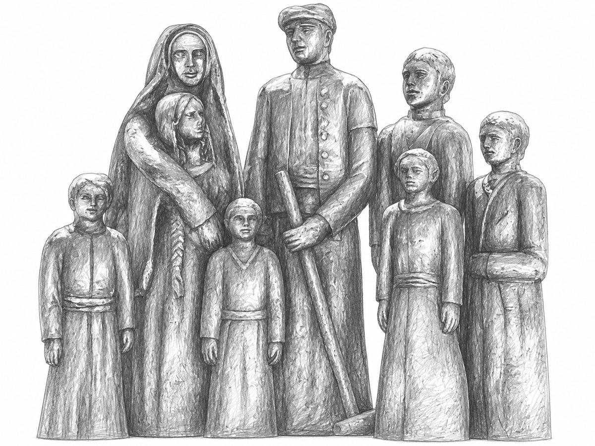
From the memorial to the first family of Ramallah
Dedication
To the people of Ramallah: to those who stayed on the hill, to those who carried it
with them to every city they went to, and to those, in every generation, who kept the names.
Preface
This is a history of a Palestinian Christian town told by its own people. Ramallah’s families have
always known where they came from. They have told it at weddings and funerals, written it in notebooks,
and carried it to San Francisco, Detroit and Jacksonville. What they have not had is the story set
out, date by date, beside the records that can be checked.
That is what we have tried to do. Our history is one timeline in twelve chapters. Each chapter tells
the story of its years first, then shows how we know it. Throughout, we follow two threads at once. One is the family’s own account,
reaching back through Rāshid al-Ḥaddādīn to Karak and to Ghassān. The other is what the land and the
documents say: the archaeology of these hills, the Crusader charter, the Mamluk endowment, the Ottoman
registers, the Jerusalem court, and the Mandate and Jordanian censuses. Where the two agree, we say so.
Where they disagree, we print both. Where a belief the family has long held turns out to be wrong,
a box shows what was believed and what the record says.
Every entry carries a label that says what kind of evidence stands behind it, from scripture and
the classical writers to documents and oral tradition. Oral tradition is evidence, and we treat it as
such. It is the town’s memory of itself. We have printed it in its own words and marked it as memory,
so that no reader mistakes it for a register and no register is allowed to silence it.
We have not finished. Names wait unread in the Ankara registers, and pages wait in archives we
have not yet reached. Readers who hold a document, a photograph or a story that belongs here are asked
to send it, so that our next version is more complete than this one.
Acknowledgements
We stand on the work of those who wrote Ramallah’s history before us. We are indebted to
ʿAzīz Shāhīn, whose book of the family trees (1982) is the foundation of everything here, and to
Naseeb Shaheen, whose pictorial histories preserved the town’s photographs and its two founding
accounts. We are indebted to ʿAdnān al-Ḥaddādīn, who wrote down the Ḥaddādīn account in 1953;
to Joseph Kaddoura, who wrote the town’s history in New York in 1954; to Khalīl Abū Rayya
and ʿAbdallah Mogannam, who crossed the Jordan in 1953 to ask; and to Khalil Totah, whose
diary kept the revolt of 1938 in the town’s own words.
We thank Sāmiḥ Ḥammūdeh, whose work in the Ottoman registers and the Jerusalem court records
put the families’ names back on paper; the Palestinian scholars and archaeologists of Birzeit
University, al-Quds University and the Institute for Palestine Studies; the
Municipality of Ramallah; and the Ḥaddādīn of Karak, who have kept their side of the story and
received Ramallah’s delegation as kin.
We compiled this history for the American Federation of Ramallah, Palestine. Its errors are
ours, and we will correct them in the open.
David Saah, PhD · John Mogannam
How to read this book
Our history is one timeline. Twelve chapters run from the first people on these hills to
today, in date order. Every chapter has two halves, always in the same order.The story
tells what happened in those years, with the photographs, maps and charts that go with it.
The evidence then sets out the sources for the same years and how we read them: the
registers, the inscriptions, the family charts and the harder questions. Each chapter ends with
what we still don’t know. Read the story halves for the history. Read on into the evidence
when you want to see how we reached it.
Every photograph sits in the chapter of what it shows. When a picture was taken long after
the time it shows, as with a photograph of a Roman road taken from the air in 1931, its caption opens
by saying so.
Two texts guide us: ʿAzīz Shāhīn’s history of 1982, which is a source, and John Aziz
Mogannam’s chart of thirty-six generations, which is our family’s own guide. Where both carry an entry
and testify independently, it carries the label TWO WITNESSES. From 1500 onward they do testify independently, because
Shāhīn writes the town’s own history from local memory and local records, while the chart is a
genealogy. Before 1500 they do not. There the chart follows the classical Arabic
ansāb tradition, the Arabic books of descent, which is also where Shāhīn’s deep lineage comes from. So those entries
carry the label ONE TRADITION instead: both texts carry the claim, but they are drinking
from the same well. We draw this line because the family history presented in 2026 (described in the
appendix) turned out to repeat a modern reconstruction, not an independent source.
Every entry also carries a label, shown as a small badge, saying what kind of thing holds it up:
SCRIPTURECLASSICALATTESTEDDOCUMENTSORAL TRADITIONNO EVIDENCE.
A document outranks a memory, and the memory is kept anyway; an inference is drawn as an inference;
a conflict is printed as a conflict; and where the record corrects the family, the correction
appears in a marked box at the date where it happens.
The chapters follow the land from its first peoples to the city it holds today.The land is the
thread that holds the story together, and our families are part of what happened on it.
Our own family line runs through the story as a chain of nine links. Every chapter
opens with a strip showing where that chain stands: which link we have reached, and what evidence
there is for it at that point. Often there is none, and the strip says so. Figure 0.1 sets out all nine
links at once, each with the source that carries it and, printed here for the first time,
what would prove it wrong.
One change of method matters more than any of the others. John Mogannam’s chart of
thirty-six generations is not treated as
a source. Its compiler is one of the two of us writing this history, which makes the point sharper
rather than softer. A chart cannot be its own evidence, least of all when the people printing it are
the people who drew it. So it is set out whole in the appendix as the family’s own guide, and a very
good one, with the points at which the texts correct it marked. Everything in the chain here is
built from Genesis, the Arabic genealogists, Procopius and the registers directly. Every
correction we make to that chart is a correction we make to ourselves.
And the chart’s count needs one change. Its generation 35 draws
nine hundred and thirty-one years as a single line. That stretch is about thirty-one
generations, so the line from Adam to Rāshid is sixty-six generations, not thirty-six —
thirty-six of them named, thirty with no name at all. The ladder in the strip that opens each chapter is drawn on that count.
How the generations are numbered — two numbers, and they are not the same.The chart’s number counts its own thirty-six rows, one of which is a nine-hundred-year void
drawn as a single line. Our number counts generations: sixty-six from Adam and
Eve to Rāshid, and about eighteen more to this morning, eighty-four in all. So “the
Mogannam chart, generation 36” means Rāshid’s row on the chart, and “generation 66” means
Rāshid. Generations 1 to 34 carry the same number in both.
We close with what the evidence shows about three things: where we come from, how we
became part of the Palestinian people, and when and how Ramallah was founded, with the key dates on one
page. After the bibliography comes an appendix that checks the family history presented in
2026: all thirty-six of its claims that can be checked, each with what we found, so that anyone can check them again.
Our own family line, in nine links, each one defined by the source that carries it rather than by any family document. Every era of this book opens with a strip saying which of these links we have reached and what evidence there is for it in that era — and for four of the nine eras the honest answer is none. Each link also carries, printed here for the first time, what would break it: the evidence that would falsify that link if anyone found it. Read the grade column downward and the shape of the whole argument is visible before a word of it is read — scripture, then classical scholarship, then a contemporary Greek historian, then a hole, then four hundred and sixty-four years of paper.Genesis 5, 10 and 11; al-Ṭabarī; Ibn al-Kalbī, Ibn Ḥazm and Ibn Durayd; Ḥamza al-Iṣfahānī and al-Masʿūdī; Procopius, the Nitl mosaics and CIH 541; the Ottoman defters of 1525–1596; the parish books and the censuses. John Mogannam’s chart is printed separately, in the appendix.
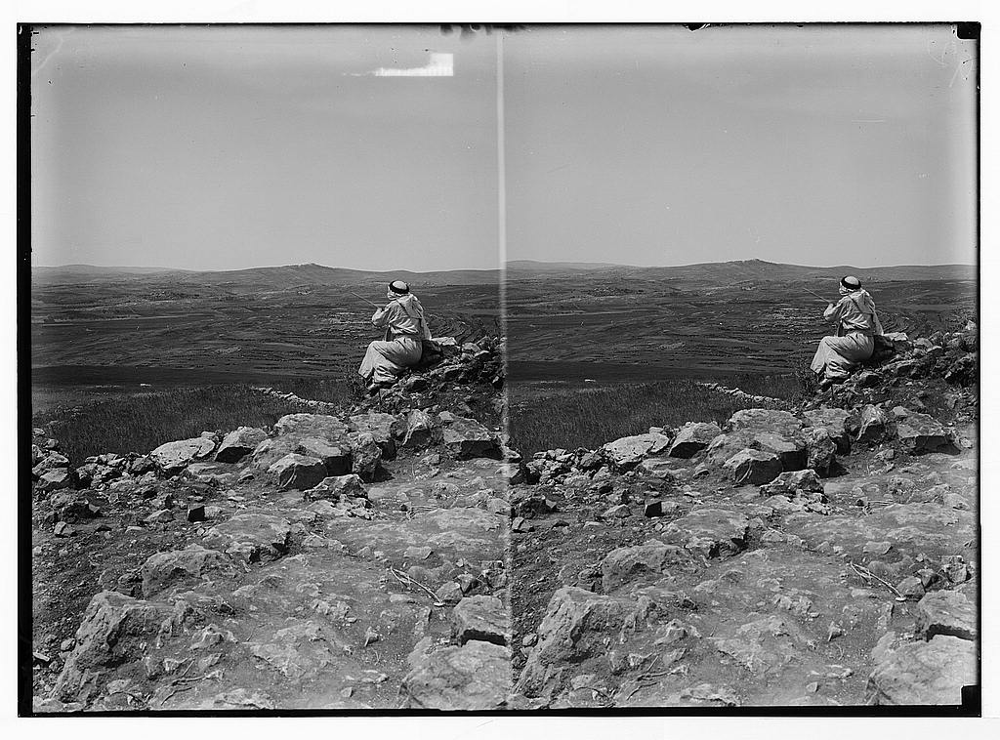
1The highland country of the Ramallah plateau, looking south-west from Tell en-Naṣba towards Nabī Ṣamwīl.
CHAPTER ONE
The land and its first peoplesto 1200 BC
How the world began, as scripture tells it, and what the ground of these hills shows: the first people, the first villages and the terraces still farmed today.
Behold, I alone am cultivating in the city of Shunama …
Biridiya of Megiddo to the king of Egypt, Amarna letter EA 365
Where our own line stands here
Links one to three · Adam to Qaḥṭān, and the join at JoktanSCRIPTURE
Scripture, and nothing else. No document of any kind reaches this stretch.
The story
—SCRIPTUREONE TRADITION
Adam and Eve
Long before there was a town on our hill, there was the land, and there were people living on it. Our story begins twice: once in scripture, and once in the ground of these hills. Our family’s line begins where Genesis begins. Adam to ʿĀbir (Eber) comes from Genesis 5 and 111, and from nothing else. No document, inscription or excavation reaches back that far, and we claim none.
First, it helps to know what kind of claim a line like this is. In the Middle Ages, peoples on
three continents traced their descent back to a universal ancestor. The House of Wessex traced theirs
to Woden and then to Noah, the Irish kings to Míl, and the Georgian kings to a grandson of Noah2.
A line like this says that a family belongs to the human story. It is not a chain of
checked fathers, and it would be a mistake to read it as one and then find it wanting.
Our way of building the line has changed. Our family has its own guide to it:
John Aziz Mogannam’s chart of thirty-six named generations, from Adam to Rāshid, in Arabic
and English. John is one of the two of us writing this history, and the chart is his own earlier
work. We no longer treat it as a source. Instead we build the line from the texts and documents
themselves: Genesis, the Arabic genealogists, Procopius and the Ottoman registers.
The chart is printed in the appendix for what it is: our family’s own working guide, and a very
good one, which the sources are allowed to correct3. Where the two differ, we show the
difference and do not smooth it over.
One text is still a key to everything: ʿAzīz Shāhīn’s history of 19824. It is a
documentary history of the town, written from local memory and local records, and it can be checked
line by line. Where Shāhīn and the chart each carry an entry on their own, it carries the label
TWO WITNESSES. Where both are drinking from the same well, it carries the label
ONE TRADITION instead.
—SCRIPTURE
The three Bibles and the date of creation
They differ by as much as 1,366 years. From creation to Abraham is 1,948 years in the Masoretic text (the standard Hebrew Bible), 3,314 in the Septuagint (the ancient Greek translation) and 2,249 in the Samaritan (the Samaritans’ own books of Moses).
Figure 1.1 · Chart
A line to Adam implies a date for Adam
The three surviving forms of the Old Testament give systematically different ages for the patriarchs. Which text you follow depends on your church, and our family, as a Rūm Orthodox house, follows the Septuagint.Genesis 5 and 11 in the Masoretic, Septuagint and Samaritan recensions.
These numbers are scripture, not chronology, and were never meant to be read as
chronology5. The first thirteen generations of the chart make no claim a laboratory could
test. What they say is something no laboratory could touch: that our family belongs to the whole
human story.
—SCRIPTURE
Joktan’s thirteen sons and their homeland
Genesis 10:26–29 names thirteen sons of Joktan. Several can be put on a map, and all of those are in South Arabia. Hazarmaveth is Ḥaḍramawt and Sheba is Sabaʾ beyond serious doubt, and Ophir, Havilah and Uzal are also generally placed there6. So scripture itself puts this branch in the very country that every later chapter of our family’s tradition walks out of.
Figure 1.2 · Diagram
The branch at ʿĀbir — where this line leaves Abraham’s
Genesis 10:25 gives ʿĀbir (Eber) two sons and says so in a pun: Peleg, “because in his days the earth was divided” — niplegāh, from the same root as the name. Peleg’s line runs on through Reu, Serug, Nahor and Terah to Abraham, and from Abraham through Isaac, Jacob, Levi, Kohath and Amram to Moses. Joktan’s line is ours. The two branches part three generations after the Flood — four in the Septuagint, which inserts Kainan — and six generations before Abraham. So if we ask “where do we split from Abraham?”, the answer is that we never joined him. We share Noah, Shem and ʿĀbir with that line, and part company at ʿĀbir’s two sons.Genesis 5; 10:21–29; 11:10–26; Exodus 6:16–20. The Septuagint reading of Genesis 11:12–13 and Luke 3:36 for Kainan.
Where Moses sits. Counting inclusively, Moses is the seventh name from Abraham: Abraham,
Isaac, Jacob, Levi, Kohath, Amram, Moses. He stands on the far branch, not on ours7.
That short chain is a known puzzle inside the text. The three generations from Levi to Moses,
Kohath and Amram between them, cannot span the four hundred and thirty years the same book gives to the stay in Egypt. The usual explanation is that the
list is a clan genealogy, telescoped (squeezed down) into personal names8. We meet the same
kind of puzzle at generation 35 of our own line, from the end of Chapter 4 onward, and the Bible does not solve it
either.
There is also a difference worth showing. The family chart counts thirteen names from Adam
to ʿĀbir. Genesis in the Masoretic text gives fourteen. The Septuagint gives fifteen, adding Kainan
between Arpachshad and Shelah, and Luke follows the Septuagint9.
The difference is one or two names in a list nobody can check, and it changes nothing that matters
here. We show it because a chart our family uses as a guide should be measured against the text it
comes from, not the other way round.
the whole of itATTESTED
What this land is made of
Before the story starts moving, here is one picture of the whole of it. It shows fifteen thousand years of people living on this ridge and around it, drawn as a cut through a tell, a mound built up from layer upon layer of settlement. Our own family walks in at the fourth layer from the top.
Figure 1.3 · Diagram
The land, drawn as a tell — fifteen thousand years of layering
Read it from the bottom up, the way a section is dug. Nothing in this column replaces the layer beneath it. Arrivals are absorbed; only the Franks, in the thin dark band, come and go again. Our family arrives in the Ottoman layer, four from the top, into a land that had already been lived in continuously for more than eleven thousand years. The layers are drawn thick enough to read, not to scale in time; every date in the column is calibrated and sourced in the entries around this figure.Our own entries throughout: the deep layers from the entries that follow in this chapter, the later ones from the chapters after it.Photographed 1926. The highland country of the Ramallah plateau, looking south-west from Tell en-Naṣba towards Nabī Ṣamwīl.American Colony Photo Department, 1926. Library of Congress, Prints & Photographs Division, loc.gov/item/2019696806. No known restrictions on publication (Library of Congress).
about 13,000 – 9,600 BCATTESTED
The Natufians and the cave at Shuqba
Scripture tells the beginning one way, and the ground tells it another. The first people in this land to build regularly in stone and to hold a camp through the year are called Natufians. They take that name because their way of life was first identified, in 1928, in a cave called Shuqba, on the north bank of Wadi an-Naṭūf, in the Ramallah and al-Bireh governorate, some eighteen kilometres west-north-west of Ramallah10. (A wadi is a valley that runs with water only after rain.) The oldest named thing in our whole story is local.
Figure 1.5 · Map
The oldest ground within a morning’s walk of Ramallah
Every dot is a site with a published excavation, and every distance is measured from the centre of Ramallah. The nearest of them, Tell en-Naṣba, is about two and a half kilometres away. What the map cannot show is how little of these highlands has been dug: the blank spaces are gaps in the survey record, not gaps in the past, and we say so rather than suggest the district was empty.Garrod (1928, 1932); Boyd & Crossland, Antiquity 74 (2000); Badè at Tell en-Naṣba (1926–35); Marquet-Krause and Callaway at et-Tell; Yeivin at ʿAin Samiya; Khalaily and Vardi at Motza; Perrot and Khalaily at Abu Ghosh; Kenyon at Tell es-Sultan.
Dorothy Garrod dug the cave at Shuqba in 1928, for the British School of Archaeology in
Jerusalem. She named the industry she found there, meaning its style of stone tools, after the
wadi11.
She was not the first to find the cave. Fr Alexis Mallon had noted it in 1924 and urged the
School to take it on. But hers is the excavation that gave the culture its name, and that name is a
Palestinian place-name12.
The Natufians are often called the first settled people in the world. That is more than the
evidence carries. Brush huts with prepared floors and bedding at Ohalo II, on the Sea of Galilee, are
some eight thousand years older, and scholars still argue over how settled the Natufians really
were13.
What we can say is narrower, and still remarkable. They were the first here to build in stone
as a matter of course, and the first to keep base camps lived in through much or all of the year,
before farming began.
The best single clue is not a building at all. The house mouse pushes out its wild cousin only
where people stay put long enough to feed it, and the house mouse appears at Natufian
sites14.
Below the Natufian floor of the same cave lay something older still. Garrod found a single tooth
in the Mousterian layer beneath, the layer of the Neanderthal-age stone tools. It is a child’s
permanent lower first molar, from someone about seven to twelve years old.
In 2021 a fresh study by micro-CT scan identified the tooth as Neanderthal, the southernmost
Neanderthal yet securely identified. On the excavators’ reading, which is disputed, it was found
with Nubian Levallois stone-working, a technique once treated as a mark of
Homo sapiens15. The cave is eighteen kilometres from Ramallah, in our own governorate,
and there is still no direct date on the layer.
about 9600 BCATTESTED
Jericho, twenty-three kilometres away
Twenty-three kilometres from Ramallah as the crow flies, down the eastern slope from our ridge, at Tell es-Sultan, people stopped moving and stayed. They settled there for good from about 9600 BC. About 9000 BC they built a round stone tower 8.5 metres high, with twenty-two steps inside it, and a wall 3.6 metres high and 1.8 metres thick at the base16. It is one of the earliest permanent settlements known anywhere on earth. It is also the same mound as the Jericho of Joshua 6. But that town, if it is in this tell at all, lies near the top, some eight thousand years higher in the layers than the tower17. One hill holds forty layers, and here we are standing on the bottom one.
Two things often said about Jericho should not be said. It is not “the oldest
continuously inhabited town in the world”. The tell has known
gaps. There are several centuries between the Pre-Pottery Neolithic A and B
(the early farming ages before pottery), more in the Pottery Neolithic, abandonment around 1950 BC,
and near-abandonment after the Iron Age. The modern town also sits beside the mound, not on
it.
Nor is it safely the oldest walled town. The round towers at Tell Qaramel in northern Syria are
some two thousand years older, and Jericho’s wall has never been traced around the whole
settlement18.
UNESCO inscribed the site in 2023 under the State of Palestine. It calls Jericho a sizeable
permanent settlement and ties it to the shift to a settled way of life. We follow UNESCO’s
wording, not the tourist one19.
What the tower was for is still unresolved. Kathleen Kenyon, who found it in 1952, read the tower
and wall as fortification. Ofer Bar-Yosef argued they were defences against floods and mudflows.
Bar-Yosef made the strongest single point in the debate. There is no evidence of burnt
settlements, mass casualties or comparable fortifications anywhere in the Levant before the sixth
millennium BC, some three thousand years later. Anyone who reads the tower as a defence has to
explain that absence. Others have read the tower as a monument of political power over a prime
spring, or as a solstice marker20. No explanation is agreed, and we set out the disagreement
rather than pick a side.
One caution on dates. The figure “8000 BC”, still common in books, is an uncalibrated
radiocarbon date from Kenyon’s samples, that is, one not yet corrected against the known record of
the past. Calibrated, the Pre-Pottery Neolithic A at Tell es-Sultan runs roughly 9700/9600 to
8600/8500 BC, and the tower is about eleven thousand years old, around 9000 BC. We use the calibrated
figures throughout.
Who did the digging matters too. Every excavator named so far is European or Israeli, and Jericho
is usually told only through them. That is not how the mound has actually been dug for
the last thirty years.
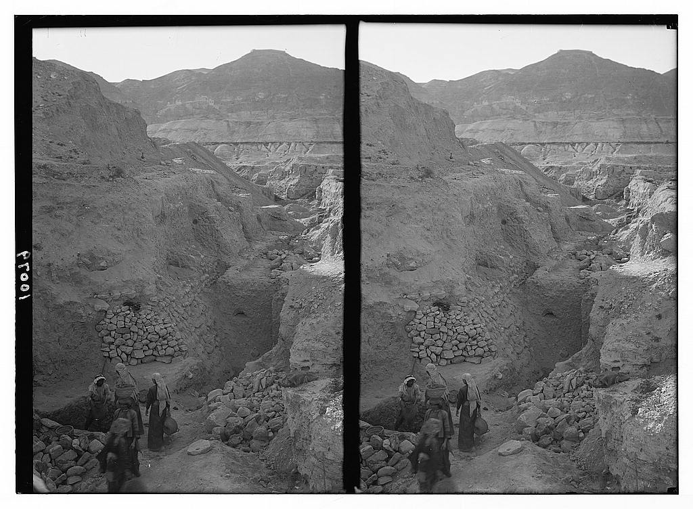
Photographed 1934–39. The walls of Tell es-Sulṭān, ancient Jericho, during the excavations of the 1930s, with Jabal Qurunṭul behind.American Colony Photo Department, 1934–39. Library of Congress, Prints & Photographs Division, loc.gov/item/2019694418. No known restrictions on publication (Library of Congress).
Since 1997 Tell es-Sultan has been dug by a joint expedition of the Palestinian Department
of Antiquities and Cultural Heritage, under the Ministry of Tourism and Antiquities, and Rome «La
Sapienza». It is directed by Hamdan Taha and Lorenzo Nigro, with Nicolò Marchetti in the early
seasons. The work is still running, and Lorenzo Nigro and Jehad Yasine have published an interim
report on the Bronze and Iron Age towns, covering the seasons of 2019–202321.
It is their work, not Kenyon’s, that now describes the town around the tower. By
Early Bronze II, about 3000–2700 BC, it had an urban plan and a massive system of
fortification. A double city wall has been traced at the southern and south-western edges of the
mound. Early Bronze III saw a society centred on a palace, and later settlement spread outside the
Middle Bronze wall.
The file on which UNESCO inscribed the site in 2023 was prepared by a Palestinian team
under that same ministry22.
The tower is still Kenyon’s find, and what it was for is still unresolved. But the town around it
has been dug again, dated again and published by the people whose town it is, and we now cite them
for it.
about 3500 – 2400 BCATTESTED
The first villages of this district
These are not general claims about “the region”. They are named, excavated and dated sites within a few kilometres of our town. Tell en-Naṣba, on the edge of al-Bireh and about two and a half kilometres from the centre of Ramallah, was a village of about 3500–3300 BC, in the Late Chalcolithic (the Copper Age) and Early Bronze I23. et-Tell, five kilometres east, was an Early Bronze town lived in from 3200 to 2400 BC24. ʿAin Samiya, fifteen and a half kilometres north-east, holds a cemetery of shaft tombs from the Intermediate Bronze Age, the time between the Early and Middle Bronze Ages, 2300–2000 BC. The famous ʿAin Samiya goblet came from it25.
Two mistakes are common in local writing, and we put them right here. ʿAin Samiya is often
called Chalcolithic. It is Intermediate Bronze Age, some fifteen hundred years later. And
et-Tell has no Chalcolithic phase at all: its earliest settlement is Early Bronze I, about
3200 BC.
We name these places for a simple reason. When we say the people of these hills were never
replaced, we are not arguing from a general theory about the Levant. We are speaking of ground you
can walk to from Ramallah in an afternoon, ground that has been dug, dated and published.
about 1500 BCEATTESTED
The Canaanite population of these highlands
Everything that comes later is added to this people. Lebanese today draw more than ninety per cent of their ancestry from the Bronze Age Canaanite population. People of the southern Levant today, our town among them by inference, carry a large Bronze Age share of the same kind, alongside later mixing26.
Figure 1.7 · Diagram
How a people is made
Ten arrivals and one people. Each bar begins when that group enters the record and fades into the common green as it is absorbed. Only the Samaritans keep their own colour to the present; only the Franks stop. Our family’s own stream — Arabs, and Ghassān — is the ninth bar. It was absorbed like the rest, and that is our whole story in one picture.Haber et al. (2017); Feldman et al. (2019); Agranat-Tamir et al. (2020) (Israeli authors; cited for context); Haber et al. (2019) on the Crusader pulse; Killebrew (2005); Ehrlich (2022) on conversion (Israeli authors; cited for context).
At no point in the last four thousand years were the people of this country wholly replaced.
The Philistines, as Chapter 2 shows, are the case that can be measured.27
They were not driven out. They married their neighbours. The Idumaeans were absorbed by AD 70.
The Nabataeans’ kingdom became a Roman province in 106 while its people stayed put. The country
turned Christian, then largely Muslim, by conversion and not by replacement28.
The Samaritans, who never merged, are still on Mount Gerizim, a living point of comparison. The
Franks, who really did leave, prove the rule by breaking it. They left a trace in the DNA, and
even that trace faded29.
So a Christian family claiming descent through Ghassān from Yemen, a Muslim family in the next
village claiming the Ḥijāz, and the Samaritans of Nablus claiming to have gone nowhere are not making
rival claims. They are describing different arrivals into the same people. Our own family’s
arrival is the ninth bar in the chart.
nobody can date it, and it is still in useATTESTED
The terraces and their stone towers
The hills around Ramallah are not really hills. They are staircases. Every workable slope within
sight of the town has been cut into level steps, held up by dry-stone walls called sanāsil (سناسل),
the local word. Nothing holds such a wall up but the weight of its own stones: no mortar, no
foundation, no bonding material of any kind30. In the fields stand small round huts with stone
roofs, built by the farmers so that somebody could sleep beside the crop while it ripened. In 2013 two
Palestinian scholars went out and counted them. In al-Tireh quarter and the village of ʿAin Qinia
alone, on Ramallah’s own western and northern edge, they recorded one hundred and sixty-seven
watchtowers over some three thousand dunums31. (A dunum is the local measure of land.)
Figure 1.8 · Diagram
The terraces, and one of the towers standing in them
A hillside above Ramallah drawn in section. Every riser is a dry-stone wall; every tread is a field; the small domed hut on the third terrace is one of the hundred and sixty-seven. The cutaway shows how the roof closes — each course of stone oversailing the one below until the last two meet, with nothing binding them. The strip along the bottom is the year: the tower is occupied for grain in May and June, for figs and grapes from July to September, and for the olives in October and November.Al-Houdalieh & Ghadban, International Journal of Architectural Heritage 7:5 (2013), 509–35, for the count and the survey; Ghadban (2012, 2015) for the construction and the seasons.
The roofs of the huts are corbelled. Each course of stone juts out a little over the one below,
until the last two meet at the top, with nothing binding them.
Nobody can date the terraces. Corbelled dry-stone building is old in this region, probably
Early Bronze Age in origin. But a terrace wall is not a monument. It is a machine, and a machine in
use gets repaired.
The stone that fell out last winter went back in this spring, and the stone beside it may have
been set by a Canaanite. A wall that has never been allowed to fall down has no layers to date. The
survey says so plainly: there is no concrete evidence for when the dry-stone structures of Palestine
first appeared32.
What we can date is the work, because the work follows the seasons and has not changed. The tower
is used when there is something in the field worth losing: the grain and early fruit in May and June,
the figs and grapes from July through September, and the olives in October and November. For seven
months of the year, somebody from the household is sleeping out on the land.
The huts were built together, several men to a tower, and the owner of the ground fed them while
they built it33.
This is our district’s own technology. Of everything in these early pages, it is the one thing
our own ancestors certainly made with their hands. Later, churches were built by patrons,
registers were written by clerks, and the armies belonged to somebody else. The terraces were built by
whoever was going to eat from them. They are still there, and people are still eating from them.
They are also disappearing. Ghadban’s parallel survey of the walls themselves found roughly
eighty-seven per cent of them partly collapsed. The causes are land confiscation and settlement
expansion, the separation wall cutting farmers off from their own plots, the town spreading up its own
hillsides, and the plain fact that fewer people now farm34. A wall that is repaired every year
survives four thousand years. A wall that nobody walks to falls down in twenty.
One word needs care. Qaṣr means two things in this book. In the fields it is the watchtower, built, the survey says, “to watch over the cultivated land” and as “an alternate living space” at harvest: of the 167 towers, 125 have two storeys, 41 have one and a single tower has three. In the story of 1834 it is the fortified house of a district shaykh. The two share a name and little else35.
The evidenceThe sources for this chapter, and how we read them
about 1350 BCEDOCUMENTS
The Amarna letters and who worked the fields
About 1350 BC the rulers of Canaan’s towns wrote letters to the pharaoh in Egypt. The clay tablets were found at Amarna, in Egypt, and are called the Amarna letters. Jerusalem, Shechem, Gezer and Lachish wrote in Akkadian, the written language of the courts of the time36. These were the city-states of our landscape, and they were Canaanite. Even our town’s name keeps the sound of that age: rām (رام) is a Semitic root meaning height, Canaanite-era vocabulary still doing its job37. The letters are usually read as diplomacy: kings, tribute, the ʿapiru (people on the margins), who is loyal and who is not. Read them the way an employer reads a file, and they are about labour: who goes up the hill, and who ploughs.
The clearest sentence in the whole archive on that question is on a small tablet in the Louvre,
six and a half centimetres by six, numbered EA 365. Moran gives it the heading
Furnishing corvée workers. A corvée is unpaid labour owed to a ruler. The letter is from
Biridiya, the mayor of Megiddo, and after the usual words of bowing down it says this38:
Let the king, my lord, be aware regarding his servant and his city.
Behold, I alone am cultivating in the city of Shunama; and, as for me, I provide forced
labourers. Now, behold, the mayors who are near me do not do as I do. They do not cultivate
in the city of Shunama, and they do not provide forced labourers. I alone provide forced
labourers.Amarna letter EA 365, Biridiya of Megiddo to the king of Egypt · Louvre AO 7098
The word he uses is massu. It is the same Semitic word as the Hebrew Bible’s
mas, the levy of forced labour a king raises out of his own people39. Biridiya is
not complaining about an invasion. He is complaining that his neighbours are not sending men, and that
the whole gang on that field is his. He is filing a labour return.
This letter is not about our ridge, and we should not make it so. Shunama is Shunem, in the
Jezreel valley, some sixty kilometres north. The ridge above Ramallah lay in the land the king of
Jerusalem wrote about.
We quote it for a different reason. Every document in our story from here to the Ottoman registers
is written by somebody counting other people: a mayor, a scribe, a bishop, a tax clerk. In every one
of them, the people being counted are the same people, the ones in the field. The archive names the
mayors. The corvée is everybody else, and everybody else is our ancestors.
Three thousand years later a qāḍī, a judge of the Islamic court, in Jerusalem will write down six
men from the village of Ramallah who have promised to plough a hill, and he will name all six. That is
the whole difference between the two ends of our story. It is not who was working, but whether anyone
wrote down their names.
What the scholars say
Hamdan Taha (حمدان طه) — “Archaeology in Palestine: The Palestinian Department of Antiquities and Cultural Heritage” · “The Current State of Archaeology in Palestine”DACH, Ramallah · Present Pasts 2 (2010)The founder of the Palestinian antiquities service explains what the national archaeological record holds, who keeps it, and what was lost.
Elihu Grant — “Ramallah: Signs of the Early Occupation of This and Other Sites”PEF Quarterly Statement 58:4 (1926): 186–195The only archaeological article on Ramallah in the PEF series, gathering surface finds, tombs and the signs of the town’s earliest occupation.
Salah al-Houdalieh & Shadi Ghadban — “Agricultural Watchtowers in Al-Tireh Quarter and ʿAin Qinia Village”Int. Journal of Architectural Heritage 7:5 (2013): 509–535A survey of the stone watchtowers in the terraced hills west of Ramallah, and the best way into that long-lived farming landscape.
مصطفى مراد الدباغ / Muṣṭafá Murād al-Dabbāgh — بلادنا فلسطين، الجزء الثامن، القسم الثاني: في ديار بيت المقدسDār al-Ṭalīʿah, Beirut, 1965– · vol. 8, part 2The standard Palestinian encyclopaedia, village by village, and the source for reading Rām as a shared Semitic root meaning height.
Marc Haber et al. — Levantine population geneticsPLOS Genetics 9:2 (2013) · AJHG 101:2 (2017): 274–282Two free studies of continuity and mixture among Levantine peoples, read with care: nothing yet tests Palestinian Christian families directly.
We don’t know when the terraces around our town were first built,
and no one has yet dated them. We don’t know what the great tower at Jericho was for.
The layer in the Shuqba cave that held the Neanderthal tooth still has no direct date, and what the
tooth was found with is still argued. Scholars also still argue over how settled the Natufians really
were. If you know of work that answers any of these, we would like to hear from you.
2The Iron Age city gate at Tell en-Naṣba, on the Jerusalem road, south of al-Bīra.
CHAPTER TWO
Kingdoms on the ridge1200–539 BC
The highlands fill with villages, neighbours rise across the Jordan, and Assyria writes the land down. Far to the south, the great dam of Maʾrib is built.
There was for Sabaʾ, in their dwelling-place, a sign: two gardens, on the right hand and on the left.
Qurʾān 34:15
Where our own line stands here
Link four of nine · Qaḥṭān to al-AzdNO EVIDENCE
The dam is built in the country the tradition names. The place is proven by inscription; the persons are not.
The story
about 1200 → 1000 BCEATTESTED
The highlands fill up
Around 1200 BC the Late Bronze order of city-states came apart, and the whole region reorganised itself. In the two centuries that followed, the central hill country went from roughly twenty-five settlements to roughly two hundred and fifty, and from a scatter of people to something near forty-five thousand. The new villages were small, unwalled and farming, founded on hilltops nobody had bothered with before40. Nothing like it happened on the coast, in the Jordan valley, or anywhere a migration would have had to come from.
Figure 2.1 · Chart
The highlands fill up, and nowhere else empties out
One dot for every settlement the surveys found. The jump is real and it is local. A tenfold increase in two centuries is a great deal of people — but they appear in the hills without appearing to leave anywhere else, and they arrive carrying the same cooking pots as the country they are already in.Finkelstein (1988); Finkelstein & Silberman (2001) (Israeli authors; cited for context); Killebrew (2005).
The surveys fail to find three things, and each one tells us something. They find no layer of
destruction: the highland villages are new foundations on empty ground, not burnt towns taken
over. They find no new pottery tradition: the cooking pots carry on the local Late Bronze styles, and
people arriving from outside bring their own kitchen. And they find no matching emptying-out
elsewhere. If these tens of thousands had walked in from the coast or the valley, the coast and the
valley would show it, and they do not41.
So where did they come from? From the country itself. The evidence points to a people
forming in place: highland farmers already there, herders settling down, and people moving up off the
failing lowland city-states as the Late Bronze order came apart. There was no single origin. It was
the ordinary churn of a region reorganising itself after a collapse, and every strand of it was
already local.
Figure 2.2 · Map
The ridge in the Iron Age, and the gap in the middle
Every excavated Iron Age site within a morning’s walk. Khirbet Raddana lies on the edge of Ramallah and al-Bīra, about 800 metres north of al-Manāra (its excavators placed it “in Bireh”) — a village of the twelfth and eleventh centuries BC, on Ramallah’s doorstep, excavated over four salvage seasons between 1969 and 1974 and since built over by the town’s own growth. The dashed ring is Ramallah, which is not there yet and will not be for two and a half thousand years.Callaway and Cooley at Khirbet Raddana and et-Tell; Badè at Tell en-Naṣbeh; al-Houdalieh & Sauders (2009) on what urban growth has since done to these sites.
Then comes the name. The word Israel first appears in 1208 BC, on a victory stele, a carved
stone slab, of the pharaoh Merneptah. It is written with the Egyptian sign for a people, not for a
city or a land42. Egyptian writing adds such a sign, called a determinative, to show what
kind of thing a word names. So the earliest outside witness describes Israel as a people in Canaan,
with no territory attached to its name: a group of people living in this country, among the people of
this country.
That is our whole story in one paragraph. The population on this ridge is continuous: Canaanite,
then Israelite and Judaean, then Hellenised (Greek in language and ways), then Christian by
conversion, then in large part Muslim by conversion, then Palestinian. These are names taken by a
people, not peoples replacing one another. Our family is inside that continuity, and so is everyone
else who ever farmed these terraces. Nobody on this ridge is a newcomer, and nobody on it is the only
one who was here.
Khirbet Raddana, a closer look. The village on the edge of our town was lived in only in these two centuries. It had clusters of pillared houses, cisterns and terraces, and a jar handle from it carries one of the early alphabetic inscriptions of the hill country. It was dug in a hurry from 1969 to 1974, in its excavator’s words “before the encroachments of modern civilization destroyed or covered the ancient remains.” Today it is almost wholly built over43.
A modern photograph. The Iron Age city gate at Tell en-Naṣba, on the Jerusalem road, south of al-Bīra.Matson Photo Service. Library of Congress, Prints & Photographs Division, loc.gov/item/2019705575. No known restrictions on publication (Library of Congress).
about 1175–840 BCEATTESTED
The neighbours, near and across the Jordan
While the highland villages went on terracing the same slopes, the coast and the plateau filled up with peoples whose names are still in the language. The Philistines lived at Gaza, Ashkelon and Ashdod, the Phoenicians at Tyre and Sidon, and the Arameans inland at Damascus. Across the river were Moab, Ammon and Edom. Every one of them was in time absorbed into the people of this region, and not one of them replaced it.
One of these neighbours matters directly to our family. The plateau our tradition names as its
road out, Karak and Shawbak, is ancient Moab and ancient Edom. Karak itself is generally identified
with the Kir of Moab of the Hebrew Bible.
And Moab left a document. The Mesha Stele, a stone cut about 840 BC and found at Dhībān in 1868,
is the longest Iron Age inscription anyone has recovered from this landscape. It is written in
Moabite, a language so close to Hebrew that it can be read straight off the stone.
It can also be checked against scripture, because both sides wrote the war down. The stele is King
Mesha’s account of throwing off Israelite overlordship. 2 Kings 3 is the same war from the other
side, and names the same king: “Mesha king of Moab was a sheep-master”44. So we have
two accounts of one campaign, one on stone and one in scripture, each of them the enemy’s version of
the other. The plateau our family remembers as a place of exile has been literate, settled and writing
about itself for nearly three thousand years.
One neighbour is the clearest example of all. The Philistines arrived about 1175 BC carrying a
southern-European-related ancestry whose source population is not yet pinned down, and the arrival is
visible in the ancient DNA at Ashkelon. Then, within no more than two centuries, the signal is gone.
They did not leave. They married their neighbours. That is what happens in this country to
everybody who comes, and it is what happened to our family too, three thousand years later.
8th–7th c. BCEATTESTEDONE TRADITION
The great dam of Maʾrib is built
The great sluice works of the Sabaean dam, the stone gates that let its water out into the fields, are dated by inscription and excavation to about the eighth and seventh centuries BC45. Our family’s own account, ʿAdnān al-Ḥaddādīn’s manuscript of 1953 as Shāhīn prints it, remembers the dam “built as early as the 7th century B.C.” That memory lands on the right phase, with a caution we come to in a moment.
It is worth pausing on what the dam actually was, because the whole first half of our family’s
story is a story about water. The dam was not a reservoir. It was a diversion wall of packed earth, some
620 to 680 metres long as the surveys variously give it46. It was thrown across the Wadi Dhana where
the valley breaks through a gap between two mountains.
Its purpose was to catch the flash floods that come off the Yemeni highlands twice a year. Through
two great masonry sluice towers, it pushed that water into a network of canals47. It watered
something on the order of ninety-six square kilometres of desert.
With repairs, it worked for more than a thousand years. Almost nothing else
in the ancient world matched that working life, though the Dujiangyan irrigation works in Sichuan,
begun about 256 BC, are still running today48.
Figure 2.4 · Diagram
The machine that watered a kingdom
The dam of Maʾrib in schematic: the wadi, the gap between the two Balaq mountains, the wall, the two sluices, and the two irrigated gardens on either bank. The Qurʾān’s phrase for Sabaʾ — “two gardens, on the right hand and on the left” — is a literal description of this diagram.The Sabaic inscriptions and the excavation record; Qurʾān 34:15.
Here the Qurʾān joins Genesis and our family’s manuscript. The Qurʾān describes this very place, in these very
terms: “There was for Sabaʾ, in their dwelling-place, a sign: two gardens, on the right hand and
on the left”49.
So the pieces fit together. Genesis puts Joktan’s sons in this country. Arab tradition knows
Joktan as Qaḥṭān, father of the southern Arabs, and counts the Azd among his descendants. The Qurʾān describes its
gardens. Our family’s 1953 manuscript dates the dam’s monumental phase to the seventh century
BC, and the inscriptions bear that phase out.
Three cautions belong here. Genesis says nothing at all about a dam: it is a witness to the
country, not to the structure. And a 1953 Arabic manuscript that gives a date as “the 7th
century B.C.” is far more likely to be repeating published European scholarship on Maʾrib than
remembering anything. It is the one-tradition problem in small, and it applies to our family’s own
text.
The men who surveyed the oasis do not all give the same date. Ueli Brunner puts the first
continuous Great Dam in the sixth century BC, and flood irrigation at the Wadi Dhana as far back as the
third millennium BC50. So “as early as the 7th century B.C.” is close for the
dam, and late by two thousand years about the site.
The evidenceThe sources for this chapter, and how we read them
the names on the groundDOCUMENTS
The Bible as a map of our district
Nobody found the biblical places by reading the Bible. They were found by walking into Palestinian villages and asking the people who lived there what they called home. The answers turned out to be the ancient names, carried in Arabic by farming families for three thousand years51. ʿAin Shams is Beth Shemesh. ʿĀqir is Ekron. Beitin is Bethel. Seilūn is Shiloh. Mukhmās is Michmash.
Figure 2.5 · Table
Every biblical place within a day’s walk, and the village it survived as
The right-hand grade is for the identification, not for the scripture — whether the ground has confirmed the name, merely agrees with it, or is still argued. Nine places, and the furthest is nineteen kilometres from Ramallah. Ramallah is not among them, because Ramallah is not there yet; but al-Bīra next door may be Beeroth, and the ground the town would be built on lay in the middle of all of it.Robinson & Smith (1841); Pritchard at al-Jib (1956–59); Badè at Tell en-Naṣbeh; Albright and Kelso at Beitin; Marquet-Krause, Callaway and Hani Nur el-Din at et-Tell.
At one of these places the ground answered in writing. At al-Jib, six kilometres from Ramallah,
James Pritchard dug between 1956 and 1959. He found more than sixty jar handles inscribed
גבען, Gibeon, in Hebrew script of the eighth and seventh
centuries BC52. The village had been called al-Jib for as long as anyone could remember, and the
jars in the ground agreed with the villagers.
One of the nine places works the other way round, and we include it just as gladly. et-Tell, five
kilometres east, is biblical Ai, and the Hebrew ha-ʿAi means “the ruin”. The
excavation found exactly that: an Early Bronze town destroyed about 2400 BC, then empty for more than
a thousand years, then a village of Iron I, the first part of the Iron Age, built quietly on the abandoned mound53. The name and
the ground say the same thing. Whoever named that hill knew what was on it.
What does this mean for a family from Ramallah? The landscape of scripture is not somewhere else.
It is the ground between al-Bireh and Ṭaybeh. Its names were kept by the people who farmed those
hills and went on saying the words, not in a library, not by a church, not by a state. When we say
the people of this ridge were never replaced, the map of the Bible is one of the proofs. A replaced
people forgets the names.
745–681 BCEDOCUMENTS
Assyria writes the land down
From Tiglath-pileser III (745–727) onward, the Assyrian empire recorded this country in cuneiform, the wedge-shaped writing of Mesopotamia. It left tribute lists, provincial reorganisations and deportations, and Sennacherib’s siege of Lachish carved in relief for the walls of Nineveh54. What matters here is not who paid whom. From the eighth century BC onward, outside powers documented this landscape continuously, and in none of their documents is it ever empty.
At the other end of our family’s story, the incense road was already running in these
centuries. Pliny, writing much later, in the first century AD, describes it in detail. The frankincense of South Arabia was gathered at Sabota,
which is Shabwa, in Ḥaḍramawt. Ḥaḍramawt is the land of Hazarmaveth, one of Joktan’s thirteen sons in
the Genesis list we met in Chapter 1. At Sabota a tenth of the incense was tithed to the god at a single gate.
From Sabota the incense was carried on to Thomna, capital of the Gebbanites, a neighbouring
people, and from there it went 1,487½ miles by camel to Gaza
on the Palestinian coast, in sixty-five stages. Pliny even totals the bill. Water, fodder, lodging
and tolls came to 688 denarii (Roman silver coins) a camel, before a single Roman customs officer was
paid55.
This is worth stopping on. More than a thousand years before the dam of Maʾrib broke, and more than
two thousand years before Rāshid crossed the Jordan, a permanent, tolled, mapped trade road already
joined the country scripture gives our family to the country our family now lives in. It ended at
Gaza, some eighty kilometres south-west of the ridge. The migration our tradition remembers did not
need to invent a route. It only needed to use one that had been open, in both directions, for the
better part of a thousand years.
What the scholars say
Joseph A. Callaway & Robert E. Cooley — “A Salvage Excavation at Raddana, in Bireh”BASOR 201 (1971): 9–19An Iron Age village of pillared houses, silos, cisterns and terraces inside modern al-Bīra, with one of the highlands’ earliest alphabetic inscriptions.
Awni Shawamra (MOTA-Palestine) & Federico Cappella — “An Iron Age II Tomb with Phoenician Items at Khirbet Bir el-Kharayib”Vicino Oriente 24 (2020): 27–55A Palestinian Ministry salvage dig of an Iron Age tomb with Phoenician wares on the Nablus–Ramallah boundary, fully published and free.
Salah H. al-Houdalieh — the Ramallah province heritage-destruction corpusIJCP 16:1 (2009) · NEA 69:2 (2006) · PEQ 144:2 (2012)Palestinian fieldwork on what building and looting have done to the district’s ancient sites, which doubles as a gazetteer of them.
Robert G. Hoyland — Arabia and the Arabs: From the Bronze Age to the Coming of IslamRoutledge, London, 2001The standard one-volume history of ancient Arabia, from Sabaʾ and Maʾrib to the caravan kingdoms, for weighing the migration story.
DASI — Digital Archive for the Study of pre-Islamic Arabian InscriptionsUniversità di Pisa / CNR · online, freeThe Sabaic inscriptions, free to read, where the dam legend meets dated stone: the dam was real, and it broke more than once.
الهمداني / al-Hamdānī — صفة جزيرة العرب (ed. Muḥammad al-Akwaʿ)d. c. 334/945 · ed. Muḥammad al-AkwaʿA Yemeni geographer who walked the land describes Maʾrib and its country and the tribal map of the south the story starts from.
We don’t know the source of the southern-European-related ancestry the Philistines brought. No excavation has found an Iron Age village under Ramallah’s old town. The nearest, Khirbet Raddana, on the edge of Ramallah and al-Bīra, has since been built over, so we may never know more about who lived on our ridge in these centuries. If you know of a record or a dig that speaks to either, we would like to hear from you.
3The Roman roads to Samaria and to Caesarea, forking on the ridge about four miles north of Jerusalem, from the air in 1931.
CHAPTER THREE
Persians, Greeks and Romans539 BC – AD 324
Six sovereigns rule the ridge in turn. The villages stay, and Rome builds the road that runs past the future town.
… went thence unto a country near to the wilderness, into a city called Ephraim, and there continued with his disciples.
John 11:54
Where our own line stands here
Link five of nine · al-Azd towards GhassānNO EVIDENCE
Nothing datable in our own line for the whole of this era.
The story
539–63 BCEDOCUMENTS
Six sovereigns over one ridge
Cyrus took Babylon in 539, and the edict of return is usually dated 538. Alexander came in 332. Then came the Ptolemies, the Seleucids and the Hasmoneans, a Judaean royal house, and Pompey in 63 BC. Five changes of sovereign in five centuries, and no change of population. The district around Jifnā, the Roman Gophna, that Rome would inherit, and Pliny would write down, began in the Hellenistic age of the Greek kings. Rome did not invent this landscape; it took delivery of it.
The period left ordinary paperwork, which is the best kind of evidence there is. The Zenon papyri
are the working letters of an agent of Ptolemy II’s finance minister. He was travelling through
this country in 259 BC, on a tour begun late in 260. His letters record estates, grain, slaves,
wine and olive oil moving through Palestinian towns, in Greek, as routine commercial
business56. Nobody writes letters like that about an empty country.
Figure 3.1 · Timeline
Six sovereigns, one people
Five changes of sovereign in five centuries, and every one of them happened above the villages rather than to them. The bands are the rulers; the green line underneath is everyone else.
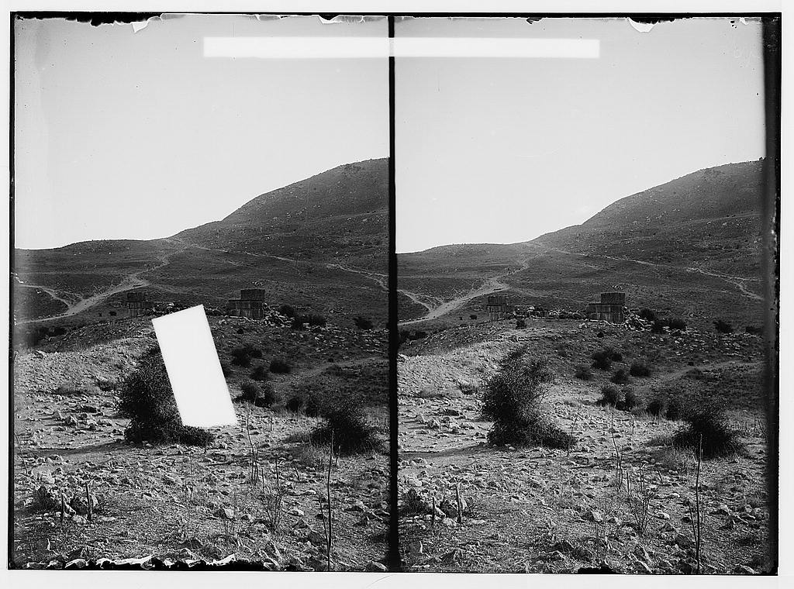
Photographed about 1900–1920. Qaṣr al-ʿAbd at ʿIrāq al-Amīr, a Hellenistic palace east of the Jordan and one of the few buildings of the period still standing.American Colony Photo Department, about 1900–1920. Library of Congress, Prints & Photographs Division, loc.gov/item/2019693196. No known restrictions on publication (Library of Congress).
5th–2nd c. BCEATTESTED
The Samaritans and Mount Gerizim
Magen dates the sanctuary on Gerizim, from its remains, to the mid-fifth century BC, and that date is disputed. When the Samaritans finally parted from Judaism is disputed too. The decisive break is usually placed at the Hasmonean destruction of their temple there, about 110 BC57. What follows is not disputed. The Samaritans are still on that mountain. From a population in the hundreds of thousands in the Byzantine era, they fell to about 150 people by 1900, and they have grown again to some 900 today58. Here continuity is something you can see, not just argue. And the Gospel sets a conversation in sight of that same mountain: “our fathers worshipped in this mountain, and ye say that in Jerusalem is the place where men ought to worship”59.
about 27–30 CESCRIPTURE
The roads Jesus used
The Gospels are not set near our district. They are set in it. Put every place they name at its real position, and the whole of it fits inside a day’s walk of the hill Ramallah would be founded on fifteen centuries later. Jerusalem is fourteen kilometres away, Bethany fifteen, Jericho twenty-three, and Ephraim eleven60.
Figure 3.3 · Map
The roads he used, and the ridge they run along
Left, the country: the two roads between Galilee and Jerusalem, and where this ridge sits on one of them. Centre, the district within a day’s walk. Right, what the Gospels say is at each place. Every marker is graded on the identification of the site, never on the verse. Green is named in the Gospels at a securely identified place; grey is named in the Roman record but not in the Gospels; the dashed dark rings are medieval pilgrim tradition, printed and labelled as tradition.John 11:54; Luke 2:41–46, 10:30, 19:1, 24:13; Josephus, Ant. XX.118 and BJ IV.550–51, VI.113–15; Robinson & Smith (1841); Pringle, Churches of the Crusader Kingdom.
Start with the road, because the road is the part that is certain. There were two ways from
Galilee to Jerusalem: down the Jordan valley and up through Jericho, or straight down the watershed,
the high spine of the hills, through Samaria.
Josephus says plainly which one Galilean pilgrims used: “It was the custom of the Galileans,
when they came to the holy city at the festivals, to take their journeys through the country of the
Samaritans”61. The watershed road runs along the top of our ridge, within sight of the
future town, and Rome later paved it and set milestones along it62.
Three times a year, at Passover, Pentecost and Tabernacles, the pilgrims of Galilee came down
past this hill. That is not a claim of faith. It rests on a road, a custom recorded by a
witness of the time, and a count of milestones.
Now to the one town on this ridge the Gospels actually name. John says that when it became unsafe
for Jesus near Jerusalem he “went thence unto a country near to the wilderness, into a city called Ephraim,
and there continued with his disciples”63.
Ephraim is generally taken to be today’s Ṭaybeh. Look at where it sits on the map. It is on the last inhabited edge of the ridge, and east of
it the land falls away into the wilderness of the Jordan rift. The verse describes this place
accurately: a town at the end of the settled country, with the desert starting at its feet, which
is exactly what a man withdrawing from Jerusalem would want. And it is still, today, the last entirely
Christian town in Palestine.
Photographed 1931. The Roman roads to Samaria and to Caesarea, forking on the ridge about four miles north of Jerusalem, from the air in 1931.American Colony Photo Department. Library of Congress, Prints & Photographs Division, loc.gov/item/2019713050. No known restrictions on publication (Library of Congress).
Two more places on this map belong to the beliefs of the neighbours rather than to the evidence,
and we mark them that way. At al-Bireh, one and a half kilometres from the centre of Ramallah,
there is a Crusader church. It is in the record by 1128, and the German pilgrim Theodoric described it
in 1172. By the fourteenth century the Latins held that this was the day’s-journey halt of Luke 2:44,
where Mary and Joseph discovered the boy was not with the company64.
At al-Qubeiba, nine kilometres to the south-west, there is a Crusader village and a fort
called Castellum Emmaus. Pilgrims began calling it the Emmaus of Luke 24:13 in the thirteenth
century, and the Franciscans adopted it in 133565.
Neither place is evidence about the first century. What they show is worth saying: for eight
hundred years the people living beside this ridge have believed the Gospel happened at their own
door. That belief is itself a dated, documented, physical fact, with a church and foundations. We
mark the two places violet and dashed on the map, and leave the reader to weigh them.
about 30 CEDOCUMENTS
Life on the ridge in AD 30
A tax district, a highway and a harvest. The people on these hills in the year of the Gospels were villagers of the Gophna toparchy, one of the ten districts of Judaea, with its capital at Jifnā, about seven kilometres from the future town66. They grew olives and vines on terraces their grandparents had built, pressed oil, and paid it to Rome.
We cannot name one person who stood on Ramallah’s own hill in AD 30. There is no Ramallah
yet. The excavations at Khirbet et-Tireh, two kilometres away, show the ground was worked and prayed on
from the Roman period onward, but no text names a soul on it67.
What we can name is everything around a person: the district, the road, the crop, the press and the
tax. That is more than most families can say about their ground in any century, let alone the
first.
The terraces are the strongest single piece of it. They are the same system we described in Chapter
1: dry-stone walls with no mortar of any kind, built to hold soil and water on a slope, and worked
for so long that no one can date their beginning68.
The terraces on the hills Jesus walked through are the terraces our family would one day farm.
Nobody rebuilt this landscape between the two dates. It was kept up, wall by wall, by whoever was
living on it.
The road was busy, and dangerous. Josephus records Galilean pilgrims attacked at the Samaritan
village of Ginae on their way up to a festival (one man killed in his first telling, many in his second), and the reprisals and Roman hearings that
followed69. The episode only makes sense if the ridge route carried heavy, regular, mixed
traffic. Whoever was farming this ridge in the first century was living on the main road,
watching the whole country walk past their terraces three times a year.
69 → 70 CEDOCUMENTS
Rome returns, AD 69–70
When Rome came back to settle the revolt, it came up this road, and Josephus names the stops. Vespasian “went up to the mountainous country, and took those two toparchies that were called the Gophnitick and Acrabattene”. Then Josephus goes on: “after which he took Bethel and Ephraim, two small cities; and when he had put garrisons into them, he rode as far as Jerusalem.”70 Acrabattene was the district around ʿAqraba, south-east of Nablus.
Read those two names together. Bethel is the town of Jacob’s ladder, and Ephraim is the town John
says Jesus withdrew to. They lie four kilometres and eleven kilometres from the centre of today’s
Ramallah, and they are the two places the Roman army thought worth garrisoning on its way to
besiege Jerusalem. The Gospel map of this ridge and the Roman army’s map are the same map: the same
small towns, on the same road, forty years apart.
Then the district is used one more time, in the most human detail in this chapter. During the
siege, Titus took the surrender of a group of Jerusalem’s notables, among them the high priests
Joseph and Jesus, and the sons of leading families. He “sent them to Gophna, and desired
them to remain there for the present,” promising that when the war was over he would restore every
man his property.
The rebels inside the city then put about that the Romans had butchered them, to stop anyone else
deserting. So Titus brought the same men back from Gophna and walked them round the walls with
Josephus, alive, where the defenders could see them71.
So in the summer of AD 70, the surrendered priesthood of Jerusalem was being housed in a village about seven
kilometres from a hilltop that had no name yet. After the life of Jesus, this ridge was
the last stage of the road to Jerusalem, and then the place Jerusalem’s survivors were put.
And then, as we read the evidence, nothing happened to the population. The villages of the Gophna toparchy were not destroyed
and not emptied. The terraces were not abandoned, and the same names went on being used. Within three
centuries these hills were Christian, and in the next chapter we show it happened by conversion, not by
replacement. The people who watched the pilgrims pass in AD 30, and the legions pass in AD 69, are
the people who were still on this ridge when sixty-three Christian households and eight single men walked up it in 1562.
The evidenceThe sources for this chapter, and how we read them
63 BCE → 77 CEDOCUMENTS
Rome writes the district down
Pompey took Judaea from the Hasmoneans in 63 BC, and a century and a half later the empire had the place on paper. Pliny lists Gophna, which is Jifnā, about seven kilometres due north of our ridge, among the ten toparchies, or districts, of Judaea. Josephus calls it “the second of those cities” after Jerusalem itself72.
Figure 3.5 · Map
The district when Rome wrote it down
Ramallah’s neighbours in the Roman and Byzantine record, with the imperial road that runs the length of this ridge. Every green dot is named in a surviving text. The ochre circle is the site of Ramallah — named in none of them, and in none at all until 1186.Pliny, NH V.70; Josephus, BJ III.54–55; Eusebius, Onomasticon; the Madaba mosaic; Tappy, NEA 75 (2012); al-Houdalieh on Khirbet et-Tireh.
The hills our family would one day reach were not a wilderness. They were an imperial district with
a paved highway down the middle. This was the road from Aelia Capitolina, as Rome called Jerusalem, to
Neapolis, today’s Nablus, milestoned and measured.
Eusebius later used this road as his surveyor’s baseline. Bethel, he writes, is “twelve miles
from Jerusalem, to the right of the road going to Neapolis.”73When our family walks up
this ridge in 1562, and when the first emigrants ride down it in 1901, they are using a road Rome
paved.
Two kilometres from the future town centre lies Khirbet et-Tireh (a khirbet is a ruined site). It
has two churches, a monastery and an oil press, excavated by Salah al-Houdalieh, and it shows the
ground itself was worked and prayed on for some seven hundred years, from the Roman period
onward74. Only the name Ramallah is missing from every text. The neighbours are Roman, the
ground is Byzantine, and the name will come with the Crusader records, in 1186.
about 30 CEDOCUMENTS
“A city called Ephraim”
John 11:54: “A city called Ephraim, and there continued with his disciples.” The city is generally identified with Ṭaybeh, eleven kilometres from Ramallah75.
Εφρων ἡ Εφραια ἔνθα ἦλθεν ὁ Κ(ύριο)ς
“Ephron, also Ephraia, where the Lord went.”
The Madaba mosaic map, sixth century — the caption still in the church floor at
Madaba76
And the road Jesus used is this road. In the Josephus passage quoted above, the Galileans
going up to the festivals take their journeys through the country of the Samaritans77. That is the ridge route, past the site of Ramallah.
In 451, at the Council of Chalcedon, Jerusalem became a Patriarchate, the seat of one of the
church’s senior bishops. The church our family belongs to took the form it still
has78.
Our family’s faith did not arrive with us in 1562. It was already here, and it is one of the
things that never left.
One caution about the old witnesses. Eusebius, about AD 300, lists a village Aphra “five miles to the east” of Bethel, which fits eṭ-Ṭaybeh. He is also reported to place an Ephraim twenty Roman miles north of Jerusalem, which is too far for it. The Madaba map takes its caption from Eusebius, so the map and the book are one tradition, not two witnesses79.
What the scholars say
Flavius Josephus — The Jewish War and Jewish AntiquitiesLoeb Classical Library, Harvard, 1926–65 · Whiston’s 1737 translation free onlineThe first-century eyewitness who names Gophna, Bethel and Ephraim, and the pilgrims’ road along our ridge.
Eusebius of Caesarea — Onomasticoned. Klostermann, Leipzig, 1904 · English: Notley & Safrai, Brill, 2005The c. 300 gazetteer that measures the Bible’s places in Roman miles along the Jerusalem–Neapolis road.
Michele Piccirillo & Eugenio Alliata, eds. — The Madaba Map Centenary 1897–1997Studium Biblicum Franciscanum, Jerusalem, 1999The full study of the sixth-century mosaic map at Madaba, which captions Ṭaybeh as Ephraim, “where the Lord went”.
Vincent Michel — “El-Khadr, un complexe ecclésiastique byzantin et médiéval à Taybeh-Éphraïm (Cisjordanie)”Orient & Méditerranée 21, De Boccard, Paris, 2016The definitive publication of the al-Khaḍr church complex at al-Ṭayyiba, the town the Gospel calls Ephraim, from a decade of French fieldwork.
Edward Robinson & Eli Smith — Biblical Researches in Palestine, vols. II and IIICrocker & Brewster, Boston, 1841The 1838 travels from which the identification of the Gospel’s Ephraim with eṭ-Ṭaybeh became standard, with bearings across the neighbouring villages.
Salah al-Houdalieh — “Vandalised and Looted Rock-Cut Tombs of the Roman and Byzantine Periods: Saffa Village, Ramallah Province”PEQ 146:3 (2014): 224–240A Palestinian archaeologist records the rock-cut tombs of Roman and Byzantine Ṣaffā, west of Ramallah, and what looting has taken from them.
We cannot yet name anyone who lived on Ramallah’s own hill in
these centuries, because no text names a soul there. The date of the first sanctuary on Mount
Gerizim is still disputed, and so is when the Samaritans finally parted from Judaism. If you know of a
record that speaks to any of these, we would like to hear from you.
4The sixth-century mosaic map of the Holy Land in the Greek Orthodox church of St George at Mādabā.
CHAPTER FOUR
Ghassān and a Christian countrysideAD 250–638
The tribe our family remembers comes north, and the hills become Christian.
… the dignity of king, a thing which among the Romans had never before been done.
Procopius, on al-Ḥārith ibn Jabala
Where our own line stands here
Links five and six · Ghassān named at a water, and the Jafnid phylarchsATTESTED
A Greek historian writing in al-Ḥārith’s own lifetime. This is the hardest evidence in the whole chain, and it is in this era.
The story
324 → 638ATTESTED
The hills become Christian
Within three or four centuries of the road through Ephraim, the country is overwhelmingly Christian, and it simply stays that way. It happened mostly by conversion rather than by replacement: the people already living here took up the new faith. Samaritan Samaria and Jewish Galilee remain, and the Samaritan revolts of 484, 529 and 555 are fought within sight of this ridge. In the Byzantine centuries Palestine reaches a density of population it will not regain until the twentieth century. The ridge north of Jerusalem fills with village churches, monasteries and oil presses80.
The evidence is in the ground within walking distance of the future town.
Khirbet et-Tireh, two kilometres from the present town centre, has two churches, a
monastery and an oil press.
ʿAbūd, about eighteen kilometres north-west, has a church so old that its rebuilding in
1058 is itself a dated medieval event. We come back to it in the next chapter, when it is rebuilt in 1058.
Ṭaybeh, the Ephraim of John 11:54, has its Byzantine church still standing in ruin.
And at Madaba, a great mosaic map was laid in a church floor in the sixth century. It labels
this district with the confidence of an administrator working from an official list.
Photographed about 1900–1920. The sixth-century mosaic map of the Holy Land in the Greek Orthodox church of St George at Mādabā.American Colony Photo Department, about 1900–1920. Library of Congress, Prints & Photographs Division, loc.gov/item/2019695358. No known restrictions on publication (Library of Congress).
This is the most important fact about the ground our family will settle on. When sixty-three
Christian households and eight single men come up the ridge road in 1562, they are not bringing Christianity to these
hills. They are joining a Christian population that has been in this district, continuously,
since before Arabic was its language.
Our family’s faith is the oldest part of our story that can be checked without any genealogy at
all.
455 → about 575DOCUMENTSONE TRADITION
The dam breaks
Our family’s tradition says we left Yemen when the great dam at Maʾrib burst, “about 300 AD.” The dam’s failures are dated, and they are later. A breach was repaired under Sharaḥbiʾīl Yaʿfur in 455. There was a further breach in 542/543. The great breach of 547 was repaired in 548, and the last recorded restoration came in 557/55881.
We know this in remarkable detail, because the great repair of 548 left an inscription.
That year the Ethiopian-born king Abraha had a record of the work cut into the stone. It lists the
breach, the levies raised, the tribes summoned to labour, and a plague that struck the workforce.
In a separate passage of the same stone he records the delegations he received at Maʾrib: from
Aksum, Byzantium, Persia, and three Arab rulers: al-Mundhir of al-Ḥīra, and al-Ḥārith ibn Jabala with his brother Abūkarib82. It is a maintenance
report, carved in stone, from the collapse of the world our family says it came from.
The Qurʾān records the same disaster from the other side, as the end of a people’s prosperity:
“they turned away, and We sent against them the flood of al-ʿArim.” That is the flood of the
dam, and the two gardens became gardens of bitter fruit83.
It also draws the lesson that became a proverb, and then a genealogy: “We made them tales, and
scattered them utterly.”84
A correction
As it stoodThe family left Yemen “about 300 AD,” when the dam broke.
Corrected toThe dam’s dated failures are 455, 542/543 and 547–548, with a last recorded restoration in 557/558 and abandonment conventionally placed at 570 or 575. The migration tradition stands; the century attached to it moves forward by some 250 years.
How it is justifiedAbraha’s repair inscription of 548 (CIH 541) fixes the mid-sixth-century breach absolutely. The final failure is fixed by nothing: every South Arabian text about the dam is a repair text, the last dated 557/558, and the conventional 570 or 575 rests on later Arabic tradition, not on epigraphy or excavation. This book prints that, not a confident “c. 575–580”. The later date costs the story nothing and gains it everything: moved forward, the departure lands in exactly the century when the family’s claimed dynasty was at its height on the Roman frontier — which is where the next entries find them.
Figure 4.2 · Timeline
The dam, and a date that has to move
The tradition’s “about 300 AD” against the dated breaches. The tradition survives; its century moves.Nebes, PSAS 34 (2004); CIH 541; the family tradition in both key texts.
The last great repair can be followed month by month. Abraha learned of the breach in July 547. Plague stopped the work. It began again in January 548, and his two inscriptions are dated February and March 54885.
473ATTESTED
Amorkesos signs a treaty with Byzantium
In 473 or 474 Amorkesos, an Arab chief on the southern frontier, makes a well-dated federate arrangement with Byzantium: a pact under which an Arab group served the empire as its allies. It covers the Byzantine province called Palaestina Tertia. It is not the earliest, because Queen Mavia’s treaty with Valens is a century older86. The system our family’s ancestors are said to have led is already running.
528–569ATTESTEDONE TRADITION
Al-Ḥārith ibn Jabala, named in Greek
Al-Ḥārith ibn Jabala stands at generation 34 of our family’s chart, and he is named in Greek by a writer of his own time. Justinian sets him over “as many clans as possible” of the Saracens of Arabia, as the Romans called the Arabs. He gives him “the dignity of king, a thing which among the Romans had never before been done.” Procopius, a contemporary who disliked him, writes it down87.
This is where our family’s line walks out of literature and into history. No sixth-century Greek, Syriac
or Latin source ever uses the word “Ghassanid.” They name individuals, and the
individuals are real88.
In 542 al-Ḥārith petitions the empress Theodora and brings about the consecration of Jacob
Baradaeus, the bishop who rebuilt the Syriac Orthodox church. It is the best-attested fact tying the dynasty to the eastern church89. In 554 he defeats the king of the Lakhmids, the Arab allies of Persia, at Chalcis.
On the plateau beside Madaba, the very plateau our family remembers as its road, a sixth-century
church at Nitl carries mosaic inscriptions. They name “Thaʿlaba, the most illustrious
phylarch” and “Arethas son of Arethas.” A phylarch was the chief of an allied Arab tribe, appointed
by the empire. Nitl is the most important monument in Jordan tied to the Jafnids, al-Ḥārith’s own ruling house,
named after their ancestor Jafna, though the
identification rests on the names alone, and both readings are partly restored.
The royal inscriptions that leave no doubt are in Syria. One is the Arabic text at Jabal Usays,
dated 423 of the era of Bostra, the local calendar, which is AD 528. It was first read and published
by the Syrian scholar Muḥammad Abū al-Faraj al-ʿUsh, and it names al-Ḥārith the king
outright. The other is the inscription of al-Mundhir in the apse of his hall at Ruṣāfa90.
Then the empire turns. Al-Mundhir is arrested in 581, shipped to Constantinople, and exiled to
Sicily when Maurice comes to the throne in 582. Al-Nuʿmān is condemned and held after him, as Evagrius tells it, or banished, as Bar Hebraeus does. The
phylarchate, the office of chief phylarch, is broken up among many smaller phylarchs and, so far as
the record shows, never rebuilt under one house91.
Our chart falls silent after al-Ḥārith, who dies in 569. The last Greek writer to mention a living prince of
his family is Evagrius, writing in 593–59492.
Three things the scholarship adds on the family itself. Al-Ḥārith’s brother, Abū Karib son of Jabala, was the Jafnid for the south: Procopius calls him “captain over the Saracens in Palestine,” about 528. Ḥamza al-Iṣfahānī says al-Ḥārith’s own “residence was in the Balqāʾ,” and Shahîd places buildings of his at al-Ḥafīr, on a tributary of the Arnon, and at al-Maṣna, three kilometres north-east of Rabba, which is a short ride north of Karak. Their father Jabala is linked to Adhruḥ, which Shahîd says was “taken over by the Ghassānids,” and Adhruḥ is where the Ḥaddādīn road begins. None of this names our family. It does put the Jafnid house on the plateau our family remembers93.
after 543CLASSICALONE TRADITION
The scattering of the Azd
The classical genealogists trace the whole dispersal of the Azd to the failing of the dam. Arabic keeps the memory in a proverb still spoken today: tafarraqū aydī Sabaʾ, “they scattered like the people of Sabaʾ.”94
Figure 4.3 · Map
“They scattered like the people of Sabaʾ”
Where the Azd tribes went when the water failed. Each arrow became a famous people: the Khuzāʿa who kept Mecca, the Aws and Khazraj who received the Prophet at Medina and are remembered as the Anṣār, the seafaring Azd of Oman — and, north along the caravan roads to the Roman frontier, Ghassān. The family’s tradition is not an eccentric private claim; it is a branch of the best-known migration story in the Arabic language.
One catastrophe, five destinies. This is what makes our family’s story ordinary, in the best
sense. A house claiming descent from Ghassān is claiming a place in the same dispersal that
produced the guardians of Mecca and the helpers of Medina. The name Ghassān is remembered as the name
of a water, and two Arab authorities, the genealogist Ibn al-Kalbī and the Yemeni geographer al-Hamdānī,
place that water on Wādī Rimaʿ, in the Tihāma of Yemen95.
The tradition is shared, ancient and enormous. What belongs to our family alone is our own thread
through it.
One scholar, Brian Ulrich, warns that the story of the scattering may itself have been shaped by
writers of the eighth to tenth centuries. The dates do not sit easily with the story, and the
evidence half of this chapter shows why.
636ORAL TRADITION
Yarmūk, a story with no witness
The story goes that at the Yarmūk in 636, Jabala ibn al-Ayham led the Ghassanid contingent. Then he converted, quarrelled with the caliph over a broken nose, and fled to Byzantium. No source from his own time names him at all. The story comes from writers of the Abbasid era, 150 to 550 years later. Irfan Shahîd, the Arab scholar who studied the Ghassanids most closely, still reads Jabala himself as a historical man who led the vanguard at the Yarmūk, as al-Balādhurī records in the ninth century. It is the conversion and the quarrel over the broken nose that he calls “tendentious yarns”96. The flight to Byzantium is the most famous Ghassanid story and the weakest-attested claim in our whole history. We should know that before we repeat it.
The evidenceThe sources for this chapter, and how we read them
about 250 → about 350DOCUMENTS
Ghassān named in stone
In the third and fourth centuries AD, the kingdoms of Yemen were sending envoys and armies north across Arabia. Our family’s story hangs on one word from that world: Ghassān. For a long time we knew that word only from the Arabic genealogists, the scholars of family descent, who wrote five hundred years after the fact. But Ghassān is named twice in South Arabian inscriptions, cut into stone while the Jafnids, the ruling house later tied to Ghassān, were still unheard of97.
Both inscriptions are in Sabaic, the old written language of Yemen. The first, ʿInān 75,
comes from the middle of the third century AD. It records a Sabaean embassy sent to
“the kings of the peoples of Ghassān, al-Asd, Nizār and Madhḥij.”
The second, ʿAbadān 1, is about a century later. It has a Ḥimyarite army campaigning
“between the land of Nizār and the land of Ghassān.”
In both, Ghassān is a shaʿb: a large territorial grouping with kings of its own. In both
it is placed in western Arabia, out of Yemen and on the road north.
This is one of the most useful things we have found about the name. It does not prove any
family’s descent, and it never could. What it shows is that “Ghassān” was a real, sizeable,
politically organised people, named by outsiders, on stone, before any Arabic genealogist wrote
a word about it. The tradition our family inherited is not describing a literary invention. It is
describing something that existed.
The old scholars did not agree about the name itself. The classical authorities all say Ghassān
is a water rather than a man. Then they give four locations for it that cannot all be true:
between Rimaʿ and Zabīd in the Yemeni Tihāma, the coastal plain (Ibn al-Kalbī, the oldest and
best-supported); at the Maʾrib dam itself (Ibn Hishām); at al-Mushallal near al-Juḥfa, on the
Mecca–Medina road; and one report that it is not a place at all but an animal that fell into a
water98.
The Yemeni geographer al-Hamdānī (d. 945), describing Wādī Rimaʿ in his own country, puts “the place
of the water that used to be called Ghassān” at its lower end, and his modern Yemeni editor adds that the
water called Ghassān is still known at Rimaʿ today. Two independent Arab authorities, a genealogist and a
geographer, place the water in the Tihāma of Yemen, on Wādī Rimaʿ99.
They also disagreed about who had the right to the name. Yāqūt includes the Anṣār of Medina.
Ibn Ḥazm expressly excludes them and admits only four sons of ʿAmr Muzayqiyāʾ. Al-Samʿānī rules out
Khuzāʿa, Aslam, Bāriq and the Azd of Oman on the ground that they did not drink from the water called Ghassān100.
Even the medieval genealogists could not agree on who could be called Ghassānī.
A trap we will not fall into
The written form الغساني is not, by itself,
evidence of Ghassanid descent — and it was not in the classical period either. Al-Samʿānī’s own
entry on the nisba, the part of a name that says where or whom you come from, contains three separate traps on the same pages: الغُساني
with a ḍamma, the short “u” vowel, is a different nisba altogether, to a clan of Ḥaḍramawt; al-Ghassāniyya is
a theological sect of Kufa, of the Murjiʾa, who left judgement of sinners to God, named after some man called Ghassān; and at least one famous
bearer, Ibrāhīm ibn Ṭalḥa, is simply named after a great-grandfather who happened to be called
Ghassān. Unvocalised manuscripts do not distinguish any of these101.
So when our family’s oldest named ancestor is written Rāshid
al-Ḥaddādīn al-Ghassānī, the last word is a claim, not a proof. We have said from the
beginning that the claim is a claim.What the inscriptions add is that the thing being claimed
was real.
about 260–280DOCUMENTS
A traveller lists twelve lands
A third inscription was published in 2016. It is a dedication to Taʾlab Riyām, the god of the
tribes of Ḥashid and Ḥumlān. Its authors thank him for bringing their steward home
“from the land of the North.” Then they list, in order, every land the man crossed, from the
Azd to Ghassān and beyond: Asd, Nizār, Tanūkh, Liḥyān, Tadmur, Nabaṭ, Rūmān, Lakhm,
Ghassān, Maʿadd, Ṭayyiʾ, Khaṣaṣat102. It is an itinerary, a record of a journey, cut into stone by
somebody who had just walked it.
Figure 4.4 · Diagram
Twelve lands, in the order he crossed them
The stops are the inscription’s own, in the inscription’s own order. The land of the Azd is the first; the land of Ghassān is the ninth, and between them lie Palmyra, the Nabataeans, Rome and Lakhm — the whole northern client system, seen from Yemen and named in Sabaic. The two green stops are the two names the family’s tradition depends on, and in the third century AD they are not in the same place.Riyam 2006-17, lines 15–20; Schiettecatte & Arbach, Arabian Archaeology and Epigraphy 27 (2016), 176–196.
This stone gives our family history three things, and one caution.
First, Ghassān has a position. It is not a genealogy, not an eponym (a founder a people is
named after), and not a water somewhere in the Tihāma. It is a place in a sequence of places, between
Lakhm and Maʿadd, listed by a man who had been there. The name our own chart hangs on turns out to be
a piece of third-century political geography.
Second, the Azd and Ghassān are two different stops. They are stop one and stop nine, with
seven lands between them. The genealogists later drew a relation between al-Azd and Ghassān. But in
the third century a Sabaean envoy crossed one, then crossed seven other territories, and then crossed
the other.
Third, the road in this inscription is our road. It runs by Palmyra, the Nabataeans, Rome
and al-Ḥīra, and the Nabataean land he names is this country. The route from Yemen to the Roman
frontier was open, known, walkable and worth carving in the third century AD. That is exactly the
period in which our family’s tradition has its ancestors taking it.
Now the caution. The list may not be a step-by-step route. It may be a register of lands reached
rather than an ordered march, and the editors say so. Rome, Palmyra and the Nabataeans in sequence
make geographical sense; Tanūkh in lower Mesopotamia at position three does not.
The date, too, comes from the shape of the letters (palaeography), not from a fixed year. What the
stone does fix is the list itself: these twelve lands existed, under these names, and a Sabaean
government knew all of them.
about 250–500CLASSICALONE TRADITION
The name in the water
As Ghassān moves north, the main tradition remembers its name as coming not from a man but from a water. Ibn al-Kalbī writes: وإنّما غسّان ماء شربوا منه فسُمّوا به, “Ghassān is simply a water they drank from, and so were named after it.” He places it between Zabīd and Rimaʿ, in the Tihāma of Yemen103, and the Yemeni geographer al-Hamdānī puts it on Wādī Rimaʿ too. The sources do not agree about whose sons drank there.
Figure 4.5 · Map
The road, and the ground it passes
Yemen to the Levant: the migration the tradition remembers, over the country the classical geographers describe. The chart’s generations 15–29 travel this map; at generation 29, with ʿAmr Muzayqiyāʾ, the name Al-Ghassānī enters — exactly where the classical sources put the naming at the spring.al-Hamdānī, Ṣifat Jazīrat al-ʿArab; Ibn al-Kalbī; al-Masʿūdī; the chart, generations 15–29.
Both of our family’s key texts carry this stretch of the story. The chart names the
generations, and Shāhīn tells the migration. The classical scholars supply the larger system it
fits into104.
Those scholars did not agree on where Ghassān’s edges lay. Three of the tradition’s greatest
authorities draw the boundary in three different places: Ibn al-Kalbī wide, Ibn Ḥazm narrow, Ibn
Durayd narrower still. Ibn Khaldūn, the sharpest critic the tradition ever produced, warns that the
memory of a common ancestor beyond a few generations is an assertion, not a knowledge105.
This changes the kind of claim more than it weakens it. Ghassanid identity was never a
bloodline out of one man. It was a people who arrived somewhere and were named for it. A family
that walked from Karak to a ridge should recognise that kind of story.
c. 250 against 455DOCUMENTS
The dam cannot have sent them north
Our family’s tradition tells the move north as a chain of three links: the dam failed, the Azd
scattered, and Ghassān went north. Earlier in this chapter we dated the first link, the dam, and
the entries just before this one dated the last, Ghassān in the north. Here we set those dates side by side, and they do not fit. Ghassān is
named as a people with kings of its own in ʿInān 75, in the middle of the third century AD, and again
about a century later in ʿAbadān 1. It is a people of western Arabia, out of Yemen and on the road
north, and in ʿAbadān 1, cut in AD 360, its border with Nizār lies at wells in central Arabia106. In Riyam 2006-17, cut around 260–280, a Sabaean envoy crosses the land of the Azd as his first
stop and the land of Ghassān as his ninth. The dam’s first dated breach is 455. On the evidence set out
in this chapter, Ghassān was in the north at least two hundred years before the water failed.
There are three ways to explain the mismatch, and only one of them agrees with the stones.
One: the inscriptions name a different Ghassān. They do not. They give the same name, the
same region and the same road. No other Ghassān appears anywhere in the South Arabian inscriptions.
We mention this idea only to set it aside.
Two: 455 is only the first breach anyone wrote down. This is fair, and partly true. The dam
had been kept up for a thousand years, and every South Arabian text about it is a repair text. But a
record of repairs is not a record of disaster. A slow silting of the Jawf, the lowland of the old Sabaean kingdom,
does not make the single dramatic morning the tradition describes. This idea softens the problem. It
does not remove it.
Three, and this is what we believe: the dam is not the cause. It is the memory. The
scattering of the Azd was not one event. It was a slow drift north along the caravan roads over
several centuries. That is how the decline of a trading system feels from the inside: nobody leaves
on a given day, yet in the end everybody has gone.
What the dam gave the tradition was not a reason. It gave it a date and a picture. People do not
remember two hundred years of falling caravan trade. They remember the day the water came through the
wall107.
This does not knock down our family’s story. Every part of the tradition survives: the South
Arabian origin, the Azd, the road north and the name Ghassān. What changes is only the cause. The
neat sentence in which a dam bursts and a people picks up and walks is not the real history.
The genealogists, the scholars who recorded the family trees of the Arab tribes, were not making
up a migration. Writing several centuries later, they gave the one dramatic cause they had to a move
whose real cause was slow and had no story in it108.
One thing follows from this. In the story half of this chapter, the entry on
the scattering quotes Brian Ulrich’s caution that the “Scattering of Azd” is itself a literary
creation of the eighth to tenth centuries. It reads like a scholar’s hedge. On the dates set out here, it becomes the main finding.
the question behind the questionATTESTED
Were the Ghassanids sovereign?
Procopius says the emperor Justinian gave al-Ḥārith “the dignity of king”. A modern argument
starts from that phrase. If the Ghassanids were sovereigns, the argument goes, then somebody today
might inherit something. Our family should understand how that question works before anyone
answers it for us.
In the story half of this chapter, al-Ḥārith ibn Jabala leads the Arab allies
of Rome in the sixth century. Here we look at one word used about him, and at what it can and cannot
tell us.
Start with what the word is doing. Procopius writes βασιλέως
ἀξίωμα, the dignity, or rank, of a king. He adds that it had never been done before.
He is describing a promotion inside an empire. He writes as a man of Constantinople, the capital, and
he disliked al-Ḥārith.
So this is an imperial writer telling us what Rome gave. It is not a statement about what
al-Ḥārith already was.
Now hear it in Arabic. At Jabal Usays in 528 an ordinary frontier guard, Ruqaym son of
Maʿarrif the Awsite, records that al-Ḥārith the king, الحارث الملك,
sent him. He does not ask Constantinople’s permission for the word, and he is not writing for
Constantinople.
One man calls him king because an emperor said so. The other calls him king because that is what
people called him on the ground. These are two different kinds of evidence, and the second is
ours.
The category is younger than the men in it
The modern argument needs “sovereign” to mean a state, a territory,
and a crown that descends and can be inherited or lost. That is a European vocabulary of the
seventeenth century onward. It fits the sixth-century Levant badly. Other cases are worth
comparing, and none of them settles cleanly:
Persian Yehud. Sheshbazzar and Zerubbabel were Davidic
descendants appointed governors of a Persian province. The empire used the prestige of the dynasty
precisely because it was a dynasty — and that is not the same thing as the dynasty ruling109.
The Keneges of Shahrisabz. Their own royal chronicle has them
inheriting their domain from Timur and never being defeated. The surrounding record has them as
one more emirate inside somebody else’s order. A dynasty writing its own sovereignty into its own
chronicle is a normal thing for a dynasty to do110.
And Byzantium itself is a contested category. The people we call
Byzantines called themselves Romans; “Byzantine” is a later coinage, and the field now argues about
how much of the identity was constructed by the people who later wrote about it111. If the empire’s own name for itself is
an argument, the status of its Arab allies will not be settled by a phrase in Procopius.
So the answer comes in three sentences. Al-Ḥārith held real authority over real people and was
called a king in two languages. Rome treated him as its instrument and said so. Whether that adds up
to “sovereignty” depends on a definition brought in from outside the sixth century.
For that very reason, scholars have stopped saying “the Ghassanid kingdom”. They now say “the
Jafnid dynasty”, named after Jafna, from whom the line descends112.
Our evidence label for this link does not change. It was Attested, because a Greek historian
of the time and a dated Arabic inscription both name the man. It stays Attested. Sovereignty was
never what held it up.
563/4 · 569 → 581/2ATTESTED
The silence starts later than the chart
Our family’s line stops at al-Ḥārith, who dies in 569. The dynasty’s record does not. Two inscriptions, one of them published only in 2026, carry the Jafnids further than any text does, and both are in Jordan113.
At Tall al-ʿUmayrī East, on the Balqāʾ plateau near Amman, there is a Greek mosaic inscription
three and a half metres long, laid in red tesserae, the small stone cubes of a mosaic. It names
Alamoundaros, that is al-Mundhir, al-Ḥārith’s son, with the Greek titles megaloprepestatos,
“most magnificent”, and komes, “count”. It calls on the God of Saint Sergius over and over. It is dated to about 563/4,
while his father was still alive114.
In 2024 a stone was found in the north-eastern Jordanian ḥarrah, the basalt desert, at Wadi
al-Shuwayṭī. It carries a Paleo-Arabic inscription dated by the regnal year of al-Mundhir the
king: “year six of the reign of al-Mundhir.” Paleo-Arabic is the Arabic script as it was written
before Islam.
The stone also carries a three-generation genealogy of ordinary men, and that is what makes it
remarkable. It is not a king’s monument. It is somebody counting the years by a Jafnid king’s reign,
in Arabic, on the desert edge115.
What does this do to the gap? The chart’s last named ancestor still dies in 569. But the
silence in the documents about the dynasty now begins around 581/2 rather than 569, and the
Greek narrative sources run to 593/4.
So the hole in our family’s line and the hole in the record are two different holes. It helps to
keep them apart.
What followed al-Mundhir’s arrest is told by Theodor Nöldeke from the Greek and Syriac writers. His sons rose in revolt. Al-Nuʿmān was taken in his turn, and the Arabs of the frontier split into fifteen groups. Greg Fisher adds that Arab forces “remained in imperial service” after 582. Any later return of the family to power is inference, and we do not claim one116.
The king on the Karak road, about 600. Shahîd gives one more text from after the restoration. The poet Ḥātim al-Ṭāʾī, about 600, found the Ghassanid king “south of the Sharāt … from Maʾāb to Zughar,” that is, from Rabba to the south end of the Dead Sea. Shahîd writes of “the road that leads from Karak to the Dead Sea and south to Zogar … This was the Ghassānid territory, visited by the poet Ḥātim ca. 600.” Karak lies on that road between the two places. The poet does not name it, so tying Karak itself to the king is our inference117.
the frontier, in stoneATTESTED
What they left: one fort, three rulers
So far nearly everything we have for the Ghassanids is writing, apart from the church at Nitl: Procopius, two Sabaic
inscriptions, a Greek dedication, an itinerary. There is also a building. At Qaṣr al-Ḥallābāt,
on the Jordanian steppe, stands a Roman fort of the limes Arabicus, Rome’s Arabian frontier.
It was rebuilt, as its excavator Ignacio Arce reads the remains, as a monastic and Ghassanid complex,
and then refurbished again as an Umayyad palace. No inscription there names a Jafnid; the buildings that do carry
their names are at Nitl, Ruṣāfa, Qaṣr al-Ḥayr al-Gharbī, Ḥayyāt and Tall al-ʿUmayrī.
A Roman fort, a Ghassanid hall and an Umayyad palace stand inside the same walls: three regimes, one
set of walls, and no destruction layer between them118.
The archaeologist Arce explains how a frontier stops being a wall. Rome held this line with
forts and garrisons: force, and the threat of it. What replaced that was not collapse but a
different tool: client kings, and a shared religion.
The Ghassanid phylarchs were paid, given titles and made Christian, and the forts they inherited
became audience halls and churches. The Umayyads then inherited the same buildings and the same
method, and changed the religion. The same walls serve three states because each state is doing
the same job by gentler means.
There is a lesson in this for our own story. Arce notes that the Ghassanid century has been
almost invisible in archaeology. Classical archaeologists passed over it as a barbarian takeover of
Roman ground, even though the takers were Christian Arabs. Islamic archaeologists passed over it as
the tired last decades before the conquest. It fell between two fields of study, and nobody dug
it.
A gap in a record is not always an absence in the world. Sometimes it is an absence of people
looking119. We make the same point about our own
nine hundred missing years in the evidence for the next two chapters.
What the scholars say
Irfan Shahîd — Byzantium and the Arabs, 7 volumesDumbarton Oaks, Washington DC, 1984–2010 · free onlineThe standard, most far-reaching account of Ghassān as a Christian kingdom guarding Byzantium’s frontier, drawn from Greek, Syriac and Arabic sources.
Greg Fisher — Between Empires: Arabs, Romans, and Sasanians in Late Antiquity · Arabs and Empires before Islam (ed.)Oxford UP, 2011 and 2015The main counterweight to Shahîd, reading the Jafnids as a Roman-backed ruling family, with the original evidence set out and explained.
Norbert Nebes — “A New ʾAbraha Inscription from the Great Dam of Mārib”Proceedings of the Seminar for Arabian Studies 34 (2004): 221–230The inscription that dates Abraha’s repair of the Maʾrib dam to AD 548, and lays out when the dam actually broke.
ابن حزم / Ibn Ḥazm — جمهرة أنساب العرب · ابن الكلبي / Ibn al-Kalbī — جمهرة النسبd. 456/1064 and 204/819 · the two great compendiaThe two founding books of Arab genealogy, which disagree with each other about where Ghassān begins, and show it plainly.
المسعودي / al-Masʿūdī — مروج الذهب ومعادن الجوهرd. 345/956 · many printingsThe classical telling of the dam’s bursting, the Azd dispersal and Ghassān’s road north to Syria, with its own list of kings.
Yasmine Zahran (ياسمين زهران, b. 1933 in Ramallah) — Ghassan ResurrectedStacey International, London, 2006A short, readable history of Ghassān by a Palestinian archaeologist born in Ramallah, best read beside Shahîd and Fisher.
Salah H. al-Houdalieh — “The Byzantine Eastern Church of Khirbet et-Tireh”Archaeological Discovery 4:1 (2016): 48–67 · freeA Byzantine church inside Ramallah itself, with atrium, hall and over 400 square metres of mosaic, excavated by al-Quds University.
We don’t know what became of al-Ḥārith’s family after the Greek writers stop naming them in 593–594. The last dated repair of the dam at Maʾrib is from 557/558, and nothing fixes when it finally failed. Much of the Ghassanid century on the Jordanian steppe was passed over, and nobody dug it. If you know of an inscription, a manuscript or a site from these centuries, we would like to hear from you.
5The east gate of the Umayyad palace at Khirbat al-Mafjar, near Jericho, during the excavations of the 1930s.
CHAPTER FIVE
Early Islamic Palestine638–1099
The conquest changes the rulers, not the people. The Christian villages of this ridge stay Christian, and Ghassān is still found across the Jordan.
Where our own line stands here
Link seven of nine · the unnamed generationsNO EVIDENCE
No names. A Ghassān population is still located in 890 — on the plateau the tradition names — but not one father is named.
The story
about 550 → 750ATTESTED
The towns do not die
In the 630s the armies of Islam take this land from Byzantium. For the people of these hills,
the rulers change and life goes on. We can now show that from the ground itself. Across the river, at Pella,
Jarash and ʿAmmān, the two centuries either side of the conquest of 636 show occupation, markets,
building and church repair running straight through it, with no destruction layer and no
abandonment120. The names of the governors change on the documents. The
pottery does not change at all.
This matters to us for one reason. Our family’s tradition puts its ancestors on the
Transjordanian plateau, the country of Karak and Shawbak. That is the same side of the river as
these three towns. It puts them
there in exactly the centuries when the usual story says the region emptied out. It did not empty
out.
The excavated towns show that the population stayed, kept trading, kept worshipping, and simply
got new rulers. We believe the same thing happened on our own ridge, for the same reasons.
What it does not do is find anybody of ours. Continuity of settlement is not continuity of a
family, and no name from any of these three towns is ours. It removes an objection rather than
giving a proof: nobody can now say the plateau was empty when the tradition says our people were
on it.
Photographed 1934–39. The east gate of the Umayyad palace at Khirbat al-Mafjar, near Jericho, during the excavations of the 1930s.American Colony Photo Department, 1934–39. Library of Congress, Prints & Photographs Division, loc.gov/item/2019694114. No known restrictions on publication (Library of Congress).
684DOCUMENTS
Marj Rāhiṭ: still a people
In 684, the year of the battle of Marj Rāhiṭ near Damascus, the Ghassān are still a people, forty-eight years on. At Jābiya, the old Ghassanid capital, a shūrā, a council of leaders, is called by the Banū Kalb and makes Marwān I caliph. Damascus is secured for him by a Ghassanid nobleman, Yazīd ibn Abī l-Nims121. Named Ghassanid men, among them a governor of Mosul, a “leader of the people of Damascus” and a family of scholars, hold office in Damascus into the 830s122.
about 890DOCUMENTS
al-Yaʿqūbī finds Ghassān in Transjordan
The geographer al-Yaʿqūbī, describing his own present, records the Ghassān living in the Ghūṭa, the green farmland of Damascus, and at Gharandal, in Transjordan123. It is the last time a geographer describing his own present places a settled Ghassān population on the ground. It is in the hill country of Jibāl, south of Karak, on the plateau our family remembers as its road. He names other tribes there too, and he says nothing of anyone’s faith.
By then al-Ḥārith had been dead for three hundred and twenty-one years. The Greek sources had
stopped naming the family two hundred and ninety-six years before. Yet a Muslim geographer
writing in Arabic still knows where the Ghassān live, and one of the two places he gives is the
southern Transjordanian plateau.
That single sentence carries the record of our people three centuries further. The gap in
our line is still 931 years, with no fathers named. The gap in the record of our people is much
shorter: about two centuries, after c. 1300. It puts the people our family claims on the exact
ground where our own migration story starts.
It is not a chain of fathers. It is something more modest and more useful: evidence that the
population the tradition names was still there, still named, and still in the right place, long
after the kingdom that made it famous had gone.
We should say plainly what this is and what it is not. After the conquest Ghassān lives on in the Arab writers as the name of a tribe: here about 890, and “in the Balqāʾ,” “at the Yarmūk” and “at Ḥimṣ” in a notice of the Mamluk period. None of these writers states their faith, and no medieval source we have found ties Karak itself to Ghassān. Two older texts come close. About 600 the poet Ḥātim al-Ṭāʾī found the Ghassanid king “from Maʾāb to Zughar,” that is, from Rabba to the south end of the Dead Sea, with Karak between them; Karak is not named, so the link is our inference. And Syriac church records of 684 and 793 name a bishop for the Ghassanid Christians who stayed after the conquest, though in the Golan, far to the north. Mark Whittow notes that they “supported the Umayyads during the first century of Islam.” Our family’s memory of a Christian Ghassān at Karak stays what it is: a tradition, honestly held124.
1058DOCUMENTS
A village church is rebuilt at ʿAbūd
About eighteen kilometres north-west of the future Ramallah, the church at ʿAbūd is rebuilt, and the work is dated125. It is a dated record from inside the silence. Nothing in our family’s record covers this year. The hills do.
Figure 5.2 · Timeline
Who ruled, and who stayed, 636–1517
Seven dynasties pass over these hills in nine centuries. Underneath them runs one line that never breaks: the Christian villages of the ridge, leaving a dated trace in every one of those dynasties. In 1186, under the Franks, the name Ramallah is written down for the first time.The traces as cited in this chapter and the next: Taha at ʿAbūd; the cartulary of the Holy Sepulchre; Strehlke no. 20; Thietmar; sijill 48 p. 88; the Ḥaram documents.
The evidenceThe sources for this chapter, and how we read them
569 → about 1500NO EVIDENCE
Thirty-one generations, and one name
Al-Ḥārith dies in 569 and is named in Greek writing of his own time. Rāshid lived about 1500, by our family’s own texts, and the Ottoman registers reach his grandchildren in 1562. Between the two men, the family chart draws two links across 931 years. That cannot be done. The chart says so itself: it prints the gap, in the same type as everything else.
The chapter before this one, this chapter and the two that follow tell the story of the land
across many centuries. Through that long stretch the land is well recorded,
but our own line of fathers is not. Here we look at that gap.
This is the weakest link in our family’s chain. It also shows how carefully the chart was made,
and the right response is arithmetic, not embarrassment. Nine hundred and thirty-one years,
divided by an assumed father-to-son generation of twenty-five to thirty-five years, gives
twenty-seven to thirty-seven generations. The most likely figure is about thirty-one.
The chart draws two. So the right thing to print at generation 35 is not a blank and not an
invention. It is a number: “about 31 generations.”
That number changes how we count the line. The co-authors’ own chart runs to thirty-six rows,
because it draws the gap as one row. Opened out to the thirty-one generations the arithmetic needs,
the line from Adam to Rāshid is sixty-six generations, not thirty-six. That is thirty-four down
to al-Ḥārith, thirty-one across the gap, and Rāshid at sixty-six. The family ladder drawn through
our chapters now uses that count.
Of those thirty-one, thirty have no name of any kind. One does: the last of them, generation
sixty-five, Ṣaqr, the name the Karak side of the family gives for Rāshid’s father (we
meet him in chapter 7). He is named by the Karak side of the family, in print since Abū Rayya
(1980) and on the Karak wheel (2024). That is one tradition, with no document, so the ladder prints
him in a broken outline.
The other reading comes from our own chart: Rāshid bin ʿĪsā bin ʿIyād bin Ḍahdūḥa. It would fill
generations sixty-three to sixty-five instead, and we set it out in the evidence for chapter 7,
From Karak to Ramallah. Either way the count is sixty-six. What changes is only how many of the
last three places carry a name.
The line, recounted
generations
who
what carries them
1–34
Adam and Eve down to al-Ḥārith b. Jabala, d. 569
scripture, then the Arabic genealogists, then Procopius in Greek
35–64
thirty men, and not one name for any of them
Nothing. This is the gap, measured rather than filled
65
Ṣaqrصقر
the Karak side, in print since Abū Rayya (1980) and on the Karak wheel (2024) — one tradition, no document
66
Rāshid al-Ḥaddādīn, lived about 1500
both family texts; the registers reach his grandchildren in 1562
Thirty-six of the sixty-six have names. Thirty do not.Those two numbers sum up all that
our family knows of its own line, and neither of them is anything to be ashamed of.
Figure 5.3 · Chart
Forty-five is the wrong number
Before looking for the missing generations it is worth checking the count that is usually quoted. Forty-five generations across 931 years implies a male-line generation of about twenty-one years, shorter than any population on record sustains. Thirty-one generations at thirty years each fits. Correcting the arithmetic does not close the void — it measures it.The thirty-year figure is an assumption and not a measurement; the entry on the clock says so at length.Generational-interval range after the standard genealogical-demography literature; the span from al-Ḥārith (d. 569) to Rāshid (fl. c. 1500), 931 years.
Figure 5.4 · Diagram
The void, measured — and shortened
The gap in our line runs 931 years, from al-Ḥārith (d. 569) to Rāshid (fl. c. 1500), with no fathers named, and needs about thirty-one generations to cross. The gap in the record of our people is far shorter, about two centuries after c. 1300 — Ghassān is entered as a living people, at al-Balqāʾ, the Yarmūk and Ḥimṣ, on the authority of a Mamluk officer who died about 1300 — and dated records fall inside the blank: ʿAbūd’s rebuilt church in 1058, a man of Jifnā signing a Frankish charter in 1182 and a Christian buying cotton on credit at Jerusalem in 1374, the pilgrim Thietmar hosted in Shawbak’s suburb on the journey of 1217–18, a Christian majority at Shawbak in 1321. What no source supplies is a chain of fathers. So the chart should print the number, not a blank.Procopius; Shahîd, BASIC I.1 (1995), 534 and 562–64; Kennedy (2010), p. 198, citing al-Yaʿqūbī; the ʿAbūd, Jifnā, Thietmar and Shawbak records.
The silence in our family’s line is not a silence in our family’s world. The next two chapters
walk through these centuries one dated record at a time. A people is still named in 684 and still located in 890.
It is still entered as existing about 1300.
A church is rebuilt in 1058. A man of Jifnā signs a Frankish charter in 1182. A pilgrim is fed at
Shawbak in 1217–18, and there is a Christian majority there in 1321. A named Christian buys cotton on
credit at Jerusalem in 1374, and our town’s own name stands on a sultan’s deed of 1279–80.
Everything survives across those nine hundred years except the one thing a family tree needs, a
chain of fathers. The chart is the document that admits it.
the clockNO EVIDENCE
The generation length nobody measured
Every number we give that turns years into generations rests on one assumption, and we should
name it. We count the line at sixty-six because nine hundred and thirty-one years divided by
thirty is thirty-one. Thirty is not a measurement. No one has published a father-to-son
generation length for any Middle Eastern population. The standard collection of such studies covers
French Canadians, Icelanders, north Greenland Inuit, the English, and the family tree of
Confucius126.
The studies of this region’s genes do something else: they assume a figure, and say so. The
figures they assume are at or below the bottom of the range we have been using.
WHAT THE LITERATURE ASSUMES, AND WHAT IT IS ASSUMING IT FOR
study
interval
but note
Haber et al., PLoS Genetics 9:2 (2013) — the Levant, Palestinians included
25 years
autosomal. The 25 calibrates admixture-decay dating, not a male line
Fernandes et al., PLoS ONE 10:3 (2015) — Arabia
25 years
mitochondrial — the maternal line. It has no bearing on a father-to-son count and this book will not cite it as if it had
Haber et al., AJHG 101:2 (2017), with Zalloua — Canaanite and present-day Lebanese
28 years
the closest thing to a regional working figure
Zhivotovsky et al., AJHG 74 (2004) — the Y-STR clock itself
—
the rate is defined per twenty-five years, not per generation, and the paper offers a per-year conversion. Any date taken from this clock and reported as a number of generations has had an interval smuggled into it.
Calibrated, in Zhivotovsky’s case, on Maori, Cook Islanders and Bulgarian Roma. Not one of these four studies measured a Middle Eastern father-to-son interval, because none of them set out to.
So the result is a range. Nine hundred and thirty-one years across the gap gives
twenty-seven generations at thirty-five years each, thirty-one at thirty, thirty-three at
twenty-eight, and thirty-seven at twenty-five.
The whole line from Adam to Rāshid is therefore between sixty-two and seventy-two generations. We
use sixty-six because that is what thirty years gives. Sixty-six is a choice inside a range, not a
fact, and every family ladder in our history should be read that way.
And the evidence this family has been told to go and buy
A Y-chromosome subclade called J-Z640 circulates as
“the Ghassanid marker.” It does not hold up. The one paper on it appeared in 2019, in a
little-known journal. It rests on one hundred and forty-five samples, of which eight are
academic. The rest are customers of two commercial testing firms, whose tribal affiliation is
self-reported127.
And the dating rules it out. YFull’s own tree puts the
formation of J-Z640 and its most recent common ancestor at 4,600 years before the present, with
a confidence interval of 5,000 to 4,100128. That is the Bronze Age. It is
two thousand years before any Arab tribal genealogy existed to belong to, and two and a half
thousand before the Jafnids. The paper’s own title says as much: it is a paper about Levantine
Bronze Age ancestry. A marker whose carriers go back to one ancestor twenty centuries before a
people exists cannot be that people’s marker.
And one point of simple fairness to the authors: the paper never says
“Ghassān.” The word does not appear in it, and its own tribal claim — about al-Azd — is expressly
hedged as neither confirmable nor disprovable. The Ghassanid framing comes from the project pages
of a commercial testing service, not from the study.The claim and the paper it is attributed
to are two different objects, and we keep them apart.
Under all of this lies a deeper problem, and it is not about our family. No published study of
ancestry has ever sampled Palestinian Christians as a group of their own.129The question
our family would be asking is one the field has never been set up to answer.
The field also has a history that explains some of the caution. In 2001 the journal Human
Immunology deleted a paper it had already published on the origins of the Palestinians. It
removed it from its own archive and asked libraries to tear the pages out130.
Whatever one makes of that, it is why a Palestinian family should come to this field with open
eyes. It is also why we have built our case on registers, deeds and parish books instead.
Our advice is narrower than it once was. Testing the Y-chromosome, which passes from father to
son, would still be the only truly new evidence our history could gain. But it would be worth doing
to build a body of data that does not yet exist, not to confirm a marker that does not mean what it
is said to mean.
What the scholars say
Hamdan Taha — “A Salvage Excavation at the ʿAbūdiyah Church in ʿAbūd, Samaria”Liber Annuus 47 (1997): 359–374The district’s key dig: St Mary’s at ʿAbūd, with building phases from the fifth century on and an inscription recording a rebuilding in 1058.
إبراهيم خليل نيروز / Ibrāhīm Khalīl Nayrūz — كشف المفقود من كنائس عابودMaktabat al-Muṭrān ʿAql ʿAql, Ramallah, 2001A Ramallah historian recovers the churches and monasteries of ʿAbūd, one of the oldest Christian villages in the district.
Robert Schick — The Christian Communities of Palestine from Byzantine to Islamic RuleDarwin Press, Princeton, 1995; Gerlach, 2022Church by church, what happened to Palestine’s Christian buildings after 630: the core reference for whether the communities carried on.
The earlier geographers — al-Yaʿqūbī · Ibn Khurradādhbih · Ibn al-Faqīh · al-Iṣṭakhrī · Ibn ḤawqalBibliotheca Geographorum Arabicorum, LeidenThe ninth- and tenth-century geographers give the frame for these hills: the districts of Filasṭīn, the post road, and farms watered only by rain.
المقدسي / al-Muqaddasī — أحسن التقاسيم في معرفة الأقاليمc. 985 · BGA III, ed. de Goeje, LeidenA Jerusalemite describes his own hinterland: hills planted with trees and plains sown with grain, without irrigation and without rivers.
يحيى بن سعيد الأنطاكي / Yaḥyā ibn Saʿīd al-Anṭākī — the continuation of Eutychiusd. 1066 · Patrologia Orientalis 18 & 23An Arabic chronicle of al-Ḥākim’s church destructions of 1009, counting them in thousands across the empire but naming almost none.
We have no chain of fathers between al-Ḥārith, who died in 569,
and the Ghassān that al-Yaʿqūbī found at Gharandal, and no name from Pella, Jarash or ʿAmmān is ours.
The story of Jabala ibn al-Ayham at the Yarmūk has no witness from its own time. If you know of an
inscription, a manuscript or a site from these centuries, you may hold part of the answer.
6The Holy Land on the grid map Pietro Vesconte drew for Marino Sanudo’s crusade plan about 1320.
CHAPTER SIX
Crusaders and Mamluks, and the name appears1099–1517
Rulers change around villages that stay put, and in 1186 the name Rām Allāh is written down for the first time.
One hamlet of ours … near the royal road by which one goes to Ramelie.
The charter of 1186
Where our own line stands here
Link seven of nine · the unnamed generations, measuredNO EVIDENCE
No names. Four dated Christian traces on the ridge and the plateau, and none of them ours.
The story
1099 → 1187DOCUMENTS
Magna Mahumeria and the Franks
In these centuries rulers change again and again around villages that stay put. The first new rulers are the Franks, the Crusaders from Western Europe, who arrive in 1099. Crusader al-Bireh, the next hill over from ours, becomes Magna Mahumeria, one of the largest Frankish rural settlements in the kingdom of Jerusalem. Its charter of 1156 lists ninety-two Frankish burgesses, or townsmen, by name, and some fifty more are added over the next thirty years131. Not one local Christian is listed, though the local Christians were plainly there, because the Franks had to farm around them. Saladin takes the place back in 1187. Yāqūt, writing a generation later, reports having seen the ruin himself132.
Figure 6.1 · Map
The hills around Ramallah — what has been dug, what was written, who ruled
Everything within a few kilometres of the future town: the excavated Byzantine sites, the Frankish settlement at al-Bīra, the inscription at Jifnā, the throne villages that ran this district for the Ottomans, and the watershed ridge road that all of it hangs off. Ramallah itself is the one dot with nothing under it before 1562 — which is exactly what a hill of endowment land should look like.al-Houdalieh on Khirbet et-Tireh; Taha at ʿAbūd; Pringle on the Frankish churches; the Ottoman defters; Conder and Kitchener, Survey of Western Palestine.
The Franks are the exception to a pattern we will meet again. They are the one arrival
in four thousand years that truly left. They left a short-lived pulse of European ancestry. Of
nine Crusader-era men buried in a pit at Sidon, only two had mixed European and local ancestry, and
the pulse was gone within a few generations133.
Everybody else whose ancestry has been studied stayed and married into the people here. In
Lebanon, where the test has been run, the Frankish ancestry is simply gone. Our family’s own arrival,
four centuries later, is of the second kind: we came, and we stayed.
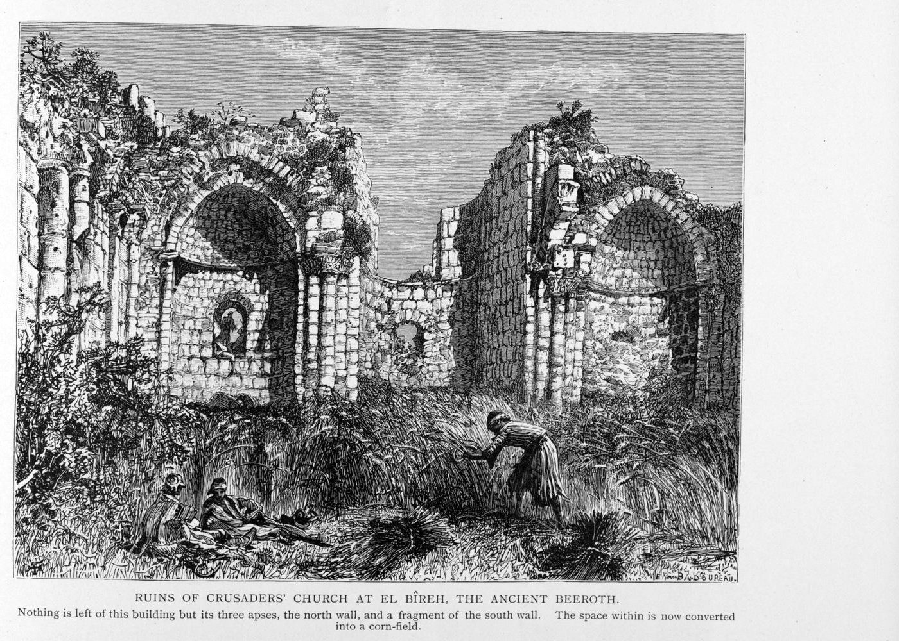
“Ruins of Crusaders’ church at el Bîreh”: the three apses and north wall of the Frankish church at al-Bīra, Magna Mahumeria, with a cornfield growing inside it.Picturesque Palestine, Sinai and Egypt, ed. Charles W. Wilson (London, 1880–84), engraving. Public domain.
1186 → 1330DOCUMENTS
The name appears in 1186
A Crusader charter names our town a century before the Mamluk sultans do. On 7 March 1186
Guy de Lusignan owed the German hospital in Jerusalem a hundred and eleven marks of silver. He
pledged it a small farm, a hamlet, of his “near the royal road by which one goes to Ramallah,” prope viam
regalem, qua vaditur Ramelie. The village would become the hospital’s if he could not pay within
a year and a day134.
Its editor had a doubt about it, and the reader should know135.
So the road already went to Ramallah while the Crusader kingdom still stood. The place was well
enough known to give a king’s road its direction.
A correction
As it stoodGuy de Lusignan pledges that if he cannot pay, “the village of Ramallah becomes the hospital’s property”; and “Rey found Ramalei in a manuscript of 1198” — as printed in earlier editions.
Corrected toThe village pledged in 1186 is not named. Ramallah is named as the place the royal road beside it leads to — which is still the first time the name is written down. The 1198 document is a forgery, and is withdrawn as evidence.
How it is justifiedThe charter’s own words are unum casellum nostrum … prope viam regalem, qua vaditur Ramelie — “one hamlet of ours … near the royal road by which one goes to Ramelie.” The “1198” grant to Marseilles, Rey’s source and the one that names an Andreas de Ramella, is one of a set of documents forged at Acre about 1220, identified by Hans Eberhard Mayer from their wrong formulas.136
Next comes an endowment. A Jerusalem court record of 1565 cites a waqf, a religious endowment,
of Sultan Qalāwūn. It is dated 1279–80. In it Rām Allāh is
already a named place, about 283 years before the traditional founding. The deed was shown to
the court in 1565. It does not survive today.137
Two things follow. First, our family did not name the hill. The name is older than the
settlement, and it is a place-name of the ordinary Semitic kind: رام, a
height, joined to the divine name.
Second, the legal status explains the archaeology. Land held in waqf could not be sold or
given away. That is exactly the sort of ground that turns up in a sixteenth-century Ottoman register
as cultivated but uninhabited. It is what the register of 1525–28 records for this hill.
A waqf was not just a legal label. It was a working arrangement. A sultan does not endow Hebron’s
kitchen with bare rock. He endows it with a tithe, a share of the harvest, and a tithe means a crop,
and a crop means hands.
Sāmiḥ Ḥammūdeh reads the Mamluk papers as showing a village on this hill, deserted by the end of
that period. The register of 1525–28 finds the land worked and nobody living on it. A register that runs
to 1531–32 lists Ramallah as a village again, and four Muslim households are named here in 1538–39.
Our families, in 1561–62, were the first Christians to stay, and they made the village a town.
The better Mamluk evidence is not the lost deed at all. Ramallah is named in documents that
do survive. One group is the Ḥaram al-Sharīf corpus of the 1390s, papers kept at the great
mosque compound in Jerusalem, where Ramallah cultivators guarantee a yearly sum to the Hebron
endowment. The other is Tankiz’s endowment of 1330, where the village is named as the eastern
boundary of ʿEin Qīniya138.
We also looked where the name might be missing. Mujīr al-Dīn wrote a topography of Jerusalem
and Hebron, completed in 1495 (900 AH). We searched it in full, and it has no Ramallah in
it139.
Between 1186 and 1562 the name is on paper, but the hill is barely a hamlet. It is endowment land
with no residents in 1525–28. By 1538–39 there are four Muslim households: Ḥasan bin Labūd,
Khaṭṭāb bin Ḥasan, Rajab bin Yaʿqūb and Ibrāhīm bin Labūd, the first people of this place whose
names we have. By 1553–54 there are six. The deed and the registers say the same thing from opposite
ends.
The register that runs to 1531–32 gives Ramallah a revenue of 500 akçe; Ḥammūdeh reports no count of households from it. So the hill was settled again between 1528 and 1532. In all these registers no lord of Ramallah is ever named. Its revenue stayed with the two sanctuaries and was managed by their officers: Ḥammūdeh names Muḥammad ibn Mūsā al-Kurdī, “the endowment collector for the two sites,” and Muḥammad Jalabī, “overseer of the two holy sanctuaries.” Al-Bīra next door was different. In the court case of 1565 it is the tīmār, the military fief, of one Muṣṭafā Bey. Ramallah had no lord, and its neighbour did140.
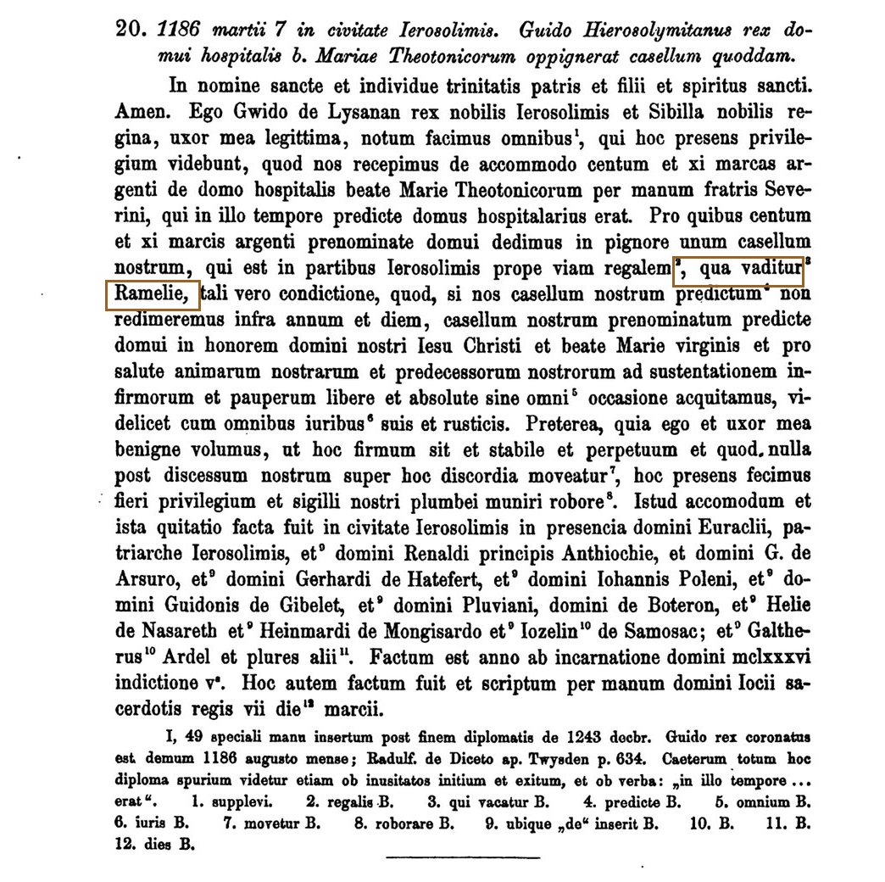
The charter of 7 March 1186 as Strehlke printed it in 1869, with qua vaditur Ramelie, “by which one goes to Ramallah”, boxed. This is the first time the name is written down.Ernst Strehlke, ed., Tabulae Ordinis Theutonici (Berlin, 1869), p. 18, no. 20. Public domain.The Holy Land on the grid map Pietro Vesconte drew for Marino Sanudo’s crusade plan about 1320. This is the world in which the Mamluk endowment of 1279 already named Rām Allāh.After Pietro Vesconte, for Marino Sanudo, Liber secretorum fidelium crucis (c. 1320), in the engraved copy printed by Jacques Bongars, Gesta Dei per Francos II (Hanau, 1611). Public domain.
1182 · 1217/18 · 1321 · 14th c.DOCUMENTS
The ridge and the plateau stay Christian
Four dated traces show Christians still at both ends of our family’s road. They are in other people’s documents: none was written by anyone in our family, and all fall inside the blank our chart prints. There is a Frankish charter of 1182 signed by one Raymundus de Jafenia. There is the pilgrim Thietmar at Shawbak on his journey of 1217–18, hosted and fed by a Frankish widow living in the suburb, where Christians and Muslims lived side by side. There is a Christian majority still at Shawbak in 1321, when Abū al-Fidāʾ wrote in his geography that “most of its inhabitants are Christians” (وغالب ساكنيه النصارى). And there is one Christian man, in a single contract of 1374 among the Jerusalem Ḥaram al-Sharīf documents, whose village the editors read, with a question mark, as a compound name beginning “Jifnā”141.
What the archaeologist sees on the plateau
The family’s tradition asserts continuous Christian residence on the
Shawbak–Karak–Maʿīn plateau from late antiquity to about 1500. The leading archaeologist of Christian
southern Jordan says that is not what the ground shows. Robert Schick finds that the plateau
was solidly Christian in the sixth century, with some fifty churches and hundreds of Christian
tombstones. Its churches, he says, cease Christian use by the ninth or tenth century and often
earlier, and Christians are “scarcely attested in historical sources” from the eighth. In the
tenth to twelfth centuries, in his view, the absence of evidence genuinely reflects population
decline rather than poor survival. Christians reappear briefly with the Crusader presence and then
largely vanish again142.
We print that, because it belongs in our story.What
stands against it is not nothing: a bishop of Karak about 800, a Latin cathedral there in 1167,
a bishop at Shawbak in 1217 (not the pilgrim’s host), a church of St George at Karak in 1329, and a Christian community
paying jizya, the poll tax on non-Muslims, at Shawbak in the register of 1596. The fairest reading is a much-reduced and
possibly interrupted Christian presence, not an unbroken one — and a family tradition of continuous
residence there is asserting more than the archaeology will carry.
These are not our family’s records, and they do not name our family. But they show what our
family’s tradition actually needs. Between the last Ghassanid named in Greek and the first
Ḥaddādīn named in any register at all, there were Christian populations, with the possible break Schick notes, at both ends of
the road the tradition describes: the Karak–Shawbak plateau in the south, and this ridge in the
north.
A migration story needs a population at each end. Both ends are documented. The journey between
them is not.
26 July 1374DOCUMENTS
One Christian, one debt
Inside the gap in our record there is a single sheet of paper. In late July 1374, a man called Niʿma ibn Bishāra al-Naṣrānī, “the Christian,” bought a
weight of cotton on credit. The seller was the provisioner Ḥājj ʿUmar ibn Muḥammad ibn ʿUmar
al-ʿAllāf. The price was 218 dirhams, the silver coins of the day, to be repaid at six dirhams at the
close of every week. Two witnesses signed it. Later somebody struck the whole thing through, which is
how a debt is marked paid. The paper survived in the Ḥaram al-Sharīf deposit at Jerusalem143. It also says where he came from, but nobody can read
the place-name for certain: it carries a question mark.
The editors read the scribe’s word as جفنا الجوز, and print it with a
question mark, جفنا الجوز؟. They index it under that queried form. It is not simply “Jifnā.” It is a
compound name, uncertainly read, and the catalogue’s own index of places keeps it separate from
anything else.
We still keep this paper, and here is why. A Christian of the Jerusalem countryside, in 1374, is
named with his father’s name. He buys goods on credit from a Muslim dealer, and the terms are written
into a document good enough to survive six hundred and fifty years.
Whatever village he walked in from, that is what an ordinary Christian life looked like in the
gap in the record of our people, the two centuries after c. 1300 that we cannot yet cross. It is exactly the kind of paper our own
ancestors would have left, if anybody had kept theirs.
We also searched the rest of the archive. McGill University has put the 1978 microfilm of the
entire collection online: four rolls, some nine hundred documents, free to anyone144. The machine-read text of it is worthless.
In three hundred and ten thousand characters of Arabic read by computer, drawn from a religious
archive in Jerusalem, the words
القدس, الحرم, الشريف and
قرية occur not once, and محمد occurs
once. The commonest strings the software produced are ااا and
الا. The software is reading the strokes and not the words. The handwriting
of fourteenth-century government offices and courts, photographed on microfilm in 1978, defeats it
completely.
So we searched the published catalogue instead, which any reader can check. Across the whole
of it, the villages of our country, north and south of Jerusalem (Jifnā, ʿAbūd, Ṭaybeh, al-Bireh,
Silwād, Beit Jala, and Ramallah itself), appear exactly twice. One is the queried جفنا الجوز؟ above. The other is a
letter of 1914 about appointing an imam at Silwād in the nāḥiya, or district, of ʿAbawīn, five and a
half centuries too late to help145.
That is a real result. It does not say the collection holds nothing of ours. It says the
published part of it holds nothing of ours. The unpublished part cannot at present be read by
anybody who is not sitting in a reading room with the originals, or working page by page through
the catalogue Donald Little published of these papers. The gap remains, and the search is written down here so that nobody has to
run it twice.
The evidenceThe sources for this chapter, and how we read them
about 1300 → about 1418DOCUMENTS
Ghassān is still there in 1400
In chapter 5 we saw al-Yaʿqūbī place the Ghassān at Gharandal in 890. They can be followed much
later than that. The gap in the record of our people is not six hundred years long. It is about two centuries, after c. 1300. Al-Qalqashandī
finished Qalāʾid al-jumān, Necklaces of Pearls, on the Tribes of the Arabs of the Present Age,
in the first years of the fifteenth century. Ghassān is in it, not as a memory but as a people with
addresses: al-Balqāʾ, the Yarmūk, and Ḥimṣ146.
Somebody in Mamluk service knew where to find them.
And we can name that somebody. The chain runs back from al-Qalqashandī to a man whose job was
to know exactly this. Al-ʿUmarī wrote his Masālik al-abṣār in the 1340s. He opens his chapter
“On the Arabs of our own time and their places” by saying where he got it: “I have relied
for most of this on what the trustworthy amīr Badr al-Dīn Abū al-Maḥāsin Yūsuf ibn Zammākh, known as
Ibn Sayf al-Dawla al-Ḥamdānī, المهمندار, has recorded”147.
A مهمندار, mihmandār, is not a collector of old stories. He is the
officer who receives, lodges and feeds the tribal delegations that arrive at the sultan’s court. He
has to know which tribes exist, how many they are and where they camp, because he answers for feeding
them.
Al-ʿUmarī gives Ibn Zammākh’s own account of hosting one such delegation for the sultan Aybak. Gifts
worth thirty-six thousand dinars passed, he says, “all of it through my own hands”148.
This is an official’s record that happens to have survived inside a work of literature.
THE CHAIN, END TO END
when
who
what it gives
c. 945
al-Hamdānī of Yemen, صفة جزيرة العرب
ديار غسان — Ghassān as a named territory
538 / 1144
Ibn ʿAsākir, at Damascus
a family still nicknamed Half the Road for an ancestor who set out after Jabala b. al-Ayham and turned back
d. c. 1272–1300
Ibn Zammākh al-Ḥamdānī, mihmandār al-ʿarab
Ghassān among the tribes of the present day — from the officer paid to know
c. 1340s
al-ʿUmarī, Masālik al-abṣār
transmits him, and places the Ghassān of the Yarmūk, al-Balqāʾ and Ḥimṣ
c. 1400
al-Qalqashandī, Qalāʾid al-jumān
copies it into a handbook whose stated subject is tribes now existing
c. 1500
Rāshid al-Ḥaddādīn
generation 66
Read down the column of dates. Between the last administrative notice of Ghassān as a living people and the first man in our own line there are about two centuries: this is the gap in the record of our people, after c. 1300. The book that carries the notice is a century nearer, about 1400. Six hundred years of silence was never the right number.
This is the best news the tradition has had, and that is exactly when we should slow down. Three
cautions follow.
One: the places are east and north, not here. Al-Balqāʾ, the Yarmūk and Ḥimṣ are all across
the Jordan or beyond. This record shortens the gap. It does not move Ghassān to our ridge. And,
as we show in chapter 7, From Karak to Ramallah, every Arab authority who names a
place puts them east.
Two: al-Qalqashandī is copying, not observing. The fact is Ibn Zammākh al-Ḥamdānī’s, from about 1300.
Al-ʿUmarī passes it on about 1340, and al-Qalqashandī writes it out about 1400. To say that
al-Qalqashandī saw Ghassān at the Yarmūk in his own lifetime would claim four generations more than
the page supports.
Three: he also changed a word, and it is the word that matters. Al-ʿUmarī wrote that at the
Yarmūk there were صليبة من غسان. Al-Qalqashandī replaced that with
الجمّ الغفير, “a great multitude.” The multitude is al-Qalqashandī’s. The
word underneath it is al-ʿUmarī’s, and it explains the whole silence, as the next part shows.
about 1340DOCUMENTS
The word underneath
Al-ʿUmarī does not file these Ghassānids under tribes. He files them under
صليبة العرب, Arabs of pure and direct descent. Then he says what has
become of them: “in Syria there are, of the pure-stock Arabs, various peoples in the
settled country قد خرجوا بها عن حكم العرب — they have passed out of the
reckoning of Arabs — and have become townspeople, settled, dwellers who populate
houses”149.
They are still of the purest descent. They have simply stopped being the kind of people a tribal
register records, because they stopped moving.
This explains how a people can be present and yet go unrecorded. The man compiling the list
says it himself, in the fourteenth century.
A register of tribes records tribes. A village of farmers is not a tribe. When a family line
settles, it does not vanish. It moves into a new category, and nobody was keeping a list of that
category.
So the silence in the record is not the silence of a people dying out. It is the silence of a
people who were no longer written down, because the officials who wrote people down were counting
those who moved.
Then there is the list itself, which surprised us. Al-ʿUmarī names where these settled Arabs of
pure descent live, and the places are not in Transjordan. They are here150:
AL-ʿUMARĪ’S SETTLED ARABS OF SYRIA, c. 1340 — the Palestinian entries
where
who he says is there
Gaza and the country of Hebron
the settlement of Banū Tamīm al-Dārī
وادي بني زيد — the Banū Zayd valley
a section of Banū Jaʿfar b. Abī Ṭālib, and a section of the line of ʿUmar b. al-Khaṭṭāb
Jerusalem
members of both of those
Nablus
many of Qaḥṭān, and a group of Muḍar b. Nizār
Jenin and its country
peoples of Ḥāritha and of Bakr b. Wāʾil
al-Balqāʾ · the Yarmūk · Ḥimṣ
Ghassān — al-Balqāʾ with Banū Umayya, the Yarmūk group named ṣalība of Ghassān
Wādī Banī Zayd is this district. It is the nāḥiya that contains Dayr Ghassāna, and it begins a few hours’ walk north of our hill. Al-ʿUmarī is not naming our family — he names two lineages, and neither is ours. But he is doing something few fourteenth-century sources do: naming settled Arab lineages of claimed pure descent, by name, in the Ramallah hills, a hundred and sixty years before Rāshid. The category the family belongs to is in the record. Only the family is not.
We can put it plainly.The gap is not a gap in the world. It is a gap in one column of one
kind of document. And al-ʿUmarī, who kept that column, wrote down in so many words why the people
he describes had begun to drop out of it.
900 / 1495DOCUMENTS
The man who should have known
Now the evidence on the other side, at full strength. Mujīr al-Dīn al-ʿUlaymī finished
al-Uns al-jalīl at Jerusalem in 900 AH, which is 1495. That is within a few years of the time
Rāshid lived, in the city our ridge belongs to, in a book about the country of Jerusalem and Hebron
and its people. He mentions the Ghassānids exactly once, in the usual list of the Prophet’s letters to
foreign kings: al-Ḥārith the Ghassānid at Damascus. He mentions them nowhere else151.
Mujīr al-Dīn wrote in our forefather Rāshid’s own generation, so his silence deserves a careful
look, from both sides.
First side. Mujīr al-Dīn is a qāḍī, a judge, of Jerusalem, writing local history and the
lie of the land for local readers. Suppose a people in his hills called itself Ghassān, or was called
so by its neighbours. He was better placed than anyone in the world to say so, and he had every
reason to. He does not. Nor does he name Jafna, or al-Ayham, or Tanūkh, or Lakhm.
Other side.Al-Uns al-jalīl is a history of two holy places with a village list on the
side. It is not a census and not a register of tribes. The same book has no Ramallah in it either, at
a time when the registers prove there were households on the hill. An argument from its silence
proves less than it seems to.
So we set both pages side by side. The Mamluk government’s records say Ghassān is a living people,
at al-Balqāʾ and the Yarmūk and Ḥimṣ, in about 1300. The qāḍī of Jerusalem, two centuries later and
thirteen kilometres away, says nothing of them as a living people.
Both are true. Neither cancels the other. A family history that gave only the first would be
poorer than one that gives the second beside it.
828 / 1424ATTESTED
The tradition’s own word: نسب القطع
Arab genealogists did not pretend a chain was unbroken when it was not. They had a term for
it, and Ibn ʿInaba defines it in his chapter on the words of the trade: “when there is a group in some
region of whom no report has come, and of whom the genealogists know no trace, they say —
هم في نسب القطع — their lineage is cut off from connection, even if they
were formerly well known”152.
That is our family’s situation, described four centuries before any of us went looking.
The term is nasab al-qaṭʿ, “cut-off lineage”. The tradition joins a rule to it.
Ibn ʿInaba writes of the Idrīsids of the Maghrib, North Africa, whose line had dropped out of the
record in just this way: “they are in nasab al-qaṭʿ; يحتاج من يعتزى إليهم إلى زيادة وضوح في حجته
— whoever traces his descent to them needs additional clarity in his proof — because of their
remoteness from us and our not being informed of their circumstances”153.
Notice what this sentence is not. It is not a modern doubter holding an old claim to a foreign
standard. It is the old standard itself, in the old words, set out by a working genealogist of
the generations just before Rāshid. Where the record is cut, the person making the claim has more to prove.
Throughout our story we have raised that burden and met what can be met. It turns out we were
following a rule that already existed.
And the greatest of the Arab historians names our people in the very next paragraph. Ibn Khaldūn
argues that pure lineage survives only among Arabs who stayed in the desert. He lists those who did
not: “the Lakhm, the Judhām, وغسّان, the Ṭayy, the Quḍāʿa and the
Iyād — فاختلطت أنسابهم وتداخلت شعوبهم, their lineages became mixed and their
groups intermingled, and it is known that the genealogists differ about every one of these
houses”154.
So the two greatest authorities of the generations just before Rāshid both say, in their own words, that a
claim like ours is hard to prove. They also say that Ghassān is one of the lines where it is
hardest. Our family’s tradition does not fall short of a modern standard. It falls short of a
fourteenth-century one, and it is open about that.
the neighbours’ word for usATTESTED
What the other archive calls them
A second body of writing ought to have our people in it, and it is in Syriac, the language of
the eastern churches. Six Syriac chronicles were searched for our family’s history, and Ghassān
appears in none of them. But the chronicles are not silent about Arab Christians. After the Islamic
conquest they name living Arab Christian peoples, in the same country. There are the
Tanūkhāyē, five thousand of whom were forced to give up their faith at Aleppo in 778–9; the
chronicle names the martyr Layth among them. There are the Tuʿāyē, and the ʿĀqōlāyē. They appear at
Aleppo and Boṣrā, the very ground the Jafnids held.
This part asks why the name “Ghassanid” may be nobody’s word but ours.
The Syriac writers had words for these people, and the words were not ours. They say
ܛܝܝܐṬayyāyē, “Arabs”. When they mean a ruling family, they build its
name on the ruler’s name: Bēth Ḥārith, the house of al-Ḥārith, and Bēth Mundhir, the
house of al-Mundhir155.
A house named for a man, not for a tribe.
The Greek and Latin writing helps us no more. Fergus Millar went through the whole record written
at the time inside the Roman empire, and he says it plainly: “the entire contemporary
evidence discussed here, literary and documentary, in Latin, Greek, Syriac, and Arabic, from within
the empire does not contain a single expression which equates to, or could properly be translated as,
either ‘Ghassanid’ or ‘Jafnid’”156.
Think about what that means. The state these people served, in all four of its written languages,
never once called them by the name their descendants now carry. “Ghassanid” comes from the Arabic
family-tree tradition. Later writers, and then modern ones, laid it back over a frontier power of
Roman times.
That does not make the Jafnids imaginary. They are in Procopius, in the inscriptions and in the
ruins at Ruṣāfa. It makes the name a reconstruction.
One more source, and we can now read it. The best-known modern case for Ghassanid survival after the
conquest is Irfan Shahîd’s, and his volumes are now on our shelf. His case does not rest on late Arabic
literature alone. It rests first on Syriac church records of 684 and 793, kept by Michael the Syrian,
which name a bishop of the Jawlān, the Golan, for the Ghassanid Christians who stayed: in Shahîd’s words,
“the Ghassanid episcopate survived the extinction of the phylarchate.” It rests too on al-Balādhurī and
al-Yaʿqūbī in the ninth century, and on the Umayyad poets Jarīr and Kuthayyir, about 715, at Dayr
al-Qasṭal in the Balqāʾ. Only one thread, which runs from Anatolia to the Circassian Mamluks, hangs on
Ibn Khaldūn alone, and Shahîd says so himself157.
Two cautions keep this honest. Shahîd presents the bishopric as a presumption, partly from the Arabic
names of its bishops. And it is in the Golan, far north of Moab. It shows that some Ghassanids stayed
Christian after the conquest. It does not show that any of them were at Karak.
the name, testedNO EVIDENCE
Five searches and what they prove
We searched for our family’s name, our town’s name and our neighbours’ names in al-Maktaba al-Shāmila, a large digital library of early Arabic writing. We give the results with their controls, test searches for words that must appear. Without a control, a search shows nothing.
AGAINST AL-MAKTABA AL-SHĀMILA
term
hits
what it means
الحدادين
553
and effectively every one is the trade — “the blacksmiths.” Only three entries use it as a family name, and all three are twentieth-century compilations. In the pre-modern corpus this word is an occupation.
الكسابرة · كسبر
0
the name the register of 1553–54 actually gives the group
حلحول(control)
31
a Hebron-hills village — the search reaches Palestinian village names
نوبا(control)
452
another — it reaches them easily
دير غسانة
0
confirmed twice, independently
رام الله
none pre-modern
no attestation of the town in the corpus at all
Read the controls first. Ḥalḥūl and Nūbā return freely, so the corpus does contain Palestinian villages and the search finds them. Then read Dayr Ghassāna: zero — for a large, real, continuously inhabited throne-village.That single line is the proof that these zeroes are a property of the library, not of the country. Shāmila is a corpus of law, ḥadīth, literature and chronicle. It is not a gazetteer and not a tax register, and a Christian hamlet in the Jerusalem hills is exactly what it would never contain.
So the three zeroes tell us about the library, not about our family.
Missing from it means missing from one kind of writing, the kind that was never going to record
families like ours. To read these blanks as evidence against our family would be to mistake the
shape of a library for the shape of the past.
The first line is different, and it does matter. The word الحدادين,
Ḥaddādīn, appears five hundred and fifty-three times. In almost all of them it does the same job: it
means the men who work iron, the smiths.
So any argument that finds “Ḥaddādīn” in an early Arabic text and reads it as our family is
reading the name of a trade. The register of 1553–54 calls the group the Kasābra. Together these
support what the next entry shows: the family name is late, and we
will not claim it any earlier than we can show it.
the shape of the holeDOCUMENTS
The gap is not our family’s failure
One more thing must be said about the nine hundred years, and it changes what they mean. Our family is recorded right down to the floor of the archive. The registers and court papers that name our people, the Kasābra households whom Ḥammūdeh takes to be Rāshid’s grandchildren, in 1553–54, 1561, 1562, 1565 and 1596, are the first generation of records in which a family of this kind could appear at all, anywhere in Palestine.
Think about what would have to exist to fill the gap. Ordinary village families in Bilād
al-Shām, the lands of greater Syria, have no recorded descent before the sixteenth century. The
families that do are not ordinary. They are noble houses with waqf deeds, the papers of religious
endowments. They are church families with the patriarchs’ archives, or monks with notes written into
their manuscripts, or the Jewish merchants of the Cairo Genizah, a store of old papers in a Cairo
synagogue.
There is now a fifth kind, and it is the closest comparison we have. It is the Jerusalem household
of Burhān al-Dīn, a scholar of middling rank in the 1390s. His books and papers survived in the
store of documents at the Ḥaram al-Sharīf, and they can be pieced back together almost item by item:
a library, a list of his estate, a family.
He lived a morning’s walk from our ridge, in the very century our own line is silent. What
separates his family from ours is not distance, class or reading and writing. It is that somebody
put his papers in a mosque, and somebody else never threw them away158.
For a Christian farming family on a hill ridge, the earliest records we can hope for are the
Ottoman tax surveys. Our family is in them within a generation of the first.
So the true sentence is not “our line goes dark for nine hundred years.” It is this: the
writing that could have carried our line does not begin until 1525, and we are in it by
1553.The gap is not a gap in our family’s history. It is the depth of the archive.
And the hardest thing the record says about the name
The earliest document that records this community does not call it
al-Ḥaddādīn. The register of 1553–54 that finds the group at Beit Jala calls them the
Kasābra, and lists thirty-six heads of household by first name and father’s name only. No
occurrence of الحدادين as a family or clan name anywhere in Bilād al-Shām
has been found before the nineteenth century159.
That is not fatal, and it should not be read as such. Occupational
family names of this kind — الحدّاد, the smith — generally stabilise as
inherited surnames late, and a register that lists men by father’s name is not a register that would
record a clan name even if one existed. But we will not print “the family name, in a tax
register, in the sixteenth century” again, because the sixteenth-century register uses a different
name.
One more caution comes from our family’s own Arabic books. Two clan histories exist in Arabic that
we do not yet hold: عشائر الحدادين حتى عام ١٩٩١م, and a later
عشائر الحدادين launched in Amman. The first rejects the blacksmith
meaning of the name. It offers two other origins: تحديد, the marking
out of the clan’s land in the Shawbak–Karak country, and the Yemeni port of al-Ḥudayda160.
The first is a strained reading of the word, but at least it puts the name on the plateau. The
second cannot carry a sixth-century origin.
Al-Ḥudayda did exist before the Ottomans reached Yemen. The Yemeni chronicler Ibn al-Dayba’ (d. 944/1537) has a lord of al-Ḥudayda in Shawwāl 859 / September 1455, and in 868/1464 its lord, its qāḍī and its resident ascetic ride out together to meet the Ṭāhirid sultan. But it was a small place: it had no strategic importance when the Mamluks raided it in 1516, stayed second to Mocha for two more centuries, and rose only in the nineteenth. And the name does not fit anyway: a man from al-Ḥudayda is a Ḥudaydī, not a Ḥaddād.161
Our family’s own historians disagree with each other about where its name comes from,
and that disagreement belongs in our history.
What the scholars say
Denys Pringle — “Magna Mahumeria (al-Bira): The Archaeology of a Frankish New Town in Palestine”In Edbury (ed.), Crusade and Settlement, Cardiff, 1985The foundational study of Frankish al-Bīra: its street of vaulted houses, its church and its pools. Everything later builds on it.
عوني محمد محسن محليس / ʿAwnī Maḥlīs — البيرة في الفترة الصليبية: دراسة أثرية معمارية · سعيد البيشاوي / Saʿīd al-Bīshāwī on Crusader BeituniaMA thesis, Al-Quds University, 2000 · al-Quds University, 2023The Palestinian scholarship on Crusader al-Bīra and Beitunia, the only substantial Arabic study of the site and rarely cited in English.
Saʿīd Aljoumani, Zahir Bhalloo & Konrad Hirschler — The Ḥaram al-Sharīf Documents: A New CorpusDe Gruyter, Berlin, 2024 · open accessNewly catalogued Jerusalem documents, among them a debt of 1374 owed by a Christian of Jifnā, the earliest named Christian of this district.
ياقوت الحموي / Yāqūt al-Ḥamawī — معجم البلدان(Muʿjam al-buldān)finished 621/1224 · Dār Ṣādir, Beirut, 5 volsAn eyewitness geographer on al-Bīra after Saladin and on ʿAyn Yabrūd’s waqf, vines and olives: the richest text for these hills.
ابن فضل الله العمري / Ibn Faḍl Allāh al-ʿUmarī — مسالك الأبصار في ممالك الأمصارd. 749/1349 · al-Majmaʿ al-Thaqāfī, Abu DhabiThe earliest substantial statement on the people of this country: settled Arab clans in Wādī Banī Zayd, and endowments in the district.
مجير الدين العليمي / Mujīr al-Dīn al-ʿUlaymī — الأنس الجليل بتاريخ القدس والخليلfinished 900/1495 · ed. ʿAdnān Nabāta, Hebron, 1999The Jerusalem historian who draws the district’s Mamluk border, showing why Ramallah’s site sat on a seam the record passes over.
يوسف غوانمة / Yūsuf Ghawānma — the Mamluk and Ayyubid history of southern TransjordanArabic studies of Ayyubid and Mamluk Karak and JerusalemA Jordanian historian on Karak’s Christians and their crossings to Jerusalem, and on the villages of the Mamluk Jerusalem governorate.
The deed of Sultan Qalāwūn’s endowment of 1279–80 is lost. No
document traces the journey between the Karak–Shawbak plateau and this ridge. The village written on
Niʿma ibn Bishāra’s contract has not been read for certain. The unpublished part of the Ḥaram
al-Sharīf documents is still unread. If you can read these old hands, or know of papers from these
centuries, our family would be glad to hear from you.
Irfan Shahîd’s volumes, now read, carry Christian Ghassanids to a
bishopric in the Golan in 793, but they name none at Karak or Shawbak. The Syriac Chronicle of 1234 has not yet been checked for the name Ghassān. We do not yet hold the two Arabic histories of
the Ḥaddādīn clans. No published ancestry study has ever sampled Palestinian Christians as a group,
so a Y-chromosome study of our family would be building a body of data that does not yet exist.
Readers who hold any of these, or can help with them, can help us close part of the gap.
7Al-Karak: the town and its castle, built by the Crusaders and rebuilt by the Ayyubids and Mamluks.
CHAPTER SEVEN
From Karak to Ramallahabout 1500–1562
Rāshid al-Ḥaddādīn and his family, the road from Karak by way of Bayt Jālā, and the agreement of 1561 that settled them on this hill.
The little tribe of Ḥaddādīn is made up of a number of families, exclusively Christian.
Dissard, Revue Biblique, 1905
Where our own line stands here
Link eight of nine · Rāshid al-ḤaddādīnDOCUMENTS
The registers reach him. From this era on, the line is carried by documents and not by tradition.
The story
about 1500ORAL TRADITIONTWO WITNESSES
Rāshid al-Ḥaddādīn
Around 1500, the family remembers, our people still lived across the Jordan, at Karak. Within a generation the Ottomans would rule this land and begin counting every household in it. Rāshid al-Ḥaddādīn, generation 66, is the last ancestor our family’s own texts name, and the first whose children a document reaches. He himself is in no register. The earliest Ottoman survey of this district, made in 1525–28, comes a generation after his time. The family chart ends at his name. ʿAzīz Shāhīn, in his Arabic history of the town (1982), prints the family’s two accounts of his road, and then weighs them162.
The Ḥaddādīn account. The family live at Shawbak and Karak among the Kaysoom, the ruling tribes of the plateau. The
tyrant demands a Christian daughter for his Muslim son. Sabra Haddad answers with the unsalted feast,
a meal without salt, which binds no one to keep faith:
“Treachery, O Haddad!” The clan flees by night across al-Lisān, the ford of the Dead Sea, to
Ḥalḥūl, and then to the Beit Jala country.
The Kaddoura account. Rāshid is a blacksmith, a ḥaddād in Arabic. He plants forged
blades in the ford, so that the pursuers’ horses turn the water red. He settles first at al-Bireh beside
Sheikh Ṭanāsh. Then he buys the wooded hill next door from the Ghazāwneh, for the sake of kindling for
his forge.
Shāhīn weighs both and decides. The eldest son was named Haddad, and that is where the name
Hadadeh comes from. Sabra was Rāshid’s brother. He returned to Karak, where the Karak
Ḥaddādīn still count themselves his line.
Figure 7.1 · Map
The road the family actually walked
Karak to the ridge in three moves: one documented, one carried by a name, and one by tradition. Bayt Jālā to Ramallah is in the registers name by name; Kusbār is carried by the name al-Kasābra; Karak to Kusbār is the family’s memory alone. The southern anchors are the plateau’s Christian record: Shawbak, Karak, and Gharandal, where Ghassān is named in 890. The northern legs are carried by the Ottoman registers. The tradition’s Ḥalḥūl matches the registers’ Kusbār-by-Ḥalḥūl. The tradition’s Bayt Jālā stage is where the 1553–54 defter, the Ottoman tax register, finds the group. The tradition’s purchase matches endowment land acquiring an owner. Two memories and a tax ledger tell one story in three voices.Photographed 1898–1914. Al-Karak: the town and its castle, built by the Crusaders and rebuilt by the Ayyubids and Mamluks.American Colony Photo Department, 1898–1914. Library of Congress, Prints & Photographs Division, loc.gov/item/2019698794. No known restrictions on publication (Library of Congress).
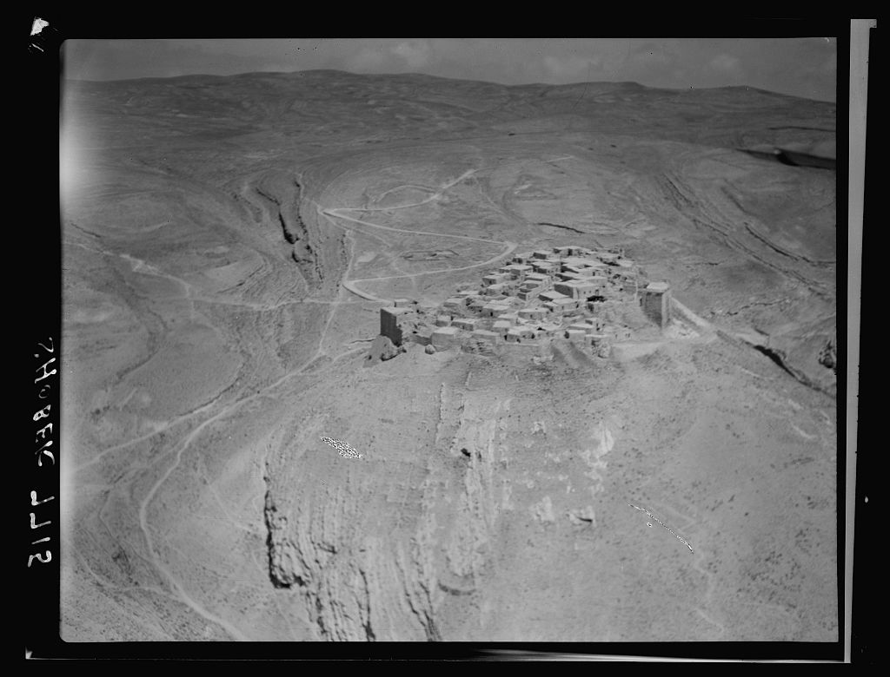
Photographed 1937. Al-Shawbak castle from the air, 1937.Matson Photo Service. Library of Congress, Prints & Photographs Division, loc.gov/item/2019707840. No known restrictions on publication (Library of Congress).
1953 · as rememberedORAL TRADITION
What the family remembers
In 1953 the town sent two teachers across the Jordan to ask the Ḥaddādīn where Ramallah came from. Mayor Dr Jalīl Badrān sent Khalīl Abū Rayya and ʿAbdallah Mogannam. They came back with ʿAdnān al-Ḥaddādīn’s written account, which is still on file at Ramallah city hall163. Everything here is our family’s own memory, and we give it as memory.
Ṣabra had three brothers. In ʿAdnān’s account the brothers come down from Karak together.
They stop six months at Ḥalḥūl, then settle in the Beit Jala and Bethlehem country. Rāshid stays in
Ramallah. A second brother stays in Beit Jala. The third goes to al-Salṭ, “where his offspring, the
Haddadeen, remain until this day.”
Their Muslim neighbours from the south, the seven brothers of al-Banawiyya under one Ḥusayn, settle
beside them at al-Bireh. After six years Ṣabra goes home to
Karak164.
The daughter the whole flight was about stays in the story. “An Egyptian Christian named
Haleesa came as a refugee to Sabra. Sabra gave him his daughter as a bride (the daughter that was the
center of the dispute), along with one-third of his property. From them descended the Halasa
clan, which still lives in Karak”165.
Two outside writers help date that marriage. Max von Oppenheim was told, about 1900, that the Ḥalasa
ancestor had come to Karak four or five hundred years before and married a girl of the Ḥaddādīn. That
puts the Ḥaddādīn at Karak in the fifteenth or sixteenth century, which fits the register of 1562.
Thomas Connell, following Peake, puts the Egyptian’s arrival in the seventeenth. That the bride was
Ṣabra’s own daughter is family tradition. The marriage left a lasting mark. Antonin Jaussen, the
Dominican of the École biblique who lived among the tribes of Moab, explains that a stranger adopted
into a tribe by marriage founded a new clan, which kept “privileged relations, above all in marriage
exchange,” with the clan of his wife. Géraldine Chatelard found the Ḥaddādīn still keeping such ties
with the Ḥalasa in the 1990s166.
The story’s danger, recorded as fact. In May 1906, at al-Salṭ, Jaussen wrote down that a
Christian girl of the Ḥaddādīn family had been carried off, with her consent, by a Muslim, and that her
own kin stabbed her to death. He gives the rule behind it, that “any grave fault against morals … is
punished by death,” and he shows it applied among Christians as among Muslims. The flight story turns
on the same danger: a Christian daughter claimed by a Muslim chief. Jaussen also explains the
bride-price. “The mahr really is a price or a purchase,” he writes; the father kept it, and at Karak it
was called the sīqa167. These are the lives of women that our men’s lines leave
out.
In 1892 the Ḥaddādīn and Ḥalasa moved from Karak to the village of Maʿīn. After four years the
Ḥalasa and some Ḥaddādīn went back. The rest settled at el-ʿAzeeyyeh, where they numbered “over
800 souls by 1953”168.
The move to Maʿīn came in stages. The sources give different years because the move took
years. A first move with the Ḥalasa came in 1892, or 1894 in a press summary of the 1991 clan history,
and part of the clan went back. Jaussen still lists the Ḥaddādīn at Karak under their own sheikh about
1905. The same clan history, as Chatelard cites it, has them take refuge at Maʿīn about 1901 after a
quarrel with the Ḥalasa, and settle there for good only in 1909, after they had gone over to the
Melkite rite169.
Kaddoura remembers the land. In his version it is Sheikh Ṭanāsh of Karak who flees with
Rāshid and becomes the father of the Ḥusayn clan at al-Bireh. Rāshid buys the hill of Ramallah from
the Ghazāwneh, “the original Bireh natives.” He goes back to Karak and leaves his five sons, who
divide the land in fifths, as the next chapter tells170.
Abū Rayya also wrote down what he was told at Maʿīn.
لما ذهبت إلى قرية ماعين في شرقي الأردن عام ١٩٥٣ م للبحث عن أصل سكان رام الله، اجتمعنا
مع وجوه الحدادين ومعمريهم، فأطلعونا على شجرة عائلة الحدادين المنحدرين من شيخ صبرة، فلم أر لأي من أبناء
صبرة اسماً ينطبق على اسم أي من جدود حمائل رام الله الخمس، وقالوا لنا أن حدادي شرقي الأردن هم أبناء صبرة،
ونحن في رام الله أولاد راشد أخ صبرة
“When I went to the village of Maʿīn in Transjordan in 1953 to look for the origin of Ramallah’s
people, we met the notables and elders of the Ḥaddādīn. They showed us the family tree of the
Ḥaddādīn descended from Shaykh Ṣabra, and I saw no name among Ṣabra’s sons that matched any ancestor
of Ramallah’s five clans. They told us that the Ḥaddādīn of Transjordan are the sons of Ṣabra,
and we in Ramallah are the sons of Rāshid, brother of Ṣabra.”
Khalīl Abū Rayya, Rām Allāh qadīman wa-ḥadīthan, pp. 14–15, quoted in Qiṣṣat madīnat Rām Allāh wa-l-Bīra (ALECSO and the PLO, “Palestinian Cities” series), p. 24171
The oldest printed telling is French, and it comes from Karak. In January 1905 J. Dissard,
a priest of the Latin Patriarchate, read a lecture at the École biblique in Jerusalem on the Bedouin
of Moab. Into it he put the story the Christians of Karak told him.
“The little tribe of Ḥaddādīn is made up of a number of families, exclusively Christian.” A man of
the tribe named Rcheid, that is Rāshid, promised his newborn daughter in jest to the Muslim chief
Diāb. Years later Diāb came to claim her for his son. Rāshid asked for “a few days to make my
daughter a complete trousseau.” He was “a blacksmith by trade,” and he forged a great quantity of
blades.
Then, in the Karak telling, he went to “the chiefs of the Muslim tribes of his quarter, with whom he
was on good terms,” and “all promised to back him.” At midnight he “called his Muslim allies.” Dissard
names the tyrant Diāb ibn Qaysūm172. So the Karak side, too, gives Rāshid Muslim friends in
the flight, as the Ramallah side does with al-Banawiyya and Sheikh Ṭanāsh.
The Ḥaddādīn fled west down the valley to the Ghōr al-Ṣāfī and crossed at the little ford at the
tip of al-Lisān. Rāshid planted the blades in the ford, where Diāb’s horsemen were cut to pieces.
“Rcheid and his people lived near Hebron for some years. He afterwards had five sons who founded
lines, and who are the ancestors of part of the present Christians of Ramallah. As for the
father, he went back to Karak with part of his tribe after Diāb’s
death”173.
Dissard puts the episode “about 1815.” That cannot be right for Ramallah, because the Ottoman
registers count the Christian families on this hill in 1562. His date seems to come from where he set
the tale in his own chronicle of the ʿAmr, which ends with Khalīl al-Majālī about 1820; that is our
inference. Two Palestinian gazetteers put Rāshid’s coming in the seventeenth century: al-Dabbāgh, from
Kaddoura, at its beginning, and Sharab, copying the same paragraph, at its end. These are tradition
too, and the register of 1562 decides174. What Dissard keeps is the shape of the
story, told at Karak seventy years before Kaddoura wrote it down in New York: the forge, the blades
in the ford, the five sons, and the father going home.
So the family’s tellings, written down on both sides of the river, keep the same shape: brothers
left Karak together, and one went back. The registers do not name them, and they correct the
dates.
The oldest outside witness to the origin, 1907. Two years after Dissard, a Lebanese historian wrote Ramallah’s origin into a footnote. ʿĪsā Iskandar al-Maʿlūf, writing the history of his own family, stopped at the name Rām Allāh: وسكانها مسيحيون عددهم نحو الفين اصلهم من الكرك والشوبك وهم قسمان الحدادون والشراقيون (اي سكان الجهة الشرقية) وكان بينهم عند مجيئهم من الكرك اسرة اسلامية سكنت البيرة, “its people are Christians, about two thousand, whose origin is from Karak and Shawbak. They are two divisions, the Ḥaddādūn and the Sharāqiyyūn, that is, the people of the eastern side. With them, when they came from Karak, was a Muslim family that settled al-Bīra.” It is the earliest written record we hold of the Karak and Shawbak origin, the two halves of the town and the Muslim family at al-Bīra, and it was written by a man with no stake in Ramallah, forty-six years before Kaddoura. One more thing is worth noticing. Al-Maʿlūf was busy proving a Ghassanid descent for his own family, and he makes no such claim for Ramallah’s. That supports what this book argues elsewhere: our families’ claim was not borrowed from the al-Maʿlūfs175.
The founding as ʿAzīz Shāhīn tells it, in his Arabic. The page opens: ويعرف اهالي رام الله ان راشدا الحداد واخاه صبره هما اول من سكن هذه المدينة, “The people of Ramallah know that Rāshid al-Ḥaddād and his brother Ṣabra were the first to live in this town.” They do not agree on when, he goes on: some say the seventeenth century, others a century earlier. He then names the two texts the town has: ʿAdnān al-Ḥaddādīn’s account, written in a notebook kept at the Ramallah municipality and dated 8 August 1953, and the one Yūsuf Qaddūra gives in his History of the City of Ramallah (1954).ʿAzīz Shāhīn, Kashf al-niqāb (1982), p. 10. Digitised by Birzeit University Library. Reproduced by permission.
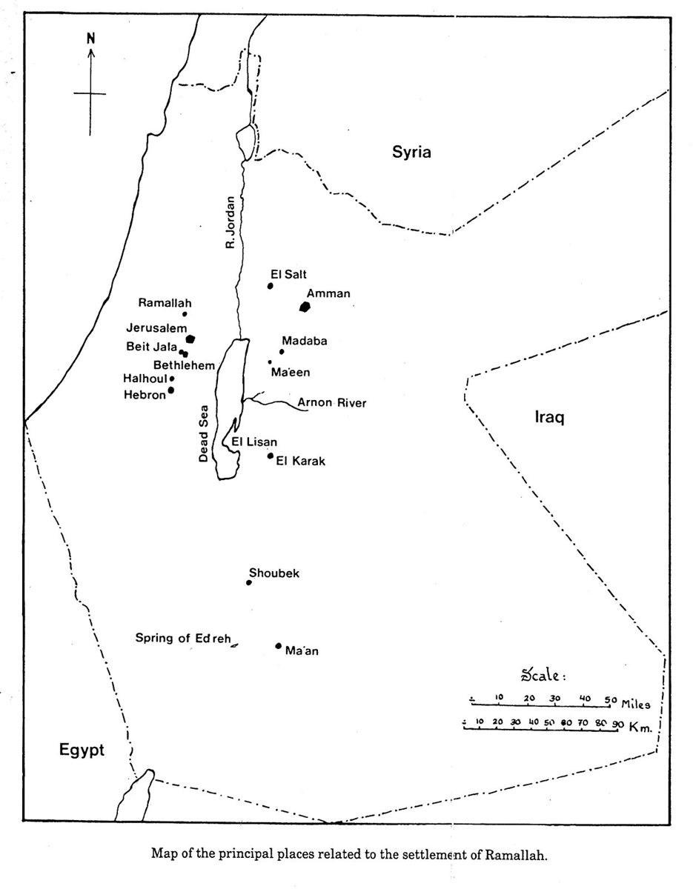
A modern map. Shaheen’s map of the places tied to the settlement of Ramallah, from al-Karak and al-Shawbak up to Bayt Jālā and Ramallah.Naseeb Shaheen, A Pictorial History of Ramallah, Part II (Birzeit University Press, 2005), p. 11. Courtesy of the American Federation of Ramallah, Palestine.
1 April 1561DOCUMENTS
The people of Ramallah speak
A year before the census, the people of this place speak for themselves in a document for the
first time. On 1 April 1561 the judge Abū Wafā al-Ḥanafī was sitting in Jerusalem
with Ḥusām al-Dīn bin Yaʿqūb, deputy overseer of the Ḥaram al-Sharīf. Six men came before him,
“all of them from the village of Ramallah”176.
Named in court, Jerusalem, 1 April 1561
who
which community
and elsewhere
ʿAlī bin Ḥasan and his brother ʿUmar
Muslim, of the Labūd house
the Labūd are among the four Muslim households of 1538–39
Aḥmad bin Muḥammad Qarʿala
Muslim, of Abū al-Thanā
—
Ghunaym bin Sālim, al-Kasbūrī
Christian
in the Bayt Jālā list of 1553 and the Ramallah list of 1562
Mūsā bin Baraka
Christian
in the Bayt Jālā list of 1553
Isḥāq bin Yaʿqūb
Christian
in both registers — one of the nineteen
All three Christians appear in the Ottoman registers too. One of them carries the road in his own
name: al-Kasbūrī, “of Kusbār,” the stage by Ḥalḥūl that the family’s tradition names.
The family’s memory and the court record use the same word for the same people.
They swore an oath that from that day on they will develop the lands of the same village,
and that none of them will farm any other land until all of its lands were cultivated [sic]. Should any of
them violate this, he pledges to pay one hundred gold sulṭānī to the charitable kitchen of our
prophet Khalīl al-Raḥmān.
Jerusalem sharīʿa court, 16 Rajab 968 / 1 April 1561, in Ḥammūdeh (2014), p. 48
Then the court divides the hill in three. One third goes to ʿAlī bin Ḥasan, his brother
ʿUmar, Aḥmad bin Muḥammad and their people: the Muslims who were already there. One third goes to
Ghunaym and his people. One third goes to Mūsā and Isḥāq and their people.
So two thirds of Ramallah went to the newcomers, and one third to the men who had held it. It was
agreed in front of a judge and backed by the promised fine.
No sultan or king appears here, and no family tree. Six farmers stand in a Jerusalem court. They
promise to plough one hill and no other until it is all under crop, and they share it between two
religions by agreement.
The Ramallah tradition remembers the land divided into fifths among Rāshid’s five sons. The court
record shows a division into thirds in 1561, the year before the census of 1562, between Muslims and Christians.
Both can be true. One is the arrangement with the neighbours, the other the arrangement inside the
family, and only one of them is on paper177.
1561 · 1562DOCUMENTSTWO WITNESSES
The Christian settlement of 1561–62
The register recorded thirty-six Christian families, called the Kasābra, at Beit Jala in 1553–54. Now they come up the ridge road, and they are not alone when they arrive. The register of 1562 lists seventy-one Christian taxpayers at Ramallah: sixty-three households and eight single men. Ten Muslim households were already living on the hill178.
A correction
As it stoodRamallah was founded in 1562, or, as the family has long told it, settled “about 1550” (Shāhīn) under Rāshid and his five sons (Kaddoura).
Corrected toThere is no single founding on paper. The record shows a named place by 1186, endowment land by 1279–80, uninhabited farmland in 1525–28, Muslim households living on the hill from 1538–39, and then the Christian families binding themselves to terms in a Jerusalem court in 1561 and counted by the state in 1562. This book now calls 1561–62 the Christian settlement, not the founding. The movers were Rāshid’s grandchildren, not Rāshid and his sons: the 1553–54 register still has the group at Bayt Jālā.
How it is justifiedThis is the actual data, set out in order: the charter of 1186 (Strehlke no. 20), sijill 48 p. 88 for 1279, the registers of 1525–28, 1538–39 and 1553–54 and the court record of 968/1561 (Ḥammūdeh 2014, pp. 41–48), and the register of 970/1562, which lists seventy-one Christian taxpayers, sixty-three households and eight single men. The family’s remembered date was only twelve years out, and that closeness is itself evidence of how well the memory was kept.179180
Figure 7.6 · Timeline
Five datings for one town — and they are not rivals
The founding of Ramallah has five different dates attached to it, resting on five different kinds of evidence. Read in order rather than argued over, they describe one coherent sequence: a site that was named endowment land in 1279, uninhabited in 1525, held by a few Muslim households by 1538, bought from the Ghazāwneh by tradition, and settled by the Christian families in 1562. The family did not name the hill. The family settled a hill that already had a name.Sijill 48, p. 88 (1565, citing a waqf of 1279); Mujīr al-Dīn (1495); the defters of 1525–28 to 1596; al-Dabbāgh; Shāhīn (1982).
Figure 7.7 · Chart
The households, counted, 1525–1596
Ramallah in the Ottoman registers of the sixteenth century: uninhabited endowment land, then a handful of Muslim households, then the Christian families from Bayt Jālā, then a village of eighty households paying 9,400 akçe, all of it to the endowment. Below, the same register of 1596 for the villages around. Ramallah, at eighty households, is one of the larger villages of the district and one of the few with a Christian majority. Hütteroth and Abdulfattah publish 1596 as counts; the register itself names all eighty heads of household, and those names are still to be read.Ḥammūdeh, Jerusalem Quarterly 59 (2014), pp. 45–48, for the registers of 1525–28 to 1562; Hütteroth and Abdulfattah (1977), pp. 114–21, for 1596–97; Robinson and Smith (1841) for Jifnā.
Three years later the hill’s legal position was stated in open court. On 22 June 1565
(Ḥammūdeh gives 29 June) the qāḍī, the judge, of Jerusalem entered into sijill 48, p. 88, the court’s register, the fact of an
endowment of 678 AH: this ground belongs to the Ibrāhīmī sanctuary at Hebron. The case was a boundary
dispute with al-Bīra, and the overseer of the endowment brought the deed of 678 AH into court. The deed does not survive181.
That is not a title for the family. It is the reason there was room on the hill at all. This
was endowment land, worked by tenants, with the tithe going to the endowment and not to a landlord.
The early registers split that revenue. In 1538–39 the larger share, 3,000 akçe, went to the Dome
of the Rock in Jerusalem and 2,000 to Hebron. By 1553–54 the whole village supported the shrine of
Abraham182.
This is the hill that, as we saw, already had a name, and the family paid Hebron for the privilege
of settling it.
A second register, kept by a different office for a different purpose, counts the same
seventy-one. The endowment survey of the district of Jerusalem was delivered to the treasury in
970, that is 1562–63, the same year as the census. It lists Ramallah on its first folio, under the
endowment of Hebron: the whole village, and “71 persons at 80 akçe, 5,680” from its Christians. The
akçe was the Ottoman silver coin. Beit Jala, on the same folio, has 218 at the same rate, matching
the census there too183.
Two registers, two offices, one number.
The case of 1565 also drew the town’s edges. The judge went out to the ground in person. Ramallah’s limits were set at Dayr Fazṭām to the south, the “Roman” chain wall along the road to the east, and Burj Salmiya to the north. Ḥammūdeh’s English prints the southern limit as “Dayr Qurtam,” and the reading of that word is not settled. The same volume names a Ramallah man, Ḥammād ibn Aḥmad, in 1566184.
Ramallah in the endowment register of 1562, as the modern Turkish edition prints it (the two entries are boxed). On the right, Karye-i Ramallah … tamāmen, hāsıl maʿa rüsūm 2905: the whole village, endowed to the shrine of Abraham at Hebron, yielding 2,905 akçe with its dues. Below left, Nasārā der-karye-i Ramallah … 71 neferen, fī 80, 5680: the Christians of Ramallah, seventy-one persons at 80 akçe each, 5,680 akçe. This is the line that counts the families who came up from Bayt Jālā.Defter-i Evkaf-ı Liva-i Kuds-i Şerif, ed. Sevgi Işık (Ankara: Tapu ve Kadastro Genel Müdürlüğü, 2015), p. 73, an edition of TKG.KK.TTd. 406, folio 1. Transcription only; the Ottoman folio itself is not Reproduced by permission.
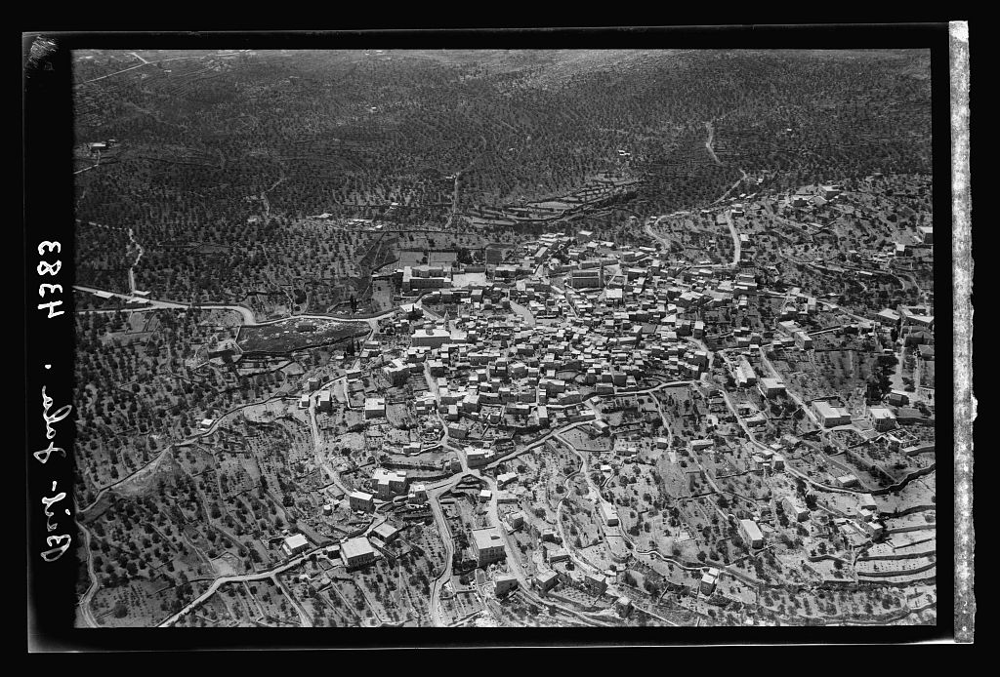
Photographed 1931. Bayt Jālā and its terraces from the air, 1931 — the town the Kasābra families came up from.American Colony Photo Department. Library of Congress, Prints & Photographs Division, loc.gov/item/2019713059. No known restrictions on publication (Library of Congress).
The evidenceThe sources for this chapter, and how we read them
1517–1554DOCUMENTS
The registers begin
The Ottomans conquered this land in 1517, and the registers we met in chapter 6 now reach our own families. In 1553–54 a group called the Kasābra, 36 Christian households, is registered at Beit Jala, twenty kilometres south. They are not yet at Ramallah.185
Two small facts from the same papers. A second group called Kasābra is recorded at Dayr Abān, also “from Khirbat Kusbar.” So the name marks people who came from Kusbār, not one family. And a man of al-Bīra called Ḥijāz ibn Ḥusayn appears in a court record of 947 AH, 1540–41. It is a father’s name and no more. It neither supports nor contradicts al-Bīra’s own tradition of its Ḥusayn founders186.
1553 and 1562, name by nameDOCUMENTSTWO WITNESSES
The registers do give names
In the story half of this chapter, our families come up the ridge from Beit Jala and are
counted at Ramallah in 1562. Every household head in both registers has been in our own family’s
book for thirty years. The co-authors’ Ramallah Family Tree Book prints, in its fourth chapter,
copies of the original pages of Register 289 and Register 516. Beside each it gives a full English
transliteration, the names written in English letters: the 36 Christian households at Beit Jala in
1553–54, and the 10 Muslim households, 63 Christian households and 8 bachelors at Ramallah in
1562–63. One hundred and nine households and eight unmarried men, by name and by father’s
name.187
Figure 7.10 · Table
The same people, nine years apart
Both lists in full. Nineteen of the thirty-six households the clerk recorded at Bayt Jālā in 1553 appear again at Ramallah in 1562 under the same name and the same father — Ishaq bin Yaʿcoub, ʿAmeera bin Hassaan, Jareer bin Hadeed, Farah bin Suweid, Musa bin Braik, Khaleel bin Sadaqa, Kaʿoosh bin Zayed, Suweidan bin Khaleel and eleven more. That is not an argument. It is the same men, on two pieces of paper, nine years apart.Registers 289 and 516, transliterated by John Mogannam; matching and counts by this edition.
What the nineteen prove. The Kasābra, الكسابرة, were the Christians
of Beit Jala. Until now, the link between them and the Christians who settled Ramallah rested on
Ḥammūdeh’s reading of the two registers together. That was a good argument, but only an argument.
Now it can be shown name by name. Our count also revises his: Ḥammūdeh has all thirty-six
households move, and the names show nineteen.
More than half the households move as a body. The rest show the ordinary losses and gains of nine
years. The Ramallah list is longer because more than fifty further Christian names are on it that
are not on the Beit Jala list at all.
Ḥammūdeh, reading the same register, counts sixty-three households and eight single men,
and the heading of our family’s own transcription says the same. Every reading agrees on the
total: seventy-one Christian taxpayers, sixty-three households and eight single men. One
small detail can still trip a careful reader. Both name lists mark only seven of the eight as single,
so counting the marks gives sixty-four and seven. The difference is one man the lists leave
unmarked188. This is our
strongest piece of written evidence, and it was in our own house all along.
And now the hard part
Nobody is called RāshidNot one of the sixty-three Christian household
heads at Ramallah in 1562 bears the name Rāshid, and not one of them is recorded as the son of a
Rāshid.
Which we expectedThis is what it should look like if the movers
were Rāshid’s grandchildren, as Ḥammūdeh argues and we follow. Their fathers would be
Rāshid’s sons, and it is the sons’ names we should be looking for in the patronymics — not
Rāshid’s.
And there they are — carefullyAs fathers in the 1562 list:
Ḥassān 5, Hadeed 3, Ibrāhīm 3, Jiryis 1, Shuqayr 0 — twelve households out of sixty-three.
Ḥassān and Ibrāhīm are two of the commonest names in the Levant and prove nothing. Jiryis is
one household. Shuqayr is absent altogether. The one worth chasing is Hadeed.
The name itself has a Palestinian and Jordanian literature that we had not used before.
الحدادين means the blacksmiths. Hind Abū al-Shaʿr shows that Christian
families of Transjordan specialised in the trade and carry the name to this day.
Travellers in the nineteenth century met Christian blacksmiths in the villages of ʿAjlūn in 1868,
1877 and 1884. Tamīmī and Bahjat recorded that most Nablus Christians were blacksmiths or
leather-dyers. And the Jerusalem court records of the seventeenth century treat blacksmithing as a
trade for Christians only189.
A trade name is not a family tree, and it does not contradict one. But it is the explanation
the record supports, and it should come first.
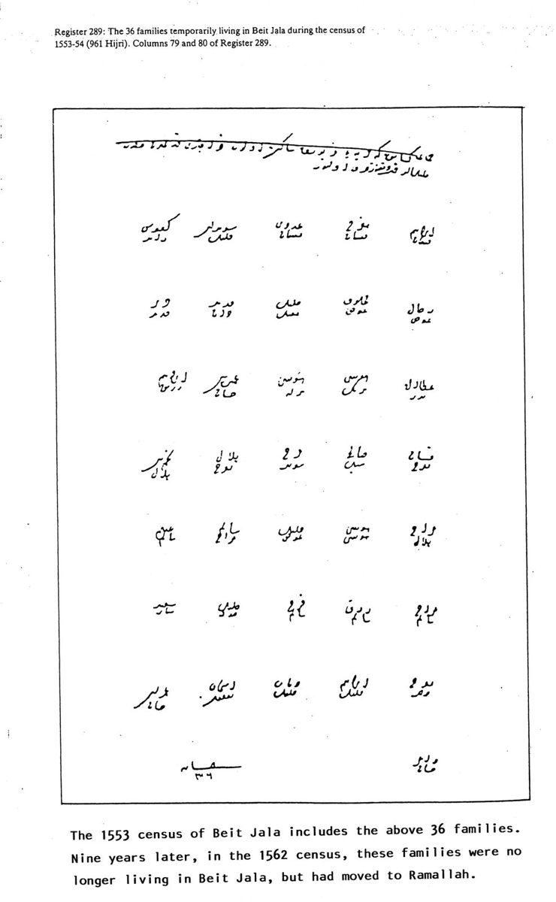
The census of Bayt Jālā of 1553–54 (register 289), with the thirty-six families living there for the time being. Nine years later, in the census of 1562, they were no longer at Bayt Jālā. They had moved to Ramallah.Naseeb Shaheen, A Pictorial History of Ramallah, Part II (Birzeit University Press, 2005), p. 23. Courtesy of the American Federation of Ramallah, Palestine.
This brings the register question into focus. حديد and
حداد, “iron” and “blacksmith”, share the same root and differ by one letter.
In an Ottoman clerk’s hand, in a register written without the dots that tell letters apart, they look
almost the same. John transliterated it Hadeed.
And it is not new in 1562. Jareer bin Hadeed is in the Beit Jala register of 1553 as well, one of
the nineteen who make the move. If that reading is right, the family name is in a document nine
years before the Christian settlement190.
One more number to keep. The ten Muslim households of 1562 are named too: Khaleel bin Hassaan,
ʿAmeer bin ʿOmar, Hasan bin ʿAta, Ahmad bin Muhammad and six more. They were on the hill first, and
the register puts them at the head of the page. We have long said that
Muslims were never absent from Ramallah. Now we can say who they were.
Two court records put the names on the hill. Ḥammūdeh found them in the Jerusalem registers. On 27 November 1604 the court recorded a reconciliation between ʿUbayd ibn Ghānim “of the clan of the sons of Hadid” and Muṣliḥ ibn Ibrāhīm “of the sons of al-Naqqāsh,” both Christians of Ramallah. On 3 July 1605 it names “Muṣliḥ son of the Christian Shuqayr, from the families of Ramallah.” These are the only firm mentions of the town we have between 1596 and 1800. They put a Ḥadīd clan and a Shuqayr here within forty-three years of the register of 1562, where Shuqayr is missing. They bear on whether the old name was Ḥadīd or Ḥaddād. They do not settle it191.
1005 / 1596DOCUMENTS
Karak was a Christian town
The Ottoman survey of 1596 counts al-Karak, and the numbers run the other way from what our family
had long assumed about the town we came from. It was not a small remnant under pressure. The survey
lists one hundred and three Christian households against seventy-eight Muslim, with eight
Christian bachelors and two Muslim. That makes a hundred and eighty-one households, of which
fifty-seven in every hundred are Christian192.
First, a caution. A tahrir, an Ottoman tax survey, counts taxable households, not
people. The castle garrison, the officials and soldiers, and everyone exempt are left out. And
“Christian” here is a tax category: the نصارى who paid the poll tax. It is
not a census of belief. So the careful phrase is “a Christian majority of the taxable households in
the register of 1596,” and we do not shorten it to “a Christian town” anywhere it matters.
The Mamluk chroniclers said the same three centuries earlier. In 1301 (700 AH) Cairo ordered
the Christians of the realm into blue turbans and the Jews into yellow. At Karak the order was not
carried out. Al-Nuwayrī served the same state and wrote within a generation. He records the excuse
that was made for them: أهل الكرك نصارى وأن
المسلمين بها قليل, “the people of Karak are Christians, and the Muslims there are
few.” Marking them, it was said, would show strangers how many they were. “And so it remained at
Karak and Shawbak to this day.”193
A Mamluk official, three hundred years before the Ottoman clerk, saw the same picture.
The 1596 figure stands apart from every later count. The table sets them side by side.
THE CHRISTIAN SHARE AT KARAK, 1596 TO 1961
when
who counted
what they found
share
1596
the Ottoman mufaṣṣal
103 Christian households · 78 Muslim
~57%
1806
Seetzen, on the spot
70–80 Christian houses · 120 Muslim; four mills held jointly
~37–40%
1812
Burckhardt, on the spot
150 Christian families · 400 “Turkish”
~27%
1818
Irby & Mangles, on the spot
“about as many Christian inhabitants as Turks”; 400 armed men
~50%
1872
Tristram, reporting hearsay
8,000 of whom 1,600 Christian — and he says the town was empty when he came
20%
1895–96
Hill, for the Palestine Exploration Fund
8,000 Muslim · 2,000 Greek Orthodox, town and district
20%
1896–1902
Musil, clan by clan
about 1,140 families; en-Naṣāra 200 within one faction
~18%, and probably an undercount
about 1905
Jaussen, on the spot
eight Christian tribes · 200 households; the Ḥaddādīn under Khalīl bin Ibrāhīm
not given
1961
the Jordanian census
7,422 persons · 1,622 Orthodox
22%
Nothing after 1596 corroborates a Christian majority. The nearest is Irby and Mangles at parity. What the series does show is a large, stable and strikingly secure Christian community — a fifth to two-fifths of the town for two hundred years, armed on the same terms as its Muslim neighbours, which both Burckhardt and Irby stress independently and with some surprise. So print the 1596 majority, and do not let it imply continuity with the community the travellers met.
One sentence of Burckhardt’s runs the family’s road backwards. Of the Karak Christians he
writes that they are “for the greater part, descendants of refugees from Jerusalem, Bethlehem, and
Beit Djade,” that is, Bayt
Jālā194.
Our tradition has the family leaving Karak for Beit Jala. Burckhardt has the Christians of Karak
arriving from Beit Jala. The roads have the same two ends and run in opposite directions, and
nothing in either record says they cannot both have been travelled. Christian families on this
plateau moved in both directions for centuries. A tradition of flight out and a report of refuge in
do not contradict each other. Until now our story has told only one of them.
One endowment at both ends of the road. The Ottoman registers of 1548 and 1596 list, in the district of Karak, a share for the sanctuary of Abraham at Hebron: 2,000 akçe, then 2,500. This is the endowment that owned the hill of Ramallah. It is not evidence that anyone moved. By inference it shows only that, in the decades when our tradition has the family on the road, one endowment’s collectors worked at both ends of it195.
One claim about the Mamluk years rests on our clan book. Yasmine Zahran, a Palestinian archaeologist born in Ramallah, writes that “in 1300 they found favour with the Mamluks and were the only Christians exempt from wearing the head-dress prescribed for Christians and Jews,” and that “many Haddadeen under the Mamluks lived in Cairo and worked in the sugar industry.” Her source is not a Mamluk text. It is the Arabic history of the Ḥaddādīn clans of 1991, pp. 25–26. Al-Nuwayrī, above, gives the exemption to all the Christians of Karak and Shawbak, not to the Ḥaddādīn alone; the narrowing may be the clan book’s (our inference). The Cairo sugar trade has no other source we know. We print it as the clan’s own tradition, and the book is worth finding196.
The Christian quarter and its church. In the nineteenth century the Christians held the north-north-east third of Karak, and in the town’s politics they stood with the Western alliance, the Gharābā, “not on particularly good terms with the Majali.” Their bishop was a Greek. The metropolitan of Karak visited “every five or six years” and took his income in kind through priests sent from Jerusalem. The parish priest and the deacon were local men, often succeeding father to son, and the seminary of the Holy Cross took Arab students only from the early 1850s. In 1842 the Russian Uspenski came to win over “the Arab clergy, which was in open conflict with its Hellenic hierarchy,” and a new church was consecrated in 1849 with Russian money. When Tristram came in 1872, the schoolmaster was “a native of Kerak … educated at the convent of the Holy Cross at Jerusalem,” in a plain room with matting and books from the Church Missionary Society. This is the Arab-against-Greek struggle of our own church, seen at the family’s place of origin197.
The road was used both ways, and by our town too. When Mādabā was resettled from 1880, the new town “drew in particular peasants from the Christian villages of Palestine: Bethlehem, Beit Jala or Ramallah,” who came as sharecroppers, and some stayed and married there. Karak had its own precedent for a whole clan leaving: in 1880 the ʿAzayzāt went to Mādabā after one of their daughters was carried off by a Muslim of the Ṣarāyra. A squeezed Christian lineage left as a body, and part of it often came back. That is the shape of the Rāshid and Ṣabra story too, though the likeness is our inference198.
Figure 7.12 · Chart
Karak’s Christians, counted and named
The Christian share of Karak from the Ottoman register of 1596 to the Jordanian census of 1961, and the eight Christian clans of the town with the origins each gave Alois Musil. Only the register of 1596 shows a majority; every later count shows a fifth to two-fifths.The 1596 mufaṣṣal (Hütteroth and Abdulfattah 1977, p. 171); Seetzen (1854); Burckhardt (1822); Irby and Mangles (1823); Tristram (1873); Hill (1896); Musil, Arabia Petraea III (1908), p. 99 and the clan table; Jaussen (1908); the Jordanian census of 1961.
1908ORAL TRADITION
Musil asked them himself
Alois Musil did one thing nobody else did: he went round the family lines of Karak and asked
each one where it came from. He opens the section simply: “most of the lineages,
حمايل, of the fellāḥīn of el-Kerak are, according to their own family
tradition, immigrants from elsewhere”. The ḥamāyil are the family lines, and the
fellāḥīn are the farmers. Then he prints the answers in a table199.
The Ḥaddādīn line reads: El-Ḥaddâdîn, stammen aus ḫ.
el-Ḥaddâd, “they come from Khirbet al-Ḥaddād.” A ruin. Not a country, and not
Palestine.
And the ruin can be found. Musil’s own first volume walks past it. One stage of his journey
runs “from Ǧaʿfar to ḫ. el-Ḥaddâde” and the next “from ḫ. el-Ḥaddâde to Mâdaba.” In this
volume Musil spells the name el-Ḥaddâde, with a final vowel. The site
lies south of Khirbet Abū Ḥammūr, on the wadi that drains the el-Feǧǧ hollow. From there, he notes,
the fortress of Karak is in sight200.
So the Ḥaddādīn of Karak told Musil they came from a ruin on their own plateau, within sight of
their own castle.
Now look at the whole table, because the pattern is what matters.
WHAT EACH KARAK LINEAGE TOLD MUSIL, 1896–1902
lineage
where they said they came from
el-Ḥaddâdîn
ḫ. el-Ḥaddâd — a ruin on the Karak plateau
el-Maʿâjṭa
ǧ. el-Ḫalîl — the Hebron highlands
eḍ-Ḍmûr
el-Ḫalîl and Beni Nâjem — Hebron and Bani Naʿim
el-Ḥalasa
Egypt; the ancestor settled at Kerak, married a girl of the Ḥaddādīn, and founded a new lineage
el-Heǧâzîn
the Ḥijāz
ez-Zrêḳat · el-ʿAkaše · eṭ-Ṭarâwne
ḫ. el-Mḫêlle, east of Wādī Mūsā
el-ʿAzêzât
Mōte — Muʾta, on the plateau
el-Mdânât
Middīn
el-Bḳâʿîn
el-Beqʿe
eṣ-Ṣunnâʿ
merchants of Damascus — “originally Greek Catholic, later gone over to the schism”
as-Serâjre · el-Ḥabâšne
ḫ. ez-Zuṭṭ · ḫ. Ḥbêš
el-Aṛawât · aṭ-Ṭanâšât · el-Mḫâmîd
old lineages, come centuries ago, “who built the town”
el-Ḳdaʾ · el-Bašâbše
the original inhabitants of el-Kerak
Read the third column of Musil’s Christians. He names eight Christian clans at p. 99 — Ḥalasāʾ, Ḥegāzīn, ʿAkāse, Ḥaddādīn, Mdānāt, Zrejkāt, Ṣunnāʿ, Beqāʿīn — and gives every one of them a non-Palestinian origin: Egypt, the Ḥijāz, Muʾta, Khirbet Mkhēlle, Middīn, el-Beqʿe, Damascus, Khirbet al-Ḥaddād. Jerusalem, Bethlehem and Bayt Jālā appear nowhere in the list.
This puts Musil and Burckhardt on opposite sides of the same question, and here we must be
careful. Musil’s traditions agree with Burckhardt on the Muslim clans. The Maʿāyṭa come from the
Hebron highlands, and the Ḍmūr from Hebron and Bani Naʿim, exactly the “mountains about Hebron and
Nablous” Burckhardt names.
They disagree with him on the Christians at every single entry.But Musil never cites
Burckhardt, never mentions him, and is not arguing with him201.
Two men asked, ninety-six years apart, and got different answers. That tells us about the evidence.
It is not a judgement on either man.
FOUR ACCOUNTS OF WHERE THE ḤADDĀDĪN CAME FROM
account
the road it describes
when and how it was collected
Ramallah’s own tradition
Ghassanid Christians, flight from Karak north to this ridge
written down 1953 and 1954 from family memory; printed by Shāhīn 1982
Burckhardt, 1812
the opposite direction — the Karak Christians are refugees from Jerusalem, Bethlehem and Bayt Jālā
a traveller’s report of local information, on the spot
Musil, 1896–1902
no road at all — the Ḥaddādīn come from a ruin on the Karak plateau itself
asked of each lineage in the field and tabulated, published 1908
The Karak diwan, 2022
Rāshid and his brother Ṣabra go from Karak; Ṣabra returns
the Karak family’s own printed statement, at a reception for the Ramallah delegation
These do not reconcile, and this book will not make them. Two say the family left Karak; one says the Karak Christians arrived from the Bayt Jālā country; one says the Ḥaddādīn never came from anywhere but the next valley. Printed as four, with the date and the method of collection attached to each, they are more use to a reader than any one of them smoothed into a story.
Notice what all four accounts share.Every account agrees that the Ḥaddādīn were at Karak,
were Christian, and were many enough to need an explanation. What none of them can settle is
which way they travelled.
Our family’s memory of a road is older and more detailed than anything that contradicts it. It
remains the reading we follow, with three other readings now standing beside it, as they should.
What Peake’s Arabic edition adds. Peake’s Arabic volume of 1935 gives two Karak entries that touch this table. Of al-Ḥalasa he writes that “they are said to be the sons of an Egyptian who came to Karak and married a girl of the Ḥaddādīn clan; their rite is Greek Orthodox; they live in Karak and the village of Ḥammūd, and they have kin in Nazareth called al-Ḥanādisa.” So one Karak Christian clan kept kin west of the Jordan. Of al-Ṭanāshāt he says the opposite of Musil. Musil counts them among the old lineages “who built the town”; Peake lists them under a Muslim clan, “descendants of one of the old Ottoman officials.” We print both views by name. Kaddoura’s Sheikh Ṭanāsh, who flees with Rāshid, belongs to this same name202.
Peake’s two Ḥaddādīn. Peake’s own Ḥaddādīn entries sit among the Christians of the Salt district, and there are two of them. The Orthodox Ḥaddādīn “come from Ḥawrān, and were given this name because they work at smithing,” about seventy souls. The Protestant Ḥaddādīn he describes from Iskandar al-Maʿlūf’s Mashāhīr al-Milla: “the Ḥaddādīn are of the Ghassanids,” once living at Biskintā on Mount Ṣannīn, from where branches spread to Lebanon’s Ḥaddād, Muslim, Ṣāyigh, Kūrī and Riyāshī families, and an East Jordan branch to ʿAnbeh, Samūʿ, Khanzīra and Dayr Abū Saʿīd near ʿAjlūn, and to Salt. This is a Lebanese family tradition about one Ḥaddādīn line, not about Karak or Ramallah, but it is the same claim of Ghassanid descent that our families tell, written down in Transjordan in 1935. ʿĪsā Iskandar al-Maʿlūf’s family history of 1907 confirms that it is a different family: this Ḥaddād line came from Adhraʿ in the Ḥawrān to al-Furzul in the sixteenth century, and some of it moved on to Biskintā203.
three names above RāshidORAL TRADITION
Who was Rāshid’s father?
For years we worked from the Mogannam chart, which ends at row 36 (generation 66 in our recount). All along it has carried three more names, inside that row’s own title, and until now we never spelled them out. John Mogannam writes it in full: Rāshid bin Essaye bin Eyad bin Dhahdouheh al-Ghassani, راشد بن عيسى بن عياد بن ضهدوحة الغساني204.
So on the Ramallah side the answer is this. Rāshid’s father was ʿĪsā, his grandfather
ʿIyād, and his great-grandfather Ḍahdūḥa. These three generations were printed on every copy of
the chart, and never once read out.
On the Karak side the answer is different. The diwan, the family council, of the Ḥaddādīn
of Karak says it in print, and says it about itself:
راشد بن صقر الحدادين وأبناؤه ونسله، وكان قدم إليها مع شقيقه صبرة بن صقر
الحدادين من الكرك… وما لبث صبرة أن عاد إلى قواعده في الكرك
“Rāshid son of Ṣaqr al-Ḥaddādīn and his sons and his line — he came to it with his brother
Ṣabra son of Ṣaqr al-Ḥaddādīn from al-Karak… and before long Ṣabra returned to his bases in
al-Karak.”
The Karak Ḥaddādīn diwan, at a reception given for the Ramallah municipal
delegation, August 2022205
Two things in that sentence are a real gain, and we should say so first. The Karak side, speaking
about itself and without prompting from Ramallah, confirms that Ṣabra was Rāshid’s brother and not
his son. That settles an old disagreement in Shāhīn’s favour against
Kaddoura. It also confirms that Ṣabra went back.
The two ends of the tradition were written down separately, on opposite sides of the Jordan, and
they tell the same story about the same two men.
And then they name different fathers
Ramallah saysRāshid bin ʿĪsā bin ʿIyād bin Ḍahdūḥa — the
Mogannam chart, row 36 (generation 66 in our recount).
Karak saysRāshid bin Ṣaqr, brother of Ṣabra bin Ṣaqr. This is
not a 2022 novelty. Ḥammūdeh prints Rāshid bin Ṣaqir al-Ḥaddādīn in 2014, on the authority
of Khalīl Abū Rayya (1980); the Karak diwan is the fullest statement of it, not the
first.
What we doWe enter Ṣaqr at generation sixty-five and
print ʿĪsā beside him, because the wheel that carries Ṣaqr agrees with Ramallah on four other points
and our own chart’s three names agree with nobody. It is our best judgement, and we will change it
if a document says otherwise.ʿIyād and Ḍahdūḥa have no independent attestation anywhere — ضهدوحة returns nothing
at all as a personal name, and its shape is that of a Levantine nickname rather than a given name;
it may be a copying slide from the well-known Christian name الدحداح. And
Ṣaqr is not attested in any document at all — not in Peake, not in Kaḥḥāla, not in any
Ottoman register. He is well attested in the Arabic family literature from Abū Rayya (1980) onward,
which is why he is drawn in a broken outline on every ladder in our history: named by the tradition,
named by nobody’s clerk.206
One reading that would make both traditions right
صقر — “falcon” — is a byname, not a baptismal
name. No Christian of sixteenth-century Karak was christened Ṣaqr. Levantine men of this period
routinely carry a given name and a byname. A family diwan on the east bank is exactly the kind of
memory that keeps the byname and loses the given name. A genealogy written in Ramallah is exactly
the kind that does the opposite. If Ṣaqr and ʿĪsā are one man, both traditions are
right — and generation sixty-five is ʿĪsā, called Ṣaqr.
We cannot prove that and do not assert it. It is set down
because it could be checked: a single Karak or Ramallah document giving both names together would settle
it, and because it is the only reading yet proposed under which nobody in this argument is wrong.
This is only a guess, and we do not add it to the ladder.
The date at the centre of the Karak chart cannot mean what it looks like
The radial chart reproduced in the family’s own presentation carries
صقر — عام ١٥٦١ at its hub. Read as Ṣaqr’s lifetime, that is
impossible on the family’s own evidence.Ṣaqr is Rāshid’s father. Rāshid’s grandchildren
brought the Kasābra up the ridge road in 1562, with forty-four further Christian households behind
them. A father cannot flourish in
1561 and have great-grandchildren settling the hill the following year.
It lands on a document. On 1 April 1561 three men of this
community — Ghunaym bin Sālim al-Kasbūrī, Mūsā bin Baraka and Isḥāq bin Yaʿqūb — stand in a
Jerusalem court and swear to plough this hill, and the qāḍī divides Ramallah in thirds between them
and the Muslim householders. A hub date sitting exactly on the earliest document in which these
families can be found is a document date, or a compiler’s back-count from one — not a birth
year. There is no apparatus in Ottoman Karak that could produce a birth year for a
Christian villager of the 1500s. We print 1561 as a date we cannot yet explain, and we will
not enter it as a lifetime.
What the rest of that chart does say is the subject of the next
entry — and it is a good deal better than a caution. Read outward from the hub, as a radial
genealogy is meant to be read, the Karak wheel is coherent, it is generous to Ramallah, and on four
separate points it says what Ramallah says.
the Karak wheel, read outwardORAL TRADITIONTWO WITNESSES
The Karak chart, read outward
The family chart kept on the Karak side is drawn as a wheel. Ṣaqr sits at the hub, and each
ring outward is one generation further down. Read that way, the way it was drawn, it is not a
rival to Ramallah’s account. It is a second copy of it, kept for four hundred years on the other
side of the Jordan.207
Figure 7.13 · Diagram
The Karak wheel, redrawn — what it says about Rāshid
The hub of the Karak chart, set straight so that it can be read. Ṣaqr has two sons. One keeps Karak and the diwan traces his line to the present day; one goes to Ramallah, and the chart writes the destination under his name, records his five sons, and stops. That is not the shape of a chart trying to annex somebody else’s ancestor. It is the shape of a family recording where its brother went.
So what does the wheel tell us about Rāshid? It says four things that Ramallah says too, and there
is one point on which the two sides part.
Where Karak and Ramallah agree
His brotherṢabra is Rāshid’s brother, and Ṣabra went back.
John Mogannam argued his way to exactly this against Kaddoura — “Sabra must have been
Rashed’s brother” — from Ramallah, without the Karak chart in front of him.208
His five sonsḤaddād, Ibrāhīm, Jiryis, Shuqayr, Ḥassān — the same
five sons, in the same order, as the Ramallah tradition’s own division of the land into
fifths. The Karak wheel writes the fifth as Ḥasan (حسن).209
Where he wentThe chart writes رام الله under his
name. The Karak side records the destination.
That the line ends thereRāshid’s branch stops at the five sons. A chart
written to claim Ramallah would have carried it on; this one lets it go and keeps counting its
own.
Set this beside the two fathers in “Who was Rāshid’s father?” just before. On his brother, his
sons, where he went and the way the family parted, the two traditions agree. They agree
separately, in two languages, on two sides of the Jordan.
They disagree on exactly one thing: his father. On his grandfather the Karak side says nothing at
all. The wheel has nothing above Ṣaqr, so ʿIyād and Ḍahdūḥa rest on the Mogannam chart
alone.
A correction
As it stoodKaddoura: Ṣabra was Rāshid’s son, and the eldest of the five.
Corrected toṢabra was Rāshid’s brother, and the eldest of the five was Ḥaddād.
How it is justifiedFour independent witnesses now say so: Khalīl Abū Rayya (1980); Shāhīn (1982); Ḥammūdeh (2014), who prints it from the Arabic literature; and the Karak wheel, which puts Ṣabra beside Rāshid at the hub and Ḥaddād first among the sons — with John Mogannam reaching the same conclusion by argument from the clan names, p. 18, without any of them in front of him. Kaddoura’s reading is retired, with thanks — it is the reason the question was ever asked.210
One caution remains. The wheel has no dates except at its hub. It was first published in this
form in the twenty-first century, and the man who compiled it is alive and speaks to a Ramallah
audience. That does not make it wrong. A family diwan is exactly the kind of source that keeps such
memories.
But it means the agreement above is the agreement of two traditions, not of two documents.
No Ottoman register names Rāshid, Ṣabra or Ṣaqr. That has not changed.
1812 → 1934DOCUMENTS
When the Ḥaddādīn name enters the record
Our family’s road runs through Karak, and we can now date the Karak end of it quite closely. The date turns out to be much later than the tradition suggests, and we should say so plainly.
About 1806. Ulrich Seetzen, as Chatelard reads him, saw the tents of a “Bedouin” Ḥaddādīn
tribe at Ḥumaymāt, near Jabal Shīḥān north of Karak. If his page bears it out, it is the earliest
eyewitness record of the name on the plateau211.
1812. The Swiss traveller Burckhardt counted about 150 Christian families at Karak,
and he did not name the Ḥaddādīn among them212. As we saw earlier in this chapter, he was also told
that Karak’s Christians were, in the main, descendants of refugees from Jerusalem,
Bethlehem and Beit Jala213.
It does not break our family’s tradition of coming out of Karak. It does mean that the road by
itself proves a connection, never a direction.
About 1879: the first named Ḥaddādīn at Karak. A house in the town is said to have belonged
to Jreis Sulayman Haddadeen214.
About 1905. Antonin Jaussen counted the Christian tribes of Karak: “eight in number; 200
households.” He lists the Ḥaddādīn eighth, under their sheikh Khalīl bin Ibrāhīm. The Ḥalasa come first,
under ʿĪsā al-Qusūs. Within the town the Ḥaddādīn were a small Christian lineage with a sheikh of their
own215.
From 1867. Karak Christians began resettling Maʿīn from 1867 (Ottoman records). The family
remembers the Ḥaddādīn move as 1892; it came in stages, and the clan settled there for good in 1909, and the Latin Patriarchate’s own history of Maʿīn names the
Ḥaddādīn among the Christians who came from Karak216. This is the strongest evidence from an institution that ties the clan to
the place.
The 1920s bring confirmation in print. Al-Ziriklī lists fifteen Greek Orthodox Ḥaddādīn
houses at Karak. Kaḥḥāla repeats the figure in his dictionary of tribes of 1949, which gathers earlier
authorities and is not a separate witness217. Importantly, both assign them no Ghassanid
ancestry.
1934: the claim is written down. Frederick Peake, listing the tribes of Transjordan, calls
the Karak Ḥaddādīn “one of the Christian tribes of Karak, and the oldest of them; they claim to be
Ghassanids”218.
1979: a Palestinian authority names the family outright. Until now we had followed the
Ḥaddādīn–Ghassān question only through Peake and Kaḥḥāla. We should have gone to the Palestinian
record first.
Muṣṭafā Murād al-Dabbāgh wrote القبائل العربية وسلائلها في بلادنا فلسطين,
a whole book on the Arab tribes of Palestine and their descendants. It has a chapter on the
Ghassanids. Under ومن سلائل الغسانيين, “and among the lines of the
Ghassanids,” the first name he lists is الحدادين219.
Two things must be said about that. It is the strongest Palestinian statement of our family’s
claim that exists. He writes from inside the country, in Arabic. He names the Ḥaddādīn among
Ghassanid lines, and traces the branch that crossed into Transjordan through ʿAjlūn and al-Salṭ, and
then ومن الحدادين جماعات نزلت فلسطين, “and of the Ḥaddādīn, groups came down
into Palestine.”
But his own footnote sends the reader back to Peake. So al-Dabbāgh is not a separate witness to the
descent. He is a Palestinian scholar gathering, in Arabic, the same tradition we have been looking
into. That is worth having, and it is not the same thing as proof.
There is a further step. Peake’s Ghassanid Ḥaddādīn of Biskintā came to him from Iskandar
al-Maʿlūf, and ʿĪsā Iskandar al-Maʿlūf’s own family history of 1907 says where that family came from:
“the Banū al-Ḥaddād: their ancestor Jibrāʾīl, or Dāwūd, came from Adhraʿ in the Ḥawrān with his six
sons to al-Furzul in the middle of the sixteenth century; then some of them moved to Biskintā.” So the
Biskintā line is a Lebanese Ḥaddād family from the Ḥawrān, not the Ḥaddādīn of Karak, and
al-Dabbāgh’s Ghassanid link for it rests in the end on the al-Maʿlūfs220.
In the same chapter he weakens the other half of the story. Every place where al-Dabbāgh says the
Ghassanids actually lived is east of the Jordan: Tadmur, Ḥawrān, the Yarmūk, Gharandal, al-Qasṭal,
al-Zarqāʾ, Adhruḥ, al-Jarbāʾ and Maʿān221222. West of it he offers only two place-names, Dayr Ghassāna and
perhaps Jifnā, and he hedges both, in the tribes book and again in his village gazetteer, as we will
see.
The Palestinian record puts our claimed people on the plateau the tradition names, and nowhere
near these hills until we walked here ourselves. That is exactly what we have found from the
Ottoman side, reached separately from the Arabic.
So the Karak evidence comes to this. The clan is firmly at Karak from the late nineteenth
century, and in print as such by the 1920s. The Ghassanid claim attached to it is first recorded
in 1934, by an outsider, as the clan’s own claim.
Everything earlier is background to the claim: the plateau’s unbroken Christian life from Nitl to
Shawbak to the register of 1596. It is good background. But it is not a chain of fathers, and we
will not present it as one.
They went back and forth. Frederick Peake, writing of the Christian clans of Transjordan, says: “Most of the Christian clans hail from Palestine … In el-Karak, many of them have come from Hebron, Bethlehem and Jerusalem.” Heikki Palva, who quotes him, adds that the clans’ claims of Ghassanid origin are as impossible to prove as the Muslim clans’ claims of Bedouin descent. Set beside Burckhardt, this does not refute our tradition. It shows that Christian families moved in both directions between Karak and the Jerusalem hills, over centuries, and ours may have done both223.
Figure 7.14 · Timeline
The Ḥaddādīn and the Ḥalasa
Two Karak clans joined by a marriage, told from both sides. Green marks what an outside witness saw or wrote down; ochre, what the clan history remembers. The two clans moved to Maʿīn together, quarrelled, parted, and were still marrying into each other in the 1990s.Oppenheim (1947) and Jaussen (1908) as Chatelard (2000) gives them; Connell (2022); Burckhardt (1822); al-Ziriklī; Peake (1934, 1935); the Ḥaddādīn clan history of 1991 as Chatelard cites it; Shaheen (2005), ch. 2.
a warningNO EVIDENCE
Two false leads
Both are the kind of mistake a family history makes when a name looks familiar. We mark them here so that nobody follows them twice.
The first lead: Dayr Ghassāna. About nineteen kilometres north-north-west of Ramallah as the
crow flies, some twenty-five by road, there is a village whose name looks like a gift. People often point to it as proof that Ghassanids settled in
these hills. We went to the Palestinian and Arabic sources first. They do not support that idea, but
they say something better than a flat no.
The earliest text is Arabic, and it does not choose. In 1710 the traveller Muṣṭafā
al-Bakrī stood at the village: ووقفنا على تلك الآثار, “and we stopped at
those remains.” He reached for two reference books, al-Jawharī’s Ṣiḥāḥ and al-Suyūṭī’s
Lubb al-albāb, and set out two different Ghassāns.
One was the Azdī water of the Jafnid kings. The other was غسّان بن جذام, a
clan of the Ṣadif of Ḥimyar, an entirely different people. He chose neither, and turned at once to
the Barāghitha, the Barghūthī family, who actually lived there224.
That second reading is real, old and supported by other sources, and later writers quietly dropped
it. Bringing it back is the one correction we would press.
The standard Palestinian entry is cautious, and its own source points east. Muṣṭafā Murād
al-Dabbāgh, in بلادنا فلسطين, writes
يبدو أنّ اسمها يعود إلى أنّ طائفة من الغساسنة نزلتها, “it appears that
its name goes back to a group of the Ghassanids having settled it.” He offers no evidence beyond the
name.
The authority he cites, al-Qalqashandī, places Ghassān at al-Balqāʾ, the Yarmūk and Ḥimṣ: not
one place west of the Jordan225. Shurrāb repeats al-Dabbāgh’s sentence word for word, caution
and all, and drops the Ṣadif alternative226.
Shahîd, read at last, sides with the caution. He places Dayr Ghassāna “some thirty kilometers
northwest of Jerusalem,” in our own district, and notes that its villagers of the eighteenth century
claimed descent from al-Ṣadif, which is al-Bakrī’s second reading. His judgement is that “the
Ghassanids most probably only built the monastery but did not provide it with settlers.” He also
withdraws a “Karawa Banī Ghassān” as a misreading of Ḥassān227.
The clearest witness is the village’s own son. ʿUmar al-Ṣāliḥ al-Barghūthī of Dayr Ghassāna
wrote تاريخ فلسطين (Jerusalem, 1923) with Khalīl Totah. It was the first
Palestinian national history. He writes about his own village and its Barghūthī shaykhs, and says
nothing at all about a Ghassanid origin for its name.
He is not shy of Ghassān. He places the Palestinian Ghassanid remnant among the Balāwina of Banī
Ṣaʿb and the Baysān valley, and he claims Ghassanid descent for Palestine’s Arab Christians as a
national claim. He simply does not attach it to Dayr Ghassāna.228
So here is where the Arab and Palestinian sources leave us. In the Arabic tradition the name has
three possible origins. One is the Jafnid water. One is Ghussān b. Judhām of the Ṣadif. The third is
the ordinary word غسّانة, “handsome,” which Ibn Durayd already gave and the
Lisān al-ʿArab keeps. The Jafnid origin is the only one of the three with nothing behind
it but the sound of the word229.
The village’s name and our family’s nisba, the name that marks descent, are not the same
evidence, and our family’s claim does not need the village.
The second lead: “al-Ḥaddāda” in al-Suwaydī is not us. This classical genealogist has an
entry under that name. Beside it is a Banū al-Ṣabr among Ghassān, which looks temptingly like
Sabra. It is a coincidence. Al-Ḥaddāda is an unrelated Lubayd/Sulaym group in North
Africa, and a likeness between an Arabic clan name and an ancestor’s name is not evidence of
anything230.
Similar surnames are the most common way family histories go wrong. We name the trap here so
that no later editor walks into it.
And a book we long failed to find, because we were looking for the wrong
title. The wheel chart of the Karak clan in the family presentation has the caption “El-Haddadeen
Tribe, Origins and Branches, Warda Books, 2025.” For a long time we could not find such a
book in any catalogue, and went looking for a different one.
The caption is not a ghost. It is a loose English rendering of a real book, listed in catalogues
and possible to obtain: Munther Haddadin, دولة الغساسنة؛ أصيلها ورحيلها
(The Ghassanid State: Its Origin and Its Departure), Amman: دار ورد
الأردنية للنشر والتوزيع, 2024, ISBN 978-9923-76-975-1231.
“Warda Books” is دار ورد. The year is one out. The title was translated
loosely. Everything else in the caption is right, and the chart under it is that book’s plate 84.
What stays true. The wheel is a family tree published in 2024, not an
Ottoman record. Naming its source correctly lifts
it from a caption nobody could check to a book anyone can cite. It does not lift it to a
document.
This matters for how we weigh witnesses. The 2026 family presentation reproduces plate 84 of that
same book. So the presentation and Haddadin 2024 are one stream of evidence, not two separate
witnesses. That is why the evidence badges on the family ladder change at 1500.
Where we do count two witnesses for Rāshid, they are Haddadin 2024 on the Karak side, and Shāhīn
1982 with the co-authors’ chart on the Ramallah side. These two really are independent of each
other.
What Haddadin’s book says, now that we hold it. Munther Haddadin names the Ḥaddādīn, with the Qaʿwār, among Jordan’s Ghassanid families, and writes that the clan’s “origins are in Shawbak.” He says the Ghassanids of Palestine, “most of whose origins go back to the Ḥaddādīn in Jordan,” founded the Ramallah Club in America, citing Zahran. And he is frank about the evidence: many Arab claims to Ghassanid descent are “not based on evidence,” though the tradition is strong among Christian families. His statement that the Ḥaddādīn rebuilt Karak in 650 has no source behind it, since Zahran does not give that year, and we do not use it232.
What the scholars say
Azeez Shaheen — Ramallah: Its History and Its Genealogies (كشف النقاب عن الجدود والأنساب في مدينة رام الله)Birzeit University, 1982 · 807 + 77 pp.The foundation of the family tree, built on 1970s fieldwork, printing the family accounts of 1953 and 1954 of the coming from Karak.
Sameeh Hammoudeh — “New Light on Ramallah’s Origins in the Ottoman Period”Jerusalem Quarterly 59 (2014): 37–53Start here: Ottoman registers and court records retell the founding, with the Christian families of Bayt Jālā counted at Ramallah by 1562.
محمد عدنان البخيت ونوفان رجا السوارية — دفتر مفصل لواء القدس الشريفal-Furqān Foundation, London, 2005–2011 · 6 volsThe Jerusalem tax registers in Arabic with commentary, including the register of 1562 against which the founding story can be tested.
Naseeb Shaheen — A Pictorial History of RamallahBeirut, 1992 · Part II, 2005The great illustrated history of the town by a Ramallah-born scholar, which prints the family accounts of Rāshid’s road from Karak.
يوسف جرجس قدورة / Yūsuf Jurjis Qadūrah — تاريخ مدينة رام الله(Tārīkh madīnat Rām Allāh)al-Hoda Press, New York, 1954The first full Arabic history of the town, written in the American diaspora; every later author argues with its account of the founding.
يحيى عيسى الفرحان / Yaḥyá ʻĪsá al-Farḥān — قصة مدينة رام الله والبيرة(Qiṣṣat madīnat Rām Allāh wa-al-Bīrah)ALECSO / PLO Department of Culture, 1980sThe most widely read short Arabic history of the twin towns, written in exile for everyone, and free to download.
Munther J. Haddadin (منذر حدادين) — دولة الغساسنة: أصيلها ورحيلها(The Ghassanid State: Its Origin and Its Departure)Dār Ward, Amman, 2024A Jordanian Ḥaddādīn author traces the Azd north from Maʾrib to the Ghassānid founding, and holds his own clan to descend from them.
The register of 1596 is a detailed one, and it names all eighty
heads of household at Ramallah, but we have not yet read them. The figure of 143
Christian households once given for Karak in 1562 still has no register reference. Readers who can
help with either would add a page to our story.
No Ottoman register names Rāshid, Ṣabra or Ṣaqr. We do not know
whether Rāshid’s father was ʿĪsā or Ṣaqr, or whether they were one man; a single Karak or Ramallah
document giving both names together would settle it. We do not know what the date 1561 at the hub of
the Karak wheel refers to. And the reading Hadeed in the registers is a lead still to be followed. If
you hold family papers from Karak or Ramallah, they may answer one of these.
8A map of Palestine of 1639, with Ramallah on it as “Rammula”.
CHAPTER EIGHT
The founding families1562–1834
The five sons become the clans, the parish proves itself in writing, newcomers arrive, and the town lives through its feuds.
Ramallah became a prosperous town and attracted other families. The influx began about 1750.
Where our own line stands here
Link nine of nine · five sons and eight clansDOCUMENTS
Documented the whole way: defters, parish books, censuses, ration cards.
The story
after 1562ORAL TRADITIONTWO WITNESSES
The five sons and the eight clans
Ramallah was now a mostly Christian village on endowment land, counted by the Ottoman clerks. The family remembers how its land was shared out. It was divided in fifths among Haddad, Ibrahim, Jirius, Shukair and Hassaan. Jirius was not satisfied, so he was given the extra parcel called Karm ʿAli. Haddad’s fifth was then divided again among his own five sons233.
Out of this double division comes the shape every Ramallah family still knows: eight clans,
four Hadadeh and four Hamayel. The Hadadeh are Haddad’s descendants; the Hamayel are the clans
descended from Rāshid’s other sons. The names carry the sixteenth century inside them. The Sharaka are
simply “the easterners.” The Jaghab are named for their ancestor shouting at a stubborn ox at the
trough: “Drink, or I will break your horn!”
A community that still organises its conventions in Detroit by these names is organising itself
by a joke shouted at an ox four hundred years ago. That is not a weakness of the record. It is the
record.
Figure 8.1 · Diagram
Five sons, eight clans
The social structure of Ramallah from Rāshid down, with each clan’s number in the ration-card count of 1944 and the election district it voted in, in 1946. Nearly four centuries after the land was divided, a British administrator issuing ration books, and the town’s own electoral committee, still counted the town by Rāshid’s grandsons.Shāhīn (1982), ch. 1, for the fifths, Karm ʿAli and the two halves; the 1944 ration-card census; the 1946 election papers, Israel State Archives P-213/40.
Each of the eight clans, Naseeb Shaheen writes, “had its own neighborhood where members of that clan built their homes around a central courtyard,” the ḥōsh. The town’s guest house, the madāfa, stood beside the shrine of al-Khalīl and was pulled down about 1960. Karm ʿAlī comes back into the story too. Salem Butros Jaber of the Yousef clan bought land there, on the northern edge, “and in about 1850 moved there with his many relatives.” It became the first quarter outside the old village, the Kedaireh234.
The cloak of the sheikh. Cadora gives the clan sheikhs of the late nineteenth century with their years: Isḥāq Yaʿqūb Abū Jaghab (1837–1912), Khalīl Ibrāhīm ʿĪdeh (1848–1918), and Yaʿqūb Mūsā Abū ʿAlī (1823–1923), who united the Ibrāhīm clan and “lived for 100 years.” When Abū Jaghab was buried, “the other elders took his Abaya and put it on the shoulders of his son who inherited the leadership position from his father. This is called Mubaya’h”235.
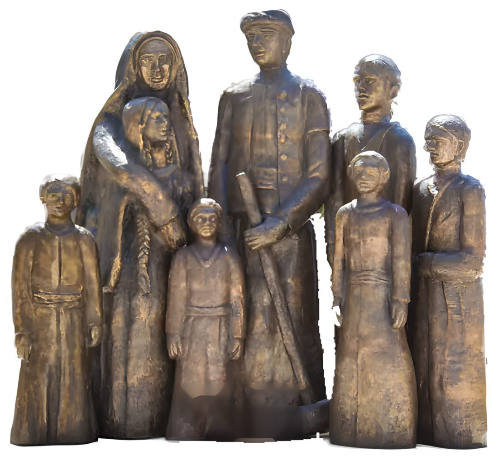
A modern memorial. The bronze memorial to the first family of Ramallah: Rāshid with his staff, his wife holding their daughter, and their five sons around them.Photograph from the AFRP family-tree archive. The same group, drawn in pencil, opens this book and the Ramallah Family Tree. AFRP family archive.
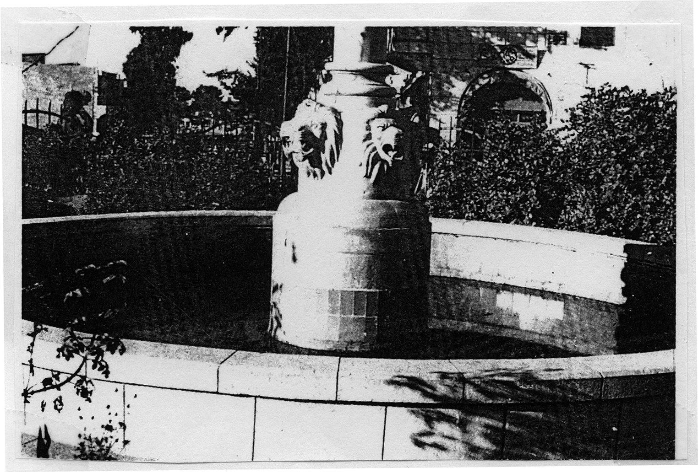
Photographed in the 1950s. The five lions of Manara Square, carved for the five sons of Rāshid.Naseeb Shaheen, A Pictorial History of Ramallah, Part II (Birzeit University Press, 2005), p. 228. Courtesy of the American Federation of Ramallah, Palestine.
about 1750ORAL TRADITION
New families arrive
“Ramallah became a prosperous town and attracted other families... The influx began about 1750.”236 First came the ʿAjlounys from ʿAjlūn. The Hishmeh came by way of al-Jazzār’s walls at Acre about 1775, the Nazzal from Rafidia about 1805, and the ʿAraj, Zagroot and Shahla from Deir Aban about 1810. Each family was given land and folded into a clan. The town took in its newcomers just as the land had always taken in its own. Much later, in 1923, Muhammad El Jaʿooni, a plumber, is remembered as the first Muslim to buy land and build inside the town itself. Yet Muslim households are in the tax registers from 1538, nine of the eighty in 1596, and the British census counted 125 Muslims here in 1922237.
The Saah builders and Acre. Cadora tells this story as the families told it to him. After Ẓāhir al-ʿUmar was killed in 1775, Aḥmad al-Jazzār made Acre his seat and set about rebuilding its walls. His men roamed the villages of Palestine and south Lebanon and forced men into labour, and Ramallah was not spared. “The Al-Saah family were builders and among the first forced into labor.” When the work was done, the Saah builders escaped. Al-Jazzār knew where they came from, so they went to Safad instead of home and worked there as builders. In Safad their daughter Hishmeh married Khaled, a roaming shoemaker, and her grandchildren are the Hishmehs of Ramallah. The family stayed away for fifteen years, until Yaʿqūb of the Ḥaddādīn went to Safad and brought them home. They came back with a new name, al-Ṣafadī, the people from Safad. The outside record fits the story. Al-Jazzār governed from Acre from 1776 until 1804. James Silk Buckingham, who saw Acre in 1816, wrote that its outer walls were “the work of Djezzar Pasha,” who improved the fortifications after the French withdrew in 1799. The family tree puts Elias Salāmeh Saah’s birth at about 1769, and his daughter Sabḥa (born about 1799) married Ayoub Ibrahim Safadi. That fits Cadora’s own clan chart, which is headed “The Saah or Al Safadi Clan”238.
Two more family stories belong with this one. The same labour gangs explain a priestly line. Ḥannā Saʿad of the ʿAwwād clan was an only son, so his cousins took him to the Greek Orthodox monastery in Jerusalem rather than let him be taken to Acre. He became a priest, and he is the ancestor of the al-Qassīs family, who are kin to the ʿAwwād. And the trade went on. Ayoub Ḥannā al-Ṣafadī was a mason who built houses in the villages and a revered sheikh at home. One house-owner paid him with four silk robes, the only ones in Ramallah, and for years couples borrowed them to be married in239.
Cadora’s dates for the newcomers. Cadora dates the arrivals later than the dates above, which follow Shāhīn and the family materials. He has the ʿAjlūnīs coming from the ʿAjlūn hills in 1825, where Shāhīn’s line runs from about 1750; the ʿAraj, Shahla and Zaghrūt from Dayr Ibān in 1850, not about 1810; and the Nazzāl from Rafīdiyā in 1855, not about 1805. He adds a family the list above lacks: “Audeh al-Dibbini is the father of Elias Audeh, the first mayor of Ramallah, and Yusef Audeh who was among the first to immigrate to America.” ʿAudeh, a shoemaker, came from Dibbīn east of the Jordan by way of al-Reina in 1880 and married Ḥanneh al-Sakrān, a Hishmeh relative. We print both sets of dates, by name240.
A map of Palestine of 1639, with Ramallah on it as “Rammula”.Naseeb Shaheen, A Pictorial History of Ramallah, Part II (Birzeit University Press, 2005), p. 37. Courtesy of the American Federation of Ramallah, Palestine.
A second road for the Ḥishmeh. Peake’s Arabic volume of 1935 gives another origin. Under al-Sawāqir of Shaṭnā he tells of four brothers from a village in Jabal ʿAjlūn. One “settled at the village of Burqīn in Palestine, then moved to Ramallah: he is the ancestor of Dār Ḥishmeh.” Another went to al-Reina, as ancestor of Dār al-Sakrān. So there are two accounts: the family’s, through Safad and the Saah daughter, and Peake’s, through ʿAjlūn and Burqīn. We print both by name241.
1820 · 1834 · 1844ORAL TRADITIONTWO WITNESSES
Feuds, a pasha and a faction
In 1820 the ʿAzzouz incident scattered the whole town to eight villages for months. It began as a feud within the Shakara clan, as Shāhīn (1982) tells it (Shaheen 1992 and 2005 print Sharaka), and ten-odd men were killed. In 1834 Ibrāhīm Pasha, whose Egyptian army then held the country, occupied Ramallah without resistance. The town was about 150 families, and they fed his army’s oxen and got them back. In the mid-1840s the hill country fought between its two great factions, Qays and Yaman, and Ramallah, in Shāhīn’s word, was the Qays headquarters242. Shāhīn dates the fighting to 1844. A local chronicle printed in 1906 puts it about 1846, with a second attack about 1852–53.
The ʿAzzouz incident, as the town tells it. A marriage was refused in a Hānī family, and the killing followed. The whole town left. The Shakara went to Beitunia, the Sharaka to Beit Ijza, the Jaghab to Silwad, the Yousef to Abu Qash, the Hasasneh to ʿAin Yabroud, the ʿAwwaad to Mazraʿa al-Gharbiyya, the Ibrahim to Mazraʿa al-Sharqiyya and the Jirius to al-Fandaqumiyya. They were home within the year, and the ʿAzzouz who survived joined the Jaghab. This is oral tradition, written down by Kaddoura in 1954. No outside source confirms it243.
The faction wars, from a local chronicle. Macalister and Masterman printed it in 1905–06 “from native sources.” After the Egyptians left in 1840, Ramallah’s people sought the protection of Muṣṭafā Abū Ghōsh of the Yaman, who set guardians over them. The Qaysī leaders of the town, Yūsif Ḥarb and ʿAīsa Abū Jughub, appealed to the Simḥān. A Qaysī force “proceeded against Ram Allah, which they reached a little before sunset.” Abū Ghōsh attacked at midnight with about three thousand men. His brother Ṭāhā was killed, and more than a hundred died. Later he “set out for Ram Allah, which he attacked. All the inhabitants fled except one dumb old man”; “the village, however, was not looted.” So a Ḥarb and a Jaghab led the town in the 1840s, and they are named in an account written outside it244.
The feud of 1820 in Cadora’s telling. Cadora, who was Shāhīn’s source, writes that “in 1820, a fight broke out among members of Al-Shaqara clan.” A marriage into the Abū Hānī family was refused, and the would-be groom’s brother was killed. The killer fled to the Barāghtha of Banī Zayd, and Muḥammad Abū Salāmeh of the Ghazāwneh of al-Bīra turned the revenge onto the Qaysī side. The families scattered to the villages around, among them Silwād and Yabrūd, and they “returned to Ramallah through a Sulha after an absence of one year.”245.
The Patriarchate’s interpreter. Cadora tells, from a church history, how Ramallah came to the Patriarchate’s aid in a janissary revolt in Jerusalem in the time of Patriarch Polykarpos (1808–1827). The Patriarchate’s interpreter hid for three nights, then rode out to the Damascus Gate, “where he had advised the inhabitants of Ramallah to wait for him. They welcomed him and all escaped to their town.” From Ramallah he wrote to the governor of Damascus, who sent troops. Sheikh Ismāʿīl al-Simḥān, chief of the Qays, was honoured for it, and was received in Ramallah with songs and gunfire in the guesthouse of the Shaqara, in the house of ʿĪsā Abū Salāmeh246.
The night of 17 December 1809. The Patriarchate’s own chronicle dates the interpreter’s flight. After the fire of 1808, rioters in Jerusalem attacked the masons who were rebuilding the Holy Sepulchre. The dragoman Averkios, crippled with gout, was carried out and “left Jerusalem by night and took refuge in a village three hours away, called Ramalla.” A verse account of the same events by Prokopios Nazianzenos adds a note: “Ramalla is a Christian village, sixty stadia from Jerusalem.” So Cadora’s story is confirmed by an eyewitness of the Patriarchate, and it belongs to 1809, the second year of Polykarpos247.
April 1821: the guns are taken. When the Greek revolt broke out, the sultan’s orders reached Jerusalem on 25 April 1821. The authorities searched the Patriarchate and then “went to Bethlehem and Beit Jala and Ramalla … and took their guns and daggers.” The Orthodox were ordered to wear black. Ramallah was named in the same breath as the two old Christian towns of the south248.
Red brides and white brides. In Cadora’s telling, all of Ramallah was Qays except the Shaqara. “The emblem of the Qais was a red flag and that of the Yemenis was a white flag. A Qais bride would wear red and was forbidden passage through Yemen areas and vice versa; otherwise, fighting would erupt.” He also prints an eyewitness of 1844, the diary of the monk Theophilos of Mar Saba: “the big Christian village of Ramallah which had 1500 souls” was coveted by ʿAbd al-Raḥmān Abū Ghūsh, who failed to take it in two surprise attacks, “as the inhabitants of the village, helped by the Moslems of the surrounding villages, fought gallantly against the invader.” The Pasha then lent Abū Ghūsh three guns with gunners and about a hundred irregulars, and the Orthodox Brotherhood had them recalled. After the battle, Cadora says, two Ramallah men, Kandah and Kamūn, were killed at Bayt ʿŪr in revenge for Ṭāhā Abū Ghūsh249.
Sheikh ʿĪsā Ḥarb. Cadora remembers the chief of the Ḥaddādīn in the 1850s. The prefect of the district, Sheikh Muḥammad al-ʿĀmer of al-Bīra, sided with the other clans, so ʿĪsā Ḥarb asked the Orthodox monastery to have him replaced by Muḥammad ʿAlī al-Fawz of the Qurʿān. The new prefect’s party entered al-Bīra chanting, the Ṭawīl took it as an insult, and in the row that followed “several men were killed. This was in 1854.” ʿĪsā Ḥarb’s authority reached the neighbouring villages, with the monastery’s backing. “When he died in 1865, he was buried in the Orthodox Church in Al-Hurja”250.
The evidenceThe sources for this chapter, and how we read them
1671 · 1700 · 1706DOCUMENTSTWO WITNESSES
The parish proves itself in writing
The parish of Ramallah begins to appear in church records in the 1600s. Ramallah workers helped repair the roof of the Church of the Nativity in 1671. In 1700 Yaʿqūb Ilyās of the Yousef clan, one of the four Hadadeh, was ordained, the first priest born in Ramallah. In 1706 a Ramallah priest was paid 20 piasters to teach the parish boys to read Arabic and Greek; Shāhīn, after Cadora, says a month251. The Patriarchate’s own documents, printed by Papadopoulos-Kerameus, say it in their own words. In August 1706 Patriarch Dositheos set aside “twenty piasters for the priest in Rama, which is also called Ramala, to read with the Christian children there Greek and Arabic letters,” paid by the year. A synod in Constantinople confirmed it in July 1706, and in April 1709 Patriarch Chrysanthos listed Ramallah among the schools of Palestine with al-Ṭayyiba, Jifnā, Karak, Nablus, Nazareth, Gaza and Bethlehem252. So a Greek publication of 1894 and an Arabic family history of 1982 describe the same parish in the same decade, and Shāhīn, writing in 1982, did not know the Greek book: two witnesses who never met.
Why the next two centuries are nearly blank. Naseeb Shaheen puts it down to the lack of registers: “the Orthodox Church kept no records of the births, baptisms, marriages, and deaths of Ramallah people.” Careful records begin in 1857, and they are the Roman Catholic parish’s, kept for its own flock. So the town’s own registers cannot name the first families before then, and the names must come from the Jerusalem court and from the Patriarchate. The Patriarchate’s archive lists a “Collective petition of the inhabitants of Ramallah” of 1889, which we have not yet read253.
Cadora copies one more early record from a church history. Under Patriarch Dositheos (1669–1707), the people of Jerusalem, Ramla and Ramallah renewed the falling ceiling of the Church of the Holy Sepulchre, “free of charge.” If it is right, it is a second such repair by our townsmen, after the Nativity roof of 1671254.
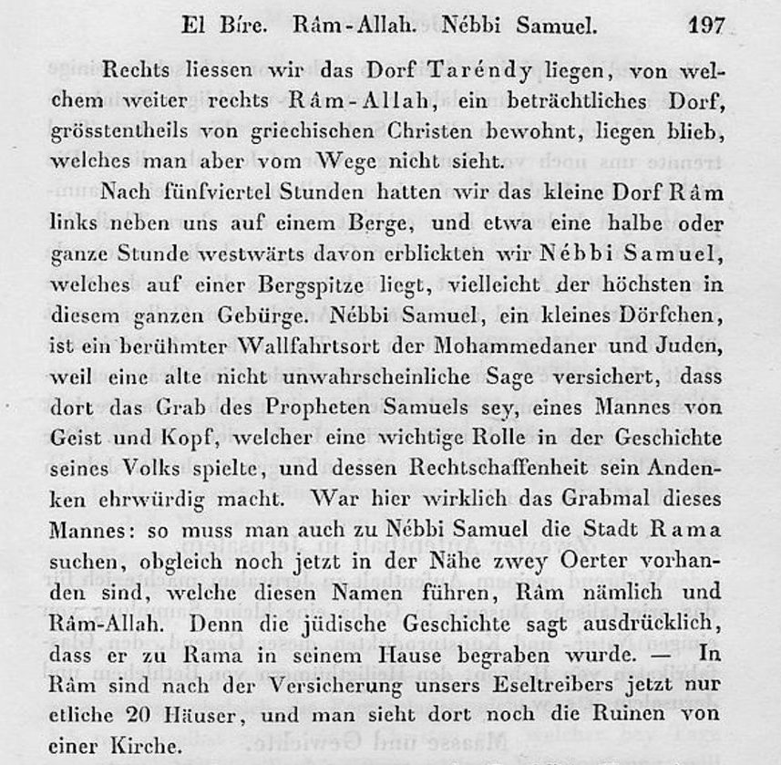
Ulrich Jasper Seetzen on the road north of Jerusalem in 1806: “On our right we left the village of Taréndy, and further right of it Râm-Allah, a considerable village, inhabited mostly by Greek Christians, which cannot be seen from the road.” A little further on he passes al-Rām, the “small village of Râm”, with the ruins of a church.Ulrich Jasper Seetzen, Reisen durch Syrien, Palästina, Phönicien, die Transjordan-Länder, Arabia Petraea und Unter-Aegypten, ed. Fr. Kruse, vol. II (Berlin, 1854), p. 197. Public domain; scan from Heidelberg University Library.
What the scholars say
Azeez Shaheen — Ramallah: Its History and Its Genealogies (كشف النقاب عن الجدود والأنساب في مدينة رام الله)Birzeit University, 1982 · 807 + 77 pp.Every clan and line from the founders, the newcomers and their arrival dates, and the town’s feuds, gathered from the families themselves.
سميح حمودة / Samīḥ Ḥammūdah — رام الله العثمانية: دراسات في تاريخها الاجتماعي، ١٥١٧–١٩١٨(Rām Allāh al-ʻUthmānīyah)Institute for Palestine Studies, Beirut, 2017The scholarly benchmark: court records, tax registers and church archives rebuild Ottoman Ramallah’s land, clans and Christian–Muslim life.
Sameeh Hammoudeh — “New Light on Ramallah’s Origins in the Ottoman Period”Jerusalem Quarterly 59 (2014): 37–53Names the Muslim households already at Ramallah before the Christians came, and shows exactly which registers to read.
Ἀθανάσιος Παπαδόπουλος-Κεραμεύς / Papadopoulos-Kerameus — Ἀνάλεκτα Ἱεροσολυμιτικῆς ΣταχυολογίαςSt Petersburg, 1891–98 · 5 volsPatriarchate documents of 1706 and 1709 paying a priest at Ramallah to teach the children and listing the Orthodox parishes.
سلسلة سجلات المحاكم الشرعية — سجلات محكمة القدس, ed. إبراهيم ربايعة / Ibrāhīm RabāyiʿahIRCICA, Istanbul, 2013–2020 · 37 vols, freeCase-by-case summaries of the Jerusalem court registers, including a 1565 boundary dispute over Ramallah settled by a waqf deed of 1279.
Felicita Tramontana — Passages of Faith: Conversion in Palestinian Villages (17th Century)Harrassowitz, Wiesbaden, 2014The missing seventeenth century: village by village, how Christians of Ramallah, Jifnā, al-Ṭayyiba and their neighbours held their faith or changed it.
سعاد العامري / Suad Amiry — عمارة قرى الكراسي: من تاريخ الإقطاع في ريف فلسطين في القرنين الثامن عشر والتاسع عشر(Throne Village Architecture)Riwaq, Ramallah, 2003The throne villages of the Banī Zayd hills and the palaces of their shaykhly families, the world around Ramallah before the municipality.
We cannot yet name the first families of each clan in the parish records before 1700, and we know little of the town between the boundary case of 1565 and the early 1800s. The written accounts of 1820 do not agree on whose feud it was: Shahin (1982) says the Shakara, Shaheen (1992, 2005) the Sharaka. If your family kept papers from these years, they may hold the answer.
9A weaver at his loom in Ramallah, about 1890–1900.
CHAPTER NINE
Churches, schools and village life1834–1900
The peasants’ revolt of 1834, then a new church, new schools, the first doctors, and how the town lived, worked and kept its feasts.
Eighty percent of the land is now uncultivated. The generations that worked the land have passed away and, alas, the land too is passing away.
Shāhīn, 1982
Where our own line stands here
Link nine of nine · the clans become a townDOCUMENTS
Documented: parish letters, Ottoman school counts, and travellers who name the town and count its houses.
The story
1834DOCUMENTS
The peasants’ revolt of 1834
In 1834 came the largest political event in this hill country between the Ottoman conquest and the Ottoman reforms of the mid-1800s. In April Ibrāhīm Pasha ordered conscription, one man in five. He added a new head tax, the farḍa, and ordered the villages disarmed. The men who rose were the shaykhs, the local chiefs, who had been ordered to enforce it255: Qāsim al-Aḥmad of Jammāʿīn, and with him the shaykhly houses of this district.
In May something like twenty thousand men besieged Jerusalem and took it through a sewer near the
Dung Gate. Ibrāhīm marched up from Jaffa with nine thousand troops. By August the rising was broken at
Dayr al-Ghuṣūn and at Hebron. Qāsim al-Aḥmad fled to Karak, the town our family’s own
tradition comes from. There a seventeen-day siege ended with the place destroyed and Qāsim handed
over256.
The road our family says it came up in the sixteenth century is the road the revolt’s last leader
went down in the nineteenth.
Three shaykhs of the Ramallah highlands were put to death for it: ʿAlī Rabbāḥ and ʿAbd al-Jābir, Barghūthīs of
Banī Zayd, whose seat was Dayr Ghassāna, and Ismāʿīl ibn Simḥān of Rās
Karkar257.
The village of this district that paid for it was a Christian one. Edward Robinson rode into Jifnā
four years later and wrote down what he found: a village entirely Christian, forty-two taxable men,
perhaps two hundred souls, and this sentence.
“After the rebellion of 1834, twenty-six men were taken to Egypt and put into the public works,
whence they have never returned. Not long since, one of their two priests went to Egypt to look
after them, and died there.”258
The version in general circulation says twenty-six men were exiled for their alleged
participation, and that two priests joined them voluntarily. Neither is in Robinson. The
men were put into the public works: taken for forced labour, not sent into exile, and they
never came back. The village had two priests. One of them went to Egypt afterwards, on a
pastoral errand, to look after them, and died there. The mistake grew out of the phrase “one of their
two priests”: somebody read the two and dropped the one.
What happened at Jifnā matters, because it cuts against the easy story. On 31 May, the day after Ibrāhīm
Pasha re-entered Jerusalem, his soldiers attacked Beit Jala, the village our family came up from in
1562. They killed thirty-three Christian men and women, on suspicion of
looting259.
Christian shops in Jerusalem were looted along with Muslim and Jewish ones, in the three days after the city fell.
After the revolt was put down, conscription was extended to Christians as well. The rising of 1834 was a revolt of
tax-farming shaykhs, the chiefs who collected the state’s taxes, and their villages against a
centralising state. Religion was a factor, but it was not the dividing line.260
Apart from a few lines in Shāhīn, Ramallah and al-Bireh appear in no account of that year that we
have found. As we told in “Feuds, a pasha and a faction,” Shāhīn records only that Ibrāhīm Pasha
occupied the town without resistance, and that its hundred and fifty families fed his army’s oxen and
got them back.
Robinson went on to Beit Jala the same year, and found it as it had always been. He writes that it “is inhabited solely by Christians,” and that “the tradition
formerly was current, that no Muhammedan could live in it more than two years.” Pilgrims had already
recorded that tradition in 1496.
The village belonged to the Tekiyeh, “a charitable establishment in Jerusalem, near the Haram.” Its
taxable men numbered five hundred, “indicating a population of about two thousand souls,” and “of
the men, sixty can read.” Under the old government it had paid its land tax to the Greek convents,
which in turn paid each of its five shaykhs a yearly
stipend261.
The town the Kasābra, our forebears’ group at Beit Jala, came up from in the 1550s was still, three centuries later, a Christian town
run by its own shaykhs.
Here is what 1834 did to the country our family lives in. The shaykh al-nāḥiya was the tax-farming lord of a
group of villages, ruling from a fortified house (qaṣr) in his “throne village.” That is the
system 1834 broke. The chronicle shows the Simḥān still acting as district chiefs in the 1840s and 1850s.
The institution itself took another thirty years to die, and paperwork killed it rather than
cannon: the urban advisory councils; the Land Code of 1858 and the Vilayet Law of 1864, the Ottoman laws
that gave land a deed and villages a headman; and the appointed mukhtār, the village headman, who replaced the
shaykh262.
The Qays–Yaman war of the mid-1840s, which we told early, in “Feuds, a pasha and a faction,” because it
belongs with the older feuds, therefore falls in a gap:
after the shaykhs were put to death and before the new government arrived. This is our own reading. No
source we consulted draws the connection, and readers are free to refuse it.
And what it says about Ramallah’s own standing
Ramallah is on no list of throne villages, and it has no shaykhly house
in any of them. The seats of this hill country were Dayr Ghassāna and Abwein for Banī Zayd,
Dayr Ibzīʿ or Rās Karkar for Banī Ḥārith, Qaryat al-ʿInab for Banī Mālik. Ramallah was registered in
1596 not under a tribal nāḥiya, or subdistrict, at all but directly under the nāḥiya of al-Quds, with
its revenue assigned to endowment. It was a waqf village, held by a religious endowment, not a lordship.
But this is an argument from silence, and we say so. Sāmiḥ
Ḥammūdeh, who has read the registers, states plainly that the period between about 1600 and 1800 is
almost entirely undocumented for this town. Ramallah is absent from the lists. That is not the
same as having been proved to be nothing.
Ramallah had no shaykhly house of its own. The chronicle and the British survey of the 1870s both place it in Jabal al-Quds, a district of four shaykhs, two of them next door at al-Bīra and Beitunia. Our town sat between two small seats263.
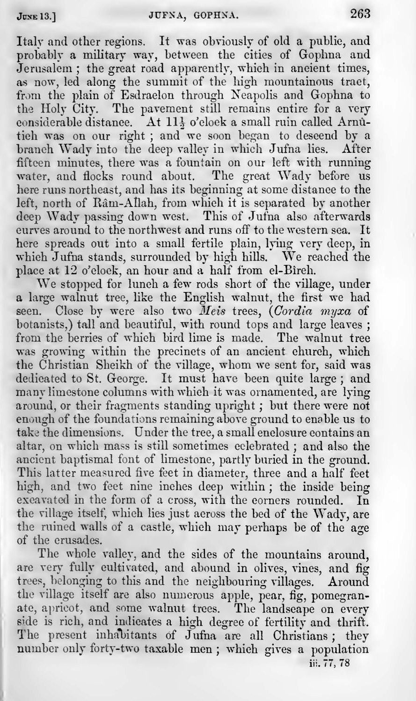
Edward Robinson at Jifnā on 13 June 1838, four years after the revolt. He eats lunch under a walnut tree inside the ruined church that the village’s Christian shaykh tells him was St George’s, where mass is still said now and then, and he ends: “The present inhabitants of Jufna are all Christians; they number only forty-two taxable men.”Edward Robinson and Eli Smith, Biblical Researches in Palestine, p. 263 of a later edition; the margin gives the pages of the first edition (Boston, 1841), vol. III, pp. 77–78. Public domain.
1850DOCUMENTSTWO WITNESSES
The present Greek Orthodox church is built
In the 1800s Ramallah grew into a town of about two thousand people by 1870, as Guérin counted it, and of some four thousand by 1904, as Othman reports, and it built new churches and new schools. The present Greek Orthodox church went up in 1850, on the site of the first church of 1807, which Fr Mitry Elias Kassees had built near the present bus station264. It was built out of an older church. The dressed stone was carried up from the Byzantine church at Khirbet et-Tireh, on the western edge of the town. Guérin, here about 1870, was told the church had been built eighteen years before “partly with the remains of an ancient church of Kharbet et-Thireh.” The excavator of et-Tireh confirms that in 1850 the Orthodox community “robbed out a large number of trimmed stones” to build it265. So the town’s church is built from a church that people here had prayed in a thousand years before our family arrived. In August 2015 the bones from et-Tireh’s crypt were carried to this church in procession and buried there266.
A correction
As it stoodThe present church, built 1852 (as circulated in the family’s materials).
Corrected to1850 is the date carved on the portal — most naturally the start of building — and Shāhīn gives 1850 too. Published sources generally give 1852 for the inauguration. Both can be true.
How it is justifiedA datestone records when a stone was cut, not when a church opened. This book prints 1850 for the building and notes 1852 for the inauguration, rather than claiming to have overturned the published date.
Cadora names the builders. At the inauguration of 1852, under the supervision of Sheikh Muḥammad al-ʿĀmir of al-Bīra, the prefect of the district, who was paid a quarter of a mejīdī a day, “the builders of the church were from the Al-Saah family”267.
The first church did not survive the town’s growth. Its stone read, Cadora says, “This church was erected by the Priest Mitri Elias Qassis in 1807.” The municipality pulled it down, with the monastery’s leave, to make the main square. Cadora gives the year twice and differently: 1951 in one place, and in another “In March of 1952, the Greek Orthodox Church built in 1807 was destroyed to make space for a main square.” That same month the church of 1852 was enlarged for the Orthodox refugees268.
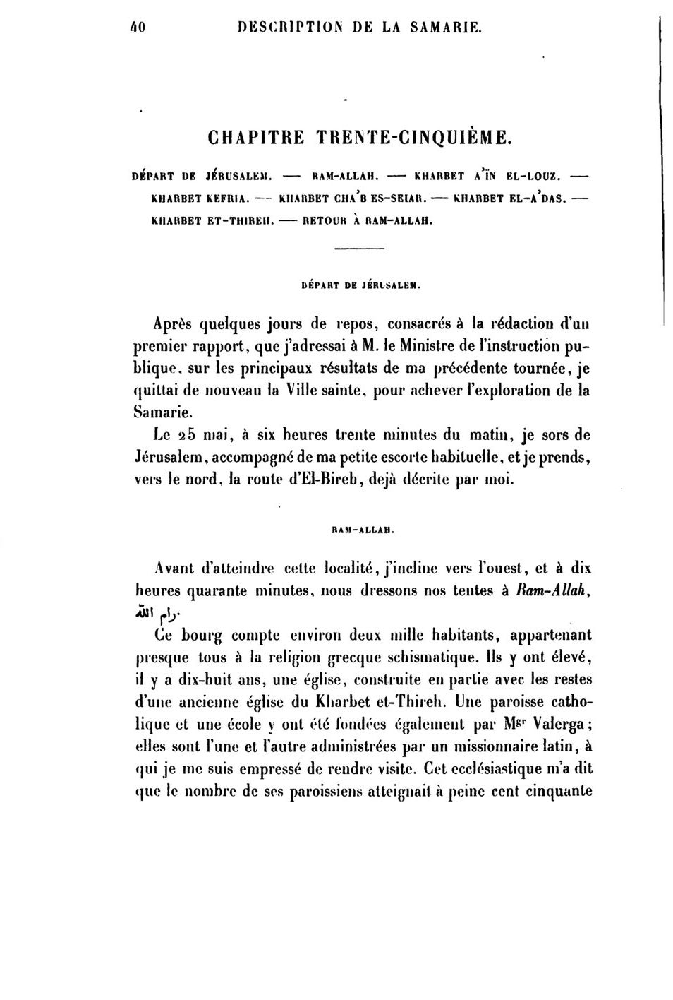
Victor Guérin pitches his tents at Ramallah on 25 May 1870 and writes the name in Arabic beside the French. “This town has about two thousand inhabitants, almost all belonging to the Greek Orthodox religion. Eighteen years ago they built a church there, constructed partly with the remains of an ancient church at Kharbet et-Thireh.” A Latin parish and school had been founded too, and the missionary told him he had barely a hundred and fifty parishioners.Victor Guérin, Description géographique, historique et archéologique de la Palestine: Samarie, vol. II (Paris, 1875), ch. 35, p. 40. Public domain. Guérin writes “grecque schismatique”, the French Catholic term of his day for Orthodox.
1857–1895ATTESTEDTWO WITNESSES
The town gains its churches and schools
In 1869 the Friends opened a school for girls in Ramallah, because Miriam Karam asked them for one; we tell her story in “A teacher and a doctor from outside.” The school opened with twenty girls, and by 1873 the Friends had fifty girls in four day schools. A boarding school, the Girls Training Home, followed in 1889 with fifteen pupils, and the school took the name Friends Girls School in 1925269. That is the shape of the whole century. The missions came to Ramallah because Ramallah’s people asked them for things, and then ran what they were given. Bishop Gobat’s Protestant school came first, about 1848–50, and the Latin school followed in 1857–58. The Sisters of St Joseph opened a girls’ school and a free clinic in 1873. St Andrew’s came in 1887, and Our Lady of the Annunciation in 1895 under Fr Yaʿqūb Mogannam270. Six denominations came in fifty years, to a town of two thousand.
The Friends’ first school was called the Hope School, and it opened in August 1869. Hishmeh, who had been the Joneses’ guide, ran the day schools for seventeen years, and by 1893 there were eight of them. In 1888 the English and American Friends divided their work, and the Americans took Ramallah. After Katie Gabriel the girls’ school was led by Alice Jones from 1906, and then by Mildred White, Victoria Hannush, Sylvia Clark, Anna Langston, Annice Carter and Margaret Paull. It had 150 girls in 1930. In 1966 the two schools had 233 girls and 320 boys271.
The British surveyors who mapped the country about 1875 described the town in a few lines: “A large Christian village, of well-built stone houses … In the village is a Greek church, and on the east a Latin convent and a Protestant schoolhouse, all modern buildings.” They gave al-Bīra about 800 people272.
The first class. Cadora names them. “In 1889, Timothy Hussey opened the Friends Boarding School and the first class included the following: Mary Harb, Nameh Cadora, Zarifeh Audeh, Helena Totah and Nusra Totah, all from Ramallah. It also included Hanneh Jamal, Julia Jamal, Adele Jamal, Jinny Hishmeh and Lamees Nijm from Jerusalem; Hanneh and Afifeh Farajallah from Jaffa; Lydia Demashki and Malakeh Istfan from El-Lod; and Nuzha Rodesly from Beirut.” That is fifteen girls, the same number as the fifteen pupils of 1889273.
An Ottoman count of the schools, 1903. The Ottoman education report of 1321 AH, which al-Dabbāgh quotes, gives each Ramallah school its founding year. The Orthodox Patriarchate’s first primary school was founded in 1190 AH, that is 1776–77, and had 30 boys in 1903; a second, founded in 1220 AH, 1805–06, had 40. The Latin boys’ school dates from 1858–59, “under Father Anṭūn,” with 18 pupils. The Protestant boys’ school dates from 1875–76, with 30. And “the Germans” opened two girls’ schools in 1890–91, with 82 girls. So the parish taught its boys for eighty years before the first mission school came274.
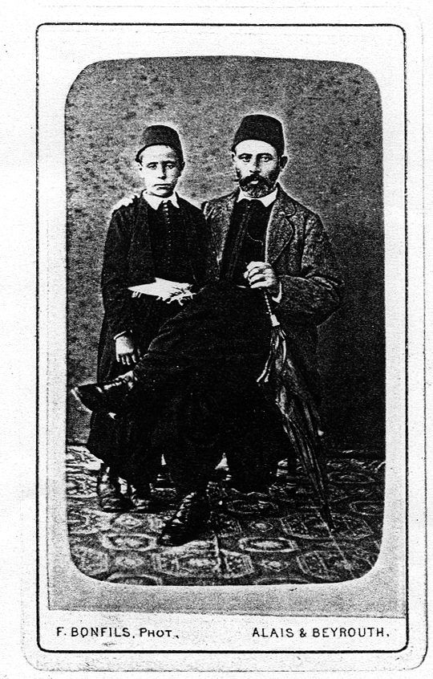
Jacob Hishmeh of Ramallah with his son Shukri, a studio portrait from the 1870s on a card of the Bonfils studio and one of the oldest photographs of Ramallah people.Naseeb Shaheen, A Pictorial History of Ramallah, Part II (Birzeit University Press, 2005), p. 230. Courtesy of the American Federation of Ramallah, Palestine.
The Protestants, from the mission’s own letters. Bishop Gobat wrote in March 1863 that some of Ramallah’s people showed “signs of spiritual life,” but that “their excessive poverty and difficulties of finding the means of earning their livelihood from the moment they disagree with their priests” held them back. That month, on 15 March 1863, the catechist Joseph Abu Girgis settled in the town. In 1863–64 a group of Ramallah families asked to leave “the name of Greeks and to take upon them the name of Evangelical, Protestant Christians.” It was a protest against the Greek hierarchy made by changing church; that reading is ours. In 1877 the Dutch lay evangelist George Nyland wrote that “every evening about twenty or thirty men came to his house to discuss the Bible,” and his wife held a sewing meeting for women each week. In 1878 the mission schools of “Ramallah and outstations” had 137 boys. The Latin mission had come in 1857, under Pierre Cotta275.
When was St Andrew’s built? The sources give two dates. Kaddoura, writing in 1954, says “in 1855, the English missionaries built the church of St. Andrew.” Shāhīn gives 1887, and the translator of Kaddoura’s book gives 1888, without a source. The mission’s letters show no English agent living in Ramallah before March 1863, so 1855 may be the date the mission began rather than the church (our inference). We print both dates, and the church still waits for a diocesan record276.
Figure 9.4 · Timeline
Six denominations in fifty years
The churches and schools of Ramallah, 1776–1925, in the order they came. The Orthodox parish taught its boys for eighty years before the first mission school arrived; then, in half a century, came Protestants, Latins, Friends, the Sisters of St Joseph and the Germans, each because some of the town’s people asked.This chapter’s entry: the Ottoman education report of 1321 AH (1903) as al-Dabbāgh quotes it; the Friends’ and the mission’s own records as van der Leest and Cadora give them; Shāhīn (1982) and Kaddoura (1954) for St Andrew’s.
the 1800sORAL TRADITIONTWO WITNESSES
How the town lived
Before the schools, the clinics and the steamships, Ramallah was a farming village of stone cottages, built wall to wall for safety. Its people spent the summers in the fig groves and the winters around a clay oven. Shāhīn wrote all of it down, and it is the world every emigrant from our town carried in his head.
The guest house. Each clan kept a madafa, a large upper room in the clan leader’s
house. There the men gathered in the evening over coffee to settle disputes, appoint the village
watchman and shepherd, and argue about the harvest. At first the whole town had one. Then there were
two, one for the Hadadeh and one for the Hamayel. Then, as the clans grew, each of the eight had its
own277.
A distinguished guest was given a mensaf. It came in a wooden bowl big enough for fifteen
loaves: bread soaked in lamb broth, a deep layer of rice, and an entire leg of lamb, the
shadah, laid on top for the guest of honour. That was twenty to thirty pounds of meat,
eaten with the hands in three sittings: the men and the guest first, then the older children, then
the women278.
The oven, and the news. Bread was baked in a taboon, a domed clay oven in its own
stone hut, floored with smooth pebbles. It was heated three times a day with dry manure and hay, and
never allowed to go out, because relighting took two days. Five or six families shared one and baked
in turns. In winter the women gathered there for warmth and talk, and the Arabic of Ramallah gained a
phrase for gossip: tawabeen news, “news of the ovens”, what you heard at the
oven279.
The summer house. From the fig harvest on, the whole family moved out to the qaṣr, a
two-storey drystone tower in the groves. Provisions and the drying figs were kept below and the
sleeping quarters above, with a wide window to watch the trees from. A thick belt of thorn branches
around the upper floor served in place of barbed wire280.
Even as late as 1920, the crop gives the scale of that world: 84,000 kilograms of olive oil, a million and a half
kilograms of dried figs, 1.2 million of grapes. Shāhīn, writing in 1982, adds a line that marks his
own generation: “Eighty percent of the land is now uncultivated. The generations that worked the
land have passed away and, alas, the land too is passing away.”
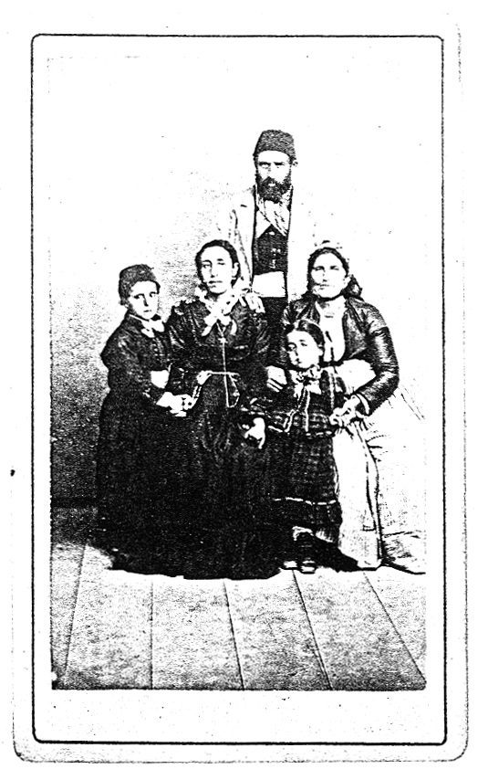
“Jacob Hishmeh his wife and children. Ram Alla. 1877.” The note on the card adds his mother-in-law, “who wears a round tire, like the moon”. The photographer was Alexander Rosenthal of Jerusalem.Naseeb Shaheen, A Pictorial History of Ramallah, Part II (Birzeit University Press, 2005), p. 230. Courtesy of the American Federation of Ramallah, Palestine.
A wedding took a week. Three steps came first: the tulbeh (the formal asking), the
engagement, and the buying of the kissweh, the bride’s clothes, in Jerusalem and Bethlehem.
Then came Monday to Sunday of dancing: the men’s mel‘ab in two facing rows around a fire,
the henna on Saturday, and on Sunday the zaffa, the procession to the church. The bride rode
on a horse holding a sword in both hands, to signify that the family would defend its honour with
one281.
The Orthodox church forbade marriage inside fourth or fifth cousins, so families looked a little
further out. Three or four families would arrange a ring: a son of A marrying a daughter of B, a son
of B a daughter of C, a son of C a daughter of A. In that way the clans kept marrying among
themselves, without breaking the church’s rule.
Each clan had its craft. Cadora gives the town’s trades by family. Weaving was the speciality of the Sharaqa, who wove woollen and striped cloaks. Shoemaking belonged to the Hishmeh and the ʿAudeh. “Construction was the domain of the Saah clan.” The women made the clay jars, stoves and hearths, the straw trays, and the cross-stitch embroidery282.
A weaver at his loom in Ramallah, about 1890–1900. Elihu Grant counted about twelve weavers in the town at the turn of the century.Naseeb Shaheen, A Pictorial History of Ramallah, Part II (Birzeit University Press, 2005), p. 237. Courtesy of the American Federation of Ramallah, Palestine.
A wedding in Cadora’s day. Boys married at about fourteen. The bride’s father received a purse, which in Cadora’s example was £10 for the mother’s dress and £50 for the trousseau. When the party came back from Jerusalem with the wedding clothes, the women met it with a “giraffe”: a cross of sticks dressed as a bride, with a loaf for a face. “During the wedding ceremony in church, a woman would stand behind the groom with a needle in her hand. She would prick his suit several times to symbolize wishes for fertility.” At the groom’s door the bride pressed dough with yeast onto the lintel with a green leaf. In the guesthouse the gifts were called out aloud, giver by giver283.
Two firsts of the kitchen and the press. “In 1902, Mr. Nicola Khoury of Nazareth introduced the first mechanical mill in Ramallah.” And “in 1928, Mr. Marshoud Eadeh established the first factory to distill Arak and called it the Ramallah Arak Factory”284.
What the gazetteers remember. Al-Dabbāgh, writing from Kaddoura, says “Ramallah’s women became famous for fine embroidery,” and Sharab says the same. Sharab adds what the emigrants’ money did: “industry and trade grew … as emigrants send money to their families, which shaped the town’s building.” By 1953 the town had three modern olive presses285.
Figure 9.7 · Chart
What the land gave
The farming year that every emigrant carried in his head: summers in the fig groves, winters round the oven, and in 1920 a crop counted in millions of kilograms.Shāhīn (1982), the chapters on village life and on the crops of 1920.
the church yearORAL TRADITIONTWO WITNESSES
The festivals of the church year
Ramallah’s calendar ran on the Julian reckoning, the older calendar kept by the Greek Orthodox church. There were three fasts a year: Lent, forty-eight days; the fortnight of Saint Mary in August; and forty days before Christmas.
Palm Sunday belonged to the young. The girls of the town, between fifteen and twenty-five,
put on their best embroidered dresses, or borrowed their mothers’ and aunts’. They went to the
threshing floor and formed two rows of fifteen to twenty, twenty metres apart. Then they danced
toward each other and back, singing, for most of the day, with the whole town
watching286. Shāhīn records that it is the memory Ramallah women in America keep
longest.
Holy Light Saturday belonged to the whole town. Three or four men walked to the Church of
the Holy Sepulchre in Jerusalem, lit a candle at the flame, sealed it in a lantern and carried it
back on foot. The head priest, the clergy, the choir and most of the town waited at the edge of
Ramallah with unlit candles. When the light arrived the church bells rang and everyone lit from it,
and the young men led the procession in a chant with rhyme and metre. Easter itself, el-Hajmeh,
“the sudden rising,” began at one in the morning and ran till four or five287.
Im ʿIsa Totah of the Sharaka clan, about 1895, aged perhaps twenty to twenty-five.Naseeb Shaheen, A Pictorial History of Ramallah, Part II (Birzeit University Press, 2005), p. 237. Courtesy of the American Federation of Ramallah, Palestine.
Every day of Holy Week had its own name, translated literally from the Arabic: Long Monday,
God’s Tuesday, Job’s Wednesday, Washing-of-the-Feet Thursday, Sad Friday, Holy Light Saturday, and
Easter Sunday, the great feast of joy. Before Easter the town also made a deliberate effort to
reconcile anyone who had quarrelled during the year, a custom Shāhīn notes was still kept when he
wrote.
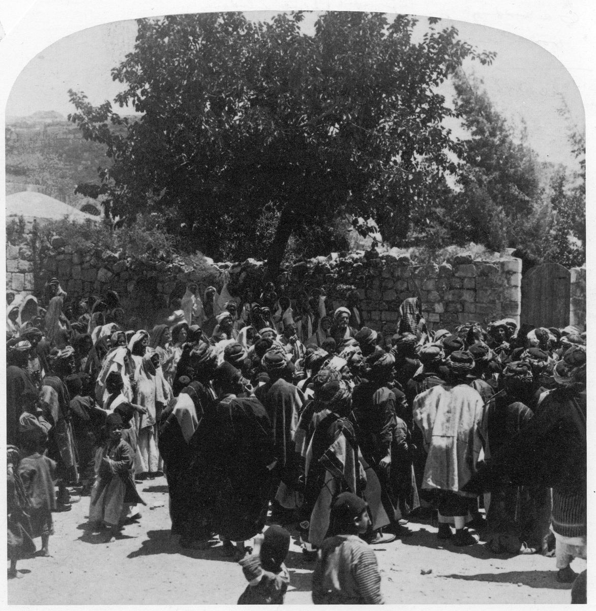
A bride arrives at the house of the groom, Ramallah, 1900. Shaheen reads her dark coat as the red aṭlas of the groom’s Qaysī side; she carries a sword before her.Naseeb Shaheen, A Pictorial History of Ramallah, Part II (Birzeit University Press, 2005), p. 201. Courtesy of the American Federation of Ramallah, Palestine.
1869 → 1916ATTESTEDTWO WITNESSES
A teacher and a doctor from outside
Two people from outside our town gave it a school for girls and a doctor: Miriam Karam, who asked for the school and taught in it, and Dr Philip Maʿlouf, for years the only doctor in the district.
In 1869 Miriam Karam, fifteen, whose family had lived in Ramallah for some years but were not
from here, stopped Eli and Sybil Jones in a narrow street and asked for a school for girls. They asked who would
teach it. “I will,” she said. She could, because she had been schooled at the Deaconesses’
school in Jerusalem and came from a family of teachers.
The school opened in 1869 with twenty girls, and by 1873 there were fifty girls in the Friends’
four day schools. A boarding school, the Girls Training Home, was founded beside it in 1889, and the school took the name Friends Girls School in 1925. Miriam herself
taught for four years, then married and left, and the school she started is still open288. Katie
Gabriel, who was Lebanese, ran the boarding school from 1889 and gave the Friends forty years.
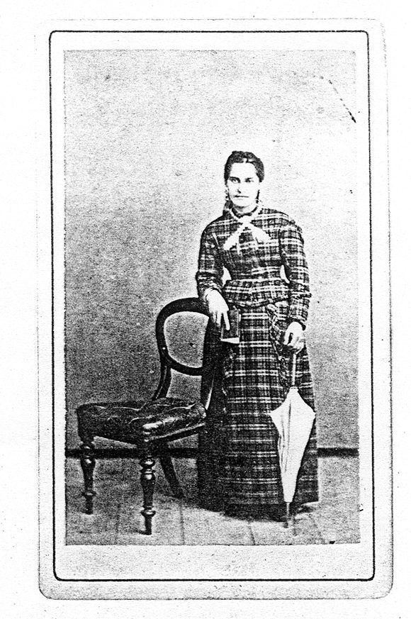
“Teacher at Ram Alla”: Katie Gabriel, the Maʿallimeh Catibah, in 1877. She came from Souk el-Gharb in Mount Lebanon and served the Friends for more than forty-five years.Naseeb Shaheen, A Pictorial History of Ramallah, Part II (Birzeit University Press, 2005), p. 231. Courtesy of the American Federation of Ramallah, Palestine.
Dr Philip Asʿad Maʿlouf, a Lebanese, came from Beirut in 1891 and opened his own clinic in 1895.
For years he was the only doctor in the entire Ramallah district, and he covered the whole
district alone for twenty-five years. The town called him Hakeem Abu Iskandar, “Doctor,
father of Iskandar”; hakeem means doctor.
In 1906 Dr Maʿlouf pulled a twelve-year-old boy through forty days of typhoid fever. The boy was
ʿAzīz Shāhīn, who lived to write our town’s history. Maʿlouf himself died in the typhus of
1916, while treating it. He used to say that a doctor got no credit in Ramallah: people waited until a man was nearly
dead to call him, and then blamed him if the man died289.
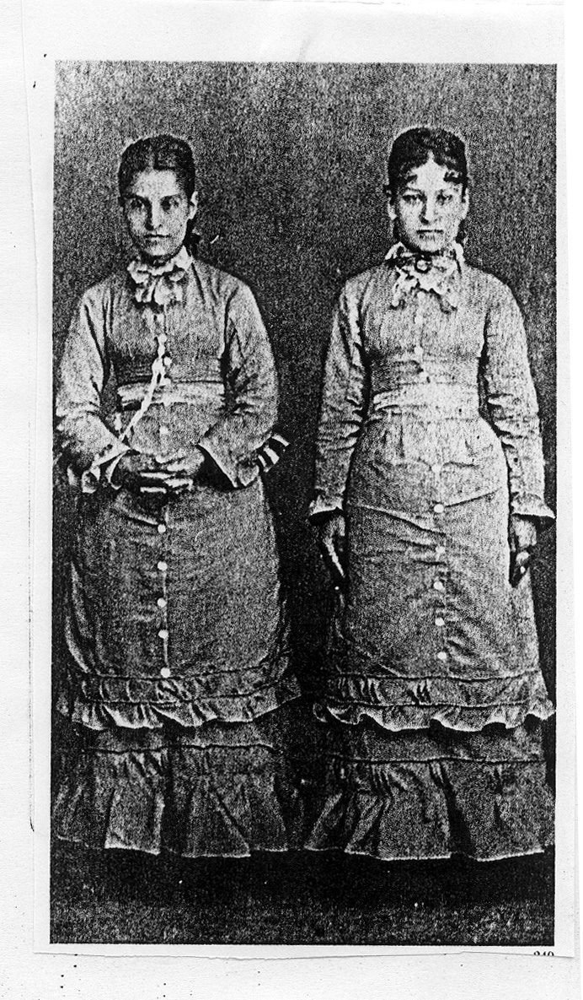
“Cateby and Marsha. Ram Allah. 1879.” Marsha came from Lebanon with Katie Gabriel; both wear the dress of the girls of the Training Home.Naseeb Shaheen, A Pictorial History of Ramallah, Part II (Birzeit University Press, 2005), p. 232. Courtesy of the American Federation of Ramallah, Palestine.
1883ATTESTED
The first doctors
Ramallah’s first doctor was a foreigner at the Friends clinic in 1883: Dr George Hassenauer, whom the town renamed Dr Ḥassan Nawwār because it could not say his name290. Its second came from Beirut: from 1891 Dr Philip Asʿad Maʿlouf, a Lebanese, whose story we tell in “A teacher and a doctor from outside.” Before them both there were midwives, bloodletting, hot-oil massage and charms, and a three-hour donkey ride to Jerusalem.
Cadora fills in the rest of the picture. “The butcher pulled teeth,” and the trip to the doctors of Jerusalem took “three hours on donkey.” The Ḥaddādīn buried their dead in their own small cemetery, Qumet Ḥarīz, and the other clans in their quarters. In 1928 the elders laid a fee on every person to buy a common cemetery outside the town, with a part for each church. Malaria came from the marshes of Wādī al-Dilb near the spring of ʿAyn Qīniya, and an old sheikh told Cadora that Qīniya had once been a large village until malaria emptied it291.
about 1900ORAL TRADITION
What a day was worth
Shāhīn preserves the town’s whole price system. It shows what every choice in our story cost, including the choice to leave.
Figure 9.12 · Chart
The ladder of a day’s work, about 1900–1903
Daily wages in piasters, when a piaster was worth five US cents. Note where the top of the ladder is: a mason earned 23 piasters, one silver majeedy — nearly four times a labourer. This is why Ramallah men learned to cut and set stone, why they worked the monasteries of Jerusalem, and why they, of all the villages on this ridge, could afford the passage to America.Shāhīn (1982), “Money, Weights, and Measures.”
THE MONEY, ABOUT 1900 — “the piaster was worth five cents (U.S.)”
Coin
Value
sahtoot (½ kabak)
2½ baras
kabak
5 baras
matleek / ashara
10 baras
piaster
40 baras
bishlek
3 piasters
¼ majeedy
5¾ piasters
½ majeedy
11½ piasters
majeedy (silver)
23 piasters
French franc (gold)
109 piasters
Turkish lira (gold)
125 piasters
British guinea (gold)
137 piasters
Wages: a labourer 6 piasters a day, a boy 4, a craftsman 15–20, a mason 23 — one silver majeedy. A doctor’s visit 6–10; plowing hire 20 a day with a mule, 25 with oxen; the carriage to Jerusalem, 6. The Christian head-tax, one to two majeedy a year, ends about 1905–10 — after which army redemption costs 50 French gold francs, “beyond the reach of most persons.” One more reason to sail. — Shāhīn (1982), “Money, Weights, and Measures.”
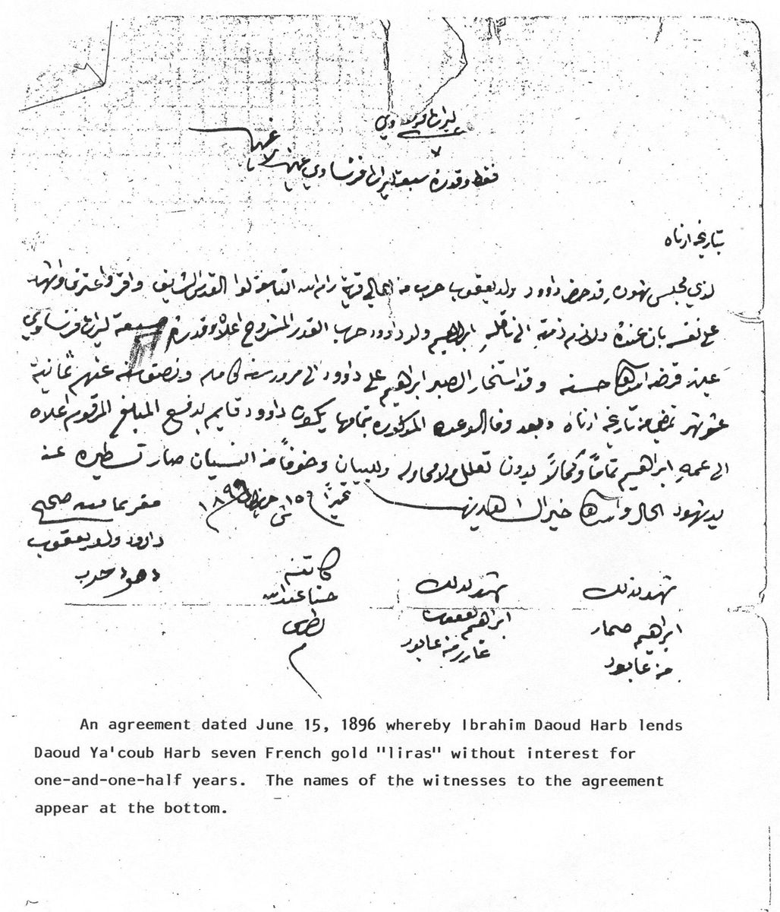
An agreement of 15 June 1896: Ibrahim Daoud Harb lends Daoud Yaʿcoub Harb seven French gold liras, without interest, for a year and a half. The witnesses sign at the foot.Naseeb Shaheen, A Pictorial History of Ramallah, Part II (Birzeit University Press, 2005), p. 370. Courtesy of the American Federation of Ramallah, Palestine.
The evidenceThe sources for this chapter, and how we read them
19th centuryDOCUMENTS
The twin town and the Rafeedie family
One and a half kilometres from the centre of Ramallah there is a second town, al-Bireh. It is older than ours, larger than ours until our families came up the ridge in 1562 (after that, the registers count Ramallah at about twice its size), and Muslim where ours is Christian. From some point in the nineteenth century a Christian family has lived there, the Rafeedie family (al-Rafīdī). They came to al-Bireh, Sāmiḥ Ḥammūdeh tells us, from the village of Rafīdiyā in the Nablus district, and their name is simply that village worn into a surname292. They belong in our story, and not only as neighbours.
The Rafeedie tell our own story back to us, in another town’s voice. Rafīdiyā’s account
of itself goes like this. A Christian family of Ghassanid descent fled Karak to escape a forced
marriage between one of their women, Rafīd, and a Muslim prince. They settled beside Nablus and
divided the land and the water with the Muslim family already
there293.
Set that beside our own story of Ghassān and of Karak, told in the chapters “Ghassān and a
Christian countryside” and “From Karak to Ramallah”. Ghassanid
Christians. Karak. A forced marriage refused. A flight north. A new village on a hill.
It is the Ramallah story, with the names changed.
The parallel has a limit. The Rafīdiyā tradition dates the flight to the seventeenth century. Yet
the Ottoman defter, the tax register, of 1596 already records eighty-five Christian households at
Rafīdiyā, beside nine Muslim households and six bachelors. The Christian community was large and
long-established before the date the story gives for its founding. So the tradition cannot be a
literal account of a founding294.
What is it, then? Our answer is a reading, not a finding: it is a form. It is a way the
Christian communities of these hills, Ramallah, Rafīdiyā and others, have told their own origins for
a very long time. Ghassān for descent, Karak for the road, a refused marriage for the reason, a hill
for the destination.
Two towns forty kilometres apart, that never compared notes, tell the same shape of story. That is
not evidence that the events happened twice. It is evidence about how Palestinian Christians remember
themselves.
And a form is not a lie. It is what a people uses to carry a truth it cannot document. Here the
truth is this: we are old here, we are Christian here, and we came to this hill because staying
where we were had become impossible. Every part of that is true of our family, whether or not
Rāshid ever stood at a ford.
The ground under our neighbours is not a tradition at all. Al-Bireh has been lived in
without a break for so long that the shape of the medieval town can still be read in the modern
street plan. Denys Pringle, the Crusader archaeologist who excavated it, writes that the general
layout of medieval al-Bireh remains fairly clear in the twentieth-century street pattern, despite
over eight centuries of continuous habitation295.
The Frankish, or Crusader, new town there was Magna Mahumeria, which we met in chapter six. Its
charter of 1156 lists ninety-two burgesses, its townsmen, by name. Its parish church of St Mary is in
the record by 1128, and the German pilgrim Theodoric described it in
1172296.
The old buildings are counted too. Riwaq’s registry of historic buildings, a Palestinian survey
that walked 422 localities between 1994 and 2007 and recorded 50,320 buildings, lists 381
historic buildings at Ramallah, the most in the governorate, and 168 at al-Bireh. The al-Bireh list is dominated by the houses of al-Qarʿān, al-Ṭawīl, al-Ḥamāyil and
al-Qarāqira. These are the same families Ḥammūdeh names, arrived at independently, building by
building297.
Underneath all of it, inside the modern streets, lies Khirbet Raddana, the farming village of the
early Iron Age (Iron I) that we mapped in chapter two. It was dug in salvage seasons between 1969 and
1974, and al-Bireh’s own growth has since built over it. Iron Age village, Frankish town, Ayyubid
coins in a cistern, Ottoman quarter, modern city: one continuous street plan.
The two towns are recorded together twenty-one years before the Christian families were counted
here. A Jerusalem court record of 1541 has Ḥasan bin ʿAlī of the village of Ramallah doing
business with men from the village of al-Bireh298.
So before there was a Christian Ramallah at all, the Muslim households on this hill were already
trading with the town next door. The relationship is older than the Christian settlement.
And the thing the numbers say, which is the opposite of ours
Al-Bireh’s Christians were always a small minority in a large Muslim town —
none at all in the register of 1596 (45 households, all Muslim); 72 of 1,479 in 1922;
248 of 2,292 in 1931; 280 of 2,920 in 1945. Never more than about a ninth of the
town299.
That is the exact inverse of Ramallah, which was 2,972 Christian out of 3,104 in 1922.
Two towns whose streets run into one another, with opposite religious arithmetic, and no record
of that ever having been the point.
We will not claim them as our own. The Rafeedie are an
al-Bireh family, not a Ramallah clan; in America they have their own society, organised around
descent from their own town, as the Federation is organised around descent from ours. They are
not part of this genealogy.They are part of this history — which is a different claim,
and the truer one.
Jumping ahead a century, one Rafeedie we can name from the record is Wissām Rafeedie, journalist, of al-Bireh. He was
arrested at his home on 11 August 1994 and held under administrative detention orders, renewed for
twenty-one months, until the United Nations Working Group on Arbitrary Detention declared the
detention arbitrary in 1996300.
He wrote a novel in prison on Red Cross booklets, and it was confiscated. He got a second copy out
in miniature handwriting hidden in pill capsules, and it was printed in Ramallah, in
1998301.
An al-Bireh man’s book, printed in our town. That is what the bond between these two places looks
like, and it did not need a shared family tree.
Two things this book was offered and would not print
Not printedThat Judge Edward Rafeedie of the U.S. District Court was of the al-Bīra family. He was born in Orange, New Jersey, on 6 January 1929 to Palestinian immigrants, and no source names their town. The surname is a nisba from Rafīdiyā and is carried by families in several places. A famous name is not evidence.
Not printedThat the Rafeedie are “Nestorian.” One Arabic wiki says so; al-Bīra’s Christians in the Mandate censuses are overwhelmingly Greek Orthodox, and there is no Church of the East community in this district. The claim has no source that will bear weight.
How it is justifiedThe same rule this book applies to its own family: a claim is printed at the strength of the document behind it, and a claim with no document is named as one. The Rafeedie deserve the same care as the Ḥaddādīn — which means not decorating them either.
One dated trace of the family at al-Bīra survives. Shāhīn lists, from the Ramallah population register, Ilyās Yaʿqūb Nazzāl and his wife Salmā, daughter of Sālim al-Rafīdī of al-Bīra (الياس يعقوب نزال وزوجته سلمى بنت سالم الرفيدي من البيرة), and his English edition dates that household to “about 1890 or 1895.” So a Sālim al-Rafīdī was at al-Bīra by about 1890. Where his family came from we still do not know302.
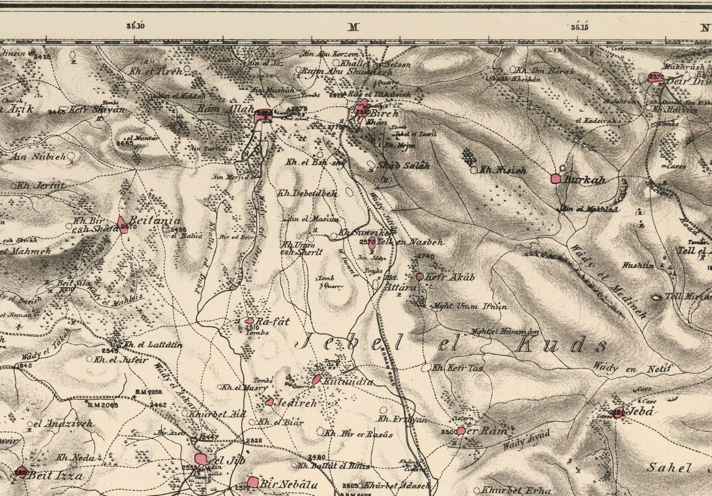
Râm Allah and el Bîreh, as the British surveyors wrote them, side by side on the road north from Jerusalem. The sheet was surveyed in 1878 and published in 1880.Palestine Exploration Fund, Survey of Western Palestine, 1 inch to the mile, sheet XVII (London, 1880), detail. Public domain.
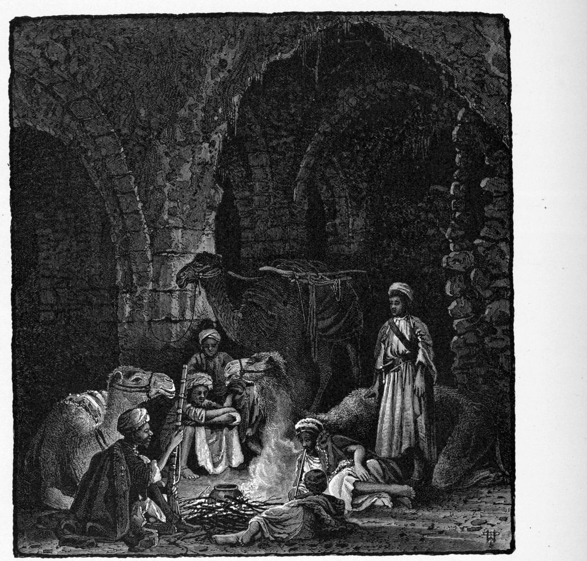
“A halt for the night in the khan of el Bîreh”: travellers and their camels round a fire under the vaults of al-Bīra’s caravan inn, which stood by the town’s main spring.Picturesque Palestine, Sinai and Egypt, ed. Charles W. Wilson (London, 1880–84), engraving. Public domain.
What the scholars say
Azeez Shaheen — Ramallah: Its History and Its Genealogies (كشف النقاب عن الجدود والأنساب في مدينة رام الله)Birzeit University, 1982 · 807 + 77 pp.The town’s own record of its churches, schools, first doctors, guest houses, weddings and feasts, set down by a son of Ramallah.
Edward Robinson & Eli Smith — Biblical Researches in Palestine, vols. II and IIICrocker & Brewster, Boston, 1841Robinson’s 1838 visit is the earliest close description of Ram-Allah and its Greek-rite Christians, thirty years before the Quaker mission.
Beshara Doumani — Rediscovering Palestine: Merchants and Peasants in Jabal Nablus, 1700–1900University of California Press, Berkeley, 1995The model study of Ottoman Palestinian rural society, merchants, peasants and notable houses, reaching into the Banī Zayd hills around Ramallah.
سميح حمودة / Samīḥ Ḥammūdah — رام الله العثمانية: دراسات في تاريخها الاجتماعي، ١٥١٧–١٩١٨(Rām Allāh al-ʻUthmānīyah)Institute for Palestine Studies, Beirut, 2017Ottoman Ramallah’s social history to 1918, from court records and church archives, reaching into the century of the new churches and schools.
نظمي الجعبة وخلدون بشارة / Nazmi al-Jubeh & Khaldun Bshara — رام الله: عمارة وتاريخ(Ramallah: Architecture and History)Riwaq, Ramallah, 2001The definitive study of the old town’s buildings, house by house, with archival photographs, measured plans and an urban history.
Riwaq Registry of Historic Buildings in Palestine — Ramallah & al-Bireh districtRiwaq, Ramallah · survey begun 1994 · onlineA searchable record of the old town’s courtyard houses, churches and Ottoman core, with a report for each building.
Lisa Taraki — “Ordinary Lives: A Small-town Middle Class at the Turn of the Twentieth Century”Jerusalem Quarterly 83 (2020): 79–105How mission schooling, the pilgrim trade and emigration made a small-town middle class, built from family histories, diaries and photographs.
Beyond Shāhīn’s few lines, we have found no account of 1834 that
names Ramallah or al-Bireh. And the two centuries from about 1600 to 1800 are still almost entirely
undocumented for our town. Papers or memories from those years, in any family, could help fill the
gap.
Ḥammūdeh gives no source for the Rafeedie’s arrival from
Rafīdiyā, so we do not yet know where his account comes from. No source names the town of Judge
Edward Rafeedie’s parents. And no diocesan record has yet been found for St Andrew’s of 1887.
Readers who hold any of these answers can help us complete the story.
10Ramallah from the south, about 1910: the town on its hill above terraced fields and vineyards.
CHAPTER TEN
Emigration and the Mandate1901–1947
The first families sail for America, Ramallah becomes a town with a council, and war, typhus, revolt and elections follow.
Till 1902 there had been no government rule in the villages and small towns of Palestine.
Shāhīn
Where our own line stands here
Link nine of nine · the town and its emigrantsDOCUMENTS
Documented the whole way, and now within living memory.
The story
1901ORAL TRADITIONTWO WITNESSES
The first four sail for America
As the twentieth century opened, our town still lived under Ottoman rule. In 1901, by Shāhīn’s account, the first Ramallah men began to emigrate to the United States303. Saleh Abdel Jawad names another man, Yūsuf ʿOdeh, brother of the first mayor, as “the first emigrant from Ramallah,” without a year, and notes that some whole families left before the war (Jerusalem Quarterly 36, p. 30). The same year the Turkish carriage road from Jerusalem to Nablus was finished, and the Friends Boys School opened, in rented rooms; it closed in the war and reopened in 1919 in the building it still uses. The old ridge road became a modern road, and the first men left on it.
Leaving has its own family tree, and ʿAzīz Shāhīn, who wrote our town’s great history in 1982,
sets it down name by name. The first to leave at all was Ibrahim of the Hassaan clan, in the
seventeenth century. He went to ʿIsifyā near Haifa, and four hundred of his descendants live there
today.
The first to go abroad was Hanna Ibrahim Saah, in 1858, to Constantinople. The first to go west
went to England, in 1895. And in 1898 came the first cheque the town had ever seen, sent from
Brazil: 100 French gold francs, “and it created quite a sensation.”
The early emigrants were men over thirty who meant to come home, and almost all of them did.
Their children did not. That one fact tells much of the story of our town’s people ever
since.
Figure 10.1 · Map
Where Ramallah went, 1901 onward
The cities our people went to, weighted by the family’s own record: Detroit above all, then Jacksonville, New York and San Francisco. Nobody has ever made a full count of this diaspora, our community abroad.Shāhīn (1982) for the start date and the named firsts; the Federation’s conventions for the cities.
Cadora, writing in 1954, tells the first departures more fully than Shāhīn. Ḥannā Ibrāhīm al-Saah sold Holy Land goods, and in 1858 he left with the Greek pilgrims for Istanbul, where he opened a shop. He went back and forth for years, grew rich, and died there without heirs, leaving his fortune to the Patriarchate of the Phanar. Cadora’s Saah chart marks a Ḥannā who “Died in Constantinople.” The idea of America, Cadora writes, came in 1889, when the Friends brought masons from Bethlehem to build the girls’ school, and the Ramallah labourers heard them talk of the money to be made there. Joseph ʿAudeh then left for America in 1895. Shāhīn has the first to go west leaving in 1895 for England; we print both304.
The first money home, dated twice. Shāhīn’s first cheque came from Brazil in 1898, in French gold francs. Cadora names the sender and dates it differently: “In 1900, Issa Eadeh and Hanna Hishmeh left for Brazil where they remained for one year and from which Issa Eadeh sent 100 golden sterling to his father. This was the first money order transfer to Ramallah, and subsequently, delegations of Ramallah and El-Bireh went to his father to congratulate him.” We print both, by name305.
The passport picture of Ibrahim Shihadeh Kandah of the Ibrahim clan, 1912. He served in the United States army in the First World War and came home in 1919.Naseeb Shaheen, A Pictorial History of Ramallah, Part II (Birzeit University Press, 2005), p. 251. Courtesy of the American Federation of Ramallah, Palestine.Nicola and Badiʿa Salameh with their five children in Colombia, about 1921. Nicola had gone out about 1903 and came home in 1909 to marry.Naseeb Shaheen, A Pictorial History of Ramallah, Part II (Birzeit University Press, 2005), p. 111. Courtesy of the American Federation of Ramallah, Palestine.
1902 · 1908DOCUMENTSTWO WITNESSES
Ramallah becomes a city, clan by clan
In 1902 Ramallah was made a district seat, the centre of government for thirty villages. As Shāhīn puts it, “Till 1902 there had been no government rule in the villages and small towns of Palestine.”306 In 1908, the municipality’s own date, Ramallah was incorporated as a city, with Elias ʿAudi as its first mayor; Saleh Abdel Jawad gives April 1910 for his taking office (Jerusalem Quarterly 36, p. 30). Its council had one representative from each clan. The ḥamūla, or clan, structure of 1562 had become, quite literally, the town’s constitution.
Figure 10.4 · Map
The town, as Shāhīn drew it
Central Ramallah after the sketch map in Shāhīn’s own book. The dashed ring is the original village: the eight clans’ quarters and their guest houses, all within walking distance. Everything numbered outside it was built later: the church of 1850, the Catholic mission of 1857, the Friends schools, the Meetinghouse of 1910, and the hospital the diaspora paid for in 1963. Note the two roads south. One is the old track from El Sharafa, where the town said goodbye to its emigrants. The other is the carriage road of 1901 through El Bireh, which replaced it.
Cadora, who later sat in the mayor’s chair himself, gives the day: the municipality was “established on April 1, 1908,” and Elias ʿAudeh was its first mayor, from 1908 to 1921307.
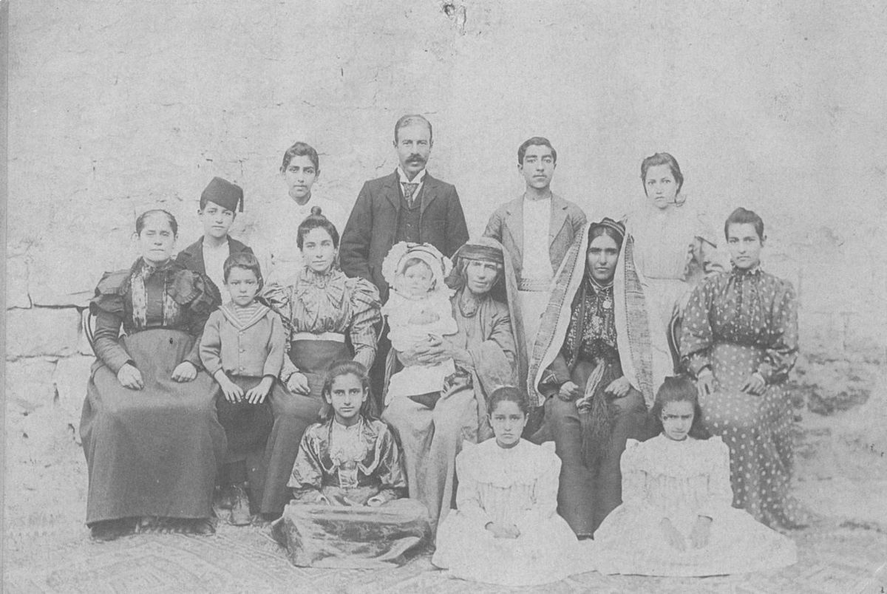
The family of Elias ʿAudi, about 1905. He stands at the centre rear and was the first mayor of Ramallah, from the founding of the municipality until 1921. The family home was bulldozed by night in the spring of 2001.Naseeb Shaheen, A Pictorial History of Ramallah, Part II (Birzeit University Press, 2005), p. 243. Courtesy of the American Federation of Ramallah, Palestine.
The first council at work. Cadora copied entries from the Ottoman minute book. In April 1910 the council set 889 piasters a month to sweep the market and light it with lanterns. In 1911 “Issa Bin Abdallah al Balat from Ramallah was caught cheating in the weight of oil, using a faulty pot. The pot was confiscated, and he was fined 50 piasters in cash.” Yūsuf bin ʿAbdallah Rizqallah was fined fifteen piasters for letting his sheep among the trees, and in 1912 the council spent 150 piasters to decorate the town for the Sultan’s coronation. Its members were ʿAbdallah ʿĪsā al-Bateh, Manṣūr Abū Khalaf, Elias Saba Shatara, Bāsil Ḥannā Ḥarb, Yaʿqūb Misleh, Khalīl Yaʿqūb Ḥarb, Sālem Mughannam and Yaʿqūb Ibrāhīm ʿAwad, with Elias ʿAudeh in the chair308.
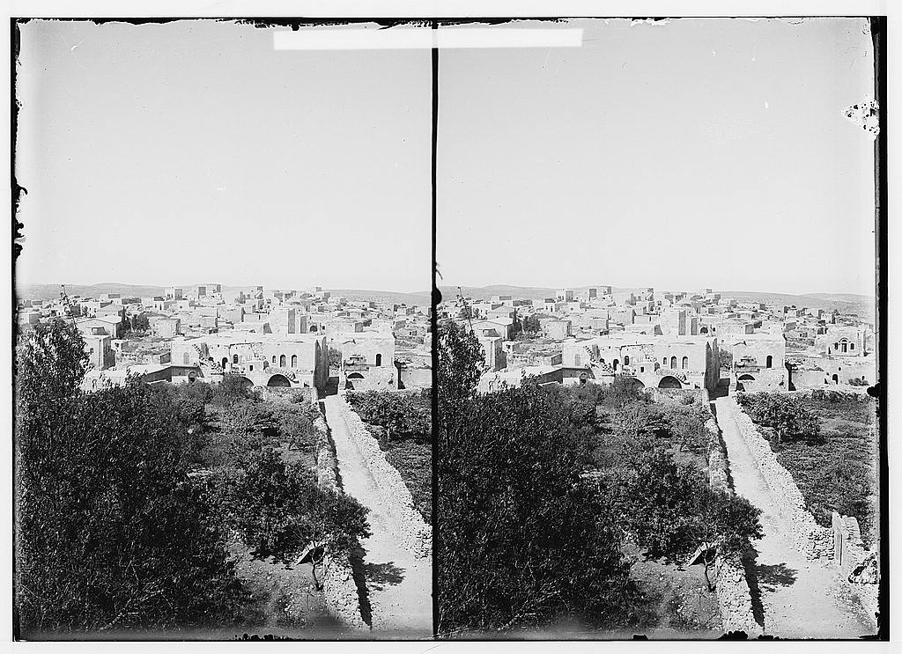
Ramallah from the north, about 1900–1920.American Colony Photo Department. Library of Congress, Prints & Photographs Division, loc.gov/item/2019692544. No known restrictions on publication (Library of Congress).
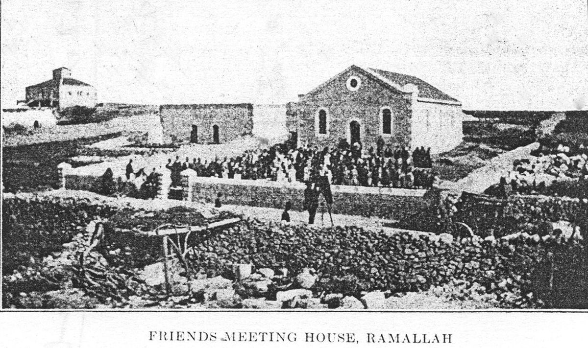
The Friends Meeting House on Main Street, about 1912, with the congregation outside. Vines still grew where office buildings stand today.Naseeb Shaheen, A Pictorial History of Ramallah, Part II (Birzeit University Press, 2005), p. 244. Courtesy of the American Federation of Ramallah, Palestine.
12 June 1905ORAL TRADITION
The last big fight
On 12 June 1905 a wedding procession went through the narrow streets, and a quarrel broke out over clan songs. It became a three-hour stone-throwing battle between the Hadadeh and the Hamayel, fought from the rooftops, with the women refilling the trays of stones. Nobody was killed309. The whole town was jailed together in Jerusalem, and released together when the church pleaded for it. The 1905 census counts 3,214 people in the eight clans, and every one of them seems to have been on a roof.
Cadora dates the same fight a year earlier. “In 1904, a dispute broke out between the Haddadin clan and the other clans because of the ululations and chants that the clans made during a wedding on their way to church, passing through the Haddadin quarter.” Men on both sides took to the roofs, it “lasted all Sunday afternoon,” and police came from Jerusalem. Shāhīn has 12 June 1905. We print both310.
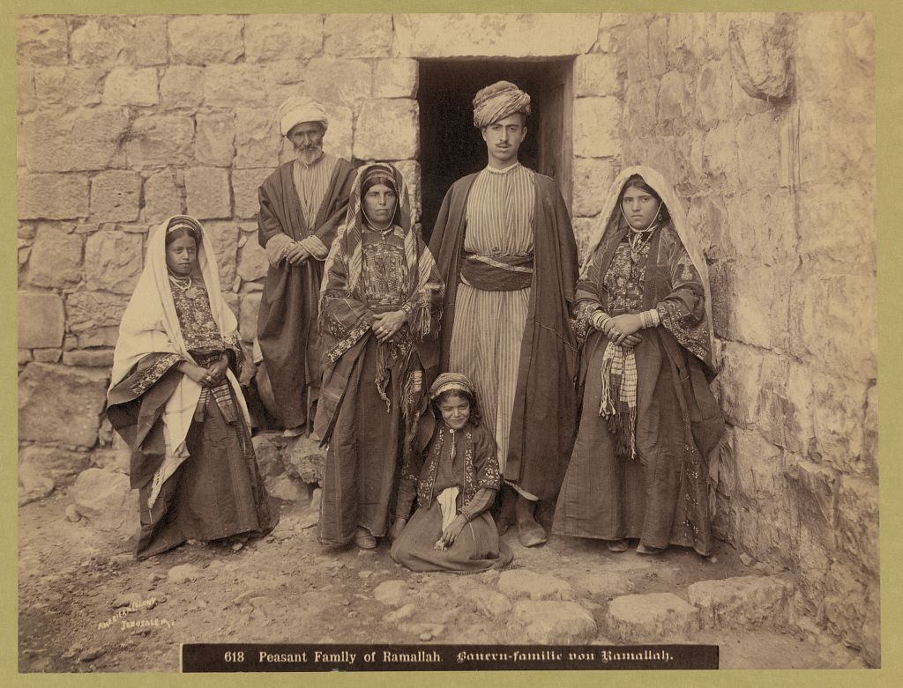
A Ramallah family outside their stone house, about 1900–1910.American Colony Photo Department; the original caption reads “Peasant family of Ramallah.” Library of Congress, Prints & Photographs Division, loc.gov/item/2007675853. No known restrictions on publication (Library of Congress).Ramallah from the south, about 1910: the town on its hill above terraced fields and vineyards.Naseeb Shaheen, A Pictorial History of Ramallah, Part II (Birzeit University Press, 2005), p. 171. Courtesy of the American Federation of Ramallah, Palestine.
1914–1918ORAL TRADITIONTWO WITNESSES
The war, the locusts, the typhus
About thirty Ramallah men died in the Turkish army in the war of 1914–1918. The locusts of 1915 spared no crop. In 1916 typhus killed a large part of the town, and Shāhīn puts it near a third311. No independent record of it survives, so we read the figure as family memory rather than a measurement. The counts on either side, 3,214 in 1905 and 3,104 in 1922, do not require a loss that large, and heavy emigration accounts for much of the gap. The British Army took Ramallah on the morning of 29 December 1917, without a fight. 27 December, which is sometimes given, is the date of the Ottoman counter-attack on Jerusalem.
Figure 10.10 · Timeline
The dark half-decade, 1914–1918
Four blows in five years. The middle one may be the largest demographic event in the town’s recorded history, and no government count sits close to it on either side: the Ottoman count of 1905 and the British census of 1922 are sixteen years apart. We know of it because Shāhīn wrote it down, and because his own doctor died in it.Shāhīn (1982), the war chapters; Schick (1896) and Barron (1922) for the counts that bracket the epidemic without recording it.
The war inside the town. Cadora dates the locusts to 1914, not 1915: “In 1914, a wave of locusts invaded Palestine.” He remembers the Turks ordering bonfires and ululation on the roofs for a victory at Suez that never came. “The Friends Boys’ School was used as a stable for animals then it became a military hospital for the Turks. The Friends Girls’ School was the headquarters for Turkish and German generals.” Men of eighteen to forty-five were called up or paid a fine of fifty gold pounds. Near the end the Turks planned to empty the town. A delegation won a month’s delay, and six days later the Turkish and German armies withdrew, “and Ramallah was spared.” We print both years for the locusts312.
Ibrahim Rasheed Hishmeh as a soldier in the Ottoman army, about 1916.Naseeb Shaheen, A Pictorial History of Ramallah, Part II (Birzeit University Press, 2005), p. 249. Courtesy of the American Federation of Ramallah, Palestine.
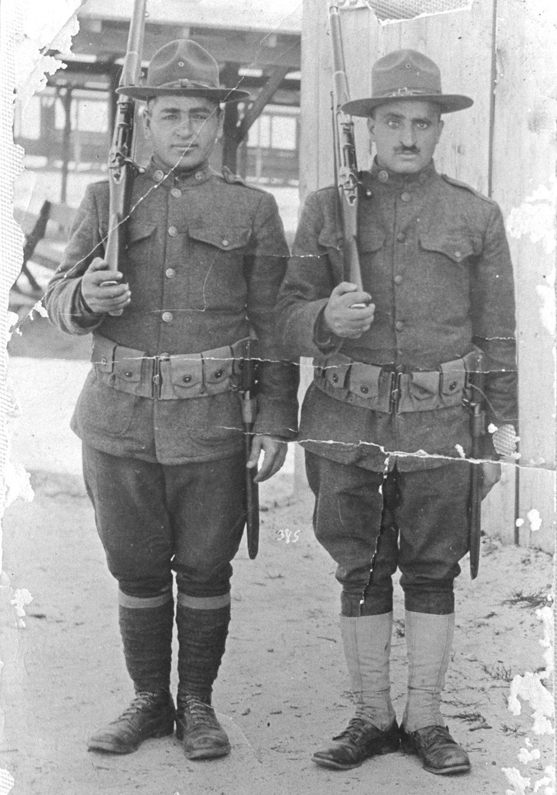
Musa Rabah (left) and Yaʿcoub Hanania in the United States army, in the First World War.Naseeb Shaheen, A Pictorial History of Ramallah, Part II (Birzeit University Press, 2005), p. 249. Courtesy of the American Federation of Ramallah, Palestine.
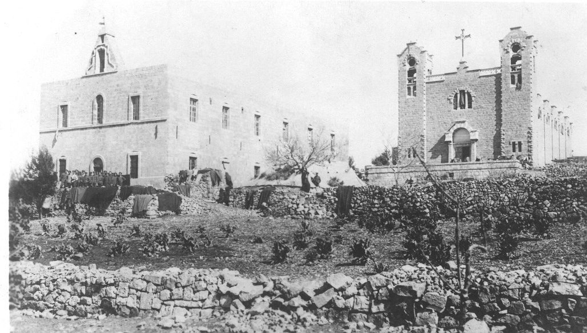
The Roman Catholic church and school of Ramallah on a postcard of 1918. The school seems to have served as a hospital after the British came that year.Naseeb Shaheen, A Pictorial History of Ramallah, Part II (Birzeit University Press, 2005), p. 245. Courtesy of the American Federation of Ramallah, Palestine.
1938DOCUMENTS
The revolt reaches the town
In the autumn of 1938 the great Palestinian revolt against British rule came to Ramallah. The post office and telephones were removed, and six hundred British soldiers were expected, to occupy two old hotels. There were two fights a week apart, on 25 September and on Saturday 1 October, when fighters from across the country gathered in the town. British forces attacked them with machine-gun trucks and, after some hours, with aircraft, which bombed the thickest of the fighting. No one number for the dead can be printed as fact: the witnesses run from “more than twenty” to about eighty. Among them were two women and three men bombed as they ran home from their vineyards313.
This is the first time in our story that the town itself is a battlefield. The first witness was an
outsider: a Quaker teacher at the Friends school, watching from the school roof and writing home to
her family.
The second witness was one of our own. Khalil Totah, born in Ramallah in 1886 and head of the
Friends Boys School, kept a diary through the revolt.
On 5 September 1938 the fighters attacked the police station. On 9 September they entered the
magistrate’s court and took its typewriter. The British shut the court and the post office and carried
both to Jerusalem. That night five to eight hundred armed men closed the roads into the town,
marched through it and raised an Arab flag on a house. On 16 September three armed men took the
typewriters and the duplicator from the district offices.
Totah dates the great battle to 25 September. He tells of six British aircraft, and of
fighting from the armoured car at al-Manāra to the al-Bireh crossroads. The Quaker letters put their
battle on Saturday 1 October, and the British government’s own report for 1938 agrees with them: on 1 October “a British police inspector was fatally wounded at Ramallah by a band,” which “was later engaged and suffered some 50 casualties.” So these are two fights, a week apart. Totah also records the plan for the soldiers: 260 in the Friends school and 400 in government schools and hotels.
In October three men of the town stole two typewriters, and Totah complained. The rebels then
held a court in Ramallah, returned the machines and punished the thieves314.
1936 in the town. The revolt began with the general strike of 1936. Totah wrote on 11 May: “In Ram-Allah we kept open during the first week of the strike.” On 8 July he protested to the High Commissioner about troops shooting villagers. The national committees of Ramallah and al-Bīra formed a joint committee, with Ḥannā Khalaf for Ramallah, and on 7 May the municipality voted twenty-five Palestine pounds for the poor whom the strike had hurt315.
The months around the battle. A rebel communiqué of 7 September 1938 claimed about four hundred men under Muḥammad ʿUmar al-Nūbānī, with units from Ramallah, Baytūniyā and al-Bīra. After the fighting Totah’s diary records long curfews, and an order to the townspeople to pull down the stone walls and trees around their houses. The post office and the telephone came back on 10 and 11 February 1939. On 24 August 1939 the radio station, the police and the army post were attacked again316.
The names of the dead. No townsman of Ramallah killed in the fighting is named in anything we have read. Ḥammūda names villagers who fell at Wādī Shaybān: Rāḍī Muṣṭafā Shaḥāda, Saʿīd Jumʿa Ṣāfī, Zaʿīd Yāsīn Muḥammad and Nasīm ʿAbdallāh Ẓāhir of Baytīn, and Aḥmad ʿAbd al-Muṭṭalib Aḥmad Jabr of Rāfāt, with eight men of Dayr Dibwān and three of Burqa whose names he does not give. He also records that a man of the al-Kaʿbīnī family of Ramallah died in a disused well the British used to hold prisoners. Of our own clans, Ḥannā ʿĪsā Khalaf of the Shaqara “took an active part in the 1936 Arab uprising,” was jailed at Sarafand, deported to Iraq, and came home about 1939 “in disguise”317.
The army’s word. The intelligence summaries of the West Yorkshire battalion, written at Ramallah that winter, say “the town of Ramallah had refused to pay the rebels a subsidy.” The historian Matthew Hughes files this under “collaboration.” That is the British army’s word, and we print it as theirs. Totah’s diary shows the other side of the same months: the rebels held a court and punished men who had robbed townspeople. The summaries are kept at the regimental museum in York, and they are our best lead for the names318.
The officer who was killed. The British police officer killed on 1 October has a name. The Palestine Police report for 1938 lists, among the British police killed that year, “Assistant Inspector W. E. Birch. Killed by unknown persons during an engagement at Ramallah on 1st October.” The Quaker teacher knew him. On 8 October she wrote: “Of the British, only one, our friend, Sargent Birch, was killed. He had taken refuge in the house of our laundress, where the Arabs shot him down and burned the house. The poor widow who owned it had worked years and just finished building her home.” So one house that burned that day can be named by its owner’s work, though not by her name, and it burned in the fight, not by a British demolition order. The next day “burned houses were still smoldering.” She adds that the roads “had been blocked off with rocks so that British armored cars couldn’t get by,” and the telephone wires were cut. Cadora, writing in Ramallah, tells the same day from the town’s side: the rebels under ʿUmar al-Nūbānī took the police station, and “a British police inspector and an Arab policeman were killed.” Troops came from Jerusalem and planes from Sarafand, thirty Arabs died, and the rebels brought down a British plane near Bayt ʿŪr319.
The fighters’ side of the same weeks. The Palestinian historian Bilāl Fāris names the units: the Ramallah unit under Ḥannā ʿĪsā Khalaf, and the al-Bīra unit under ʿAbd al-Dāʾim ʿAbd al-Ṣamad. A Ḥannā Khalaf also sat on the national committee of 1936 and the election committee of 1946; we do not assume they are one man without a source that says so. Abū ʿUmar al-Nūbānī “took the British police station in the town,” and Darwaza’s memoirs record that “the Ramallah police office was closed and its equipment taken to Jerusalem.” Al-Akhbār of 8 September reports two fighters martyred on 5 September, where Totah speaks only of wounded320.
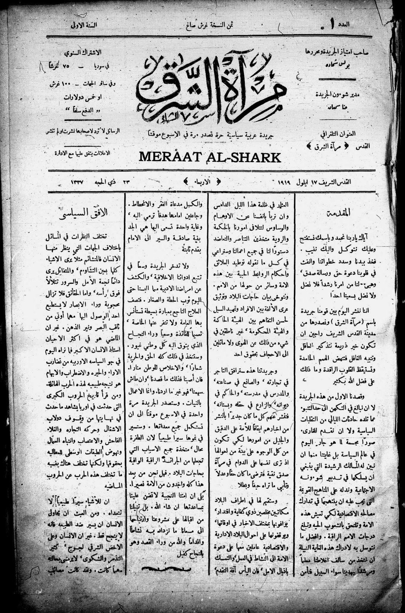
The first issue of Mirʾāt al-Sharq, “Mirror of the East”, Jerusalem, Wednesday 17 September 1919. The masthead, top right, names its licence-holder and editor, بولس شحادة, Boulos Shehadeh of Ramallah, and calls it “a free Arabic political newspaper, appearing once a week for the present”. His opening article begins: “Today we publish among our people a newspaper called Mirʾāt al-Sharq, and we issue it from the city of Jerusalem.”Mirʾāt al-Sharq, no. 1, 17 September 1919, p. 1. Public domain.
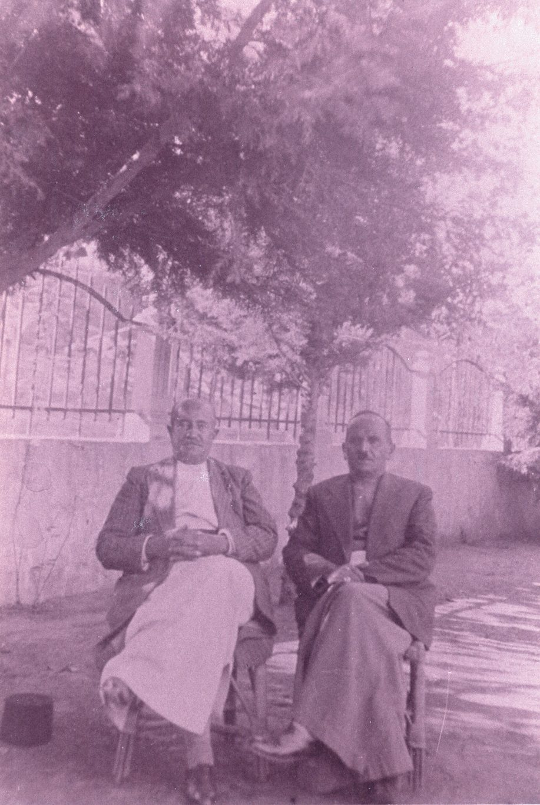
Musa Khaleel, mayor of Ramallah (right), with Iskandar Badr, the first mayor of Beit Jala, 17 October 1935.Naseeb Shaheen, A Pictorial History of Ramallah, Part II (Birzeit University Press, 2005), p. 276. Courtesy of the American Federation of Ramallah, Palestine.
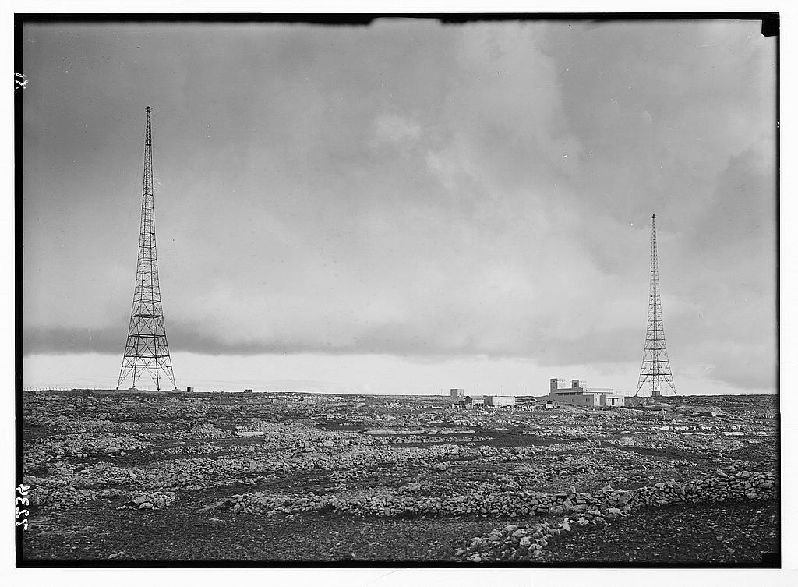
The broadcasting towers at Ramallah, the main transmitter of the Palestine Broadcasting Service from 1936.American Colony Photo Department, 1934–39. Library of Congress, Prints & Photographs Division, loc.gov/item/2019696621. No known restrictions on publication (Library of Congress).
1946DOCUMENTS
The town votes by clan
On Monday 15 April 1946, from nine in the morning, the men of the Ḥaddāda went up to the municipal building. They were choosing four councillors out of five candidates. The other three seats were already filled, because nobody had stood against the one man nominated in each of the other three districts. The districts were the clans. Dār Jiryis was district 1, the Ḥaddāda district 2, Dār Ibrāhīm district 3 and al-Shaqara district 4. Nearly four centuries after the settlement, our town’s first families were still the units in which it voted321. The notice to Ramallah’s voters, dated 28 March 1946, is signed by ʿĀrif al-ʿĀrif, the historian of Jerusalem, then acting Assistant District Commissioner, and it was he who called the poll322.
An electoral committee was named in the autumn of 1945 to run the vote. It first sat on 16 November
1945 under Khalīl Ṣalāḥ. When he fell ill, Mūsā Khalīl took the chair, by notice in the Official
Gazette no. 1465. The other members were Sālim al-Zaʿrūr, Ḥannā Jiryis, Khalīl Mubārak, Ḥannā Khalaf
and Khalīl al-Qassīs.
Registration ran from 15 November to 15 December 1945. The register, the list of voters, was posted
on 1 February 1946 for fourteen days. Objections were heard on 21 February, and the chairman
signed the register on 17 March. Its names were taken from the municipal tax registers. In Mūsā
Khalīl’s words, every person paying taxes was put on the register, whether he had applied or not.
Nobody under twenty-one could vote323.
The register counted the clans. The committee numbered the voters district by district: the
Ḥaddāda from 1 to 401, Dār Ibrāhīm to 55, al-Shaqara to 84 and Dār Jiryis to 43 or 13. The figure for
Dār Jiryis is hard to read in the original. Its list of names holds thirteen, but every house’s list holds fewer names than the register, so the list alone cannot settle it. The lists of names break the Ḥaddāda into the same four
houses that the ration-card count of 1944 gives (see “The counting years”): Dār Abū Jaghab, Dār Yūsuf, al-Sharāka and Dār ʿAwwād.
Two further columns stand apart. One is the Ḥasāmna. The other is al-aghrāb, “the
strangers”: men living in the town but outside its families, among them Muslim and Armenian
names324.
The names on the lists are the families of our tree. On the lists by house, 407 names can be
read: Jaghab 75, Yūsuf 78, Sharāka 89, ʿAwwād 57, Dār Ibrāhīm 32, Dār Jiryis 13, Shaqara 12, Ḥasāmna 5
and 46 strangers. Each house is a clan of the Ramallah Family Tree.
We matched the 361 clan names against the tree. Of these, 106 are one man in the same clan, and 111
could be one of several. 27 match a man of the same name only in another clan. The other 117 are
not in the tree at all. They are men of Ramallah,
alive and of age in 1946, whom the tree has still to take in325.
RAMALLAH MUNICIPAL ELECTION, 1946 — the result
District
Candidate
Votes
1 · Dār Jiryis
Boulos Jiryis Sābā
unopposed
3 · Dār Ibrāhīm
Khalīl Sālim Ḥanāniyā
unopposed
4 · al-Shaqara
Ḥannā Samʿān Khalaf
unopposed
2 · the Ḥaddāda
Jamīl Ṭūṭaḥ
255
2 · the Ḥaddāda
Yūsuf Qaddūra
236
2 · the Ḥaddāda
Khalīl Ṣalāḥ
222
2 · the Ḥaddāda
Jalīl Ḥarb
215
2 · the Ḥaddāda
Ḥannā Jābir
154 — not elected
Nominations were taken at the municipality on Saturday 6 April 1946, and the poll for district 2 was announced in Filasṭīn on 7 April. The English notice gives the district 4 member as “Sama’an Khalaf”; the committee’s Arabic gives حنا سمعان خلف. — Israel State Archives, P-213/40, PDF pp. 72 and 91.
One of the four winners in district 2 carries a name we know. Yūsuf Jiryis Kaddoura (Yūsuf Qaddūra in the
table), second in the poll, has the name of the author of our town’s first history, published in New York in 1954, which
we meet again in the next chapter. Shāhīn gives the author’s full name as Yūsuf Jiryis Qaddūra, the
same full name as the councillor’s. That they are the same man is likely, but not yet shown.
The result was taken to law. The Atalla file, the election papers of the Jerusalem lawyers Anton
and Hanna Atalla, holds the lawyers’ notes of hearings on 23 November
and 7 December 1946. Mūsā Khalīl gave evidence for the committee. The presiding officer of the poll,
Shafīq Musallam of the Ramallah district office, said polling ran from nine to half past twelve and
again from half past one to about five.
The notes argue over how the register was published. They also argue over men with a right to vote
in more than one district: against each such man, the lists mark whether he owned or rented in the
other district. Mūsā Khalīl said that none of the men from other districts who could have voted in the
Ḥaddāda chose to, and the notes put them at about ten326.
The quarrel behind the fifth candidate. Naseeb Shaheen keeps the family memory. “The dispute was over a nomination to the city council, ca. 1943 … the clan nominated Hanna Jaber as the new member. But the Harb family … selected one of their own family, Jaleel Harb.” Two feasts of reconciliation followed about 1949. The result sheet has exactly these two men in the Ḥaddāda district: Jalīl Ḥarb, elected with 215 votes, and Ḥannā Jābir with 154. Shaheen’s “ca. 1943” is memory; the poll was on 15 April 1946327.
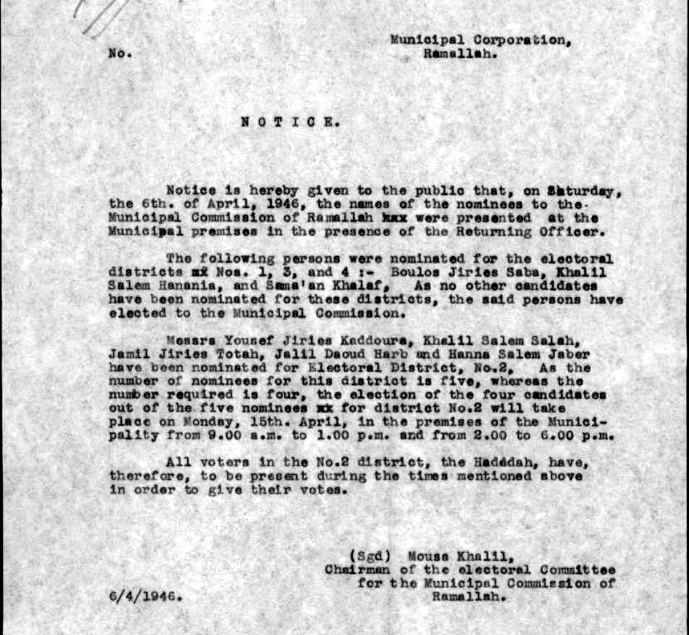
The committee’s notice of 6 April 1946: three districts filled without a contest, and five men nominated for the four seats of district 2, the Ḥaddāda, with the poll set for Monday 15 April.Notice signed by Mousa Khalil, chairman of the electoral committee for the Municipal Commission of Ramallah, 6 April 1946. Israel State Archives, P-213/40, PDF p. 91. Israel State Archives; reproduced by permission.
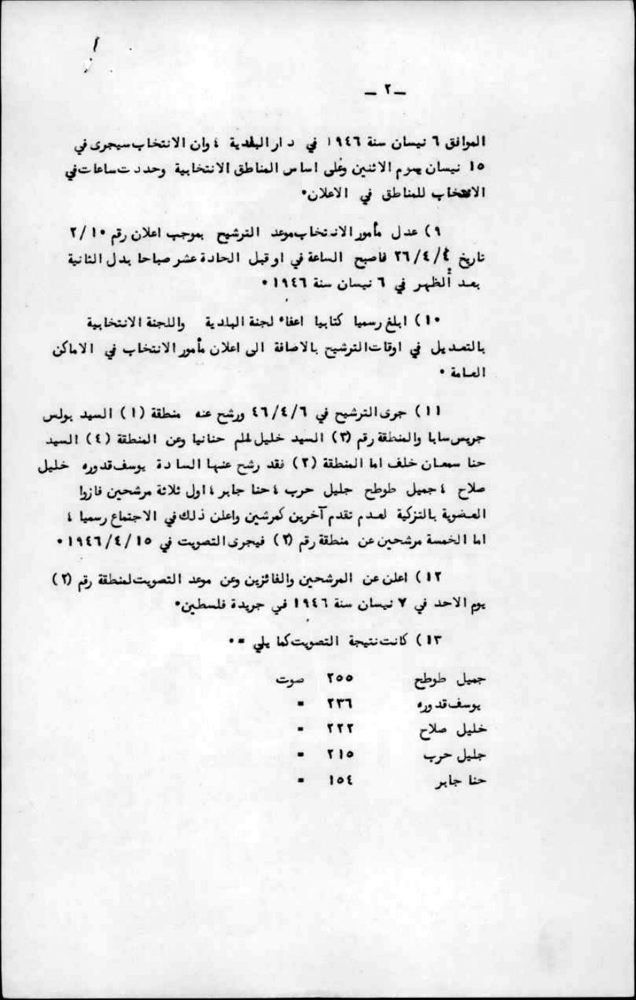
The committee’s own account, in Arabic, ending with item 13, the result: كانت نتيجة التصويت كما يلي, “the result of the vote was as follows”: Jamīl Ṭūṭaḥ 255, Yūsuf Qaddūra 236, Khalīl Ṣalāḥ 222, Jalīl Ḥarb 215, Ḥannā Jābir 154.Ramallah municipality, “Intikhābāt baladiyyat Rām Allāh”, p. 2. Israel State Archives, P-213/40, PDF p. 72. Israel State Archives; reproduced by permission.The ballot paper for district 2, the Ḥaddāda: five nominees for four seats, Monday 15 April 1946.Israel State Archives, P-213/40, PDF p. 142. Israel State Archives; reproduced by permission.The wedding of ʿAwad Shaheen and Maria Hanna Muhawi, 13 July 1930. Both were of the Sharaka clan. The photograph is by the Armenian photographer A. G. Krikorian of Jerusalem.Naseeb Shaheen, A Pictorial History of Ramallah, Part II (Birzeit University Press, 2005), p. 205. Courtesy of the American Federation of Ramallah, Palestine.
1901 → 1963ATTESTEDTWO WITNESSES
The people our town produced
Our town was a village of three thousand souls, on one ridge, and in one century it gave all of the people below. This is only a partial list.
Boulos Shehadeh, born in Ramallah in 1882, founded the newspaper Mirʾāt al-Sharq,
“Mirror of the East”, in Jerusalem on 17 September 1919. Its 1,132 surviving issues are digitised, and
they mention his home town 1,535 times. Khalil Totah, born here in 1886, ran the Friends Boys School.
His diary of the 1938 revolt is told in “The revolt reaches the town”. From 1944 until his death in 1955 he argued Palestine’s case
across the United States, and his diaries are now a source for the Mandate years. The school’s
auditorium, which he raised the money for, carries his name. Dr Fuad Shatara (1892–1942) was a
physician on the staff of Cumberland Hospital in Brooklyn. He was an early leader of the Ramallah Young
Men’s Society of New York, and helped organise its demonstration against the Balfour Declaration on
8 November 1917. He later became president of the Arab National League, arguing the Arab case for
Palestine on American platforms328.
In 1925 a group of Ramallah women founded the Nahda Women’s Association, registering it on
1 January. It was the town’s first women’s society, and their own. It outlived the Mandate, the
Nakba, the Jordanian years and the occupation, and was still serving about a hundred hot meals a week
when Shāhīn wrote. Into that town came Matiel Mogannam. She had already been a secretary of the Arab
Women’s Executive of 1929, and had argued the Palestinian case in English in The Arab Woman and the
Palestine Problem (London, 1937). From 1938, Shāhīn says, she lived here, and in 1939 she formed the Women’s Union
Society; the society’s own papers, in the Palestinian Museum Digital Archive, date it to the early 1930s. It put looms and embroidery frames into paid women’s hands, and in 1961 it opened a home
for the town’s old women329.
Khaleel Abu Rayya opened the National College in 1947 and kept it running until 1971, the last
fourteen years partly paralysed by a stroke. Then he took charge of the Ramallah Public Library he had
founded. Dr Saʿadallah Kassees was both doctor and mayor. His niece, Laila Kassees, became the first
woman of Ramallah to qualify as a doctor, and practises in Memphis. And Joseph Jiryes Kaddoura,
pharmacist and mayor, wrote the town’s first history (its story comes in the next chapter)330.
Girls of the Girls’ Training Home about 1910, with Timothy Hussey and his wife at the centre. Katie Gabriel, the boarding school’s first principal, stands at the far left of the back row.Naseeb Shaheen, A Pictorial History of Ramallah, Part II (Birzeit University Press, 2005), p. 172. Courtesy of the American Federation of Ramallah, Palestine.
Most of these people were born into, or married into, the eight clans of our town. That is what a
ḥamūla, a clan, was for. But not all of them were. Others we have met came from outside: Katie Gabriel was Lebanese, Dr Maʿlouf came from
Beirut, and Matiel Mogannam was born in Lebanon and only settled here in 1938. Our town was served by
people it never absorbed. In a history of how our town took people in, that is worth saying.
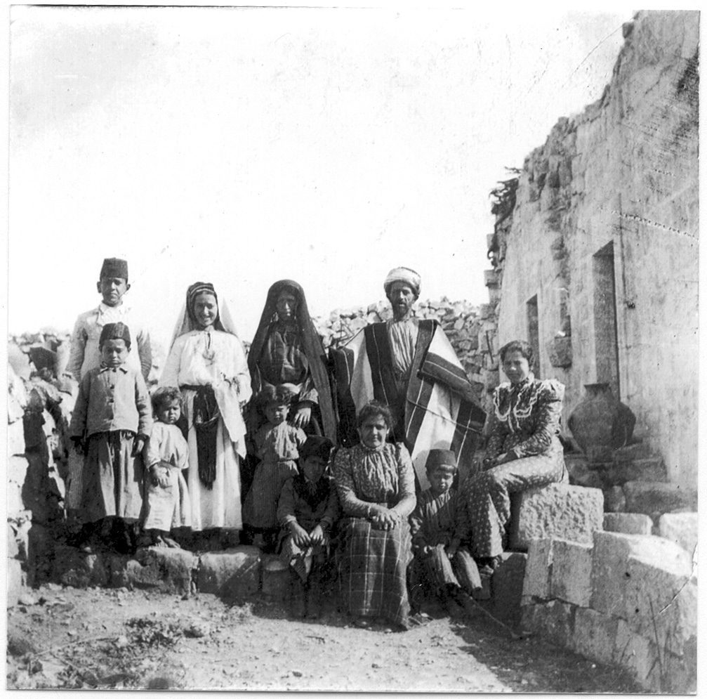
“The Totah Family”: Khalil Totah stands on the right, with Mother Azeezie, Helanie, Naameh and her children, and Martha Totah. Shaheen dates it about 1920, with a question mark.Naseeb Shaheen, A Pictorial History of Ramallah, Part II (Birzeit University Press, 2005), p. 178. Courtesy of the American Federation of Ramallah, Palestine.
The Palestinian Museum’s archive confirms the Nahda from outside Shāhīn: it was “founded in 1925 to serve women and children in the Ramallah district,” with a kindergarten, a clinic and literacy classes. Women here also earned wages by the needle. At the Hishmeh shawl factory “specially trained women” embroidered flowers on shawls. The dress itself was the town’s signature: white handwoven linen worked in wine-red cross-stitch, a tall palm on the back, and a headdress “surrounded by a stuffed halo of material with coins attached to it.” The star of Bethlehem’s embroidery, Widad Kawar wrote, “becomes a moon in Ramallah.” And in April 1933 Matiel Mogannam spoke at the Mosque of ʿUmar in Jerusalem, a Christian woman speaking in a mosque331.
In 1940 Yūsuf Jiryis al-Saah opened a large furniture factory in Washington, D.C., making tables, chairs and cupboards332.
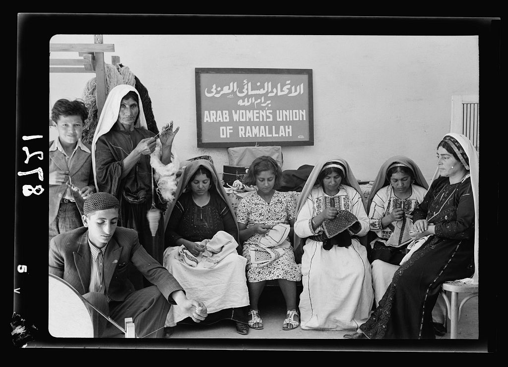
Women of the Arab Women’s Union of Ramallah at work in the Union’s workrooms, late 1930s.Matson Photo Service, 1934–39. Library of Congress, Prints & Photographs Division, loc.gov/item/2019708548. No known restrictions on publication (Library of Congress).
Cadora’s firsts in the professions. “In 1908, Dr Nicola Shehadeh opened his clinic. He was the first doctor from Ramallah to graduate and come back to serve his brethren.” “The first lawyer in Ramallah was Mughannam Elias Mughannam who graduated from the Brooklyn Law School in 1920.” The first to graduate in pharmacy was Farid Issa Shatara, and the first engineer Hanna Suleiman Salah. Among the first dentists were Selim Salameh, Jalil Badran and Jack al-Saah. And Selim Mousa Hishmeh, a pupil of the Zion School, “left between 1874-1877 to be a translator with the English explorer Stanley”, then settled in England. His brother Jacob is the man in the Bonfils photograph with his son Shukri; Cadora says the two later opened a tourist agency in Jerusalem333.
The graduating class of the Friends Boys School, 1946, with Dr Khalil Totah, the principal, at the centre. Most were boarders from Haifa, Jaffa, Gaza and Tiberias; from Ramallah, Fuad Saʿah, Ghanayem Kandah, George Katouʿah and Andrew Faramand.Naseeb Shaheen, A Pictorial History of Ramallah, Part II (Birzeit University Press, 2005), p. 314. Courtesy of the American Federation of Ramallah, Palestine.
The first firms in America. Cadora lists them by family and year. ʿĪsā ʿAbdallah al-Bateh and his brothers in New York in 1916, “the biggest of the Ramallah companies”; ʿĪsā Salāmeh and his brothers in Chicago in 1910, later with a children’s clothing factory in the Philippines; Aziz Shaheen and his brothers in Chicago in 1913, who in 1942 “opened a factory in Dalton, Georgia, to manufacture American rugs”; Yaʿqūb al-Kaʿībnī in New York in 1927; and Hanna and Wadih Yousef Harb, who held most of the Bristol Gas Company in Tennessee. “The first to open a store to sell, wash and repair Oriental and American carpets using modern equipment was George Kashou in 1918 in Milwaukee, Wisconsin.” His roll of 1954 then finds Ramallah merchants from San Francisco and Detroit to Waco, Corpus Christi, Palestine in Texas, Birmingham, Savannah and Knoxville. It is the earliest such list we have334.
The evidenceThe sources for this chapter, and how we read them
1901–1904DOCUMENTS
Elihu Grant writes the town down
Most of what we know about how Ramallah lived comes from ʿAzīz Shāhīn, who lived it. Elihu Grant was superintendent of the American Friends Schools at Ramallah and Jerusalem from 1901 to 1904. He happened to be counting the same houses at the time, so his notes let us put dates on what Shāhīn remembered. Shāhīn is our source, and Grant is our clock. In 1907 Grant published The Peasantry of Palestine, two hundred and fifty-five pages on village life, with a chapter on Ramallah and al-Bireh by name335.
Grant counted things. Down one street south of the market he recorded twenty-two houses, one
store and one silversmith’s shop, and he measured seven hundred and eighty feet to the threshing
floor. He gave the price of meat at Ramallah: eight to twelve cents a pound, depending on the season.
He also dated the carriage road from Jerusalem exactly. It opened in May 1901 and ran fifteen
kilometres to al-Bireh336.
Grant also read the town’s history in its buildings. In 1903 he could see four kinds of house
standing side by side. The oldest were the skīfeh huts: stone bedded in earth, with dirt roofs
laid on boughs. Next came dressed stone and mortar with rolled earth roofs. Then came the heavy arched
stone dome roofs, which by then were the majority in Ramallah and rare in al-Bireh. Newest were
the houses of several rooms, with modern windows, paved floors and cisterns, which the wealthier
villagers were putting up as he watched. “The development of several centuries in highland peasant
homes may thus be traced.” He was reading our town’s whole economic history off its own walls,
standing in the street.
One of his notes matters for everything we say about land. Ramallah’s people had bought fields in
a dozen or more villages, as far out as ʿAyn Qīniya, Mukhmās and Dayr Dīwān. For those
outside lands they held no government deeds (kushān, plural kuwashīn).
The title stayed in the register with the original village337.
So our town’s wealth had outgrown its own land, and much of that land was held without paper.
This was a place about to start sending its sons to America, and Grant, who arrived in 1901, the
year the first four sailed, was there to write it down.
Without meaning to, Grant also confirms a picture we have drawn all through our history. He lists
the Christian villages of the central highlands: Ramallah, Beit Jala, eṭ-Ṭaybeh and Jifnā.
Christians outnumber Muslims at Birzeit, ʿAyn ʿArīk and ʿAbūd. This is the same band along the ridge
that the Ottoman register of 1596 describes three hundred years earlier, and that the Byzantine
churches describe a thousand years before that. Different observer, different language, different
century: the same map.
What the town lived on. Lisa Taraki shows Ramallah merchants selling olive oil to the soap makers of Jaffa, and buying raisins from the villages for a German firm that shipped them through Jaffa; women workers prepared them. The Bellevue locanda, a hotel, opened in 1902. Grant himself wrote that “the finest grapes within reach of Jerusalem are those from Hebron and Râm Allâh.” The dollars came from peddling. Saleh Abdel Jawad, writing of al-Bīra men on the same road, found that “successful peddlers made about three to five dollars a day in 1910.” He names Ramallah peddlers who rose to be wholesalers: Abdullah and Issa al-Batih, Hanna Hishmeh and Aziz Shahin. And when the men left, “their wives saw to the affairs of the family and the lands”338.
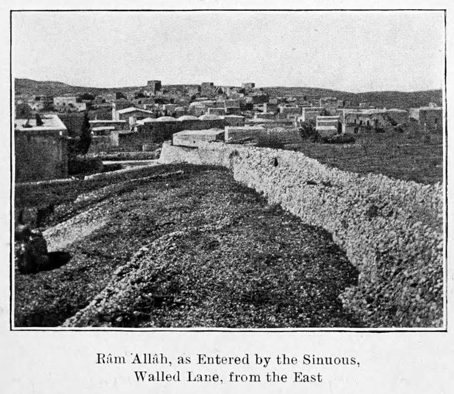
“Râm Allâh, as Entered by the Sinuous, Walled Lane, from the East”: the town as Elihu Grant knew it, stone field walls along the lane and the houses of the old town on the rise beyond.Elihu Grant, The Peasantry of Palestine (Boston: Pilgrim Press, 1907), plate. Public domain.
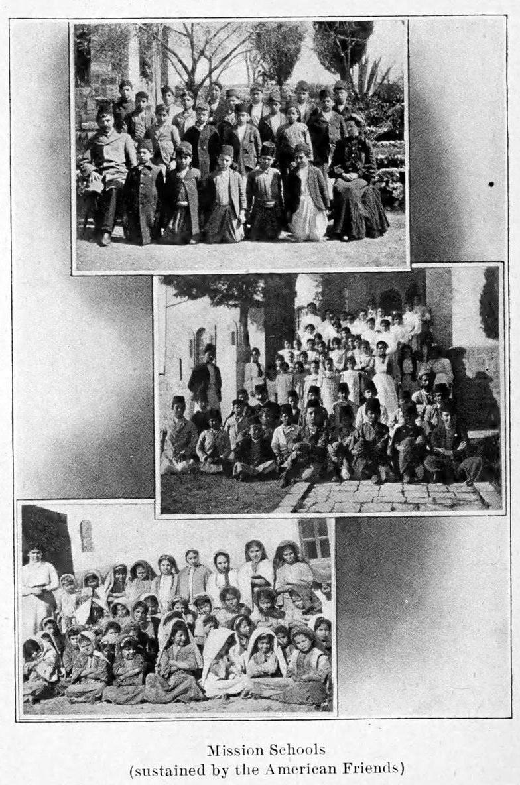
“Mission Schools (sustained by the American Friends)”: pupils and teachers of the Friends schools at Ramallah, which Grant ran from 1901 to 1904.Elihu Grant, The Peasantry of Palestine (Boston: Pilgrim Press, 1907), plate. Public domain.
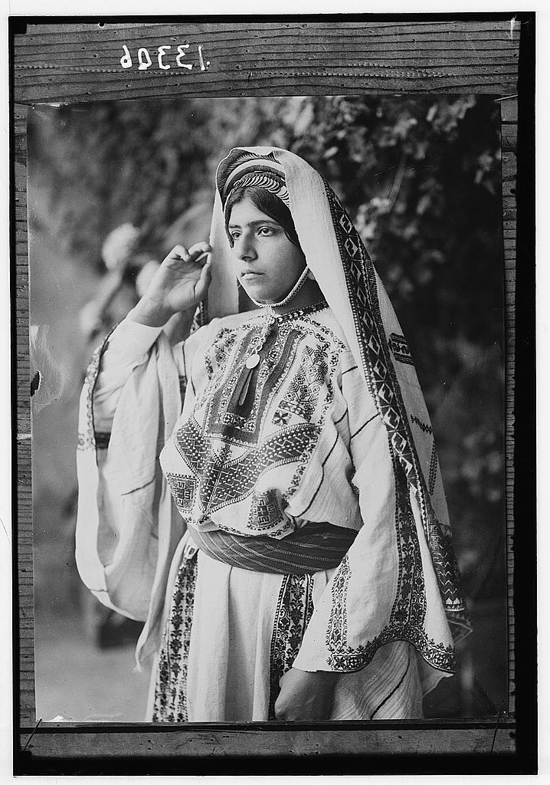
A Ramallah woman in the embroidered dress of the town.American Colony Photo Department, negative 1898–1914. Library of Congress, Prints & Photographs Division, loc.gov/item/2019692264. No known restrictions on publication (Library of Congress).
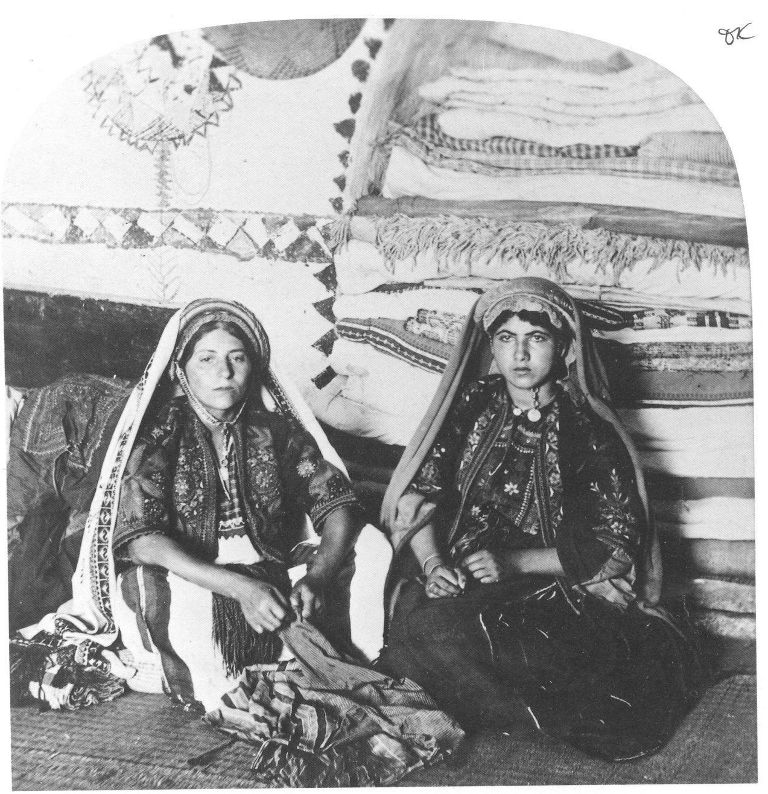
Two women inside a Ramallah house, 1906, in the town’s costume: the headdress with its two rows of coins, the saffa and the shakka. The bedding is stacked in the wall niche behind them.Naseeb Shaheen, A Pictorial History of Ramallah, Part II (Birzeit University Press, 2005), p. 242. Courtesy of the American Federation of Ramallah, Palestine.
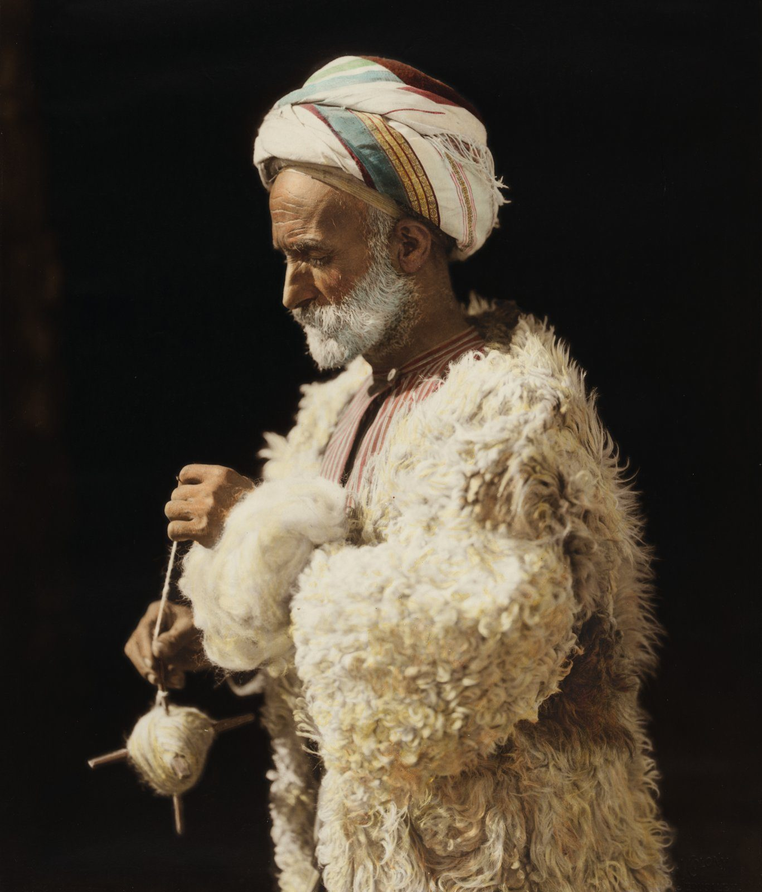
An old man of Ramallah in a sheepskin coat, spinning wool with a hand spindle, 1919.American Colony Photo Department, 1919. No known restrictions on publication (Library of Congress).
1904 · 1908DOCUMENTS
The Patriarchate counts its flock
In 1904 the Orthodox Patriarchate of Jerusalem estimated its own people, parish by parish, for its schools. Of 49,596 people in the whole Patriarchate, Ramallah had 4,500, second only to Jerusalem’s 6,000; Beit Jala had 4,340 and Bethlehem 3,600. That is an estimate, and a generous one: a year later the town’s own census counted 3,214 people in all. Karak had 1,600. So the two ends of our family’s road appear in one table, written by the church our family never left.339
The same report names a quarrel that runs underneath the rest of our church history. The parishes,
the parish priests and the people spoke Arabic. The Patriarch and the Brotherhood of the Holy
Sepulchre, which governed them, were Greek. The laity are the ordinary members of the church, as
against its clergy. When the Ottoman constitution was restored in 1908, the Arab Orthodox laity
began a long and bitter fight for a share in running their own church340.
Ramallah, with the largest Orthodox parish outside Jerusalem, was in that fight from the start.
Ramallah, 30 August 1932. The struggle came to our own town. More than sixty Arab Orthodox priests from Palestine and Transjordan met here. They passed reforms for the schools, the churches, the endowments and the church courts, and elected a committee with Father Niqūlā Khoury as its secretary. Khoury tells it himself in his memoirs. His editors note that his account is disputed, and Papastathis confirms that the meeting took place. In the 1940s Ramallah had its own club in the Union of Orthodox Clubs. Grant, thirty years before the meeting, had watched a village wedding read “partly in Arabic and partly in Greek” by a head priest “who was a Greek by blood”341.
The priest Hanna Jubran of the Shakara clan (1865–1924), about 1915. He served in Jaffa, Lydda, Ramle, Gaza and al-Salṭ, and came home to Ramallah for the feasts.Naseeb Shaheen, A Pictorial History of Ramallah, Part II (Birzeit University Press, 2005), p. 110. Courtesy of the American Federation of Ramallah, Palestine.
1922–1944DOCUMENTS
The counting years
After the war Britain ruled Palestine under the Mandate, and the Mandate government counted everything. For once our town can be set out in tables.
EVERY COUNT OF RAMALLAH, 1838–1953 — as Shāhīn assembles them
Year
Count
Counted by
1838
800–900
Robinson and Smith, travellers
1839
200 Greek Orthodox families
Anthemos, secretary of the Patriarch
1870
249 houses; 635 males
A. Socin’s Ottoman village list, ZDPV 2 (1879), p. 158, marked uncertain in the original. A household multiplier puts the total near 2,000, but that is inference, not Socin. Another estimate the same decade: ~1,100
1905
3,214
census, by the eight clans
1922
3,104 — 125 Muslims, 7 Jews
British census, 23 October
1931
4,286 in 1,014 homes
British census, village list (its towns tables print 4,287)
1941
≈ 5,000
British estimate, 1 January
1944
6,300 (4,885 natives)
ration-card distribution — the government Village Statistics of April 1945 give 5,080
1953
13,500 (natives + 8,500–9,000 refugees)
a local count — Jordan held no census in 1953 (its censuses are 1952 and 1961)
1953
+ 2,580 in the United States
“the total number of Ramallah people in 1953 was 7,080”
Shāhīn (1982), citing Kaddoura (1954), pp. 136–37, and the British census reports; Barron (1923); Mills (1932).
THE 1944 RATION-CARD CENSUS — the eight clans of 1562, still countable
The town’s people in America rise from four men in 1901 to more than ten thousand by 1975, while the number at home stops growing. The census of 1931 shows the same thing from the other side: about four hundred men missing from a town of four thousand.Shāhīn (1982), the emigration chapter, for 1,500 (1946), 2,580 and 7,080 (1953), 4,000+ (1960) and 10,000+ (1975); the censuses of 1905, 1922 (Barron 1923) and 1931 (Mills 1932).
The 1922 census shows the missing men another way. In Ramallah it counted 170 widowed or
divorced women against 92 men. In Beit Jala, the other town of emigrants, it counted 285 women
against 41 men. Ramallah had 576 married men and 736 married women: a hundred and sixty wives whose
husbands were not in the town on census day342.
Two new things reached the town in these years: electric light and radio. In 1935 the Jerusalem Electric Company ran its
lines up from Jerusalem. The current was switched on at what is now al-Manāra square, with the mayor,
Dr Saʿadallah Kassees, present343.
From the end of March 1936 the voice of the country came out of Ramallah. The Palestine
Broadcasting Service spoke from Jerusalem, but its main transmitter stood in Ramallah until
1948344.
Musa Naser ʿAckall on a postcard he mailed from Newark, New Jersey, 22 January 1922, to his brother Saleh at school in ʿAin Karem: “try and take care of your scool … because at cost plenty of money.”Naseeb Shaheen, A Pictorial History of Ramallah, Part II (Birzeit University Press, 2005), p. 267. Courtesy of the American Federation of Ramallah, Palestine.
The missing men were Christian men. The census of 1931 counts 1,662 Christian men against 2,104 Christian women in the town, a gap of 442. The town’s Muslims had more men than women, 280 against 240. In 1922 the Christian gap had been 204, so it doubled in nine years. Over the same years the town’s Muslims grew from 125 to 520. The men who sailed were ours, and the town was already changing behind them345.
The Bateh boys in Brooklyn, New York, 20 June 1924: brothers and cousins, fourteen young men of one family.Naseeb Shaheen, A Pictorial History of Ramallah, Part II (Birzeit University Press, 2005), p. 105. Courtesy of the American Federation of Ramallah, Palestine.
After 1948 Jordan took over the Ramallah transmitter. When Jordan opened a national station at Amman in 1956, it shared a frequency with what one study calls “its then primary radio station, which broadcast its programs from Ramallah”346.
The light has a family history too. In 1885 Ibrāhīm al-Saah brought petrol lanterns from Jerusalem to light his house, and the village came to look; Cadora had the story from Sheikh Ḥannā al-Zaʿrūr. Cadora adds that in 1935 ʿAzīz Cadora, the grandson of Khalīl Ibrāhīm al-Saah, was the first to install the electric grid and carry it to the houses and streets. ʿAzīz had come home from studying electrical engineering in America. The same book says that in 1935 the Jerusalem power company laid the cables to Ramallah and al-Bīra, so the supply was the company’s, and ʿAzīz is remembered as the man who wired the town to it347.
Zareefah Hanna Hishmeh with her sons Rasheed and Marshood, about 1924, in the embroidered taqseereh jacket and the khirkeh scarf.Naseeb Shaheen, A Pictorial History of Ramallah, Part II (Birzeit University Press, 2005), p. 265. Courtesy of the American Federation of Ramallah, Palestine.
The years after the first mayor. In Cadora’s account, Yūsuf Jiryis Darbas was mayor from 1921 to 1922 and left to run his business in New York. A council then ran the town from 1922 to 1927, among them Ibrāhīm Salāmeh Totah, Jiryis Cadora, Khalīl Ḥarb, Ghannām Sālem Ghannām, Ibrāhīm ʿAql, Manṣūr Rayyān and Mitri al-Dibāʿī. “In 1924, the border that separates Ramallah and El-Bireh was drawn,” and new building had to be in stone. The town’s budget, he writes, grew “from 300 pounds at its conception to 30,000 pounds.” On 9 February 1920 snow fell “for 72 hours non-stop” and lay up to a metre and a quarter, and the water it left gave a fine harvest in 1921. The harvest of 1920 was 4,000 jars of oil (84,000 kilograms), 5,000 qintars of dried figs and 4,000 qintars of grapes348.
The cast-iron electricity structure that stood in the middle of Manara Square from the 1930s to about 1950. The bright lamp on its roof gave the square its name, al-Manāra, “the lighthouse”. Sketch by Hosni Radwan.Naseeb Shaheen, A Pictorial History of Ramallah, Part II (Birzeit University Press, 2005), p. 226. Courtesy of the American Federation of Ramallah, Palestine.
The societies. Emigrants who had been masons in America founded the Star Lodge in 1924 and built Tower Castle at ʿAyn Miṣbāḥ in 1929. A Young Men’s Association was “established by Ramallah emigres in New York in 1914.” Adīb Isḥāq founded the Boy Scouts in 1939, the Girl Scouts followed in 1942 under Labībeh Ṣāyegh, and the Young Women’s Society of 1940 published a monthly, Young Women of Tomorrow349.
What the scholars say
Azeez Shaheen — Ramallah: Its History and Its Genealogies (كشف النقاب عن الجدود والأنساب في مدينة رام الله)Birzeit University, 1982 · 807 + 77 pp.The first sailings to America, the new municipality, the last big fight, the war years and the town’s societies, as Ramallah remembers them.
Khalil Totah, ed. Thomas M. Ricks — Turbulent Times in Palestine: The Diaries of Khalil Totah, 1886–1955IPS / PASSIA, Jerusalem & Ramallah, 2009The diaries of the Ramallah-born head of the Friends Boys School, the most important record of the town’s schools under the Mandate.
Elihu Grant — The Peasantry of Palestine: The Life, Manners and Customs of the VillagePilgrim Press, Boston, 1907A Friends School principal’s portrait of village life around 1901–04, with observations, photographs and proverbs drawn mostly from Ramallah.
J. B. Barron (ed.) — Palestine: Report and General Abstracts of the Census of 1922Government of Palestine, Jerusalem, 1923The first modern count of the town and every village of its sub-district, by religion and sex, free to read.
Saleh Abdel Jawad — “Landed Property, Palestinian Migration to America and the Emergence of a New Local Leadership: al-Bireh 1919–1947”Jerusalem Quarterly 36 (2009): 13–33How money sent home from America reshaped land and leadership in al-Bīra, with Ramallah alongside, from the first emigration waves.
Nadim Bawalsa — Transnational Palestine: Migration and the Right of Return before 1948Stanford University Press, 2022The central study of Palestinian emigrants in the Americas, many from Ramallah, and of how the Mandate shut them out of citizenship.
مرآة الشرق / Mirʾāt al-Sharq, Jerusalem 1919–1938Founded by Boulos Shehadeh · Internet Archive, searchableA Ramallah man’s newspaper, full of municipal news, schools, churches and emigration: the richest Arabic source for the Mandate town.
We do not yet have the names of those killed when the revolt of
1938 reached the town, the houses burned, or what the revolt cost the families that stayed. We do not
know who brought the election case of 1946, or how it was decided. We are still looking for exhibit
P.5, the register itself as shown in court, which Mūsā Khalīl said gave each voter’s age, and for the Filasṭīn
notice of 7 April 1946. The 1946 lists of names are still to be fully transcribed and checked, and we
have not yet shown that the Yūsuf Kaddoura of the poll is the author of the 1954 history. If your
family’s papers hold any of these, we would like to hear from you.
11Manara Square, about 1953, with the column whose five lions stand for the five sons of Rāshid.
CHAPTER ELEVEN
1948 and after1948–1967
The refugees of Lydda and Ramle arrive and the town takes them in. The diaspora builds a hospital, writes our first history and founds the Federation.
The future looked grim and the morale of the people was at its lowest ebb.
Shāhīn, of 1951–52
Where our own line stands here
Link nine of nine · the town takes in the refugeesDOCUMENTS
Documented: local counts, the refugee agencies’ records and the Federation’s own papers.
The story
1948DOCUMENTS
The catastrophe of 1948
In the summer of 1948 the war reached Lydda and Ramle, west of our hills. On 11 July 1948 Israeli forces took Lydda, and Ramle surrendered the next day. At half past one on 12 July Yitzhak Rabin signed the order to expel the inhabitants. On the morning of the 13th the people of Lydda were marched east on foot in the July heat. Somewhere between fifty and seventy thousand people were driven out of the two towns, and an unknown number died on the road. The Arab Legion, the army of Jordan, picked up the survivors and brought them to Ramallah. Ramallah was not destroyed. Ramallah opened its doors and was tripled. People were taken into every madafa, the clan guest house, every schoolroom, and every qaṣr, the stone field house, in the fig groves. A local count of 1953 gives some 13,500 souls: about nine thousand refugees and four and a half thousand Ramallah natives. With 2,580 in America, that is the figure behind Shāhīn’s total of 7,080 Ramallah people in the world350. The town’s own money went at the same time. The deposits in Bank al-Umma were frozen, not lost, as part of the wholesale freezing of Palestinian bank accounts that year. The town’s pig-farming venture collapsed with over $400,000 in it, and some 200 Mandate salaries simply stopped351. Shāhīn saw it himself in 1951–52: “The future looked grim and the morale of the people was at its lowest ebb.”
Before Lydda. Jordan took charge of the Ramallah region weeks before the expulsions. Bahjat Tabbāra was appointed for the Ramallah region on 18 May 1948, with ʿAzmī al-Nashāshībī as his assistant, and a second company of the Arab Legion was sent to the town on 27 May. Cadora, who was acting mayor from 1 April 1948 while Khalīl Ṣalāḥ was away, gives the same date for Tabbāra. He records that Ramallah was bombed from the air on 26, 27 and 29 May, and a refugee from Ramle was killed. On 5 June the mayors of Lydda, Ramle, Ramallah and al-Bīra went together to King Abdullah about the refugees. In December 1948 the king came to a conference in Ramallah, and the notables, the mukhtārs and the National Committee of the Ramallah area signed a petition against Jordanian rule352.
The march. About seventy thousand people of Lydda, Ramle and the villages near them were given half an hour to leave on 13 July. They were sent on “a rugged, treacherous path to reach Ramallah.” More than four hundred people were killed in Lydda, eighty to 176 of them at the Dahmash mosque, and close to a thousand died in the city and on the march together. Hundreds died of thirst and exhaustion on the road, and newborns did not survive. The painter Ismāʿīl Shammūṭ lost his brother to thirst on the march. Reja-e Busailah, George Ḥabash and Spiro Munayyer, who walked it or saw it, have left their own accounts353.
The town receives them. Christina Jones of the Friends schools wrote on 13 July of “thousands of people on foot struggling up the twenty-five-mile road.” About two hundred were sheltered in the Girls School, and the Boys School became an emergency hospital, with a maternity ward in the principal’s house and “as many as seven refugee babies born in a single day.” Cadora writes of “25,000 refugees who came overnight,” fed by the Jordanian government until the Red Cross took over. By March 1949 the refugees’ own body, the Arab Refugee Congress of Ramallah, counted 72,660 refugees, almost certainly for the Ramallah area rather than the town. That is a Palestinian count, made by the refugees themselves354.
“Feeding at the church at Ramallah,” summer 1949, at the school opened that March for refugee children. Elaine R. Lubbat and Naimeh Gabriel are the first two adults from the left.Naseeb Shaheen, A Pictorial History of Ramallah, Part II (Birzeit University Press, 2005), p. 183. Courtesy of the American Federation of Ramallah, Palestine.
The count of 1953, in two hands. Shāhīn gives 13,500 people: four and a half thousand natives and nine thousand refugees. Shāhīn took his figures from Cadora, and the two splits are both inside Cadora’s own book. His chapter on the town says “The original inhabitants numbered 5,000. The additional 8,500 were refugees.” His appendix of 1953 statistics, and his chapter on the churches, give 4,500 citizens and 9,000 refugees, the figures Shāhīn prints. We print both355.
The town in numbers, 1953. Cadora counted the town he governed. There were 209 trade licences in 1953, among them 80 groceries, 17 coffee shops, four first-class hotels and a cinema. The Arab National Bank had opened a branch in 1944 and left for Jerusalem in 1948, and the Arab Bank opened in 1950, the year a Chamber of Commerce was founded. A teachers’ college built with American Point Four money opened on 1 October 1953. The municipality’s school figures for 1953, as Cadora gives them, were 1,526 girls taught by 58 women and 1,511 boys taught by 52 men356.
1949 → 1957DOCUMENTS
Where the refugees lived
The refugees who reached Ramallah in July 1948 went into five camps, and the official lists add a small sixth at Silwād (453 people in the census of 2017). One, Qaddūra, is inside Ramallah itself357. Al-Amʿarī, al-Jalazūn and Qalandiyā are within about six kilometres, and Dayr ʿAmmār is twelve kilometres north-west.
Figure 11.2 · Map
Where the road stopped
The people driven east out of Lydda and Ramle on 13 July 1948 stopped where the road stopped. The five camps of this district are joined here to the towns and villages their people came from, as the camp table below records them.UNRWA camp profiles; ARIJ, Ramallah governorate camp profiles (2012); Shāhīn (1982). The line of the march is drawn only approximately.
The camps of this district
camp
where
set up
on whose land
who is in it
2017
Qaddūra
inside Ramallah city, 0.5 km east of the centre
1948
private land — so UNRWA never recognised it as a camp
rented from a private owner in Jifnā, by most accounts; no lease document is public
thirty-six villages (the encyclopedia of the Institute for Palestine Studies counts forty-six) of Lydda, Ramle, Haifa and west of Hebron; chiefly Bayt Nabāla and al-Lidd
8,201
Qalandiyā
the southern entrance to Ramallah; Jerusalem governorate
land of non-refugee villagers of Dayr ʿAmmār and Jammāla
Bayt Nabāla, Dayr Ṭarīf, Ṭīrat Dandan, al-Sāqiya
—
Populations are PCBS 2017 for the camp localities; UNRWA’s registered-refugee rolls are far larger, because they count the descendants wherever they now live — al-Amʿarī, 97 dunums, carries 15,315 registered refugees.
Figure 11.3 · Chart
The camps, with their people
How many people live in each camp today. The camps are counted as localities by the Palestinian census bureau; the UNRWA rolls are far larger because they follow every family wherever it now lives.PCBS, Census 2017, camp localities; UNRWA camp profile for al-Amʿarī.
Look at where each camp’s people came from, and the map of 1948 comes together. Qalandiyā holds the
villages of the Jerusalem corridor. Al-Amʿarī and al-Jalazūn hold Lydda, Ramle and Jaffa. The people
who walked east out of Lydda on 13 July settled where they could walk no further.358
Counting the people of a camp is not simple. UNRWA is the United Nations agency for Palestine
refugees. Its own page for al-Jalazūn, as we read it in September 2026, says “around 9,450 refugees live in Jalazone camp.” Two lines
later it gives the camp as 0.253 km² at “an estimated population density of 51,383 per sq km.”
Multiply the two and you get thirteen thousand: 51,383 × 0.253 = 13,000.The density was
worked out from a population of thirteen thousand, and printed beside a headline of nine thousand four
hundred. The difference is inside one page, not between sources. It is the difference between the
people registered and the people counted359.
A school for refugee children held in a Ramallah church, August 1949, a year after the expulsions from Lydda and Ramle filled the town.Naseeb Shaheen, A Pictorial History of Ramallah, Part II (Birzeit University Press, 2005), p. 184. Courtesy of the American Federation of Ramallah, Palestine.
A camp is one of the few places on earth where those two numbers can drift this far apart without
anybody minding.
The tents came down slowly. UNRWA began building permanent structures in 1951 and adopted a shelter
programme in 1955. Al-Jalazūn had concrete shelters from 1953, and al-Amʿarī’s last tent was gone by
1957360. It took nine years to go from a tent to a wall.
“Friends Meeting House Ramallah when refugee school was in session,” spring 1949.Naseeb Shaheen, A Pictorial History of Ramallah, Part II (Birzeit University Press, 2005), p. 183. Courtesy of the American Federation of Ramallah, Palestine.
In 1950 Jordan annexed the West Bank and gave the refugees citizenship. That made them, alone
among Palestinians in exile, refugees and citizens at the same time361.
“Refugee camp near Ramallah. A girl in the doorway of her tent house.” The bedding is sunning on the stones. Received by the Friends in August 1950.Naseeb Shaheen, A Pictorial History of Ramallah, Part II (Birzeit University Press, 2005), p. 182. Courtesy of the American Federation of Ramallah, Palestine.
How our town changed
Ramallah was 2,972 Christian out of 3,104 in 1922, and is a
Muslim-majority city today. Here is how that happened, step by step.
One. The Christian majority was itself made, not primordial:
the register of 1562 has Christians arriving to join ten Muslim households already on the hill.
Two. The town was already emptying before the Nakba — about 1,500 of some 6,000
Ramallawis, people of Ramallah, had gone to America by 1946. Three. 1948 changed the denominator before it
changed the numerator: the town did not lose Christians in 1948, it gained some nine thousand
refugees and others, most of them villagers from around Lydda and Ramle. Many moved on, and in
1967 Christians were still 59.4 per cent of the town, in the occupying power’s census of 21 September 1967, taken under curfew (an Israeli state source, used here for its count)362. Four.
Then the emigration curve steepened: over four thousand Ramallah-born in the United States by 1960,
over ten thousand by 1975 with fewer than two thousand left in the town363.
So the Christian share of Ramallah fell because Ramallah’s Christians
left for America, and because Ramallah took in the survivors of an expulsion.The second of
those is not a loss. It is the best thing this town ever did — and a family history written from
Detroit and San Francisco should say plainly that the people who filled the houses we left were
driven out of Lydda at gunpoint. Lisa Taraki, who has studied this town harder than anyone, warns
against exactly the way of seeing that we have tried to avoid: the Christian villagers of Birzeit and eṭ-Ṭaybeh, she
writes, have more in common with their Muslim neighbours than with the Christian well-off of
Masyūn, a prosperous neighbourhood of the town.
Al-Jalazūn began with “around 4,000–5,000 people.” About 1951–52 some families built in rubble stone and earth, and concrete shelters came in 1953. Early residents also lived in “olive and apricot orchards belonging to the village Jifna”364.
The refugees changed the town for good. After 1948, Salim Tamari writes, in towns like Ramallah “the majority of local merchants did not originate from the town itself, but were war refugees from the coastal cities.” In the census of 2017 refugees were 41 per cent of the town’s residents, against 67 per cent in the local count of 1953365.
“A U.N. school for refugee boys in a camp near Ramallah”: the ends of the benches show inside the tent. August 1950.Naseeb Shaheen, A Pictorial History of Ramallah, Part II (Birzeit University Press, 2005), p. 182. Courtesy of the American Federation of Ramallah, Palestine.
1944–1963DOCUMENTSTWO WITNESSES
The diaspora builds a hospital
In 1944 the Ramallah Foundation, Inc. of New York was formed. A three-man delegation of Peter George Shihadeh, Yousef Abdallah Bateh and ʿAzīz Shāhīn himself toured every Ramallah community in the United States in 1944–45 and collected over $90,000366. The Summer Resorts Company was founded in 1945, capitalised at £P50,000, in Palestine pounds, since there was no dinar in Palestine until 1950. Most of its stockholders were in the diaspora, and in 1951 it brought the water from ʿAin Fara. On 20 May 1963 the Ramallah New Hospital opened, with fifty beds on 26 dunams, the local measure of land. Its assets were vested in the New York Foundation. The money came back along the road the people had left on.
The hospital, as Cadora tells it. “In 1944, a committee was formed composed of two members from each clan, headed by Dr. Khalil Totah.” When Totah left for America, Samaan Daoud took the chair and proposed a levy on the rationed flour, sugar, rice and cloth. “Thus 10,000 pounds were collected and a piece of land (26 dunums) was purchased.” A well was dug and trees planted. In America, “Immigrants to the U.S. established The Ramallah Federation to help build the hospital and to assist students in their education in the U.S. The Federation was established in 1944 and collected $10,000. It was headed by Professor Farhat Yaqoub Ziadeh.” The sums do not agree. Shāhīn has over $90,000 from the tour of 1944–45, and Cadora’s own speech to the High Commissioner in 1946 says the brethren in the United States had given $100,000. We print all three, by name367.
Manara Square, about 1953, with the column whose five lions stand for the five sons of Rāshid.Naseeb Shaheen, A Pictorial History of Ramallah, Part II (Birzeit University Press, 2005), p. 227. Courtesy of the American Federation of Ramallah, Palestine.Embroiderers working for the Women’s Union in the 1950s. The two women facing the camera in Ramallah dress wear the row of coins called the shekkah.Naseeb Shaheen, A Pictorial History of Ramallah, Part II (Birzeit University Press, 2005), p. 159. Courtesy of the American Federation of Ramallah, Palestine.
1958 / 1959ORAL TRADITIONTWO WITNESSES
The Federation
The American Federation of Ramallah, Palestine, is the body we are writing for.
A correction
As it stoodFounded 1952, federated in Detroit on 7 September 1959 (the family presentation).
Corrected toResolved, and the answer is that there are three foundings.1952: five or six Ramallah students at Wayne State (Shaheen names five and then says six) begin Hāthihi Rām Allāh, the magazine that knits the scattered clubs together. 7 September 1959, Detroit: delegates from those clubs resolve to constitute a Federation and adopt interim by-laws and a constitution — and the first convention is held that year. August 1963: the IRS recognises the Federation and its education fund.
How it is justifiedThe convention count settles it arithmetically. The Federation’s own roster of conventions begins at Detroit 1959; the fiftieth fell in Detroit in 2008 and the sixty-third in Dearborn, by Detroit, in 2022. The roster lists no convention for 2020, so the sixty-third falls in 2022 rather than 2021, and both close on 1959 as the first; neither closes on 1958. Shāhīn’s “incorporated in Detroit, 1958” is best read as the clubs’ coalition rather than a filing: 1958 appears in the Federation’s own literature too, but always attached to the conventions, never to a document. The IRS Business Master File gives the American Federation of Ramallah Palestine, EIN 38-6096448, 501(c)(4), and the American Ramallah Federation Education Fund, EIN 38-6096449, 501(c)(3), both ruled August 1963, both at Westland, Michigan. What is still not in hand is the Michigan incorporation record itself — a five-minute lookup in the LARA business-entity search for anyone with a browser, and the last thing that would let this entry name a filing date. Note also that the Ramallah Foundation of New York is older and separate: founded 1943, incorporated in New York 1944 by its own account, IRS ruling February 1947.
The Federation says of itself that it “represents more than 50,000 people.” That is its own figure, not a count.
The founding year, in each source’s own words. The Federation’s own annual report for 2024–25 says: “Founded in 1952, the American Federation of Ramallah Palestine is a nationwide organization headquartered in Westland, Michigan.” Shāhīn (1982) and the municipality’s centennial book give 1958, the book as “the founding of the Union of Ramallah’s Sons in America in Detroit, Michigan.” Shaheen (2005) has incorporation in Michigan in 1959, and the Federation’s roster names Farid Shatara as its first president, 1959 to 1962. In 1978 Aramco World wrote that the Federation had sponsored annual conventions “for 19 years,” which points to a first convention in 1959; that is our inference. The 1952 founding is the five students’ magazine; the Friends School’s own history calls them “five Friends School graduates, who were attending Wayne State University in Detroit”368.
The evening haflah at the first Ramallah convention, Detroit, September 1959.Naseeb Shaheen, A Pictorial History of Ramallah, Part II (Birzeit University Press, 2005), p. 356. Courtesy of the American Federation of Ramallah, Palestine.
Cadora adds a fourth date. He writes that emigrants formed a “Ramallah Federation” in 1944, under Professor Farhat Ziadeh, to help build the hospital and to put students through school in America. Whether that body is the start of the Federation we know, he does not say369.
Members of the Arab Women’s Union of Ramallah in the 1960s. Matiel Mogannam, who by Shāhīn’s account founded the Ramallah society in 1939, sits third from the right in the black dress.Naseeb Shaheen, A Pictorial History of Ramallah, Part II (Birzeit University Press, 2005), p. 160. Courtesy of the American Federation of Ramallah, Palestine.
The evidenceThe sources for this chapter, and how we read them
1954 · 2023DOCUMENTS
Our first history, written in New York
After 1948 more and more of our people lived in America, and the town’s story began to be written there. Joseph Jiryes Kaddoura was a pharmacist and mayor of Ramallah from 1943 to 1947. In 1954 he published تاريخ مدينة رام الله, the History of the City of Ramallah, at al-Hudá Press, New York. Shāhīn took his census figures from it, “pp. 136–37”370. Seventy years later the author’s niece by marriage, Samira Rafidi Meghdessian, published it in English as Remembering Ramallah (2023), with notes and a foreword by his son. He signed himself Cadora; the family today writes Kaddoura. For years our project hunted for it under another spelling, and it was in the family’s hands the whole time. Cadora, Kaddoura and Qaddūra are one name in three spellings.
The name has its own story, told by the family in the 2023 edition. Khalīl Saah’s wife was warned as a girl that the district’s Ottoman policeman, a man named Qaddūra, would be called to punish her. She became “the Qaddoura mother,” her children “the children of Qaddoura,” and the family was known as the Qaddūras instead of Saah. At Ellis Island the name was written Cadora371.
The author’s father and wife. Jiryis Khalīl Cadora studied at the Zion School and “became a successful trader in Ramallah and was one of the wealthy in the town.” At the Friends’ clinic of 1891, “the official pharmacist Spiridon Rizkallah from Syria was responsible for preparing medications assisted by Elias Audeh and Jiryis Cadora.” He sat on the council that ran the town from 1922 to 1927. The author’s wife, Nameh Balat Cadora, was the first president of the women’s Friends Club of 1927, which became the Infant Welfare Society372.
What the scholars say
Azeez Shaheen — Ramallah: Its History and Its Genealogies (كشف النقاب عن الجدود والأنساب في مدينة رام الله)Birzeit University, 1982 · 807 + 77 pp.The great influx of 1948, the hard years after, and the diaspora societies that built a hospital, told from inside the town.
Joseph Jiryes Cadora (Yūsuf Jurjis Qadūrah), trans. Samira Meghdessian — Remembering Ramallah: A Preservation of HistoryIndependently published, Chicago, 2023 · orig. 1954The first English translation of the town’s first full history, written in 1954 and now the easiest diaspora classic to read.
Lisa Taraki — “Enclave Micropolis: The Paradoxical Case of Ramallah/al-Bireh”Journal of Palestine Studies 37:4 (2008): 6–20The standard account of Ramallah and al-Bīra as a small twin town pushed into a capital’s role, drawing on the town’s own emigration figures.
سميح حمودة / Sameeh Hammoudeh — اللاجئون الفلسطينيون لمخيم قدورة في رام الله خلال الحقبة الأردنية (١٩٤٨–١٩٦٧)Idafat 36–37 (2017): 282–302A social history of Qaddura camp under Jordan: how it formed, how it was run, and how refugees and the town lived together.
عادل ح. يحيى / Adel H. Yahya — قصة مخيم الجلزون: تاريخ شفويPACE, Ramallah, 2006The refugees of Jalazone tell their own story: the villages they left in 1948, the making of the camp and life afterwards.
Adel H. Yahya — The Palestinian Refugees 1948–1998: An Oral HistoryPACE, Ramallah, 1999Refugees settled in the Ramallah and al-Bīra camps, al-Amʿari, Qaddura and Jalazone, remember fifty years in their own words.
Interactive Encyclopedia of the Palestine Question (palquest)Institute for Palestine Studies & The Palestinian Museum · onlineCarefully sourced Palestinian entries on places and events, including the camps, for checking our story against the scholarly consensus.
12After the war of 1967 the Women’s Union fed as many as two hundred refugee children a hot noon meal.
CHAPTER TWELVE
The city today1967 to now
The town is counted under occupation, Shāhīn closes the record, and our people build a city from both sides of an ocean.
The five lions represented the five Ramallah families who viewed themselves as the city’s ‘original’ inhabitants.
Where our own line stands here
Link nine of nine · to this morningDOCUMENTS
Documented to the present, in censuses and in living memory.
The story
1961–2024DOCUMENTS
The city, counted to the present
After 1967 our town lived under occupation, and its people kept leaving and kept sending money home. Jordan’s census of 1961 counted 14,759 people. Israel’s count after the occupation of 1967 found 12,134, and that drop is not simply emigration. The count was taken on 21 September 1967, under curfew, weeks after the war. It recorded only those standing in the town on the day, and every Ramallah person who happened to be abroad lost the right to come home. The dip is an act of the occupation, recorded as a statistic. Birzeit College began four-year degrees in 1972 and became Birzeit University in 1975. Ramallah did not become a capital by accident. It became one because its people made it ungovernable from outside. Birzeit’s students led the way from 1972 onward, and then the strike committees of the first intifada, the uprising that began in 1987. The Muqāṭaʿa, the government compound, was built to hold the town down, and it could not. That compound passed through every hand in turn: a Tegart fort, one of the British police forts of the 1930s; then Jordanian headquarters; then Israeli headquarters; and, after the Israeli army withdrew from the city in December 1995, the seat of the Palestinian Authority. Arafat made it his home in 1996. In 2002 the Israeli army came back into the city and besieged it, and the town lived under curfew for weeks. The census numbers are what survived that. The Palestinian census bureau, PCBS, gives 17,851 (1997) · 27,460 (2007) · 38,998 (2017) · 42,122 projected (2021)373. Meanwhile the number of Ramallah people in America overtakes the number of Ramallah natives still at home: 1,500 in the United States by 1946, over 4,000 by 1960, over 10,000 by 1975. By his own 1975 figures, more than four in five Ramallah people lived in America; he put it at over 85 per cent, counting the town’s families, not the town’s residents374.
Figure 12.1 · Chart
The population, one honest line
Every count of the town’s own residents from 1838 to 2021, on an ordinary scale so the jumps look as large as they were. The refugees of 1948 tripled the town in five years. The dip of 1967 is the occupation’s curfew count, not an emigration. The chart that follows sets the same counts on a logarithmic scale, beside the families in America.Robinson and Smith (1841); the censuses of 1905, 1922, 1931 and 1961; the ration-card count of 1944 and the local count of 1953 (Shāhīn 1982); the 1967 count; PCBS 1997, 2007, 2017 and its projection for 2021.
Figure 12.2 · Chart
Every number anyone has ever recorded, 1596–2024
The recorded population on a logarithmic scale, now carrying every count Shāhīn assembled — 1839, 1870, 1905, 1944, 1953 — with the 1916 typhus drawn as a labelled inference and the 1967 dip labelled as what it is: not simply emigration, but a count taken under curfew weeks after the occupation, which left out every Ramallah person then abroad.The 1596 defter; Robinson and Smith; Anthemos; the censuses of 1870–2017; PCBS projections; the epidemic from Shāhīn (1982).
The twin towns in 1967. The same count has a row for Ramallah and al-Bīra together: 21,808 people, 34.2 per cent Christian and 65.6 per cent Muslim, with 45 in every hundred from land that had become Israel. So the two towns together were already two-thirds Muslim while Ramallah alone was still mostly Christian, 59.4 Christians in every hundred of known religion. This too is the occupying power’s count375.
The mayors under occupation. A United Nations committee recorded in 1970 that Mayor Nadīm Zarū “was arrested on 1 October 1969, detained in prison for six days, and then expelled from the area.” Karīm Khalaf won the elections of 1972 and 1976. He lost a leg to a car bomb on 2 June 1980, and the occupation authorities removed him from office in 1982. From 1982 to 1987 the Israeli Civil Administration ran the town. The municipality’s own list of its heads dates his term 1976–1985, so its two pages do not agree376.
The lions of al-Manāra. The municipality commissioned a monument from a Ramallah artist in 1946. It was finished in 1951: five lion heads on a pillar. “The five lions represented the five Ramallah families who viewed themselves as the city’s ‘original’ inhabitants.” A decree of 1982 ordered the square demolished. The old monument was later set up again, with a clock, in Mīdān al-Mughtaribīn, the Emigrants’ Square, and a new one with four lions was finished in July 2000. The square’s own beginning is dated two ways: 1923 by the municipality, and 1935, when the electricity pole went up, by Shibli. When the square was renamed for Yasser Arafat, residents objected: “It is no longer the original landmark of Ramallah city.” We do not yet know the name of the sculptor of 1946377.
After the war of 1967 the Women’s Union fed as many as two hundred refugee children a hot noon meal. Standing are Ellen ʿAkel, Labeebeh Hishmeh Sayegh and Juliette Mogannam, about 1968–69.Naseeb Shaheen, A Pictorial History of Ramallah, Part II (Birzeit University Press, 2005), p. 161. Courtesy of the American Federation of Ramallah, Palestine.
And the founder has a monument of his own. On 3 April 2017 the municipality unveiled a memorial to Rāshid al-Ḥaddādīn at the municipality building. It is the work of the artists Sliman Mansour and Nabil Anani, and it was given by Ḥannā Ghānim and his sister Najma Ghānim378.
Mughtarabeen Plaza, the Emigrants’ Square, about 1987, known as Clock Plaza for the clock on its column.Naseeb Shaheen, A Pictorial History of Ramallah, Part II (Birzeit University Press, 2005), p. 342. Courtesy of the American Federation of Ramallah, Palestine.
The day of the 1967 count. The census volume itself gives the day for the Ramallah–Jericho region: it was enumerated on 21 September 1967, under curfew. This is the occupying power’s count, and we use it only for its date and its figures379.
Ramallah from al-Masyoon, looking east, 1997. Photograph by Basem Ahwal.Naseeb Shaheen, A Pictorial History of Ramallah, Part II (Birzeit University Press, 2005), p. 342. Courtesy of the American Federation of Ramallah, Palestine.
The Christian mayor is written into law. Ramallah’s Christian mayor is not only a custom. Presidential Decree no. 19 of 2021 puts Ramallah first in its table, with 8 of the council’s 15 seats reserved for Christians, and its second article says that “the head of each of the councils named above shall be a Christian.” Earlier decrees on the same subject were issued in 2010, 2016 and 2017, under the 2005 amendment to the local elections law. Eight of fifteen is a political allocation, not a share of the population380.
The evidenceThe sources for this chapter, and how we read them
1982DOCUMENTS
Shāhīn closes the record
ʿAzīz Shāhīn was born in 1894. He survived typhoid in 1906, boarded at the Friends Boys School in 1907–10 and was a fund-raiser in 1944–45. In 1982 he published كشف النقاب, Kashf al-niqāb, “Lifting the veil”: 894 pages, the book we measure everything else here against381. His history ends: “The foregoing history of Ramallah brings us down to the end of 1978. Every effort has been made to make it as complete and as accurate as possible.” Where we could check him against other records, he held up.
What the scholars say
Azeez Shaheen — Ramallah: Its History and Its Genealogies (كشف النقاب عن الجدود والأنساب في مدينة رام الله)Birzeit University, 1982 · 807 + 77 pp.The record closes here: emigration counted decade by decade and the town under occupation, set down by a man born in 1894.
PCBS — Census 2017: Final Results Summary, Ramallah and al-Bireh GovernoratePCBS, Ramallah, 2019 · Arabic and EnglishThe governorate counted in 1997, 2007 and 2017 on the same terms: the place to start for any number about today’s city.
Lisa Taraki — “Enclave Micropolis: The Paradoxical Case of Ramallah/al-Bireh”Journal of Palestine Studies 37:4 (2008): 6–20The piece everything since argues with, on how an enclosed twin town became the de facto capital after Oslo.
حسين الريماوي / Ḥusayn al-Rīmāwī — التطور التاريخي وتحليل التركيب الداخلي لمدينتي رام الله والبيرة: دراسة في جغرافية المدنJournal of the Social Sciences (Kuwait) 35:4 (2007) · freeThe most important Arabic article on the twin cities: how they grew, phase by phase, and how they are laid out today.
Yaser Mohammed Sarhan Kassab — “Internal Immigration to Ramallah and al-Bireh Cities” / الهجرة الداخلية إلى مدينتي رام الله والبيرةMA thesis, An-Najah National University, 2002The movement from village to city that built modern Ramallah and al-Bīra, with full demographic tables for the twentieth century.
Mourid Barghouti, trans. Ahdaf Soueif, foreword Edward W. Said — I Saw RamallahAmerican University in Cairo Press, 2000A poet’s return to Ramallah and Deir Ghassāna after thirty years of exile, the canonical literary account of the district.
Lisa Taraki (ed.) — Living Palestine: Family Survival, Resistance, and Mobility under OccupationSyracuse University Press, 2006Birzeit scholars on how Ramallah and al-Bīra families got by, resisted and moved under occupation, from local surveys and fieldwork.
We have not yet found the Michigan record of the Federation’s
incorporation, which would give the date it was filed. We also cannot yet date the town’s change from
a Christian to a Muslim majority more closely than the thirty years between the censuses of 1967 and
1997. If your family’s papers can answer either question, please tell us.
Three claims, weighed on all the evidence in the chapters before, and the key dates on one page.
Where our own line stands here
All nine links, weighedDOCUMENTS
Scripture, then classical scholarship, then a contemporary Greek historian, then a gap of thirty-one generations, then four and a half centuries of paper.
IATTESTEDTWO WITNESSES
Our origins
We can be as sure here as origins of this kind allow, and we say exactly how far.The dynasty our family claims is real, and it is named in sources of its own time at generations 33–34: Procopius writes of al-Ḥārith in Greek, in al-Ḥārith’s lifetime. Our family’s descent from that dynasty is not proven, and we do not say it is. The dynasty is credited with sixth-century church mosaics at Nitl, ten kilometres from Maʿīn on the road the tradition names. A Ghassān population is still recorded in Transjordan, at Gharandal far to the south, as late as al-Yaʿqūbī, about 890. And the gap in the chart is not a scandal but a number: about thirty-one generations in that stretch, thirty of them with no name at all. Our chart prints them openly as a gap, where other families forged pedigrees.
Our story is told, and the evidence behind it has been laid out chapter by chapter. Here we weigh
three claims on all of it: our origins, our contribution, and the founding of Ramallah.
Go back to Figure 0.1 and read the grade column downward. Nine links carry our family from
Adam to this morning, and they do not all rest on the same kind of evidence.
A doubter always aims at link two, which matches Joktan in the Bible with Qaḥṭān, ancestor of the
southern Arabs. But that link is a thousand years old, and every Qaḥṭānī Arab in the world stands on
it. The real weak point is link seven, the gap, and our family’s own chart is what says so.
The deep line above generation 30 rests on scripture and classical scholarship, and we present and
defend it as such. Generation 29 enters the name Al-Ghassānī, and that matches the classical sources
exactly. Nobody arranged that. But the strongest argument for our chart is not what it claims.
It is what it refuses to claim.
The families we compare ourselves with
Issa Maalouf, a Lebanese Orthodox historian, wrote his family’s
history with no Ghassanid claim in it. Around 1906 he added, in his own hand, the
sentence “the correct view is that they are Ghassanids”; by 1908 he had published a specific
chain of named ancestors running back to a Ghassanid king. Ottoman documents of 1524, 1525 and
1533 record the same family with no such lineage382. The pedigree was invented, in
writing, inside two years, for the politics of its moment. Several other Levantine Christian
families made claims of the same shape in the same period.
And unlike Maalouf’s, our family’s claim was first written down by
somebody with no stake in it. When Frederick Peake recorded the Karak Ḥaddādīn’s Ghassanid
descent in 1934, he wrote down the claim and his own doubt about it in the same breath. A
tradition preserved by a sceptic is better provenanced than one asserted by a descendant.
And there is a third case, from Lebanon, which is the most useful of
all — because it is honest. In 1948 a priest, Ighnāṭiyūs Ṭannūs al-Khūrī, published a
monograph on the Sheikhs Āl al-Shammar, notables of Akoura and the Zāwiya district of Zgharta. Its
fourth chapter is headed بنو غسان وفرعهم بنو شمر — “Banū Ghassān and their
branch the Banū Shammar.” And this is how he opens it:
هو زعم وجيه وتقليد عريق أن المشايخ آل الشمر
متأصلون … من آل جفنة “It is a respectable claim and an ancient tradition that the Sheikhs Āl al-Shammar
are descended … from the house of Jafna.”
زعم — zaʿm, an assertion. The man
writing the family’s own book calls its Ghassanid descent a claim and a tradition in his first
sentence on the subject. Then he sets out the Jafnid kings from Jabala down through al-Ḥārith
al-Akbar, al-Mundhir, al-Nuʿmān and Ḥujr — and stops to say
وبعد حجر هذا تنقطع السلسلة حتى جبلة بن الأيهم: “and after this Ḥujr the
chain is broken, until Jabala ibn al-Ayham.”His chain breaks inside the sixth century, and he
prints the break. His authorities for the Ghassanid part are Ibn Khaldūn, Ibn Qutayba,
al-Balādhurī, Jurjī Zaydān and Nöldeke in Arabic translation — the same published tables
our family’s own chart was compiled from, in another country, at the same
period383.
So this was a common pattern, and it is not a scandal. Christian
families across the Levant fixed a Ghassanid descent in writing in the first half of the twentieth
century, compiling the deep end from the same nineteenth-century European and Arabic tables. Some
printed it as a claim. One invented a chain of names. What distinguishes them is not whether they
had a gap — they all had the same gap — but what each of them did with it.
Our family has that gap and does not fill it. Ours runs from
569 to about 1500: thirty generations with no name of any kind, and we print them as a
void, thirty blank slots on every ladder in it. The difference between a history and a pedigree is
what you do with the blank. John Mogannam’s chart prints generation 35 as a void where Maalouf
filled the gap with names, and al-Khūrī printed zaʿm. Two of those three are honest documents, and
ours is one of them.
IIATTESTEDTWO WITNESSES
Our contribution to the Palestinian people
Our family is one arrival among ten that became one people. The genetics say the people of this land took in every newcomer for four thousand years. Our family’s stream, Christian Arabs out of the Ghassanid south, was taken in like the rest. Then it did its own taking in. Eight outsider families were folded into the clans from 1750. A Muslim neighbour was taken into the clan structure in 1923, in a town that had had Muslim households since 1538–39. And some nine thousand refugees were taken in by a town the government had counted at 5,080 in 1945. The tradition says we came from somewhere. The ground says we have been here the whole time. Both are true at once, and in this country they always have been.
IIIDOCUMENTSTWO WITNESSES
The founding of Ramallah
The documents give these dates: named 1186; endowed to Hebron 1279–80; uninhabited endowment land 1525–28; four households 1538–39; the group at Beit Jala 1553–54; the Christian settlement, agreed 1561 and counted 1562; the deed in court 1565; eighty households counted 1596, whose names are still unread in Ankara. The tradition gives Rāshid, the ford, the forge, the purchase from the Ghazāwneh, and “about 1550.” The document and the memory are twelve years apart, and the memory loses nothing by the correction.
THE KEY DATES — one page, for the book
Date
Event
Carried by
8th–7th c. BCE
The Maʾrib dam is built, in the country scripture assigns the line
inscription + both family texts
528–569
Al-Ḥārith ibn Jabala, phylarch — generation 34
Procopius, contemporary
543–548
The dam breaks (Abraha’s repair, CIH 541); final collapse follows
inscription
c. 890
Last named Ghassān population in Transjordan — Gharandal
al-Yaʿqūbī
1186
Rām Allāh first named — as the place a Crusader king’s road leads to
Strehlke no. 20; Ḥammūdeh (2014), p. 39
1279–80
The hill endowed to the Ibrāhīmī sanctuary at Hebron
sijill 48, p. 88 (1565)
c. 1300
Ghassān still entered as a living people — al-Balqāʾ, the Yarmūk, Ḥimṣ
al-Ḥamdānī the mihmandār, via al-ʿUmarī and al-Qalqashandī
1495
Mujīr al-Dīn, at Jerusalem, mentions the Ghassānids once and formulaically
al-Uns al-jalīl, searched complete in two editions
c. 1500
Rāshid al-Ḥaddādīn — generation 66
both family texts
1561–62
The Christian settlement: terms agreed in court in 1561; counted in 1562 as 71 Christian taxpayers, 63 households and 8 single men, beside 10 Muslim households already on the hill
the court record of 968/1561; the register of 970/1562, transcribed in full
1596–97
The register counts 80 households, 71 Christian — the names are in Ankara, not yet read by us
the defter
1850 · 1852
The present church — portal datestone 1850, inauguration usually given as 1852
Shāhīn + the carved portal
1901
The first four sail for America
Shāhīn, name by name
1908
Ramallah a city — one councilman per clan
the town record
1916
Typhus — Shāhīn puts the losses near a third; no independent record survives
Shāhīn, as family memory
1948
The town triples with refugees
the local count of 1953
1952 · 1959 · 1963
The Federation: its magazine begun, the Federation constituted at Detroit on 7 September 1959, and recognised by the IRS
Pictorial History II, ch. 32; the convention roster; IRS ruling
20 May 1963
The hospital the diaspora paid for opens
the Foundation’s record
Entries carried by both key texts — Shāhīn (1982) and the Mogannam chart/presentation — are the spine; documents refine them. Two entries rest on memory alone or on memory in conflict, and are marked as such: the typhus toll of 1916 and the four who first sailed in 1901.
At the end, after the bibliography, we list all thirty-six claims that can be checked, one by
one, with what we found for each.
A family that can tell the difference between what it remembers and what it can
prove, and gives both, has a history, not a story about itself. This is that history: one line,
from Adam and Eve to this morning, with the evidence attached at every date where evidence exists,
and the gaps drawn where it does not.
What we still don’t know
Some answers are waiting in known places. Ramallah City Hall holds
two of them in one building. The first is ʿAdnān al-Ḥaddādīn’s handwritten manuscript of 8 August
1953, whose account of the migration Shāhīn prints in full. The second is the Turkish census book
Shāhīn himself found and used there. He cites it for a figure of 13,600 souls, almost certainly the
district rather than the town. Others are the Jerusalem sijill, the court register, 48, p. 54, read in the original; Mirʾāt
al-Sharq, 1,132 digitised issues with 1,535 mentions of the town; and the Federation’s own
incorporation papers. And, if the family wishes it, there is Y-DNA, the only truly new evidence our
history can still gain384. Readers who can reach any of these can help us finish the work.
Appendix
The Annotated Bibliography, Fourth Edition
Every source in the family library, and what each one is good for.
New in this edition — and it closes an open lead
Cadora, Joseph Jiryes.تاريخ مدينة رام الله
[History of the City of Ramallah]. New York: al-Hudá Press, 1954. 159 pp. — and its English
translation, Remembering Ramallah: A Preservation of History, translated and annotated by
Samira Rafidi Meghdessian, edited by Paula Whitacre, foreword by Frederic J. Cadora
(privately printed, 2023). ISBN 979-8-3507-0767-0.
Why it matters. The first history of Ramallah ever written, by a man who had been the
town’s mayor from 1943 to 1947. Sāmiḥ Ḥammūdeh’s archival work on the founding — the work
behind the 1562 entries in this book — quotes it throughout and credits it. Shāhīn takes his census
figures from it, citing “pp. 136–37.”
Why the project could not find it. It had been sought as “Qadūra, The History of
Ramallah, Huda Press.” Cadora and Qadūra are the same surname and the same man, and the
imprint is al-Hudá. That is the whole reason the search failed.
What is in it. Per the translator’s own account: daily life, sects, schools and
societies; foods, weddings and festivals; a section of folk songs translated out of the local
dialect; infrastructure — water, electricity, the hospital, banks, hotels; and appendices
tracing the clans to the five sons of Rāshid al-Ḥaddādīn.
Where to get it. Print only; no ebook, and no library copy has been traced
anywhere. Sold by the Palestine Museum US at $30 and directly by the family.
The AFRP does not hold it, and should.
Also new, and now identified.Munther Haddadin, دولة الغساسنة؛
أصيلها ورحيلها (The Ghassanid State: Its Origin and Its Departure). Amman:
دار ورد الأردنية للنشر والتوزيع, 2024. ISBN 978-9923-76-975-1.
This is the source of the Karak wheel — plate 84 — which the family presentation captions as a
separate 2025 title. There is no separate 2025 title. “Warda Books” is دار
ورد. The AFRP does not hold it, and should.
How this bibliography chooses its sources
The story runs from Adam and Eve to the present day, and its centre of gravity is the Ottoman period and earlier. That is where the town’s own record lives — the sijills, the defters, the waqf deeds, the Arabic geographers, the classical ansāb literature — and it is where this edition puts its weight. Later material is kept where it carries the story forward, not for its own sake.
Palestinian scholarship is the first place to look, not the last. Palestinian archaeologists, historians and institutions describe this landscape from inside it, and the fourth edition gathers them in Section XXIX and badges them throughout — use the Palestinian scholarship filter at the top of the page to read that shelf on its own.
Where a work’s data is useful but its framework is not, both are said out loud. Nothing has been quietly dropped: the works this project consulted and set aside — chiefly the Iron Age settlement literature and excavation conducted under the Civil Administration in occupied territory — are in Section XXX, each with what is usable in it and what is not. Individual entries elsewhere carry a Read with care note for the same reason. A reader who disagrees can see exactly what was set aside and go and use it.
Eastern sources are cited as the source; Western editors are cited as the route. That rule, established in the third edition, still governs — and it is why the Arabic and Greek shelves in XXVII and XXVIII come before the modern syntheses.
The shelf — what is in the Literature folder
16 August 2026. The drive folder AFRP/Family Tree/Literature now holds eighty-eight PDFs (two as excerpts, two as duplicate full library scans), renamed to Year_Author_ShortTitle. Every entry below that is held carries a green In the drive badge with its exact filename; items marked Sent in chat were over the transfer limit and were delivered in the Claude conversation — save them into the folder and they are home. Every file sent in chat has now made the trip; nothing is waiting. The “In the drive” filter above shows only held items.
new — the catalogue with Niʿma b. Bishāra of Jifnā, 1374
1854_Seetzen_Reisen_durch_Syrien_Bd2.pdf
new — downloaded by David from Heidelberg (74 MB), renamed in place; Acre’s moat in use, August 1806, at p. 98
Not obtained: sijills 40 & 45 (direct PDFs not located; the IRCICA open-access portal is the route); the eight Shamela texts read online and have no PDF to hold.
Caught up in the late pass, 16 August 2026
1982_Shahin_Kashf_al-Niqab.pdf
was كشف النقاب عن الجدود والانساب.pdf — the 1982 book the whole project rests on, now scanned and in the drive; the print copy is on David’s shelf
1993_Pringle_…_v1_FULLSCAN.pdf
was the 337 MB Pringle Churches… vol 1.pdf library scan — kept alongside the searchable text edition
1984_Bresc-Bautier_…_FULLSCAN.pdf
was the 313 MB library scan — kept alongside the text edition
Housekeeping: the duplicate seetzen1854bd2.pdf (identical to 1854_Seetzen_Reisen_durch_Syrien_Bd2.pdf) was moved to the Google Drive trash. Print volumes photographed on David’s shelf now carry an On the shelf — print badge: Shāhīn 1982, Zahran’s Ghassan Resurrected, Cadora’s Remembering Ramallah, Nayrūz 2004, and Ḥaddādīn’s 2025 clan volume.
The download run, 16 August 2026 — 49 files added
Everything in the bibliography that could be fetched automatically now is. 43 files went straight into the folder; five were over the transfer limit and were sent in the chat (Shahîd’s first two volumes, Agapius, Michael the Syrian, Sanjian). Two arrived from David himself: Wüstenfeld’s Genealogische Tabellen and al-Suwaydī’s Sabāʾik al-dhahab.
Part One — the Line
Procopius (Loeb 48) · Ḥamza al-Iṣfahānī · al-Masʿūdī’s Murūj (4 vols.) · al-Hamdānī · Ibn Ḥazm · Ibn al-Kalbī · Kaḥḥāla vols. 4–5 · al-Dabbāgh, القبائل العربية وسلائلها · al-ʿAzīzī · Peake · Nöldeke · Nebes on the Abraha dam inscription · Wüstenfeld · al-Suwaydī · Shahîd (4 of 7 volumes)
Part Two — the hills
Mujīr al-Dīn (both vols.) · Sauvaire’s translation · Ibn Faḍl Allāh al-ʿUmarī · Papadopoulos-Kerameus’s library catalogue · Agapius · Michael the Syrian · Bar Hebraeus · Nasrallah (2 vols.) · Sanjian · Smith Lewis · Roll on the Roman roads · the Greenberg–Keinan sourcebook
Parts Three–Five
Guérin’s Samarie II · al-Nimr on Jabal Nablus · ʿArrāf’s place-name gazetteer · the Doha toponymy study · Taraki’s Enclave Micropolis · Harker on Ramallah’s hauntings · the Jordanian census of 1961 · the ARIJ governorate profile · three An-Najah theses
Could not be fetched here (each is marked in place with a red badge): the four Jerusalem Quarterly articles and the Birzeit Bauhaus paper (bot protection — they download normally in a browser); Ellenblum, Callaway and Finkelstein (Internet Archive lending copies, borrow only); Ibn Khaldūn (59 MB, resists compression), Grant’s Peasantry (82 MB), Baedeker (42/34 MB) and three Shahîd volumes (67–139 MB) — all one click from their links.
Added by David, 17 August 2026 — two primary volumes
1982_Shahin_Kashf_al-Niqab_ENGLISH_TEXT_OCR.pdf
was Scan Aug 16, 2026.pdf — the complete English section of Shāhīn 1982, scanned and OCR’d: 71 pp., searchable. The Arabic full scan beside it is image-only, so this is now the only text-searchable copy of the foundational book
was COMPLETE BOOK.pdf — Naseeb Shaheen’s A Pictorial History of Ramallah, Part II, complete: 388 pp., 350 MB, the InDesign CS original dated 13 April 2005. The book the AFRP_Book chapter folders were built from
Also in the folder, untouched: AFRP_Book/ (the 2005 InDesign chapter folders) and clans/ (the clan-family scans). Renames were made in place in Google Drive — the files themselves were not modified.
What this is.The fourth edition. Arranged in the order of the story — six parts, from the Line to the library, with an appendix — and the original section numbers kept so existing citations still resolve. New in this edition: Section XXIX on the Palestinian record, Section XXX on what was set aside and why, a stated sourcing policy above, and a Palestinian-scholarship filter across all thirty sections. The second edition and its addendum, merged, plus Sections XXVI and XXVII. Sections I–XVII are the main bibliography; XVIII–XXV were added while looking for evidence in the nine hundred years between the last Ghassanid and the founding of Ramallah; XXVI was added after a family tradition sent this project to Napoleon's siege of Acre and the building of the Orthodox church; and XXVII is the Eastern record — the Arabic, Greek, Syriac and Ottoman texts, read in their own languages rather than through Western scholarship about them.
How to use it. Four access grades run through every entry. Free means it downloads or reads without a login — the link goes as directly to the file as it can. Limited means preview, snippet, search-only, or a free-account loan. Closed means paywalled. Print/ILL means no digital copy exists and you need a library. The chips above filter; the search box searches everything including the annotations.
Start with the queues below. Forty-four items, all free, all tested, in the order they would actually be useful. That is a weekend of downloading and it is most of what this project rests on.
Start here — the download queue
Free, no login, direct links. Nothing below costs anything or requires an institution.
The core — download these first
The eighteen free sources the argument actually stands on, from the founding registers to the modern census.
Eighteen texts, all free. The Arabic classical corpus is one of the best-digitised bodies of literature on earth, and the Patriarchate published its own archive in St Petersburg. This is the queue that reopened the founding.
Jubeh & Bshara, Ramallah: Architecture and History — $10. The likely home of a measured plan of the Orthodox church, and the cheapest unresolved question here. books.riwaq.org
Cadora, Remembering Ramallah — ✓ on the shelf. The 2023 English translation of the 1954 history — David’s print copy is in hand On the shelf — print. (palestinemuseum.us for further copies.)
Shāhīn, كشف النقاب, 1982 — ✓ solved. The book the whole Family Tree Project is built on is now In the drive as a full 137 MB scan (1982_Shahin_Kashf_al-Niqab.pdf), and David’s print copy is on the shelf On the shelf — print. The Birzeit repository check is no longer needed for access.
Philipp, Acre, chs. 3–4. Free to borrow at the Internet Archive; the only place the labour behind the fortifications is worked out.
Two genuine holes, stated plainly
Nothing free exists on levied or corvée craft labour at Ottoman fortification works in Greater Syria. This is not a failed search being glossed over — it is a gap in the open literature, and it is exactly the evidence that would test whether masons were conscripted for Acre.
No published measured survey of a nineteenth-century Greek Orthodox church in Palestine could be found free. Riwaq's own publications are the realistic answer, and they are not open.
Part ONEThe Line: Adam, Qaḥṭān, and the road from Yemen to Ghassān
The chain itself, the classical genealogists who carry it, the Ghassanid kingdom, and the family traditions built on it.
VIII. Classical Arabic genealogy (علم الأنساب)
The ansāb shelf the presentation draws on, plus the modern scholarship on how much weight this literature will bear. Nearly all of it is free.
أبو الفوز محمد أمين البغدادي السويدي / al-Suwaydī (d. 1246 AH / 1831 CE) — سبائك الذهب في معرفة قبائل العرب
A late-Ottoman Iraqi compendium in thirteen bābs, digesting al-Qalqashandī, Ibn Ḥazm, al-Hamdānī, and al-Jawharī. A secondary digest, not an independent source — cite it alongside the classical work it is copying. Located pages in the DKI edition: Qaḥṭān p. 45 (stem to p. 60); al-Azd p. 121, with al-Jawharī's threefold division, sub-tribes pp. 272–344; Ghassān pp. 273, 279, 283–284 — ʿAmr Muzayqiyāʾ, Thaʿlaba b. ʿAmr "head of Ghassān at their march to Syria," the naming etymology from the spring called Ghassān, and Banū al-Ṣabr; Banū Jafna pp. 280, 284, the Ghassanid kings down to Jabala b. al-Ayham. Critically, pp. 17–18 record Ibn Ḥazm's observation that Tanūkh, al-ʿUtq, and Ghassān are composite tribes not descended from a single father — which materially weakens any claim of a linear Ghassanid pedigree, from inside the tradition itself.
Ferdinand Wüstenfeld — Genealogische Tabellen der arabischen Stämme und Familien / مشجرات أنساب القبائل والعوائل العربية
German original: Dieterich, Göttingen, vol. 1 (Tables) 1852, 502 pp.; vol. 2 (Register) 1853, 497 pp. · Arabic translation: tr. محمود كبيبو, ed. ماجد شبر, Dār al-Warrāq, London, 2014, 2 vols., 800 pp., ISBN 9789933521042
The nineteenth-century German orientalist tables that remain the standard visual reference for Arab tribal descent — c. 8,000 names in the trees, 6,000+ in the index. The German original is public domain; the Register volume is the alphabetical commentary that makes the tables usable. The Arabic translation the deck cites is also freely scanned. See also Wüstenfeld's Die Wohnsitze und Wanderungen der arabischen Stämme (1868).
The standard modern encyclopedia of Arab tribes, and the place to check any clan claim. Read the actual entries: under الحدادين (p. 249) Kaḥḥāla gives three separate clans, the second being «من عشائر النصارى في الكرك، مذهبها روم أرثودكس. عدد منازلها ١٥» — a Christian clan of al-Karak, Greek Orthodox, fifteen households — sourced to al-Zirkilī and Peake p. 348; the third a Christian clan of the ʿAjlūn district settled at al-Salṭ. He attaches no Ghassanid or Azdī genealogy to the Ḥaddādīn at all. The غسان entry (pp. 879–885) is long and traditional, noting the dispute over whether Ghassān was an eponym or the spring the tribe drank from.
The classical ansāb shelf — Ibn al-Kalbī · Ibn Ḥazm · al-Qalqashandī · al-Samʿānī
جمهرة النسب (d. 204/819) · جمهرة أنساب العرب, ed. ʿAbd al-Salām Hārūn, Dār al-Maʿārif, 696 pp. · نهاية الأرب في معرفة أنساب العرب, ed. al-Ibyārī, Beirut 1980, 464 pp. · الأنساب, Hyderabad 1962–82, 13 vols.
Ibn al-Kalbī is the foundational corpus from which everything later descends; Ibn Ḥazm is the Andalusian synthesis; al-Qalqashandī is al-Suwaydī's single largest source, cited constantly in his footnotes; al-Samʿānī is a dictionary of nisbas rather than tribal trees — the tool for identifying what a family name attaches to. For serious work add Werner Caskel, Ǧamharat an-nasab (Brill, 1966, 2 vols.), the indispensable German register and concordance to Ibn al-Kalbī.
Tribal references for Jordan and Palestine — حنا عماري, قاموس العشائر في الأردن وفلسطين · روكس بن زائد العزيزي, معلمة للتراث الأردني · مصطفى مراد الدباغ, القبائل العربية وسلائلها في بلادنا فلسطين
The dedicated cross-border clan dictionaries and the standard Palestinian tribal-descent volume
ʿAmmārī's Qāmūs al-ʿashāʾir is the cross-border clan dictionary; al-Dabbāgh's tribal volume is the Palestinian companion to his Bilādunā Filasṭīn (Section I).
Freeal-Dabbāgh, tribes · al-ʿUzayzī · PrintʿAmmārī (IPS) In the drive1979_Dabbagh_al-Qabail_al-Arabiyya_fi_Filastin.pdf(the item is al-Dabbāgh’s القبائل العربية وسلائلها في بلادنا فلسطين, 288 pp. — not the ʿAmāri dictionary; catalogued correctly here) In the drive1984_Azizi_Mualamat_lil-turath_al-Urduni.pdf(al-ʿAzīzī, 1,887 pp.) Palestinian scholarship
★ On the reliability of the tradition — Zoltán Szombathy, The Roots of Arabic Genealogy · Ella Landau-Tasseron, "Adoption, Acknowledgement of Paternity and False Genealogical Claims" · Savant & de Felipe (eds.), Genealogy and Knowledge in Muslim Societies
Avicenna Institute, Piliscsaba, 2003, 224 pp., ISBN 9638635916 · BSOAS 66:2 (2003): 169–192 · Edinburgh UP, 2014
Read Landau-Tasseron before writing anything about descent claims. She sets out the legal and social machinery — istilḥāq, daʿwa, walāʾ, ḥilf — by which non-descendants were legitimately absorbed into a lineage, which is precisely why "we are Ghassānid" can be a meaningful and honest social claim without being a biological one. Szombathy's book-length anthropology shows nasab operating as a live political idiom continually rewritten to register alliance and status, not as preserved descent data. W. Robertson Smith's Kinship and Marriage in Early Arabia (1885) originated the critique and is free, though dated in its evolutionism.
XXVIII. Ghassān and the road from Yemen — new in this update
The shelf behind Part One of the story: the migration tradition from Maʾrib to these hills, the sources that carry it, and the stone that anchors it. Read with the entries already elsewhere in this bibliography — Shahîd’s seven Dumbarton Oaks volumes, Nöldeke’s Die ghassânischen Fürsten, Zahran’s Ghassan Resurrected, Fisher, and the classical ansāb shelf of Section VIII (Ibn Ḥazm, Ibn Durayd, Ibn al-Kalbī).
★ Procopius of Caesarea — History of the Wars, Books I–II (the Persian War), trans. H. B. Dewing
Loeb Classical Library 48 · Harvard UP / Heinemann, 1914 · Greek with facing English
The contemporary witness. Justinian puts “Arethas son of Gabalas” — al-Ḥārith b. Jabala, the Jafnid — over “as many clans as possible” of the Arabs of the East (I.17.47–48), and Procopius, who disliked him, documents him for decades: the one Ghassanid king seen from the Byzantine side by a living contemporary. This is the hardest evidence the dynasty has.
★ حمزة الأصفهاني / Ḥamza al-Iṣfahānī — تاريخ سني ملوك الأرض والأنبياء
d. after 350/961 · the chronological king-list tradition
The source of the numbers the family tradition inherits: a list of Ghassanid kings reigning some six centuries, from Jafna b. ʿAmr to the coming of Islam. Set beside al-Masʿūdī’s different list, it shows the medieval tradition itself never agreed on the count — which is exactly the deck’s point about treating king-lists as tradition, not arithmetic.
Carries the migration narrative in its classical form — the bursting of the Maʾrib dam, the dispersal of the Azd, Ghassān’s road north to Syria — together with his own Ghassanid king list. The second witness to the tradition, disagreeing with Ḥamza in the details: useful precisely because of the disagreement.
Freearchive.org · searchable on Shamela In the drive0956_Masudi_Muruj_al-Dhahab_v1.pdf … _v4.pdf(all four volumes with text layers)
الهمداني / al-Hamdānī — صفة جزيرة العرب (ed. Muḥammad al-Akwaʿ)
d. c. 334/945 · the geographer of Yemen
Where the road starts. The classical geography of the Arabian peninsula by a Yemeni who walked it — the Azd homeland, Maʾrib and its country, the tribal map of the south — written four centuries after the migration but from the ground the story leaves. The control for every later retelling of where Ghassān came from.
★ ابن خلدون / Ibn Khaldūn — كتاب العبر (تاريخ ابن خلدون), the Ghassān chapters
d. 808/1406 · vol. II for Ghassān and the pre-Islamic Arab kingdoms
Both things at once: the tidiest medieval summary of the Ghassanid story, and the standing critique the deck already leans on — that genealogies carried across such spans of time cannot be verified link by link. His Ghassān chapter is where those two hands meet, and it should be cited for both.
★ DASI — Digital Archive for the Study of pre-Islamic Arabian Inscriptions
Università di Pisa / CNR · the Sabaic, Minaic, Qatabanic and Ḥaḍramitic corpora, searchable
The stone under the story. The Sabaic corpus includes CIH 541 — Abraha’s great inscription of 548 CE on repairing the Maʾrib dam, naming the tribes and embassies present — and the earlier dam texts. This is where the flood-and-migration legend meets datable epigraphy: the dam was real, it broke more than once, and the inscriptions are free to read.
Robert G. Hoyland — Arabia and the Arabs: From the Bronze Age to the Coming of Islam
Routledge, London, 2001 · xiii, 324 pp.
The standard modern one-volume synthesis between the inscriptions and Islam — Sabaʾ and Maʾrib, the caravan kingdoms, the Arab client dynasties of Rome and Persia. The right frame for reading the Azd migration tradition against what the archaeology and epigraphy will actually bear.
Denis Genequand & Christian Julien Robin (eds.) — Les Jafnides: des rois arabes au service de Byzance (VIe siècle de l’ère chrétienne)
Éditions de Boccard, Paris, 2015 · Orient & Méditerranée 17 · French and English chapters
The current scholarly reference on the dynasty itself — archaeology of the Jafnid residences, the inscriptions, the Christianity of the Ghassān confederation. The up-to-date counterpart to Shahîd’s volumes; between them and Fisher, the modern state of the question is covered.
Print ILL / research library
VII. The founding narrative and the diaspora genealogical tradition
Sources cited in the Ramallah Family Tree Project presentation (John Mogannam, Houston, July 2026), traced and verified — with an assessment of what each can and cannot carry.
The narrative as the family tells it. "Ramallah" is glossed as Rām Allāh — read in the diaspora tradition as "God's desire," though "God's height" (Aramaic rām, high) is the reading most place-name scholars prefer. Most Ramallah families descend from Rāshid al-Ḥaddādīn, a Christian blacksmith. The Haddad line traces to the Ghassānids of South Arabia, who migrated north to the Levant after the collapse of the Maʾrib Dam, travelling from the Hijaz to Athroh, then al-Shobak and al-Karak in what is now Jordan. Rāshid left Jordan after refusing a local tribal leader's marriage proposal for his daughter; the Orthodox Patriarchate granted him the land of Khirbat Rām Allāh, whose forests supplied the timber his blacksmith trade required. His descendants formed the clans: the Ḥadādeh (Shakara, Hassaan, Jiries, Ibrahim) and the Ḥamayel (Awwaad, Yousef, El-Sharaka, Jaghab, Azzouz), with the Rafidi attached separately.
What the archives say. The destination and the origin region hold up remarkably well; the chronology and the deep pedigree do not. Hammoudeh's work in the Ottoman tahrir registers traces the route precisely — Maʿīn near Madaba → Kusbar → Bayt Jala by 1553–54 → Ramallah by 1562 — and finds in the registers the very name-forms Shaheen's genealogy records: Ḥadīd, ʿAwaḍ, Ḥassān, Mifriḥ, ʿUmrān, ʿUmayra, Khalīl, Saʿīd, Jiryis. But it also shows Ramallah was empty land in 1525, held four Muslim households in 1538–39 and six by 1553–54, and that the Christian families who made the last leg were Rāshid's grandsons, not his five sons — a phased collective migration, not a single founding act. Two dates in the deck cannot stand: the Maʾrib Dam did not collapse c. 300 AD (it was repaired in 455, breached and rebuilt by Abraha in 542–548, and abandoned only c. 570–575), and "Rāshid left Jordan c. 1700" contradicts the deck's own c. 1550 and the registers' 1562.
The honest position on Ghassanid descent. The Ghassānids were real, Arab, Christian, and concentrated in exactly the Balqāʾ–Ḥawrān–Karak country the Haddadin come from, so the claim is regionally and confessionally plausible in a way most descent claims are not. But roughly nine centuries separate the Jafnid house from the first Ottoman mention of the clan, with no inscription, chronicle, waqf document, or register bridging them; the name itself is occupational (ḥaddād, smith); Ghassanid descent is claimed by a great many Levantine Christian families precisely because it is the prestigious ancestry available to Arab Christians; and al-Suwaydī, reporting Ibn Ḥazm, notes that Ghassān is one of three tribes not descended from a single father but an agglomeration of several buṭūn — which weakens any linear pedigree at the source. Kaḥḥāla's standard tribal encyclopedia records the Ḥaddādīn only as a modern Greek Orthodox clan of al-Karak, on Peake's authority, with no Ghassanid genealogy attached. The defensible framing is that this is what the family has long believed about itself — itself a historically interesting fact — not what the evidence shows.
Works cited in the presentation
Yasmine Zahran (ياسمين زهران, b. 1933 in Ramallah) — Ghassan Resurrected
Stacey International, London, 2006 · xvi, 180 pp. + 4 pp. plates · bibliography pp. 169–174 · ISBN 9781905299287 · OCLC 122304696 · LCCN 2007275495 · LC DS62.25 .Z35 2006
Cited accurately in every particular. A short interpretive history of the Ghassānids by a Palestinian archaeologist — Sorbonne PhD, UNESCO, co-founder of the Institute of Islamic Archaeology in Jerusalem — who was herself born in Ramallah, which is worth noting: the deck is citing a daughter of the town whose origins it narrates. Written for an educated general readership; not peer-reviewed and not cited in the specialist literature, so it should be paired with Shahîd and Fisher rather than relied on alone. Her companion volume is The Lakhmids of Hira (Stacey, 2009, ISBN 9781906768102); see also Philip the Arab: A Study in Prejudice (2001) and the novel A Beggar at Damascus Gate (1995).
Munther J. Haddadin (منذر حدادين) — دولة الغساسنة: أصيلها ورحيلها(The Ghassanid State: Its Origin and Its Departure)
دار ورد الأردنية / Dār Ward al-Urduniyya, Amman, 29 July 2024 · 1st ed. · ISBN 9789923769751
This is almost certainly the book the deck means. The deck cites "Dr. Munther Haddadeen, El-Haddadeen Tribe, Origins and Branches, Warda Books, 2025" (عشيرة الحدادين: أصولها وفروعها) — a title I could not locate in any catalogue, distributor, or press notice, though small-run Jordanian clan books often never enter commercial channels. "Warda Books" is confirmed as Dār Ward, Amman, and this 2024 title's structure (aṣīluhā wa-raḥīluhā) is nearly identical. The book traces the Azd from Maʾrib northward and the Ghassānid founding under Byzantine treaty; the author states his own family belongs to the Jordanian Haddadin clan and holds it to descend from the Ghassānids, and credits the late historian ʿAbd al-ʿAzīz al-Dūrī with encouraging the project. The author is confirmed as the former Jordanian Minister of Water and Irrigation, PhD University of Washington 1969, author of Diplomacy on the Jordan (Kluwer, 2002) and Peacemaking: The Inside Story of the 1994 Jordanian–Israeli Treaty (Oklahoma, 2006) — and elected president of the Haddadin Clan Diwan Association. A distinguished man writing about his own lineage, outside his field of expertise.
منذر حدادين / Munther J. Haddadin — عشيرة الحدادين: أصولها وفروعها (The Ḥaddādīn Clan: Its Origins and Its Branches)
Dār Warda / Warda Books, Amman, 2025 · Arabic
The companion to his 2024 دولة الغساسنة (previous entry): the clan itself, traced from its claimed Ghassanid origins through its dispersal — the Karak connection, and the branches including the Ḥaddādīn of Ramallah. Written from inside the tradition; use with the same care as the other genealogical literature here, and set it against the registers (Ḥammūda) and the Karak evidence rather than instead of them. Not yet found online in any digital library.
★ Azeez Shaheen — Ramallah: Its History and Its Genealogies (كشف النقاب عن الجدود والأنساب في مدينة رام الله)
Birzeit University, 1982 · 807 + 77 pp., genealogical tables, 31 cm · English section by Naseeb Shaheen · OCLC 13607816 · FamilySearch catalog 397435, call no. 956.94 R1 D2
The acknowledged foundation of the AFRP Ramallah Family Tree and of everything downstream of it, built on mid-1970s fieldwork. Hammoudeh's independent reading of the Ottoman registers corroborates Shaheen's name-forms, which is a serious point in the book's favour — this is not a fabricated pedigree. It also sits, as a genre, squarely inside the Palestinian village memorial-book tradition Rochelle Davis analyses (Section II).
Print/ILLPrinceton · FamilySearch catalog · full entry in Section I In the drive1982_Shahin_Kashf_al-Niqab.pdf(the full Arabic scan, 137 MB — image-only) In the drive1982_Shahin_Kashf_al-Niqab_ENGLISH_TEXT_OCR.pdf(the complete 71-page English section, scanned and OCR’d 16 August — searchable. Contents: About the Author · A Word About Spellings · Preface · A Brief History of Ramallah · Outsiders Who Settled in Ramallah · Daily Life and Customs in Ramallah · Outstanding Dates in Ramallah’s History)On the shelf — print(David’s print copy — photographed 16 August) Palestinian scholarship
★ Sameeh Hammoudeh — "New Light on Ramallah's Origins in the Ottoman Period"
Jerusalem Quarterly 59 (2014): 37–53 · DOI 10.70190/jq.i59.p37
The single most important item missing from the presentation. Ottoman registers 1525–1596 plus Jerusalem sharīʿa court records reconstruct the migration route (Maʿīn → Kusbar → Bayt Jala 1553–54 → Ramallah by 1562), confirm the Karak-region origin, match register names against Shaheen's genealogies, and correct the founding story: Rāshid's grandsons, arriving in stages. It treats the Ghassanid claim as Peake's report of a tradition, not as established descent. A family history that led with this would be stronger, not weaker, than one that repeats the oral version.
FreeDirect PDF — open in a browser; the site blocks scripted clients In the drive2014_Hammoudeh_New_Light_Ramallah_Ottoman_JQ59.pdf Palestinian scholarship
The Ghassanids: the scholarly literature
★ Irfan Shahîd — Byzantium and the Arabs, 7 volumes — all free from the publisher
Dumbarton Oaks, Washington DC, 1984–2010 · Rome and the Arabs (1984) · Fourth Century (1984) · Fifth Century (1989) · Sixth Century vol. 1 pts 1–2 (1995) and vol. 2 pts 1–2 (2002, 2010)
The standard maximalist treatment, reconstructing the Ghassānids as a sedentary, deeply Christianised foederati kingdom central to Byzantine frontier defence, from Greek, Syriac, and Arabic sources. Indispensable starting point and the most contested voice in the field — reviewers fault his willingness to build detailed political narrative on late Arabic genealogical and poetic material. Shahîd dates the Ghassānid foedus to 502 and their arrival in Oriens to about 490, but he also has Ghassān already in northern Arabia in the fourth century, so his model leaves room for an earlier move out of Yemen.
Free Full PDF/EPUB, publisher-released: Rome and the Arabs · Fourth C. · Fifth C. · Sixth C. I.1 · I.2 · II.1 · II.2 Sent in chat1984_Shahid_Rome_and_the_Arabs.pdf(compressed 39→29 MB, no visible loss — over the folder-transfer limit, sent in the chat of 16 August) Sent in chat1984_Shahid_Byzantium_and_the_Arabs_4th_Century.pdf(compressed 51→25 MB — sent in the chat of 16 August) In the drive2002_Shahid_..._6th_Century_v2p1.pdf + v2p2.pdf(v2 p1 compressed 190→9.5 MB; p2 as issued. Vols. 5th C. (113 MB), 6th v1p1 (139 MB) and v1p2 (67 MB) resisted compression — download those three from the links above)
★ Greg Fisher — Between Empires: Arabs, Romans, and Sasanians in Late Antiquity · Arabs and Empires before Islam (ed.) · "Kingdoms or Dynasties? Arabs, History, and Identity before Islam"
Oxford UP, 2011, xvi, 254 pp., ISBN 9780199599271 · Oxford UP, 2015, xxvii, 580 pp., ISBN 9780199654529 · Journal of Late Antiquity 4:2 (2011): 245–267, DOI 10.1353/jla.2011.0024
The principal revisionist counterweight to Shahîd: Fisher prefers "Jafnids" (the ruling family) to "Ghassānids," argues they were a Roman-sponsored elite rather than a kingdom with deep independent tribal identity, and holds that much of the tribal-genealogical framework is a retrospective Islamic-era construction. Arabs and Empires before Islam is the volume to reach for if you want the actual Greek, Latin, Syriac, Sabaic, and Arabic evidence with expert commentary rather than a narrative built on it. On that reading, "descent from Ghassān" is not a sixth-century fact families either do or do not possess — it is a category produced afterwards.
Theodor Nöldeke — Die ghassânischen Fürsten aus dem Hause Gafna's
Königl. Akademie der Wissenschaften, Berlin, 1887 · 76 pp. · German · public domain
The foundational critical study and still the point of departure: Nöldeke was the first to subject the Arabic Ghassanid king-lists to source criticism.
Freearchive.org In the drive1887_Noldeke_Die_ghassanischen_Fursten.pdf(72 pp.)
★ Norbert Nebes — "A New ʾAbraha Inscription from the Great Dam of Mārib"
Proceedings of the Seminar for Arabian Studies 34 (2004): 221–230
The citation that settles the Maʾrib Dam date. Nebes publishes inscription DAI GDN 2002-20, dated to Ḥimyarite year 658 = AD 548, recording Abraha's reconstruction of the North Sluice — one month before CIH 541, whose subject is the rupture and repair of the Great Dam. The documented sequence: major breach c. 145 BC; repairs under Sharaḥbiʾīl Yaʿfur c. AD 449–450; breach and repair under Abraha 543–548; last repairs 557; final overtopping, unrepaired, c. 570–575. "c. 300 AD" corresponds to no documented dam event. The Qurʾānic sayl al-ʿarim and the ʿAmr b. ʿĀmir dispersal legend are read by specialists as aetiological — one dramatic cause retrofitted onto centuries of gradual migration.
FreeDirect PDF (Jena) In the drive2004_Nebes_New_Abraha_Inscription_Marib_Dam.pdf(PSAS 34 (2004): 221–230)
★ Frederick G. Peake (Peake Pasha) — تاريخ شرقي الأردن وقبائلها / A History of Jordan and Its Tribes
trans. Bahāʾ al-Dīn Ṭūqān; English ed. University of Miami Press, Coral Gables, 1958
The origin of the paper trail. This is the source Kaḥḥāla relies on for the Ḥaddādīn, and the source of the statement that the Ḥaddādīn of al-Karak claim Ghassanid descent — reported as a claim, not established. Everything in the modern clan literature ultimately routes back through Peake, which is worth knowing before treating multiple later citations as independent corroboration.
Eugene L. Rogan — Frontiers of the State in the Late Ottoman Empire: Transjordan, 1850–1921 · Raouf Sa'd Abujaber — Pioneers over Jordan · Paolo Maggiolini — "Transjordan During the Nineteenth Century: Arab Tribes and Christian Religious Communities"
Cambridge UP, 1999, 289 pp., ISBN 9780521892230 · I.B. Tauris, 1989, 346 pp., ISBN 1850431167 · Digest of Middle East Studies 20:1 (2011): 65–83, DOI 10.1111/j.1949-3606.2011.00066.x
The scholarly context for Karak's Christian tribes: Rogan is the standard account of Karak and the 1879 Christian exodus to Madaba; Abujaber studies the Christian settler-clans of Transjordan; Maggiolini treats the tribal structure of those communities directly. None of them documents a Haddadin–Ghassān link — which is itself informative.
Part TWOThe hills before Ramallah: the deep past to the Mamluks
Archaeology of the district, the Frankish town at al-Bīra, the dark centuries, and the Eastern sources that reopened them.
XXIX. The Palestinian record — archaeologists, institutions and the national historiography new in the fourth edition
Palestinian scholarship on this landscape, gathered in one place: the archaeologists who dig it, the institutions that hold the record, and the Arabic historiography that has described the country from the inside since the Mandate. Entries elsewhere in the bibliography that belong to this tradition carry a green Palestinian scholarship badge, and the filter at the top of the page shows them all at once.
★ Hamdan Taha (حمدان طه) — “Archaeology in Palestine: The Palestinian Department of Antiquities and Cultural Heritage” · “The Current State of Archaeology in Palestine”
DACH, Ramallah · Present Pasts 2 (2010) · and the DACH excavation series
The founding director of the Palestinian Department of Antiquities, and the person who built a national archaeological service from nothing after 1994. These two pieces set out what the Palestinian record consists of, who holds it, and what was lost — the split of the archive at the Rockefeller, the site files that stayed on the other side, the permit regime in Area C. Read this first: it explains why the archaeology of the Ramallah district looks the way it does in every other section here. Taha also excavated at ʿAbūd (Section XVIII), which is the nearest published Palestinian excavation to the town.
★ Salah Hussein al-Houdalieh (صلاح الهدلية) — the Ramallah-district corpus, collected
Al-Quds University, Institute of Archaeology · c. 2009–2020 · most articles free
The single most productive excavator in this district and a Palestinian scholar working on Palestinian sites: Khirbet et-Tireh — two kilometres from the town centre — across a decade of seasons (the Byzantine eastern church, the mosaic substrates, the oil-press complex, the bread stamp, the agricultural watchtowers), plus the looted rock-cut tombs at Ṣaffā and the heritage-destruction surveys. Individual entries are in Sections XI and XVIII; they are gathered here because taken together they are the closest thing the town has to a published archaeological record of its own ground.
★ Adel Yahya (عادل يحيى, 1957–2015) and PACE — the Palestinian Association for Cultural Exchange
Ramallah · community archaeology and oral history · Reclaiming the Past for the Future: Oral History, Craft, and Archaeology — Adel Yahya in memoriam (2019)
Yahya argued that archaeology in Palestine had been done to Palestinians rather than by them, and built PACE to change it — community excavation, heritage education, and above all oral history collected from villagers as a primary source rather than local colour. That method matters directly to this project: the founding narrative of Ramallah is oral tradition, and Yahya’s work is the best Palestinian argument for how to weigh it. The memorial volume collects the approach.
★ نظمي الجعبة / Nazmi al-Jubeh — the Palestinian architectural-history school
Birzeit University, History & Archaeology · co-founder of Riwaq · with Khaldun Bshara, Ramallah: Architecture and History (Riwaq, 2001)
The Palestinian historian of the built environment, and — with Bshara — the author of the only architectural history of Ramallah itself. Riwaq’s method is the important thing: survey every standing historic building, register it, and treat the village fabric as an archive in its own right. For a family-tree project this is the discipline that connects a clan name to a quarter and a quarter to a set of houses still standing. The Riwaq Registry (Section XVIII) is the database this school produced.
★ عارف العارف / ʿĀrif al-ʿĀrif (1892–1973) — المفصل في تاريخ القدس · تاريخ بئر السبع وقبائلها
al-Maʿārif, Jerusalem, 1961 (608 pp.) · Jerusalem, 1934 (348 pp.) · and تاريخ غزة
The founder of modern Palestinian historiography, writing the country’s history from within it while serving as a district officer under the Mandate. al-Mufaṣṣal is the standard Arabic history of Jerusalem and its district — the frame within which Ramallah’s hinterland was first narrated by a Palestinian rather than a European surveyor. Tārīkh Biʾr al-Sabʿ wa-qabāʾilihā is a model for the genre this project sits in: a town history that takes tribal genealogy seriously as evidence and records it before it is lost. Method and cautions both transfer directly.
Freeal-Mufaṣṣal · Biʾr al-Sabʿ · Ghazza In the drive1961_Arif_al-Mufassal_fi_Tarikh_al-Quds.pdf · 1934_Arif_Tarikh_Bir_al-Sabi_wa-qabailiha.pdf Palestinian scholarship
كامل جميل العسلي / Kāmil Jamīl al-ʿAsalī — القدس في التاريخ
Amman, 1992 · 790 pp. · Arabic edition of the collaborative history
The collaborative Arabic history of Jerusalem across every period, by the Jordanian-Palestinian scholar who spent his career on the city’s Islamic institutions and its documentary record. Chapters on the Mamluk and Ottoman city are the useful ones here: they narrate the district administration that the sijills and defters record, from the Arabic side, and give the vocabulary the registers use.
Freearchive.org Sent in chat1992_Asali_al-Quds_fi_al-Tarikh.pdf(22.5 MB — over the folder-transfer limit, sent in the chat of 16 August) Palestinian scholarship
The Palestinian institutional record — MOTA-DACH · Riwaq · Birzeit · An-Najah · PCBS
the bodies that now hold, produce and publish the Palestinian record of this district
Where to go for primary material produced by Palestinians: the Ministry of Tourism and Antiquities / DACH for excavation permits, site files and the national register; Riwaq for every surveyed historic building in the district; Birzeit (History & Archaeology, and the FADA repository) and An-Najah for the thesis literature — several Ramallah-specific MA theses in this bibliography come from there; PCBS for every modern count. Between them they are the reason the recent sections of this bibliography can be built almost entirely from Palestinian sources.
Raphael Greenberg & Adi Keinan — Israeli Archaeological Activity in the West Bank 1967–2007: A Sourcebook
Ostracon, Jerusalem, 2009 · 184 pp. · free PDF
Listed here rather than with the excavation reports because of what it is: a documentation of who has been excavating in the occupied West Bank, under what authority, and where the finds went — compiled by Israeli archaeologists critical of the practice. It is the reference that lets a reader of this bibliography see which site reports were produced under the Civil Administration, and it is why several entries elsewhere carry a “read with care” note.
Freesourcebook (PDF) In the drive2009_Greenberg_Keinan_Israeli_Archaeological_Activity_West_Bank.pdf
XI. The deep past: archaeology of Ramallah and the district
Prehistory to the Byzantine period. The first edition carried three items here; this is the field properly surveyed. Two Israeli-run open-access repositories — ʿAtiqot and the IAA publications portal — carry thousands of free excavation reports and are the fastest route to primary data. They are also the publication apparatus of a state antiquities service, and a share of the West Bank material in them was excavated on Civil Administration permits: take the sections, the sherds and the plans, and check every attribution against Taha, al-Houdalieh and the DACH record.
Khirbet et-Tireh — the Byzantine complex on Ramallah's western edge
★ Salah H. al-Houdalieh — "The Byzantine Eastern Church of Khirbet et-Tireh"
Archaeological Discovery 4:1 (2016): 48–67 · DOI 10.4236/ad.2016.41005 · CC BY 4.0
The most detailed open-access account of a Byzantine church inside the Ramallah municipality: atrium, narthex, tripartite hall, auxiliary rooms, over 400 m² of mosaic, and clear iconoclastic erasure of animal figures. Excavated from 2013 by al-Quds University. The companion first report — "The Byzantine Church of Khirbet et-Tireh," JEMAHS 2:3 (2014): 188–208, DOI 10.5325/jeasmedarcherstu.2.3.0188 — covers the western basilica and the site's Roman-to-Early-Islamic sequence.
al-Houdalieh — "The Oil Press Complex of Khirbat al-Tira" · "A Clay Bread Stamp from Khirbet et-Tireh" · with Shadi Ghadban, "Agricultural Watchtowers in Al-Tireh Quarter and ʿAin Qinia Village"
Jerusalem Quarterly 62 (2015): 84–97, DOI 10.70190/jq.i62.p84 · NEA 79:4 (2016): 272–275 · Int. Journal of Architectural Heritage 7:5 (2013): 509–535, DOI 10.1080/15583058.2011.654049
The olive-oil installation, a Byzantine liturgical bread stamp (direct evidence of local Christian practice), and a survey and typology of the qusur watchtowers in the terraced landscape west of Ramallah — the agricultural-industrial dimension of the settlement, and excellent for the longue-durée landscape.
Khirbet Raddana — the Iron Age I village inside al-Bireh
★ Joseph A. Callaway & Robert E. Cooley — "A Salvage Excavation at Raddana, in Bireh"
BASOR 201 (1971): 9–19 · DOI 10.2307/1356159 · with Frank Moore Cross & David Noel Freedman, "An Inscribed Jar Handle from Raddana," same issue, 19–22
An Iron Age I village inside modern al-Bireh, now largely built over: pillared houses, silos, cisterns, terracing. The jar handle carries one of the earliest alphabetic inscriptions from the central highlands. Excavated 1969–74 over four seasons and never finally published — the closest thing to a final report is Zvi Lederman's Harvard dissertation, An Early Iron Age Village at Khirbet Raddana (1999), which gives the full stratigraphy, architecture and pottery. Cooley's own four-season synthesis is in Near East Archaeological Society Bulletin n.s. 5 (1975): 5–20.
★ Joseph A. Callaway — The Early Bronze Age Citadel and Lower City at Ai (et-Tell) · "Excavating Ai (et-Tell): 1964–1972"
ASOR, Cambridge MA, 1980, ISBN 0897575009 · The Biblical Archaeologist 39:1 (1976): 18–30, DOI 10.2307/3209413
The largest Early Bronze site in the Ramallah district, at Deir Dibwan. Callaway's nine American seasons (1964–72) followed Judith Marquet-Krause's French excavations of 1933–35 (Les fouilles de ʿAy (et-Tell), Geuthner, 1949). His "New Evidence on the Conquest of Ai," JBL 87:3 (1968): 312–320, opened the modern debate by establishing there was no Late Bronze city here for Joshua to destroy. The Biblical Archaeologist piece is the best single summary. A Palestinian re-excavation by Hani Nur el-Din of al-Quds University ran in 2003, 2005 and 2007 and is almost never cited in Anglophone work.
FreeFinal report (borrowable) · Review summarising Marquet-Krause (Persée) Not downloadable here(IA lending copy — borrow, no download) Palestinian scholarshipRead with care. American biblical archaeology of the 1960s–70s: the stratigraphy at et-Tell is solid and still cited, the conquest-narrative questions that motivated it are not this project’s. Read the site report, skip the frame.
James L. Kelso (with W. F. Albright et al.) — The Excavation of Bethel (1934–1960)
AASOR 39, ASOR, Cambridge MA, 1968 · DOI 10.2307/3768539
The final report on the largest tell in the northern Ramallah district — and notoriously the source of stratigraphic problems later scholars have had to unpick. Albright's first soundings are in BASOR 29 (1928) and 55–56 (1934). The essential corrective is Finkelstein & Singer-Avitz, "Reevaluating Bethel," ZDPV 125:1 (2009): 33–48, a systematic re-reading of Kelso's pottery arguing Bethel was insignificant in Iron I and late-monarchic times, peaking in Iron IIA and again in the Hellenistic period. J. F. Ross, "Is Beitin the Bethel of Jeroboam?", PEQ 73 (1941), began a still-live identification debate.
FreeFinal report (borrowable) · Finkelstein's PDFs at israelfinkelstein.wordpress.comRead with care. Same caution as Callaway at Ai — the Albright-school framing is dated; the excavation record for Beitin remains the primary one.
ʿAin Samiya, Khirbet el-Marjameh, and other district sites
The ʿAin Samiya goblet — Zvi Yeivin, "A Silver Cup from Tomb 204a at ʿAin-Samiya" · Yigael Yadin, "A Note on the Scenes Depicted" · Marie-Henriette Gates, "Casting Tiamat into Another Sphere"
IEJ 21:2/3 (1971): 78–81 and 82–85 · Levant 18 (1986): 75–81, DOI 10.1179/lev.1986.18.1.75
The repoussé silver goblet with its two-headed serpent scene, found in 1970 near Kafr Malik in the eastern Ramallah district — the district's single most famous artefact, and held since its excavation, three years into the occupation, in the Israel Museum in Jerusalem rather than in the governorate it came out of. On how the district's material and its site files came to be divided that way, see Taha in Section XXIX. Gates traces the iconography to Syro-Mesopotamian glyptic. The Early Bronze IV shaft-tomb cemeteries around it are published in Paul Lapp, The Dhahr Mirzbâneh Tombs (ASOR, 1966), the type-site publication for highland burial customs of the period. A 2025 re-reading in JEOL 49 argues the imagery is the oldest known cosmogonic image — free summary at ANE Today.
Khirbet Nisya (south of al-Bireh) — David Livingston, Khirbet Nisya 1979–1986: Six Seasons of Excavation, and the ʿAtiqot tomb reports
Dissertation, DOI 10.32597/dissertations/85 · ʿAtiqot 43, DOIs 10.70967/2948-040x.2430 and .2431
Livingston's candidate for biblical Ai, immediately south of al-Bireh. The ʿAtiqot reports on Tomb 65 (MB II and Iron I) and its scarabs, dagger pommel and seal are fully open access. Also in the district: Khirbet el-Marjameh, the large fortified Iron II town above the ʿAin Samiya spring — Amihai Mazar, "Three Israelite Sites in the Hills of Judah and Ephraim," BA 45:3 (1982): 167–178, with a modern petrographic restudy in Judea and Samaria Research Studies 27 (2018) — published from Ariel University, inside a West Bank settlement: the same publication context as the Staff Officer volumes in Section XVIII. Take the petrography; name where it was printed. Mazar's title carries the Iron I "Israelite settlement" frame this bibliography sets aside in Section XXX; the sherd counts are evidence, the label is not.
FreeʿAtiqot Tomb 65 · Livingston dissertationRead with care. Excavated expressly to test a biblical identification. Treat as a site report with an explicit thesis attached.
Awni Shawamra (MOTA-Palestine) & Federico Cappella — "An Iron Age II Tomb with Phoenician Items at Khirbet Bir el-Kharayib"
Vicino Oriente 24 (2020): 27–55 · DOI 10.53131/vo2724-587x2020_2
A 2017 Palestinian Ministry of Tourism and Antiquities salvage excavation — a rare, fully published MOTA-DACH dig: an Iron IIA shaft tomb with Phoenician Red Slip and Bichrome wares, a bronze bowl and a zoomorphic figurine, on the Nablus–Ramallah district boundary. Vicino Oriente is fully open access and is where Palestinian salvage work most often appears.
Regional surveys — the settlement data behind everything
★ Israel Finkelstein — "The Land of Ephraim Survey 1980–1987" · The Archaeology of the Israelite Settlement
Tel Aviv 15–16 (1988–89): 117–183, DOI 10.1179/tav.1988.1988.2.117 · Israel Exploration Society, 1988, 380 pp., ISBN 9652210072
The systematic survey of the highlands north and east of Ramallah, with settlement counts by period from Chalcolithic to Ottoman and a site-by-site gazetteer. This is the demographic backbone for any long-run history of the district. Chapters 7–8 of the book present the same data in full. Companion volumes: Highlands of Many Cultures: The Southern Samaria Survey (Finkelstein, Lederman & Bunimovitz, 2 vols., 959 pp., TAU 1997) and — most directly relevant of all — Finkelstein & Magen (eds.), Archaeological Survey of the Hill Country of Benjamin (IAA, 1993), which covers al-Bireh (site no. 178), Beitin, Jifna, Rammun and Deir Dibwan. Hebrew with English summaries; print only.
FreeArchaeology of the Israelite Settlement (borrowable) · author PDFs at israelfinkelstein.wordpress.com Not downloadable here(IA lending copy — borrow, no download)Read with care. Survey data, not the frame. The site list and sherd counts are usable evidence; the interpretive project — reading an Iron I "Israelite settlement" out of the hill-country survey — is a framework this bibliography does not adopt. Cite the gazetteer, not the conclusion. See the appendix note in Section XXX.
Roman roads — Israel Roll, "The Roman Road System in Judaea" · Fischer, Isaac & Roll, Roman Roads in Judaea II (Israeli authors; cited for context)
The Jerusalem Cathedra 3 (1983): 136–161 · BAR International Series 628, 1996, 434 pp., DOI 10.30861/9780860548096
The standard synthesis of the network including the Jerusalem–Neapolis trunk road running through Beitin, al-Bireh and Jifna — the road that explains why Ramallah's neighbours sit where they do. Roll's article is a free PDF from the Kinneret milestones project, which also maintains a searchable database of milestones and road segments.
Looting, urbanisation and the modern fate of the district's archaeology
★ Salah H. al-Houdalieh — the Ramallah province heritage-destruction corpus
With Robert Sauders, "Building Destruction: The Consequences of Rising Urbanization on Cultural Heritage in the Ramallah Province," IJCP 16:1 (2009): 1–23 · "The Destruction of Palestinian Archaeological Heritage: Saffa Village as a Model," NEA 69:2 (2006): 102–112 · "Palestinian Antiquities Looters: Their Skill Development, Methodology and Specialised Terminology," PEQ 144:2 (2012): 115–127 · "Archaeological Heritage and Spiritual Protection: Looting and the Jinn in Palestine," JMA 25:1 (2012): 99–120
The largest body of primary fieldwork on the modern fate of the district's archaeology, and it doubles as a site gazetteer. The looting ethnographies are unusual and valuable as social history in their own right — including beliefs about jinn guardians of buried treasure among looters. His institutional history, "Archaeological Heritage and Related Institutions in the Palestinian National Territories 16 Years After Oslo," Present Pasts 2:1 (2010), is open access and the best account of MOTA-DACH, the universities and the legal framework.
The largest free repository of primary excavation data for the region: ʿAtiqot (all volumes, searchable by site), Ḥadashot Arkheologiyot / Excavations and Surveys in Israel (the running record of salvage digs), IAA Reports, and the National Archaeological Database. The Hebrew University's Corpus of Christian Sites of the Holy Land is the gazetteer to use for churches and monasteries — it has records with plans, phasing and bibliography for Khirbet et-Tireh, el-Bira, Khirbet et-Tell and the Taybeh el-Khadr basilica.
FreeIAA portal · ʿAtiqot · Corpus of Christian Sites · National Archaeological DatabaseRead with care. Hebrew University database, useful as a finding aid. Site attributions and periodisation reflect its own scholarly tradition; check against Taha, al-Houdalieh and the DACH record in Section XXIX.
XVIII. The archaeology of the Ramallah district
The centuries the family tree cannot document are the centuries the spade can. Two of these excavations are in Ramallah's own municipality or a short walk from it, and both found churches.
★ Hamdan Taha — “A Salvage Excavation at the ʿAbūdiyah Church in ʿAbūd, Samaria”
Liber Annuus 47 (1997): 359–374 · Palestinian Department of Antiquities and Cultural Heritage
The most important excavation report for any village in this district. Taha dug the northern annex of the Church of St Mary at ʿAbūd and found the Byzantine north wing with geometric mosaic, overlain by a medieval cemetery of 22 cist tombs holding 56 burials in two superimposed phases, with more than seventy grave goods. He identifies four building phases from the fifth to the eighteenth century and reads the Aramaic inscription recording a rebuilding in 1058 CE. This is hard archaeological evidence of continuous Christian use of a Ramallah-district village straight across the void the ancestry chart marks. Note that academia.edu's metadata wrongly gives the journal as Levant.
★ Salah Hussein Al-Houdalieh — “The Byzantine Church of Khirbet et-Tireh”
Journal of Eastern Mediterranean Archaeology and Heritage Studies 2:3 (2014): 188–208 · DOI 10.5325/jeasmedarcherstu.2.3.0188
Khirbet et-Tireh lies two kilometres west of the centre of Ramallah. Excavated in 2013 by Al-Quds University for the Greek Orthodox Patriarchate, 400 m² opened: a Byzantine church with an adjacent villa and residential buildings. It establishes a Christian settlement on Ramallah's own ground roughly a thousand years before the Ḥaddādīn arrived — which changes what the 1562 founding was a founding of. Companion pieces: “A Clay Bread Stamp from Khirbet et-Tireh,” Near Eastern Archaeology 79:4 (2016): 272–275, and a further paper on the eastern church.
Vincent Michel — “El-Khadr, un complexe ecclésiastique byzantin et médiéval à Taybeh-Éphraïm (Cisjordanie)”
in F. Baratte and V. Michel, eds., Architecture et décor dans l'Orient chrétien, Orient & Méditerranée 21, Paris: De Boccard, 2016, 135–158 · ISBN 978-2-7018-0439-2
The definitive publication on the al-Khaḍr church at al-Ṭayyiba, from the French mission Michel directed there from 2000 to 2009. See also his conservation paper in René Elter, ed., Patrimoine en Palestine (Paris: Riveneuve, 2014), 76–95. A preprint is deposited at HAL, though the page was behind an anti-bot wall when checked.
Yitzhak Magen, Noga Carmin et al., eds. — Christians and Christianity
Judea and Samaria Publications 13 and 15 · Israel Antiquities Authority / Staff Officer of Archaeology, Jerusalem, 2012 · vol. I Corpus of Christian Sites in Samaria and Northern Judea, ISBN 9789654062527 · vol. III Churches and Monasteries, ISBN 9789654062541
The most systematic published corpus covering this district, and the volumes modern scholarship cites for the Ramallah-district churches. Only volumes I and III reach these hills; the other two cover the country south of Jerusalem and are not needed here.
PaywalledJSTOR seriesRead with care, and know what you are reading. This is not a university series: it is published by the Staff Officer of Archaeology for "Judea and Samaria" — the archaeological arm of the Israeli Civil Administration, excavating and publishing under military-government authority in occupied territory. The plans and the mosaic recording are of a high standard, and for several of these churches this is the only publication there is. Cite the site, name the excavator, name the publication context, and see Section XXX. Where Taha, al-Houdalieh or Michel have published the same or a neighbouring site, prefer them.
Corpus of Christian Sites / Churches and Monasteries in the Holy Land — Hebrew University digital database
dig.corps-cmhl.huji.ac.il · free, open web
An excellent free finding aid with plans, phasing and bibliography. It has individual entries for ʿAbūd (Sitti Maryam / al-ʿAbūdiyya: a 22.8 × 14.5 m Byzantine basilica with narthex and two annexes, foundations four metres below the present floor, pottery from Byzantine through Mamluk–Ottoman), al-Ṭayyiba (el-Khadr: a late fifth- to early sixth-century mono-apsidal basilica with synthronon, ambo, burial hypogeum and baptistery with quadrifoil font), Jifna North Church and al-Bīra.
FreeʿAbūd · al-Ṭayyiba · Jifna · al-BīraRead with care. Hebrew University database, useful as a finding aid. Site attributions and periodisation reflect its own scholarly tradition; check against Taha, al-Houdalieh and the DACH record in Section XXIX.
Bellarmino Bagatti — Ancient Christian Villages of Samaria
trans. P. Rotondi · SBF Collectio Minor 39 · Jerusalem: Franciscan Printing Press / Edizioni Terra Santa, 2002 (Italian original 1979) · ISBN 978-965-516-034-5
This is the Bagatti volume that covers this district, arranged geographically by road. The companion Ancient Christian Villages of Judaea and the Negev (Collectio Minor 42) covers nothing north of Jerusalem and is not worth buying for Ramallah work. The publisher prints no village-by-village contents list, so the individual entries for ʿAbūd, Jifna, Bir Zayt and ʿAyn ʿArīk remain unverified.
Claudine Dauphin — La Palestine byzantine: peuplement et populations
3 vols · BAR International Series 726 · Oxford: Archaeopress, 1998 · ISBN 0-86054-905-4
Volume III is a full gazetteer of Byzantine sites arranged by region, with churches, mosaics, inscriptions and demographic analysis. The best single tool for assembling the Byzantine baseline for every village in the district in one place. The Corpus Inscriptionum Iudaeae/Palaestinae volume covering Samaria — where this hill country falls — is planned but not published, so Dauphin and Ovadiah remain the inscription apparatus.
Print/ILL Print only · Institute for Palestine Studies library and most research libraries Palestinian scholarship
Asher Ovadiah — Corpus of the Byzantine Churches in the Holy Land
Theophaneia 22 · Bonn: Peter Hanstein, 1970 · trans. Rose Kirson
Still the standard synoptic corpus; the Ṭayyiba/el-Khadr church is at pp. 66–67. Free to borrow.
★ Robert Schick — The Christian Communities of Palestine from Byzantine to Islamic Rule
Studies in Late Antiquity and Islam 2 · Princeton: Darwin Press, 1995 · 583 pp. · ISBN 0-87850-081-2 · reissued Berlin: Gerlach Press, 2022, ISBN 978-3-95994-092-4
A site-by-site gazetteer of Palestinian churches with the evidence for use, abandonment or destruction across the seventh to ninth centuries. The core reference for the continuity question, because it is organised precisely around what happened to each church after 630.
Gideon Avni — The Byzantine–Islamic Transition in Palestine: An Archaeological Approach
Oxford Studies in Byzantium · Oxford University Press, 2014 · 424 pp. · ISBN 978-0-19-968433-5
The current synthesis arguing for gradual rural continuity rather than seventh-century rupture — the interpretive frame in which to set the ʿAbūd and Ṭayyiba evidence.
Jon Seligman — “Were There Villages in Jerusalem's Hinterland During the Byzantine Period?”
in Between Sea and Desert: On Kings, Nomads, Cities and Monks, Land of Galilee 5, 2019, 167–179
A deliberately contrarian piece: Eusebius' Onomasticon lists about 155 villages around Jerusalem, and Seligman finds unambiguous archaeological village remains at only eight. Worth engaging with precisely because it challenges the assumption of a dense Byzantine village landscape in these hills.
Israel Finkelstein and Yitzhak Magen, eds. — Archaeological Survey of the Hill Country of Benjamin
Jerusalem: Israel Antiquities Authority, 1993 · ISBN 9789654060073
The survey volume that actually covers Ramallah, al-Bīra, Dayr Dibwān, Rammūn, Kafr ʿAqab and the Ṭayyiba area, with period-by-period sherd counts. Its companion, Finkelstein, Lederman and Bunimovitz, Highlands of Many Cultures: The Southern Samaria Survey (Tel Aviv, 1997, 2 vols., ISBN 9789654400077), covers the northern half of the district — ʿAbūd, Bayt Rīmā, Dayr Ghassāna, and probably Bir Zayt and Jifna. Note that the Archaeological Survey of Israel map-sheet series does not extend into the West Bank.
Print/ILL Print only · largely Hebrew with English summariesRead with care. Produced under the Israeli Civil Administration in the occupied West Bank; its legal status as archaeology under occupation is contested (see Greenberg & Keinan below, and Section XXIX). The find-spots are worth having; the framing and the excavation permits are not neutral.
Raphael Greenberg and Adi Keinan — Israeli Archaeological Activity in the West Bank 1967–2007: A Sourcebook
Jerusalem: Ostracon, 2009 · ISBN 978-965-91468-0-2
A gazetteer of every Israeli excavation and survey licence in the West Bank across forty years, with bibliography and site database. The finding aid for the unpublished and grey-literature digs in the Ramallah governorate. Open access PDF.
FreeFull PDF In the drive2009_Greenberg_Keinan_Israeli_Archaeological_Activity_West_Bank.pdf(184 pp.)
Riwaq Centre for Architectural Conservation — Registry of Historic Buildings in Palestine
50,320 historic buildings in 422 Palestinian localities, with more than 400 digitised maps and 45,000 photographs, organised by governorate. Mostly late Ottoman to Mandate fabric, but it is the only systematic architectural inventory of Bayt Rīmā, Dayr Ghassāna, the Bir Zayt old town and ʿAyn ʿArīk — and the best free way to identify which surviving Ramallah houses belong to which ḥamūla quarter.
The ancient witnesses — Josephus, Eusebius and the Madaba map
Flavius Josephus — The Jewish War and Jewish Antiquities
Greek text and English: H. St J. Thackeray, R. Marcus, A. Wikgren and L. H. Feldman, Loeb Classical Library, 9 vols., Harvard University Press, 1926–65 (War in vols. II–III; Antiquities XX in vol. IX) · public-domain English: William Whiston, 1737
The first-century witness for the hills around our ridge: Gophna (Jifnā) as the second city of Judaea after Jerusalem (War III.54–55), Vespasian taking Bethel and Ephraim on his march of AD 69 (War IV.550–51), and the Galilean pilgrims who went up to the festivals along the ridge road (Antiquities XX.118). Chapter 3 quotes Whiston's translation and gives the Loeb section numbers.
Eusebius of Caesarea — Onomasticon (the place names of the Bible)
Critical edition: Erich Klostermann, Das Onomastikon der biblischen Ortsnamen, Die griechischen christlichen Schriftsteller 11.1, J. C. Hinrichs, Leipzig, 1904 · English: R. Steven Notley and Ze'ev Safrai, Eusebius, Onomasticon: The Place Names of Divine Scripture, Brill, Leiden, 2005
A gazetteer of biblical places written in Palestine about AD 300, which measures distances in Roman miles along the roads. It places Bethel “twelve miles from Jerusalem, to the right of the road going to Neapolis”, the road that runs along our ridge, and it is the base for identifying the Gospel's Ephraim with Ṭaybeh. The 1904 edition is out of copyright.
The Madaba mosaic map — Michele Piccirillo and Eugenio Alliata, eds., The Madaba Map Centenary 1897–1997; and Herbert Donner, The Mosaic Map of Madaba: An Introductory Guide
Piccirillo & Alliata: Studium Biblicum Franciscanum, Collectio Maior 40, Jerusalem, 1999 · Donner: Palaestina Antiqua 7, Kok Pharos, Kampen, 1992
The sixth-century map in the floor of St George's church at Madaba, in Jordan, the oldest surviving map of the Holy Land. Its caption for Ṭaybeh reads “Ephron, also Ephraia, where the Lord went”. Piccirillo, who spent his working life on the mosaics of Jordan, edited the centenary volume with the full catalogue of captions; Donner's guide numbers and translates every caption. Madaba is also the town near Maʿīn on our family's road west.
XII. Crusader, Ayyubid and Mamluk: al-Bireh as Magna Mahumeria
The period the first edition missed entirely, and the most surprising thing in this survey. Al-Bireh was Magna Mahumeria — one of the largest and best-documented Frankish rural settlements in the entire Latin Kingdom of Jerusalem, a planned village established by the canons of the Holy Sepulchre on land granted by Godfrey of Bouillon and confirmed by Baldwin I in 1114. Its street of barrel-vaulted houses ran between a three-apsed church at the top and the steward's curia at the bottom, and it held perhaps 500–750 people including specialist craftsmen. It is a cornerstone case in the argument about whether Frankish settlement in the Levant was purely urban or also rural — and it sits five minutes from Ramallah's centre.
Two corrections worth carrying forward. The building known locally as Khan al-Bireh is identified by Pringle as the Frankish curia, not a Mamluk road inn. And the well-known Arabic foundation inscription on the al-Bireh mosque is Ayyubid, not Baybarid: cut on a reused Crusader marble impost, it records construction of a masjid in Rabīʿ I 591 AH / March–April 1195 CE under the amir Sārim al-Dīn Qaymāz al-Najmī. The genuinely Mamluk material for this district is documentary — waqf, barīd and tax registers — not standing architecture.
★ Denys Pringle — The Churches of the Crusader Kingdom of Jerusalem: A Corpus, vol. I: A–K
Cambridge University Press, 1993 · al-Bira, entry no. 66, pp. 161–165 (church of St Mary, restored plan at fig. 48, plates CII–CVI) · ISBN 0521390362
The essential architectural treatment: the full history from Godfrey's grant through the loss of 1187, the three-apsed basilica, the hospital of 1158–9, the mosque and wely, and the 1195 Arabic inscription. The same volume covers ʿAbud (nos. 2–4, pp. 17–22), Beitin (no. 36, pp. 104–106) and Jifna (no. 125, pp. 279–282); volume II covers Taybeh (no. 250, pp. 339–344), whose twelfth-century church was built inside a sixth-century shell, and al-Qubeiba — Parva Mahomeria (no. 184, pp. 167–176), the canons' better-preserved second new town and the model for reconstructing al-Bireh's plan.
★ Denys Pringle — "Magna Mahumeria (al-Bira): The Archaeology of a Frankish New Town in Palestine"
In P. W. Edbury (ed.), Crusade and Settlement, University College Cardiff Press, 1985, pp. 147–168 · reprinted as ch. VI of Fortification and Settlement in Crusader Palestine, Variorum
The foundational archaeological study of the site, from the British School's 1982 survey: the street plan of barrel-vaulted houses set end-on to the main axis, the church at the upper end, the curia at the lower, the pools, and Burgoyne and Richards' edition of the Arabic inscription at pp. 164–5. Everything later written about al-Bireh depends on this. See also Pringle's "Burj Bardawil and Frankish Settlement North of Ramallah in the Twelfth Century," in Athamina & Heacock (eds.), The Frankish Wars and their Influence on Palestine (Birzeit University, 1994), 30–59 — a Palestinian-published, district-specific study that appears in no popular account of Ramallah's history.
★ Geneviève Bresc-Bautier (ed.) — Le Cartulaire du chapitre du Saint-Sépulcre de Jérusalem, and the 1156 settler roll
Paul Geuthner, Paris, 1984, 436 pp. · charter no. 117, pp. 237–240, dated 11 February 1156 · = Röhricht, RRH no. 302
This is why al-Bireh is famous, and it is now freely readable online. Charter 117 is the oath of fidelity of the burgesses of Magna Mahumeria to the chapter of the Holy Sepulchre: 142 named settlers, numbered in the margin, many carrying toponymic surnames that give their European origins — Provence, Auvergne, Poitou, Burgundy, Bourges, Tours, Limoges, Gascony, Catalonia, Lombardy, Venice — and occupational bynames for smiths, carpenters, masons, cobblers, butchers and weavers. It also names people from Sinjil, Nablus, Jaffa and Ramla. The richest prosopographical source for any Frankish rural settlement in the Levant. The cartulary's index lists al-Bireh in charters 6, 12, 16, 26, 42, 45, 66, 67, 117, 120–123, 125, 128, 150, 151 and 170.
★ Ronnie Ellenblum — Frankish Rural Settlement in the Latin Kingdom of Jerusalem · Joshua Prawer — "Colonization Activities in the Latin Kingdom of Jerusalem"
Cambridge University Press, 1998, 344 pp., DOI 10.1017/CBO9780511585340 · Revue belge de philologie et d'histoire 29:4 (1951): 1063–1118, DOI 10.3406/rbph.1951.2115
Ellenblum's book demolished the "Franks were purely urban" model; chapter 18, "The spatial distribution of Frankish settlement north of Jerusalem," pp. 222–233, is the Ramallah–al-Bireh–Bethel corridor treated directly, and ch. 7 does al-Qubeiba as the type case. Prawer's 1951 article is the classic study of the Frankish villes neuves with Magna Mahumeria at its centre — and it is a free PDF on Persée. His Crusader Institutions (Oxford, 1980) treats al-Bireh at pp. 126–135.
★ عوني محمد محسن محليس / ʿAwnī Maḥlīs — البيرة في الفترة الصليبية: دراسة أثرية معمارية · سعيد البيشاوي / Saʿīd al-Bīshāwī on Crusader Beitunia
MA thesis, Al-Quds University, 2000 · and al-Bīshāwī, الاستيطان الإقصائي الفرنجي الصليبي في القدس وجوارها: مستوطنة بيتونيا أنموذجًا, Al-Quds University, 2023, 41 pp.
The Palestinian scholarship on Crusader al-Bireh, essentially never cited in English-language bibliographies. Maḥlīs is the only substantial Arabic archaeological and architectural study of the site; unfortunately only the 12-page front matter and abstract were deposited, so the full text needs to be requested from Al-Quds. Al-Bīshāwī's study of Frankish Beitunia as a case of exclusionary settlement is fully available and pairs directly with it.
Mamluk rural Palestine and the waqf question — Yehoshua Frenkel · Christian Müller · the Hebrew University Mamluk Palestine bibliography
Frenkel, "Awqāf in Mamluk Bilād al-Shām," Mamlūk Studies Review 13:1 (2009): 149–166 · "The Impact of the Crusades on Rural Society and Religious Endowments," in Lev (ed.), War and Society in the Eastern Mediterranean (Brill, 1997), 237–248 · Müller, "Endowments in Mamluk Jerusalem as Mirrored in the Ḥaram Documents," MSR 12:1 (2008): 173–191
The framework for what happened to a place like al-Bireh after 1187: former Frankish village lands converted into waqf, the Baybarid re-Islamisation of the landscape, and the peasant-tenure regime. Müller is the guide to the Ḥaram al-Sharīf document corpus — the richest surviving body of Mamluk legal material from Jerusalem and its rural hinterland. Mamlūk Studies Review is entirely open access. Frenkel also edited al-Maqrīzī's treatise on the Hebron endowment (Brill, 2014), the direct textual background to the Ibrahimi waqf that later held Ramallah's lands.
★ The waqf chain, 1279 to 1883 — a documented 600-year continuity nobody has written up
Hammoudeh, JQ 59 (2014) · Conder & Kitchener, SWP Memoirs III, p. 13 · the Ottoman defters
Hammoudeh reports a Mamluk waqf document of 1279–80 designating Ramallah a village within Sultan Qalāwūn's endowment. The 1525 Ottoman register records the area as uninhabited land "part of the Ibrahimi endowment," a tenth of output to the Ibrahimi Sanctuary; 1538–9 splits revenue between the Dome of the Rock and the Ibrahimi endowment; 1553–4 states "the entire village is an endowment supporting the shrine of Abraham"; 1596 assigns all 9,400 akçe to waqf. Then Conder, surveying in the 1870s, writes that "the village lands are Wakuf, or ecclesiastical property, belonging to the Haram of Jerusalem." Hammoudeh also notes a 1186 agreement referencing Ramallah as collateral for royal debt, and a twelfth-century witness named "Andrea of Ramallah." Six centuries of continuous documented tenure, and no published study of it.
FreeConder SWP III · BrowserHammoudeh JQ 59 In the drive1883_Conder_Kitchener_Survey_of_Western_Palestine_v3.pdf Palestinian scholarship
XIX. Crusader and Frankish — beyond Pringle's Churches
The four-volume Churches corpus is already in the second edition. These are the volumes and papers that sit beside it.
Denys Pringle — Secular Buildings in the Crusader Kingdom of Jerusalem: An Archaeological Gazetteer
Cambridge University Press, 1997
A different book from the Churches corpus, and the one that carries the Jifna courtyard building with its monumental portcullis gate, the Ṭayyiba castle, and al-Bīra's secular Frankish fabric.
Print/ILL Cambridge University Press · library or ILL
Meir Edrey and Rabei Khamisy — “Hirbet er-Rām: A Newly Discovered Frankish Village North of Jerusalem”
Zeitschrift des Deutschen Palästina-Vereins 137:1 (2021): 83–96
A 2016 salvage excavation eight kilometres north of Jerusalem — immediately adjacent to Kafr ʿAqab — revealing a twelfth-century European-style street village of uniform long-hall houses with ashlar doorways, a probable winepress, glazed pottery and coins, identified as Nova Villa, a Holy Sepulchre foundation, with Ayyubid-period reuse. The closest published parallel to Magna Mahumeria, and it postdates Ellenblum.
Andrew Petersen — A Gazetteer of Buildings in Muslim Palestine, Part 1
British Academy Monographs in Archaeology 12 · Oxford University Press for the British Academy, 2001 · ISBN 978-0-19-727011-0
Site-by-site catalogue of standing Ayyubid, Mamluk and Ottoman buildings — mosques, maqāms, khāns, mills. Part 1 covers A–K, so ʿAbūd, al-Bīra, Bayt Rīmā, Bir Zayt, Dayr Dibwān and Jifna fall within its range. There appears to be an open-access record under the British Academy's programme; verify before assuming free access.
XXII. Melkite manuscripts, and the colophon method
Village Christians appear in manuscript colophons — the scribe's note giving his name, his village and the year. This is the apparatus for finding them, together with an honest account of what is and is not searchable.
Library of Congress — Manuscripts in the Libraries of the Greek and Armenian Patriarchates in Jerusalem
1,009 items online · free, no registration · scans of the Kenneth W. Clark microfilms, 1949–50
The Mar Saba manuscripts are online. A query for “Saba” returns 276 items in the form “Hagios Sabas 242. Synaxarion. 11th cent. 402 f.” Black-and-white microfilm, so faded colophon ink is the hardest part of the page — but it is free and it is there. The sister collection, Manuscripts in St Catherine's Monastery, Mount Sinai, has 1,691 items online on the same terms.
Sinai Manuscripts Digital Library — St Catherine's Monastery, EMEL and UCLA
sinaimanuscripts.library.ucla.edu · c. 1,100 Arabic and Syriac codices, c. 400,000 page images · free, account may be required
Important correction to a claim made earlier in this project. The catalogue cannot be filtered by colophon. The project's own documentation says a “Features” field covering colophons and marginalia is being piloted and has been added “for a subset of manuscripts”; colophon text is not transcribed anywhere, and the live facets are Language, Script, Genre, Names, Collection, Support and Date range. There is a Scribe field, but names are only carried over where Kāmil or the microfilm catalogues supplied them. Treat this as an imaging resource: finding a named villager means reading images against the printed handlists.
★ Miriam L. Hjälm and Peter Tarras — “Early Christian Arabic Colophons from the Palestinian Monasteries”
in G. A. Kiraz and S. Schmidtke, eds., Literary Snippets: Colophons Across Space and Time, Piscataway: Gorgias Press, 2023, 47–76
The model text for the method. Editions and translations of twenty pre-1000 CE Christian Arabic colophons from Mār Saba, St Chariton and Sinai, extracting scribe names, monastic affiliation, commissioners and dating formulae, and reconstructing scribal networks — including Stephen of Ramla, a scribe identified by his Palestinian town of origin. The corpus is monastic and early, not village and Ottoman; no published study reconstructs Palestinian village Christian social history from colophons. That gap appears to be real, and it is the kind of gap a family project could fill.
The Sinai catalogues — Atiya, Gibson, Kāmil, Meïmarēs
Aziz S. Atiya, The Arabic Manuscripts of Mount Sinai (Baltimore: Johns Hopkins, 1955) · Margaret Dunlop Gibson, Catalogue of the Arabic Manuscripts, Studia Sinaitica 3 (Cambridge, 1894) · Murād Kāmil, Catalogue of All Manuscripts in the Monastery of St Catharine (Wiesbaden: Harrassowitz, 1970) · Y. E. Meïmarēs, catalogue of the Arabic New Finds (Athens: NHRF, 1985)
Kāmil is the backbone of the digital library's metadata. Gibson is older and thinner but often quotes colophon dates and scribal names outright, which for this purpose can make her more useful than the modern handlists. Meïmarēs covers the 1975 New Finds, which the digital library flags with its own collection facet.
Alexander Treiger — Christian Arabic: A Classified Bibliography for Researchers
hosted at syri.ac · free
The single most practical free finding aid for the whole field, with a manuscripts page that links the Sinai catalogues. Treiger and Samuel Noble's The Orthodox Church in the Arab World, 700–1700: An Anthology of Sources (Northern Illinois University Press, 2014, ISBN 978-0-87580-701-0) is the best English entry point to Melkite Arabic literature.
The standard reference works — Graf, Nasrallah, Griffith, Blau
Georg Graf, Geschichte der christlichen arabischen Literatur, 5 vols., Studi e Testi (Vatican, 1944–53) · Joseph Nasrallah, Histoire du mouvement littéraire dans l'Église melchite (Louvain/Paris/Damascus, 1979–89) · Sidney H. Griffith, The Church in the Shadow of the Mosque (Princeton, 2008) and Arabic Christianity in the Monasteries of Ninth-Century Palestine (Variorum, 1992) · Joshua Blau, A Grammar of Christian Arabic, 3 vols., CSCO (Louvain, 1966–67)
Nasrallah is the specifically Melkite reference and cites manuscripts and scribes by name throughout — the place to look a scribe up once you have a name. Blau's Handbook of Early Middle Arabic (Hebrew University, 2002) is the practical tool for reading the non-classical Arabic these South-Palestinian scribes wrote.
Print/ILL Library holdings · Nasrallah vol. III/2 free at archive.org
HMML Authority File and the vHMML Reading Room
Hill Museum & Manuscript Library, Collegeville · free, no login for HAF
Authority records for persons including scribes, attached to HMML's Eastern Christian manuscript collections, fed into the Library of Congress name file. There is no dedicated prosopographical database of Arabic Christian scribes; this is the nearest thing that exists. The Reading Room holds 476 digitised Syriac and Garshūnī manuscripts of St Mark's Monastery, Jerusalem.
The standard late-medieval topography of the Jerusalem district, checked directly for Ramallah. The result is worth recording precisely because it is negative.
critical ed. ʿAdnān Abū Tabbāna and Maḥmūd al-Kaʿābina, supervised by Maḥmūd ʿAṭā Allāh · 2 vols · Hebron/Amman: Maktabat Dandīs, 1420/1999 · collates five manuscript witnesses
A full-text search of the Dandīs edition finds “رام الله” exactly once in the entire work — and it is in a modern editor's footnote, glossing the position of Sinjil. Mujīr al-Dīn does not mention Ramallah, which fits the settlement history exactly: the town was founded two generations after he wrote. The six occurrences of “البيرة” all refer to al-Bīra on the Euphrates, not the town beside Ramallah. The work is not a village gazetteer; it gives administrative boundaries and incidental mentions. For a Ramallah family history, Mujīr al-Dīn is the wrong instrument — and knowing that saves a long search.
Henry Sauvaire, trans. — Histoire de Jérusalem et d'Hébron
Paris: Ernest Leroux, 1876 · 368 pp. · out of copyright
The only substantial translation, and only of fragments: Sauvaire rendered the chronicle portions and abridged heavily, so an absence in Sauvaire is not an absence in Mujīr al-Dīn. There is no complete English translation and none verifiably in progress. Donald P. Little, “Mujīr al-Dīn al-ʿUlaymī's Vision of Jerusalem in the Ninth/Fifteenth Century,” JAOS 115:2 (1995): 237–247, is the standard critical assessment.
Freearchive.org · Gallica In the drive1876_Sauvaire_Histoire_de_Jerusalem_et_Hebron.pdf(364 pp.)
Sylvia Auld and Robert Hillenbrand, eds. — Ottoman Jerusalem: The Living City, 1517–1917
2 vols · London: Altajir World of Islam Trust, 2000 · ISBN 978-1-901435-03-0 · now open access
The fullest topographical survey of Jerusalem in the period immediately after Mujīr al-Dīn wrote, using him as the baseline description of the pre-Ottoman city. Digitised open access on JSTOR with support from the Al Tajir Trust — a substantial reference work that has quietly become free.
XXVII. The Eastern sources — Arabic, Greek, Syriac and Ottoman
Added 15 August 2026 after a research pass that worked the texts in their own languages rather than through Western scholarship about them. Almost everything in this section is free: the Arabic classical corpus is one of the best-digitised bodies of literature on earth, and the Greek Orthodox Patriarchate's own archive was published in St Petersburg and is on archive.org. Nine findings came out of these texts, five of them corrections to this project's own printed claims.
Where the Arabic classics live
★المكتبة الشاملة — al-Maktaba al-Shāmila
The standard free full-text library of the Arabic classical corpus · searchable, paginated to the printed editions
The single most important access point in this section, and the reason a project like this one can now read the Mamluk chancery and the Ayyubid geographers directly. Books are paginated to their printed editions, so a Shāmila citation is a real citation. Its site search takes POST queries, so a phrase can be hunted across the whole corpus at once. Every Arabic text below that is marked free is free here unless another host is given.
The source this project had been missing, and it is the richest single text for the hills before Ramallah. Yāqūt travelled in Syria and writes as an eyewitness. At 1/526 he describes البيرة — "between Bayt al-Maqdis and Nābulus, Saladin ruined it when he recovered it from the Franks, raʾaytuhā, I have seen it" — and distinguishes it explicitly from the Euphrates town and from Ilbīra in Spain. That corrects a standing rule of this project. At 5/427 he gives ʿAyn Yabrūd with its split waqf ownership, its position on the Jerusalem–Nablus road and its crops — trees, vines, olives and sumac — the fullest description of any village of this district before the Ottoman registers. Also Yabrūd, ʿAbūd at 4/64 ("Hebrew, arabised"), al-Jīb, Sinjil, Sīlūn, Bayt Nūbā and al-Rāma. His Jerusalem-district village roster has never been mapped against the 1562 defter. That is a day's work with a real result.
صفي الدين البغدادي / Ṣafī al-Dīn al-Baghdādī — مراصد الاطلاع على أسماء الأمكنة والبقاع
d. 739/1338 · the Mamluk abridgement of Yāqūt, with the abridger's own additions · ed. al-Bajāwī
Worth searching alongside Yāqūt because al-Baghdādī added material and occasionally preserves a reading. Confirms ʿAyn Yabrūd (3/1472), ʿAbūd (2/907), al-Jīb (1/364) and Bayt Nūbā (1/239) as villages of the Jerusalem district.
★ المقدسي / al-Muqaddasī — أحسن التقاسيم في معرفة الأقاليم
c. 985 · Bibliotheca Geographorum Arabicorum III, ed. de Goeje, Leiden · Iqlīm al-Shām at pp. 151–193
A Jerusalemite describing his own hinterland. At p. 173 he defines the boundary of al-Quds as "whatever lies within forty miles of Īliyāʾ… and on the north the marches of Nābulus" — which places every village of this district inside it — and then gives the landscape in one clause that has not been bettered: مشجرة الجبال، زريعة السهول، من غير سقى ولا أنهار, "its mountains planted with trees, its plains sown with grain, without irrigation and without rivers." At pp. 191–92 he gives Jerusalem to Nablus as a single day's march and names no station on it. He names no village of the district at all, and the negative was checked across the whole text.
The earlier geographers — al-Yaʿqūbī · Ibn Khurradādhbih · Ibn al-Faqīh · al-Iṣṭakhrī · Ibn Ḥawqal
9th–10th centuries · all in the Bibliotheca Geographorum Arabicorum, Leiden, 8 vols
Searched in full for this project: none of them names one village of this district. What they give instead is the frame — the ten kūras of jund Filasṭīn, with nothing between Īliyāʾ and Nābulus; the barīd running down the coastal plain from Ṭabariyya to al-Ramla and never touching the watershed; and the agricultural character of the hills. Ibn Ḥawqal is the sharpest: مياه فلسطين من الأمطار والطلّ… لا سقى فيها — the waters of Palestine are rain and dew, there is no irrigation in it. Ibn al-Faqīh adds that the olives of Palestine were planted by the Greeks, and that a Christian secretary from Ludd ran Sulaymān b. ʿAbd al-Malik's building works at al-Ramla.
★ القلقشندي / al-Qalqashandī — صبح الأعشى في صناعة الإنشا
d. 821/1418 · 14 vols + index · Dār al-Kutub al-ʿIlmiyya reprint keeping the Cairo pagination
The Mamluk chancery's own manual, and the source of two structural findings. The barīd chapter (14/418–429) runs the imperial post up the coastal plain — Gaza, Ludd, Qāqūn, Jinīn, Baysān — with no station anywhere in the central hill country; Jerusalem is a terminus on three dead-end pigeon-post spurs from Gaza, not a relay. A district off the post road is a district the chancery does not describe. And the entry on ʿamal al-Quds (4/104–106) gives no village list and no revenue figure, though he supplies both for other districts and even notes elsewhere that a district's people are mostly Christian — so the silence is meaningful. Also here: وادي بني زيد at 1/407 and 1/414, quoted from al-ʿUmarī, and the account of al-Karak as a place that began as a monastery. Beware: his Banū Zayd b. Ḥarām of Judhām are an Egyptian lineage, not the Banī Zayd of these hills; and the barīd station Ṭaybat Ism is in the Jordan valley, not al-Ṭayyiba.
★ ابن فضل الله العمري / Ibn Faḍl Allāh al-ʿUmarī — مسالك الأبصار في ممالك الأمصار
d. 749/1349 · ed. al-Majmaʿ al-Thaqāfī, Abu Dhabi · 27 vols
Carries the earliest substantial statement about the population of this country. At 4/358, on the settled Arabs of Syria: وبوادي بني زيد فرقة من بني جعفر بن أبي طالب، وفرقة من بني عمر بن الخطاب… وبالقدس منهما — a section of the Banū Jaʿfar and a section of the Banū ʿUmar in Wādī Banī Zayd, with people of both in Jerusalem. That is a fourteenth-century attestation of the noble-descent claims the shaykhly houses of Dayr Ghassāna later asserted, and it appears to be unused in Palestinian scholarship. At 1/195 he records al-Muʿaẓẓam ʿĪsā endowing Bayt Liqyā, in the Ramallah district, on twenty-five grammar students at the Ḥaram, with the date 608/1211 written on the roof. Note that his Ḥāritha sit at Jinīn — do not conflate them with Banī Ḥārith.
Freeshamela.ws/book/11790 · PDF: archive.org In the drive1349_Ibn_Fadl_Allah_al-Umari_Masalik_al-absar.pdf(the full 2,695-pp. Shāmila text)
★ مجير الدين العليمي / Mujīr al-Dīn al-ʿUlaymī — الأنس الجليل بتاريخ القدس والخليل
Finished 900/1495 · Dandīs critical edition, ed. ʿAdnān Nabāta, Hebron 1999 · also the Najaf edition
Already central to this project for the verified negative on Ramallah. The research pass went much further and found the passage that explains the whole silence: at 2/148 he draws the perimeter of the ʿamal al-Quds — the ground over which the Jerusalem judges could rule — through Sinjil, and puts رأس وادي بني زيد, the western hills, under al-Ramla instead. The district was administratively cut in two, and Ramallah's site sat on the seam. Also: Bayt Liqyā endowed again in 745/1345, from a deed he examined himself (2/90); the murder of the governor's dawādār at Bayt Liqyā in 1495 (2/496); the Christian quarter, the Patriarch's bath, and Jaqmaq's campaign against the monasteries in 856/1452 (2/171). Correction to our own note:البيرة occurs five times, not six — three in his text (all Euphrates), two in the editor's notes, one of those being Ilbīra in Spain.
d. 845/1442 · the ʿAbūd passage at 2/87, under the year 672/1273
Contains one of only two named-Christian episodes this project has found inside the void. A pestilence in the lands of al-Ramla and Jerusalem; فقدم رجل نصرانيّ — "a Christian man came" to the governor of al-Ramla and told him that the Franks used to fetch water from the village of ʿAbūd in the mountain and pour it into the wells, and the sickness went. The governor did it, and it worked. A Mamluk chronicle, a hill village named, a Christian informant, and a Frankish practice surviving into Mamluk administrative use.
شمس الدين السيوطي (المنهاجي) — إتحاف الأخصا بفضائل المسجد الأقصى
d. after 880/1475 · ed. Aḥmad Ramaḍān · not Jalāl al-Dīn al-Suyūṭī
Listed for the clean negative. Searched in full: not one village of the hill country appears, and its single البيرة is the Euphrates town. A faḍāʾil book with an urban topography; it does not do districts. Worth knowing so nobody spends a week on it.
The Arabic chroniclers of the Crusades — Bahāʾ al-Dīn ibn Shaddād · Abū Shāma · Ibn Wāṣil · Ibn al-Athīr · al-ʿAynī
النوادر السلطانية · كتاب الروضتين · مفرج الكروب · الكامل في التاريخ · عقد الجمان
Saladin's own qāḍī and the chroniclers who followed him put both armies in this district in 1191–92 and name al-Jīb as Saladin's forward camp and Bayt Nūbā as the Crusader one. Bahāʾ al-Dīn was there: "I caught up with the sultan at Bayt Nūbā." But the negative is uniform across all five: they name no other village of this country and say nothing whatever about its inhabitants. They report armies crossing the district, not the district. Read against Yāqūt's note that Saladin destroyed al-Bīra, they give the two ends of the campaign in these hills and nothing between.
The Ḥaram al-Sharīf documents — where a named Christian villager turns up
★ Saʿīd Aljoumani, Zahir Bhalloo & Konrad Hirschler — The Ḥaram al-Sharīf Documents: A New Corpus
De Gruyter, 2024 · open access · catalogue of ~100 newly worked documents with an Arabic index of places
This is where the earliest named Christian of a Ramallah-district village was found. Document #922/4, dated 7 Ṣafar 776 / 18 July 1374: في ذمة نعمة بن بشارة النصراني من [جفنا…] — owed by Niʿma b. Bishāra the Christian, of Jifnā, to a Jerusalem fodder-merchant, 218½ dirhams for a weight of cotton, repayable at six dirhams a week. The signatures were later struck through: he paid it off. Caveat, and it matters: the editors read the toponym uncertainly as جفنا الجوز؟ — the first element is clear, the second is not. The original is in the Islamic Museum in Jerusalem and wants autopsy before this is printed.
Christian Müller (ed.) — Ḥaram document JerH_333, a waqf of village shares, 712/1312
Open-access edition, Digital Islamic Legal History project
Not our district — Bayt ʿIṭāb, south-west of Jerusalem — but it proves what the corpus can carry: a named man converting 7/24 shares of Bayt ʿIṭāb al-Fawqānī and 6/24 of Bayt ʿIṭāb al-Suflā into a waqf for the poor of Jerusalem, with five judicial certifications 1320–1353. Nobody has trawled Little's 1984 catalogue or the Müller editions for the villages of the Ramallah district. It is a live lead and the corpus records village ownership by fractions.
علي السيد علي محمود — وثائق الحرم القدسي الشريف: مصدر لدراسة بعض جوانب التاريخ الاجتماعي للقدس
al-Dirāya 6–7 (1420–21/1999) · Arabic scholarship on the corpus
Works 883 documents covering 604–866/1204–1467 and establishes that dhimmīs appear throughout the city's quarters. Useful for orientation — and for the negative that the district dimension of this corpus is unworked in Arabic as well as in English.
The Ottoman court registers — free, and they contain the 1279 deed
★سلسلة سجلات المحاكم الشرعية — سجلات محكمة القدس, ed. إبراهيم ربايعة / Ibrāhīm Rabāyiʿah
IRCICA, Istanbul, 37 vols, 2013–2020 · preface by Halit Eren · 29 volumes verified live and free
The most valuable free resource in this whole bibliography, and the source of the finding that reopens the founding. Each volume is an analytical case-by-case index — date, qāḍī, page, parties, a summary of every ḥujja — plus microfilm plates and a general index of places, communities, offices, terms and crops. For toponymic work that is close to ideal.
Register 48, p. 54, dated 23 Dhū al-Qaʿda 972 / 22 June 1565 records a boundary dispute over قرية رام الله settled by producing كتاب الوقف المؤرخ سنة ٦٧٨ هـ وقف السلطان منصور قلاوون — a waqf deed of 678 AH / 1279 CE in which Ramallah is already a named place with surveyed boundaries. Also here: the shaykhs of Banī Zayd by name across 1563–1576 (Abū Rayyān, not Barghūthī); the oil quotas owed to waqf al-Khalīl from Bayt Rīmā, Kafr ʿAyn and Qarāwa in 1563; the rebellion of the people of Bīr Zayt in 1558; and a shooting war between Banī Zayd and Banī Ḥārith in 984/1576, "great slaughter and great ruin," centred on Kharbathā.
Two cautions. The PDFs use a scrambled custom font encoding — raw text extraction yields gibberish, and the readings above rest on a reconstructed substitution map. Check the page images before print. And the earliest published register is no. 16 (1544); the 1520s are not in the series. Sijills 40 (1560–61) and 45 (1563–64) bracket the founding year.
★Defter-i Evkaf-ı Livā-i Kuds-i Şerif — the waqf register of the Jerusalem sanjak, 970 AH / 1562
Register TKG.KK.TTd no. 406 · Tapu ve Kadastro Genel Müdürlüğü, Ankara, 2015 · facsimile plus transcription
Published free by the Turkish state, and apparently unused in Ramallah scholarship. The waqf register for the exact founding year, from the Kuyūd-ı Kadīme series rather than the BOA tapu tahrir numbering. It lists holdings by endowment rather than enumerating villages, so coverage is partial — but given that the waqf al-Khalīl thread runs through this district from Qalāwūn in 1279 to the Barāghtha collecting it in 1710, this is exactly the register to cross-check.
★ محمد عدنان البخيت ونوفان رجا السوارية — دفتر مفصل لواء القدس الشريف
al-Furqān Islamic Heritage Foundation, London · 6 vols, 3,074 pp., 2005–2011 · set ISBN 9781788146425
The Ottoman registers of the Jerusalem sanjak, in Arabic, with commentary — and volume 4 is the register of 970 AH / 1562. The registers published are T.D. 427 (1525–28), T.D. 131 (1525–32), T.D. 1015 (1538–39), T.D. 516 (1562) and T.D. 515. This project has been reading the founding-year register through German scholarship; it does not have to. Volume 4 alone is about £30 and is the cheapest decisive purchase available to this book. Volume 3 (1538–39) would test Ḥammūda's claim that Ramallah already held four Muslim families in 1539.
Closed Vol. 4 ISBN 9781788146395, ~£30 · publisher: al-furqan.com · full set ~$557: AbeBooks Palestinian scholarship
St Petersburg, 1891–98, at the expense of the Imperial Orthodox Palestine Society · 5 vols · documents copied from the Patriarchate's own archive in Jerusalem
The richest Eastern Christian find of this research, and free. Volume II prints two documents from the "Codex of various official documents" in the Patriarchal Synod's archive. The endowment letter of August 1706 (pp. 307–309) pays a priest twenty piastres «εἰς τὴν Ῥάμα, ἥτις καὶ Ῥαμάλα λέγεται» — at Rāma, which is also called Ramallah — to teach the Christian children Greek and Arabic letters. Patriarch Chrysanthos's confirmation of April 1709 (pp. 310–311) is effectively a list of the Orthodox parishes of Palestine with their clergy and stipends: Ῥαμάλαν (Ramallah), Ζήφναν (Jifnā), Τάηπι (al-Ṭayyiba), Ἀμπουτι (ʿAbūd — the identification is ours, not the editor's, and wants checking), Πεζαλά (Bayt Jālā) — and Κοράκι, al-Karak, "the holy metropolis of Petra of Arabia," in the same document. Volume III names Ramallah three times in Patriarchate narratives, with an editor's footnote glossing it without hesitation as «χωρίον χριστιανικόν», a Christian village. Volume IV catalogues an Ottoman firman of 1850 ordering a Ramallah priest into exile, and a monastery account register of 1704–37 that transcribes neighbouring village names into Greek. The genre lesson: the Patriarchate wrote village names down when money moved.
Papadopoulos-Kerameus — Ἱεροσολυμιτικὴ Βιβλιοθήκη(catalogue of the Patriarchal Library)
St Petersburg, 5 vols · the Greek and Arabic manuscripts of the Jerusalem Patriarchate and of Mar Saba
Vol. I searched for this project with a nil result on district villages, but four volumes remain untried, and this is the catalogue that would surface a manuscript from one of these village churches if one survives.
Free Vol. I: hierosolymitikb01papagoog In the drive1891_Papadopoulos-Kerameus_Hierosolymitike_Bibliotheke_v1.pdf(vol. 1, 543 pp.)
The Melkite and Syriac historians — searched, and the negatives are structural
يحيى بن سعيد الأنطاكي / Yaḥyā ibn Saʿīd al-Anṭākī — the continuation of Eutychius
d. 1066 · Patrologia Orientalis 18 & 23, ed. Kratchkovsky & Vasiliev · Arabic with French
The obvious place to look for a list of Palestinian churches destroyed by al-Ḥākim in 1009 — and he does not give one. He names the Anastasis, Golgotha, St Constantine's, the Holy Sepulchre and a nunnery beside it, and then gives a magnitude: the churches and convents assigned to the troops across the empire were "au nombre de plusieurs milliers."Several thousands, and no names. That asymmetry is the exact shape of this project's void, and it is a property of the genre. Note the free edition stops at 1013; the rebuilding is in PO 47 (1997), not free.
Freearchive.org — PO 18 & 23 In the drive1924_Yahya_al-Antaki_Histoire_PO18_23.pdf Palestinian scholarship
سعيد بن بطريق (أوتيخيوس) — نظم الجوهر · أغابيوس المنبجي — كتاب العنوان
Eutychius d. 940, ed. Cheikho (CSCO) · Agapius 10th c., Patrologia Orientalis
Both searched in full with working controls: no village of this district appears in either. Eutychius's only district toponym is the biblical Rimmon of Benjamin, copied from scripture. Worth listing so the negative is on record.
Michael the Syrian — Chronicle · Bar Hebraeus — Chronography
Michael d. 1199, ed./tr. Chabot, 4 vols · Bar Hebraeus d. 1286, tr. Budge
Both searched in full: zero, with Jerusalem returning 159, 66 and 228 hits across Michael's volumes as a control. And the negative is structural rather than accidental — Michael's and Bar Hebraeus's diocesan lists are West Syrian, and this hill country was Melkite. They record a different church. Worth stating in print so the absence is not read as evidence about the countryside. The apparent al-Bīra and Sinjil hits are the Euphrates town and Raymond of Saint-Gilles.
Free Michael: vol. 1 and vols 2–4 on archive.org · Bar Hebraeus: BarHebraeusChronography Sent in chat1899_Michael_the_Syrian_Chronique_t1.pdf(Chabot t. 1 — sent in the chat of 16 August) In the drive1932_Bar_Hebraeus_Chronography.pdf(Budge translation, 403 pp.)
The colophons — and why they are empty
★ Miriam L. Hjälm & Peter Tarras — "Early Christian Arabic Colophons from the Palestinian Monasteries"
In Kiraz & Schmidtke (eds), Literary Snippets: Colophons Across Space and Time, Gorgias Press, 2023 · twenty colophons edited with Arabic text and translation
The key text behind the most useful methodological finding of this research. Every Palestinian toponym in the corpus is Jerusalem, al-Ramla, or one of the three lavras — Mar Chariton, the Old Lavra, Mar Saba. Every scribal nisba is urban: al-Ramlī, al-Baghdādī, al-Ḥimṣī, al-Fusṭāṭī, al-Raqqī. Cross-check that against Nasrallah for 750–1516, Sanjian for the Armenian tradition and Smith Lewis for Sinai Syriac — all four corpora empty of hill villages — and the conclusion is not about population but about convention. A man of ʿAbūd or Jifnā who entered Mar Saba became "al-Maqdisī." The naming practice erased him. Two consequences: stop searching colophons for village names, and search instead the genres fixed to places — inscriptions, stipend records, fiscal registers.
Joseph Nasrallah — Histoire du mouvement littéraire dans l'Église melchite du Ve au XXe siècle
A Melkite priest's inventory of every Melkite Arabic manuscript with its scribe and place of copying · vols II.2 and III.2 free
Eastern scholarship on Eastern manuscripts, and the systematic test of the colophon question for 750–1516. Result: nil for this district, and a scribal-origin pool that is entirely urban. Volume III.1 (969–1250) is the one that covers the ʿAbūd window and it is not free — it is the highest-value unobtained item in this section.
Freevol. II.2 · vol. III.2 — Print/ILL vol. III.1 In the drive1979_Nasrallah_Histoire_mouvement_litteraire_melchite_A.pdf + _B.pdf(the two volumes that were online)
Avedis K. Sanjian — Colophons of Armenian Manuscripts, 1301–1480 · Agnes Smith Lewis — Catalogue of the Syriac MSS. in the Convent of S. Catharine on Mount Sinai
Harvard, 1969 · Studia Sinaitica I, 1894
Both searched in full, both nil for this district. Sanjian's six Jerusalem colophons name no place in Palestine outside the city. The caveat matters: Sanjian is a selection of 416 colophons out of Khachʿikyan's full Armenian corpora, which run to many thousands and are untranslated. A negative in Sanjian is not a negative in the Armenian record — that is the largest untested Eastern corpus bearing on this project.
FreeSanjian · Smith Lewis Sent in chat1969_Sanjian_Colophons_of_Armenian_Manuscripts.pdf(470 pp. — sent in the chat of 16 August) In the drive1894_Smith_Lewis_Catalogue_Syriac_MSS_Sinai.pdf(166 pp.)
حبيب الزيات / Ḥabīb Zayyāt — الديارات النصرانية في الإسلام
The Christian monasteries under Islam · an Arab Christian scholar's survey
A scan exists free but has no OCR layer, so it cannot be searched. Running Arabic OCR over it is a couple of hours' work and would make a superb Eastern source machine-searchable for the first time. Listed here as a job worth doing rather than a source already used.
The genealogists — and the line that reframes the whole claim
★ ابن دريد / Ibn Durayd — الاشتقاق(al-Ishtiqāq)
d. 321/933 · ed. ʿAbd al-Salām Hārūn · the classic Arabic study of tribal-name derivation
The most consequential single sentence found in this research. On the Ghassanids: وإنّما سمّوا ولد جفنة غسّانَ بماءٍ نزلوه، ليس بأبٍ ولا أمٍّ — "they named the children of Jafna 'Ghassān' after a water at which they alighted; it is neither a father nor a mother. Whoever drank of this water was called Ghassānī, and the name of the water is Ghassān." You cannot descend from Ghassān, because Ghassān is not a person. Ibn al-Kalbī says the same and locates the spring between Zabīd and Rimaʿ; Ḥassān ibn Thābit, the Ghassanids' own poet, put it in a line — الأزد نسبتنا والماء غسّان, "al-Azd is our lineage, and the water is Ghassān." This does not weaken the family's claim; it changes its kind, and it does so on the authority of the tradition itself.
★ ابن حزم / Ibn Ḥazm — جمهرة أنساب العرب · ابن الكلبي / Ibn al-Kalbī — جمهرة النسب
d. 456/1064 · d. 204/819 · the two foundational genealogical compendia
Read together they show that the tradition does not agree with itself about where Ghassān begins. Ibn al-Kalbī puts it at Māzin b. al-Azd — "to him the whole of Ghassān gathers" — which takes in the Anṣār of Medina. Ibn Ḥazm restricts it to the four sons of ʿAmr Muzayqiyāʾ who drank, and excludes Aws and Khazraj by name. Ibn Durayd narrows it again to the children of Jafna. Three of the greatest authorities, three answers, and the disagreement is a thousand years old. Ibn Ḥazm's Jafnid chapter is at 369; the Ghassān definition at 328.
Free Ibn Ḥazm: shamela.ws/book/9793 · Ibn al-Kalbī and al-Samʿānī's الأنساب also on Shāmila
ابن أبي خيثمة — التاريخ الكبير(the chain from Adam, via Ibn Isḥāq)
d. 279/892 · preserving Ibn Isḥāq (d. 150/767) · j.1 p. 98
The source of record for the Adam→Qaḥṭān→Jafna chain as the Arab tradition gives it: 31 names, 30 generations. Two things worth a footnote in the book. The Arabic runs Arfakhshadh → Shālikh with no second Qaynān — it follows the Hebrew Genesis, not the Septuagint, which says something about the transmission route. And the weakest stretch is not the biblical join everyone argues about: it is steps 16–24, Yaʿrub through al-Azd, which exist in no source outside the Arabic tradition and are precisely the stretch that tradition declared unknowable — ما وراء قحطان إلا تخرّصًا, and the famous كذب النسّابون. Correction to our chapter: Qaḥṭān→Jafna is 16 generations, not 15.
★ فردريك بيك (Peake Pasha) — تاريخ شرقي الأردن وقبائلها
The Arabic translation of Peake's history of Transjordan and its tribes · the Karak clan register
The document that puts the Ḥaddādīn on the Karak record. In the clan register: وتزوج فتاة من عشيرة الحدادين، ومذهبهم روم أرثوذكس — an incoming clansman "married a girl of the Ḥaddādīn clan, and their rite is Greek Orthodox. They dwell in al-Karak and the village of Ḥamūd, and they have relatives in Nazareth called al-Hanādisa." The syntax matters: an incoming clan married into the Ḥaddādīn, which puts the Ḥaddādīn there first. Peake also records a Ḥaddādīn ḥamūla scattered across al-Ḥuṣn, Aydūn, Kufr ʿAwān and al-Salṭ — an old fragmented lineage, not one family. Note too the shape of the Jordanian clan lists: every other Christian clan of Karak is given a foreign origin, and only the Ḥaddādīn are described as autochthonous.
Free Arabic translation on archive.org — search archive.org · English original: A History of Jordan and Its Tribes Palestinian scholarship
★ يوسف غوانمة / Yūsuf Ghawānma — the Mamluk and Ayyubid history of southern Transjordan
إمارة الكرك الأيوبية · التاريخ الحضاري لشرقي الأردن في العصر المملوكي · نيابة بيت المقدس في العصر المملوكي
The Jordanian historian who did the work on this region, and the route to the Arabic evidence for its Christian communities: that most of the inhabitants of al-Shawbak were Christians (citing Abū al-Fidāʾ and al-Qaramānī); that Transjordanian Christians migrated to Jerusalem in numbers and gave their name to a quarter of it, the Mashāriqa — the documented precedent for the crossing the family remembers. His Niyābat Bayt al-Maqdis is the study of the Jerusalem governorate's iqṭāʿ villages, which is precisely the gap in this project's Mamluk coverage; the Dandīs editor of Mujīr al-Dīn leans on it repeatedly.
Free Several titles free on Noor Library and archive.org — search archive.org · Niyābat Bayt al-Maqdis not verified free
Palestinian Arabic scholarship — the gazetteers
★ محمد محمد حسن شراب / Sharāb — معجم بلدان فلسطين
The Arabic gazetteer of Palestine · full text with an OCR layer
Free, searchable, and far better on etymology than anything in English. Its Dayr Ghassāna entry carries the key datum for the throne villages: the traveller Muṣṭafā al-Bakrī in 1122 AH / 1710 names it دير غسان and records that its people trace to an ancestor برغوت, are therefore called al-Barāghtha, are the shaykhs of Banī Zayd, and are the collectors of the waqf of the Ṣakhra and al-Khalīl — which ties straight back to the 1565 boundary case and the 1563 oil quotas. The al-Bīra entry records Shaykh Ṭannāsh and his people leaving al-Karak in the seventeenth century "at the time when the Ḥaddādīn came down to خربة رام الله" — the ruin of Ramallah. One trap: a naive search returns the Bayt Rīmā entry under a "Ramallah" hit; the Arumah/rīmtā etymology belongs to Bayt Rīmā.
Freearchive.org/details/SHR1987AR — PDF plus searchable text In the drive1987_Sharab_Mujam_Buldan_Filastin.pdf Palestinian scholarship
★ مصطفى مراد الدباغ / al-Dabbāgh — بلادنا فلسطين, الجزء الثامن، القسم الثاني: في ديار بيت المقدس
The standard Palestinian topographical encyclopaedia · all volumes free with text layers
Already in this bibliography; relisted because this pass found two things in it that matter. The Qalāwūn waqf:أوقف الملك قلاون عشر منتوجات أراضيها على حرم الخليل — independent corroboration, from Arabic sources and with no access to the court register, of the 1279 endowment. And the name:رام جذر سامي مشترك يفيد العلو — a common Semitic root meaning height — with the parallels laid out: al-Rām by Jerusalem, three al-Rāmas, Rāmīn, two Lebanese Rāms, Rām al-ʿAnz, Rām Ḥamdān. That is a serious comparative argument and it displaces the devotional etymology. He also dates the Ḥaddādīn arrival to the early seventeenth century, not 1562, and says Rāshid bought the khirba from the Ghazāwina.
Freearchive.org — all volumes · the Jerusalem-district volume is the file numbered 2-8 In the drive1965_Dabbagh_Biladuna_Filastin_v8_pt2.pdf Palestinian scholarship
إحسان النمر / Iḥsān al-Nimr — تاريخ جبل نابلس والبلقاء(one volume of four)
The classic Arabic history of the Nablus region, which borders this district · 4 vols
Listed with an honest negative: the freely available volume was searched and returns nothing on Banī Zayd, Banī Ḥārith, the throne villages, Dayr Ghassāna, Rās Karkar or Ramallah — because it is not the volume covering the southern hill country. Volumes 2–4 are not freely online in verifiable form. The Bīra Public Library holds vol. 2.
Free one vol.: archive.org · marefa PDF — Print/ILL vols 2–4 In the drive1938_Nimr_Tarikh_Jabal_Nablus_wal-Balqa.pdf(the volume with a text layer, 312 pp.) Palestinian scholarship
موسوعة القرى الفلسطينية — palqura.com · and the Doha toponymy study
Palestinian village encyclopaedia, free · Tabayyun 33 (2020), Doha Institute, open access
palqura.com carries dedicated entries treating Dayr Ghassāna and Rās Karkar explicitly as قرى الكراسي, the throne villages. The Tabayyun article — ذاكرة المكان: أسماء المدن والقرى الفلسطينية — is a free scholarly Arabic study of Palestinian toponymic continuity, and the substitute for Shukrī ʿArrāf's books, which have no free text anywhere.
FreeDayr Ghassāna · Rās Karkar · Tabayyun 33 — PDF In the drive2020_Doha_Institute_Palestinian_toponymy_study.pdf(Maraqten on place-name memory) Palestinian scholarship
★ سميح حمودة / Samīḥ Ḥammūda — رام الله العثمانية: دراسات في تاريخها الاجتماعي ١٥١٧–١٩١٨
Institute for Palestine Studies, Beirut, 2017 · 425 pp. · ISBN 9786144480274 · intro. by Salim Tamari
Relisted here because this research pass confirms it is the only monograph that has already done sijill and defter work on this town, and because its central claim now looks more important than it did: that the register of 1539 records Ramallah as an inhabited village of four Muslim families, with origins from ʿAyn Qīniyā and Dūrā al-Qarʿ, and the Ḥaddādīn arriving later. Set beside the 1279 waqf and al-Dabbāgh's early-seventeenth-century dating, the "founded 1562" narrative cannot survive in its present form. Ḥammūda has since died; his work should be finished rather than repeated.
ClosedIPS record · his Jerusalem Quarterly article is free: PDF In the drive2014_Hammoudeh_New_Light_Ramallah_Ottoman_JQ59.pdf Palestinian scholarship
Part THREEThe founding and the Ottoman centuries
The registers, the seventeenth century, and the age of Acre, reform, and the church.
XXI. The Ottoman documentary apparatus
Where the registers actually are, which of them are in print, and — a genuine surprise — which are free.
★ IRCICA — Silsilat Sijillāt al-maḥākim al-sharʿiyya, the Jerusalem sub-series
ed. Ibrāhīm Rabāyiʿah · Research Centre for Islamic History, Art and Culture, Istanbul · 37 volumes · e.g. sijill 119 (2014, ISBN 978-92-9063-266-5), 67 (2016, ISBN 978-92-9063-292-4), also 40, 88, 101
Individual Jerusalem sharīʿa court registers, transcribed, indexed, and published open access. This corrects the common assumption that the sijill are unreachable: a substantial run is in print, and IRCICA has put the PDFs online free. Note the misattribution circulating in the literature — Muḥammad Hāshim Ghawsha cites the sijill in his Jerusalem books but has edited none of them; Rabāyiʿah's IRCICA series is the edition.
Open Jerusalem — “Sharia Court Registers of Jerusalem (Sijillat)” finding aid
ERC project directed by Vincent Lemire with Falestin Naïli · multilingual · free
Describes about 102 registers in detail, mostly 1834–1920 within a collection framed as 1529–1917, with sample digitised images. Use it as a register-by-register date concordance so a search targets the right volume year. The custody figures conflict — This Week in Palestine reports 565 Ottoman-period registers at the Center for Islamic Research and Heritage Revival in Abu Dis, plus about 1.5 million loose documents, with no comprehensive index; microfilm sets are at the University of Jordan, An-Najah and Haifa.
Musa Sroor — “Jerusalem's Islamic Archives: Sources for the Question of the Waqf in the Ottoman Period”
Institute for Palestine Studies · free
The best short orientation to what survives, where, and in what condition — Abu Dis room by room, the microfilm locations, and the indexing problem. Journal issue and pagination unverified.
★ Dror Zeʾevi — An Ottoman Century: The District of Jerusalem in the 1600s
SUNY Series in Medieval Middle East History · Albany: State University of New York Press, 1996 · ISBN 978-0-7914-2916-7
Free in full text, and Ramallah is in it. It defines the district's northern limit; it is indexed at p. 11; and — the substantive appearance — Zeʾevi records from the sijill that Aḥmad Ṭurabāy and Muḥammad Farrūkh united their armies to ravage and plunder several villages in the region of Ramallah. That is a datable seventeenth-century event affecting these villages, sourced to the registers.
Amy Singer — Palestinian Peasants and Ottoman Officials: Rural Administration around Sixteenth-Century Jerusalem
Cambridge Studies in Islamic Civilization · Cambridge University Press, 1994 · ISBN 978-0-521-47679-9
The one book squarely on the countryside rather than the city: tax farming, grain collection, the Hasseki Sultan waqf, sipahis and village headmen, built from the sijill and the defters. Specific Ramallah coverage unverified, but this is the administrative world the founding generation lived in.
Paywalled Cambridge University Press
Muḥammad ʿAdnān al-Bakhīt and Nūfān Rajā al-Sawāriyya, eds. — The Detailed Defter of the Liwāʾ of Noble Jerusalem
6 vols., 3,074 pp. · London: al-Furqān Islamic Heritage Foundation, 2005–2011 · ISBN 978-1-78814-642-5 · covers T.D. 131, T.D. 1015 (945/1538–39), T.D. 516 (970/1562), T.D. 515 (1005/1596–97)
Ottoman text with Arabic translation, commentary, and indexes of persons, places and groups. The registers list household heads village by village, and Ramallah, al-Bīra, Bayt Jālā and Jifna are all in Nāḥiyat al-Quds. This is where to check whether the 1562 Christian household heads at Ramallah carry the family's clan names. Their companion Transjordan edition is Daftar mufaṣṣal liwāʾ ʿAjlūn (Amman: University of Jordan, 1989).
Milka Levy-Rubin — “New Evidence Relating to the Process of Islamization in Palestine in the Early Muslim Period: The Case of Samaria”
Journal of the Economic and Social History of the Orient 43:3 (2000): 257–276
Uses the Samaritan chronicle tradition to trace village-by-village religious change in exactly this hill country — the early-Islamic counterpart to Tramontana's seventeenth-century work.
Published Ottoman tax registers — the UConn bibliography
ottoman.uconn.edu · free
A running list of which tahrir defterleri have been published anywhere in the world. Worth re-checking periodically; only two Palestine-relevant entries appear at present.
XX. The seventeenth century — Tramontana and the Christian villages
The single most consequential body of work found in this pass. Tramontana reconstructs the Christian villages of the Jerusalem district from the jizya registers and the sharīʿa court, village by village, and Ramallah is in it by name throughout.
★ Felicita Tramontana — Passages of Faith: Conversion in Palestinian Villages (17th Century)
Ramallah appears on pp. 19, 27, 107, 132, 150 and 166, and Jifnā al-Naṣārā, Ṭayyibat al-Ism, Yabrūd, ʿAyn ʿArīk, Bayt Rīmā, al-Bīra, Bayt Jālā and Bir Zayt all appear by name. Her argument: the district's Christian population sat in two clusters — Bethlehem/Bayt Jālā/Bayt Saḥūr in the south, and Ṭayyiba–Bayt Rīmā–Jifnā–Ramallah–Yabrūd in the north — and she traces conversion village by village. Map 1 plots the Christian population of the district; Maps 4 and 5 plot the spread of Catholicism and the villages that became wholly Muslim. This is the missing century between the founding registers and the nineteenth-century travellers.
“Geographical Mobility and Community-Building in Seventeenth-Century Palestine,” Continuity and Change 35:2 (2020) · “The Spread of Catholicism in Seventeenth-Century Palestinian Villages,” in Space and Conversion (Brill, 2015) · “La corte islamica e gli abitanti cristiani del distretto di Gerusalemme,” Società e Storia 138 (2012): 791–806 · Una terra di intersezioni (Rome: Carocci, 2015)
The 2020 mobility paper is the most directly useful for tracing family movement between villages; the Società e Storia piece on Christians' use of the Muslim court is methodologically the closest to the question of how a Ramallah family would appear in the record at all. Most are free on her academia.edu page.
XXVI. Napoleon, Acre, and the law that shaped a church — new in the third edition
Added after a family tradition sent this project to the siege of 1799 and the building of the Orthodox church. The sources below settled it: the fortress that stopped Napoleon did not exist in 1799, and the church's plan was decided by Ottoman law rather than by anybody's training.
1799, and the walls built afterwards
★ C.-F. Volney — Travels through Syria and Egypt, in the Years 1783, 1784, and 1785
Trans. from the French · G.G.J. and J. Robinson, London, 1787 · 2 vols. · French original: Voyage en Syrie et en Égypte, Paris, 1787
The evidence that dates Acre's fortifications. Volney saw the town a decade and a half before Napoleon and found its landward defence contemptible: “The fortifications, though more frequently repaired than any other in all Syria, are of no importance… Its defence on the land side, is only a mere garden wall without any ditch.” That sentence is on vol. ii, p. 227, in the passage running 226–27; two earlier notices say the same of Daher's Acre (p. 97, “neither fosse, nor rampart, and is not three feet thick”) and of the 1770s siege (p. 120). Any account in which masons build the great fortress before the siege is contradicted here.
★ J. S. Buckingham — Travels in Palestine, through the Countries of Bashan and Gilead, East of the River Jordan
Longman, Hurst, Rees, Orme, and Brown, London, 1821 · “Description of the Town of Acre,” pp. 71–77
The other half of the proof. Buckingham was at Acre in January 1816 and describes two rings of wall: “the inner ones being the old Saracenic works… and the outer ones being the work of Djezzar Pasha, who, on the retirement of the French from Syria, applied all his efforts to improve the fortifications of the place.” He gives the outer walls at thirty to forty feet, with a dry ditch fifteen to twenty deep and twenty to twenty-five broad. Cite pp. 75–76 — this project's earlier note gave 73–76, which is a page too generous.
Freearchive.org/details/travelsinpalesti00buckuoft In the drive1821_Buckingham_Travels_EXCERPT_Acre_pp73-78.pdf(excerpt only (title + Acre pages) — the full 35 MB scan exceeds every transfer limit; download it from the link)
★ Joppe Gosker — “A Ravelin Outwork Uncovered in the Ottoman Fortifications of the Old City of ʿAkko”
ʿAtiqot 111 (2023), art. 16, pp. 407–445 · DOI 10.70967/2948-040X.1074 · themed issue: The Science of Ancient Warfare and Defense
The modern archaeological account of what al-Jazzar and Sulayman Pasha actually built after 1799 — the outer curtain, the bastions, the counterscarp and the covered way — excavated and dated. Free, peer-reviewed, and the open-access anchor for the whole 1799 argument, since no free scholarly article on the siege itself exists. Its bibliography cites Seetzen 1854 and Symonds's 1843 survey plan, both worth following. The companion piece in the same issue, Stern, Stern & Benente on the Genoese quarter's fortifications, is also free.
★ Ulrich Jasper Seetzen — Reisen durch Syrien, Palästina, Phönicien, die Transjordan-Länder, Arabia Petraea und Unter-Aegypten
Ed. Fr. Kruse et al. · G. Reimer, Berlin, 1854–59 · 4 vols.
The eyewitness in the middle of the building programme. Band 2 is the Palestine diary; “Reise von Jerusalem nach Akre” runs pp. 63–108, and at p. 98, in the entries for August 1806, he records the town's herd of some two hundred cattle driven each evening into the outer dry moat. The ditch existed and was in everyday use seven years after the siege — which dates the works to al-Jazzar's lifetime, not Sulayman's. The Google scan's OCR is poor; check the wording against the Heidelberg page images before quoting.
★ Thomas Philipp — Acre: The Rise and Fall of a Palestinian City, 1730–1831
Columbia University Press, New York, 2001 · xii + 250 pp. · ISBN 0-231-12326-4 · DOI 10.7312/phil12326
The standard history of Ottoman Acre and the only place where the money and the labour behind the fortifications are worked out. Chapters 3–4 carry the al-Jazzar material. This is the book to read if you want to know who actually built the walls; it is not online free, and its absence is why the labour question below stays open.
Nathan Schur — Napoleon in the Holy Land · Juan Cole — Napoleon's Egypt: Invading the Middle East
Schur: Greenhill Books, London, 1999 · 224 pp. · ISBN 1-85367-345-5 — Cole: Palgrave Macmillan, New York, 2007 · 288 pp. · ISBN 1-4039-6431-9
The two accessible narratives of the campaign. Schur is the one actually about Palestine and the siege; Cole is mostly Egypt and gives Acre a single chapter, but is far better on how the invasion was understood by the people it happened to. Both are borrowable free through the Internet Archive. For the physical remains of the siege see Killebrew and Skinner, “‘Napoleon's Hill’ and the 1799 Siege of Acre/Akko, Israel,” Springer 2023, DOI 10.1007/978-3-031-27330-8_81 — closed, with no open-access copy in the Penn State repository.
Ḥadashot Arkheologiyot – Excavations and Surveys in Israel 118 (2006) · final report · Israel Antiquities Authority
The other half of the building programme, and free. Sulayman Pasha's aqueduct of 1815, drawing on four springs at Kabri and in use until 1948. Useful because it shows the scale and duration of Acre's public works after the siege — this was not a single wall but a generation of construction. Cites Frankel, Getzov and Friedman's technical study of the Acre aqueducts (1989, Hebrew) for anyone going deeper.
The law that decided what the church could look like
★ Sir Edward Hertslet — The Map of Europe by Treaty, vol. 2
Butterworths / Harrison, London, 1875 · the standard nineteenth-century documentary edition
Where to get the two Tanzimat edicts in a citable form. The Reform Edict of 1856 (Islahat Fermanı) is No. 263, pp. 1243–49, and the clause that governs the Ramallah case is on pp. 1244–45: freedom “to the repair, according to their original plan, of buildings set apart for Religious Worship,” while plans for new erection had to be approved by the patriarch and then submitted to the Porte. That two-tier rule — rebuild easily, build new with difficulty — explains why a congregation would replace a church on its predecessor's footprint. The Hatt-i Sharif of Gülhane of 1839 is No. 188, pp. 1002–05. Note that the Fordham Modern History Sourcebook pages for both texts are dead; do not cite them.
Freearchive.org/details/MapOfEuropeByTreatyV2 In the drive1875_Hertslet_Map_of_Europe_v2_EXCERPT_1839_1856_edicts.pdf(excerpt only (title + the 1839 Gülhane and 1856 Hatt-ı Hümayun texts, Nos. 188 & 263) — the full 60 MB scan exceeds every transfer limit; download it from the link)
★ Moshe Maʿoz — Ottoman Reform in Syria and Palestine, 1840–1861: The Impact of the Tanzimat on Politics and Society
Clarendon Press, Oxford, 1968
The secondary source for how the permit regime actually worked on the ground, and the pair to Hertslet's primary text. Maʿoz sets out the pre-reform baseline — Christians and Jews denied permits to build or repair, church bells and public crosses prohibited — the loosening under Ibrahim Pasha, and the local implementation and backlash after 1856. The chapter “Christians, Jews, and Muslims” from p. 187 is the relevant one. Caveat: the freely downloadable PDF is hosted by a Palestinian NGO and is almost certainly not authorised by Clarendon. Read it there, buy or borrow it to cite it.
Ece Sönmez Pulat & Deniz Mazlum — “Construction and Restoration of Greek Orthodox Churches in Istanbul in the 19th Century”
In CPUD'19 — VI. International City Planning and Urban Design Conference Proceedings, DAKAM Books, Istanbul, 2019, pp. 1–11 · no DOI, no ISBN traced
The paper that makes the architectural argument: early nineteenth-century Ottoman Greek Orthodox churches were “examples of simple, unpretentious plan scheme like basilica,” and before 1856 “it was unacceptable to construct a dome.” That is why a vaulted basilican hall at Ramallah in 1850 is ordinary Orthodox practice rather than borrowed Catholic form. Two honest limits: it is about Istanbul, not Palestine, so the legal finding transfers well and the stylistic one less so; and it exists only on Academia.edu behind a login. No scholarly typology of Greek Orthodox church plans in Ottoman Palestine appears to exist — that is a real gap.
Riwaq — Centre for Architectural Conservation, with the Institute of Jerusalem Studies · 278 pp. · ISBN 0-88728-284-9 · Riwaq's own catalogue gives 2001, not the 2002 this project has been citing
The most likely published source for a measured plan and a real architectural description of the Orthodox convent church — and the missing piece in every argument this project has made about the building. No free copy exists anywhere; Riwaq's site, IPS and the Arabic ebook aggregators all come up empty. But Riwaq sells an ebook for ten dollars, which makes this the cheapest unresolved question in the whole bibliography. Buy it.
★ Riwaq Registry of Historic Buildings — the Greek Orthodox convent, Ramallah
Registry no. 3018100090001800 · building no. 19 · record 4608
The only published structural description of the church that exists in the open. Single storey; ceilings recorded as cross-vault (عقد متقاطع) and flat; roof gable and tile (جملوني قرميدي); condition good; fully in use. Read against Riwaq's controlled vocabulary — which does include domes — the record is evidence that the building has no dome, exactly as the 1856 rule would predict for a church begun in 1850. The registry's search entry point covers every surveyed building in the district, and it is also the place to test whether الصاع (al-Ṣāʿ) is a Ramallah family name: a house is recorded under Dāwūd Simʿān al-Ṣāʿ, serial 3018100140002800. Note the bare host returns 403 to non-browser clients; link the paths, not the domain.
The institutional record of the church — Patriarchate, Municipality, WAFA
Greek Orthodox Patriarchate of Jerusalem, directory of churches and monasteries outside the Holy City, entry 18 · Ramallah Municipality (Visit Ramallah) · WAFA encyclopaedia
The three places the foundation dates come from: a predecessor church built in 1807 by the priest Mitri Ilyās al-Qassīs, the present church built 1850 and consecrated 1852. The Patriarchate lists it not as a parish church but as دير تجلّي المخلّص, the Monastery of the Transfiguration of the Saviour. Use with care: the Municipality and WAFA accounts are almost certainly one underlying text appearing three times, not three independent witnesses. The 1850 date is independently confirmed on the building — the portal tympanum carries it in both Western and Arabic-Indic numerals beside a relief of St George. Two claims that circulate widely are not supported: the “icons dated 1830” and the “Byzantine basilica” description both trace only to an unsourced Wikipedia article.
★ Dror Zeʾevi — An Ottoman Century: The District of Jerusalem in the 1600s— now with a direct PDF
SUNY Series in Medieval Middle East History · State University of New York Press, Albany, 1996 · xii + 258 pp. · ISBN 0-7914-2916-4
Already in this bibliography, relisted because the access has improved: the complete book is now a single downloadable PDF, 3.7 MB, text-extractable, rather than a page-by-page stream. It remains the standard treatment of the Jerusalem district in the century this project can least document, and it is half of the pairing — with Tramontana — that could fill the stretch between 1596 and 1838. Caveat: the open copy is a user upload of an in-copyright SUNY book and could vanish; a controlled-lending copy exists as a fallback.
★ Felicita Tramontana — “Trading in Spiritual and Earthly Goods: Franciscans in Semi-Rural Palestine (Seventeenth Century)”
In Amsler, Badea, Heyberger & Windler (eds.), Catholic Missionaries in Early Modern Asia: Patterns of Localization, Routledge, 2020, ch. 8
The way into Tramontana's work without buying the book. Passages of Faith — the monograph that maps Ramallah among the Christian villages of the seventeenth century — is closed and expensive; this chapter is green open access at Warwick and carries the same method and much of the same material. Her key article on the poll tax, in JESHO 56 (2013), 631–52, is closed at Brill with an author copy behind an Academia login.
FreeWarwick WRAP — full PDF · record: wrap.warwick.ac.uk/136843 In the drive2020_Tramontana_Trading_Spiritual_Earthly_Goods.pdf(published 2020 in Amsler et al., Catholic Missionaries in Early Modern Asia)
★ Jacob Norris — “Dragomans, Tattooists, Artisans: Palestinian Christians and their Encounters with Catholic Europe in the 17th and 18th Centuries”
Journal of Global History 14/1 (2019), pp. 68–86
Directly relevant to any family that says it lived by a craft. Norris follows Palestinian Christian artisans and their long-distance working lives, and it is the nearest thing in the literature to a study of the trades this project keeps running into. Attribution warning: search engines return this PDF for queries about Tramontana, and it has been miscited as hers. It is Norris.
Freefull PDF In the drive2019_Norris_Dragomans_Tattooists_Artisans.pdf
Suraiya Faroqhi — Artisans of Empire · Travel and Artisans in the Ottoman Empire— and an admitted gap
I.B. Tauris, London, 2009 and 2014
Listed here to mark a hole rather than fill one. Faroqhi is the historian of Ottoman craft labour and artisan mobility, and hers is the body of work that ought to answer whether the state levied Christian masons for fortification projects in Greater Syria. Both books are closed, both are about the empire at large rather than Syrian fortifications, and an extensive search turned up no free scholarship at all on corvée or levied craftsmen at Ottoman military works in this region. Until Philipp's chapters 3–4 are read, the labour question behind the Acre tradition stays untested.
The Quakers, the newspapers, the people, and the scholarship of the living town.
XXIV. The Quaker record — beyond Haverford
The Ramallah Friends School archive is not in one place. This is the map of it, drawn from the scholar who has worked all of it.
★ Enaya Hammad Othman — “Deconstructing the Dogma of Domesticity: Quaker Education and Nationalism in British Mandate Palestine”
Journal of Colonialism and Colonial History 19:1 (2018): 1–23
The answer to where the Ramallah Quaker records actually are. Othman uses Haverford's Quaker & Special Collections including The Ramallah Messenger (1903–11); Swarthmore College Friends Historical Library; the Lilly Library at Earlham College; and — the one everybody misses — the Friends Girls School Historical Collection held in Ramallah itself, with the New Light newsletter (1938–49), mission booklets and institutional records. Plus the private papers of Donn Hutchison and Eva Rae Marshall's unpublished autobiography, and interviews with twelve FGS alumnae of the 1930s–50s.
Enaya Hammad Othman — Negotiating Palestinian Womanhood: Encounters between Palestinian Women and American Missionaries, 1880s–1940s
Lanham: Lexington Books, 2016 · ISBN 978-1-4985-0923-7
The major monograph built on the Ramallah Friends mission record. Her earlier dissertation, “Middle Ground in the Middle East: American Quakers and Palestinian Women at the Friends Girls School in Ramallah, 1889–1948” (Marquette University, 2009), is on Marquette e-Publications; and “Meeting at Middle Ground,” Jerusalem Quarterly 50 (2012): 47–65, is free.
On Mildred White (1894–1988), Friends Girls School teacher, and Ramallah's transformation from 1948 refugee town to modern city. Draws on Lois Harned Jordan, Ramallah Teacher: The Life of Mildred White, Quaker Missionary (1995, ISBN 0-932970-00-1) and White's own pieces in The American Friend.
This section contains the single largest untapped body of evidence on Ramallah, and a warning. The warning first: the National Library of Israel's Jrayed platform, which most researchers reach for, does not run Arabic OCR at all — the Library states its Arabic OCR success rate was 20–30% and it therefore indexes only manually typed headlines and author names. You cannot full-text search the body of Filastin, al-Difāʿ or al-Karmil there. Use it to read a page once you know the date; find the date elsewhere.
Elsewhere means the Internet Archive, where an uploader working as "Palestinian Historical Memory" has posted 150 Palestinian periodicals, most with genuine Arabic OCR and a per-issue text file you can download in bulk and search yourself. That is how the counts below were produced.
Founded 17 September 1919 by Boulos Shehadeh, a Ramallah native · two Internet Archive items, 11.4 GB total, with per-issue PDF and Arabic OCR text
The richest Mandate Arabic source for Ramallah, and it is free, OCR'd and searchable. A verified bulk search of all 1,132 issues found رام الله in 542 of them — 48% — with 1,535 total occurrences, plus 85 for البيرة. The peak years are 1928 (208), 1929 (223) and 1930 (288). Because it was a Ramallah man's paper, it covered municipal affairs, the Friends schools, emigration to America, church affairs and Ramallah notables far beyond what any other paper did. The OCR text files total only 53 MB, so the whole run can be downloaded and grepped in about five minutes. Search variants: رام اللّه, رامالله, and البيره.
Internet Archive, 47.6 GB · plus the Jordanian-period run 1955–1969 (67 issues, all OCR'd)
The second-best resource on this list. A verified 497-issue sample (all of 1936 and all of 1946) found 300 occurrences of رام الله in 179 issues — 36% — and 70 for البيرة, with the densest days falling in May–July 1936, i.e. the Great Revolt. Extrapolated across the full run that is roughly 2,000+ Ramallah mentions. Same bulk-download-and-grep method as Mirʾāt al-Sharq.
★ CRL Global Press Archive — real Arabic full-text search, free and no login
Center for Research Libraries / East View · ~75 Arabic titles · Filastin, Jerusalem edition 1956–1967: 3,462 hits for the exact phrase "رام الله"
The best free Arabic search engine for this project, and the answer for the Jordanian period — exactly when Ramallah was administratively central. Verified hit counts by year: 1958 (245), 1962 (363), 1964 (658), 1966 (435). Also carries al-Karmil (only 19 Ramallah hits — it was a Haifa paper), al-Jihād and dozens of other regional titles. Search syntax supports exact phrases and date limits.
فلسطين / Filastin, Jaffa 1911–1948 — good images, no working full-text search
NLI Jrayed (page images, no Arabic OCR) · Internet Archive 1911–1948, 38 year-volumes
A trap worth knowing about: the Internet Archive's 1911–1948 Filastin was OCR'd with the wrong language setting — French — so the text layer is Latin gibberish and searching it returns nothing. A verified check of the 1935 volume found zero occurrences of رام الله, القدس or يافا in 11.6 million characters. The page images are excellent; the text is worthless. Read it date-by-date after locating the date in Mirʾāt al-Sharq, al-Difāʿ or the CRL archive.
★The American Friend, 1926–1960 — Ramallah in 345 issues
Internet Archive, 951 issues, digitised by the Graduate Theological Union · open, full OCR
The Quaker weekly, and the running record of the Ramallah mission from the American side. A verified grep of 748 issues found Ramallah mentioned in 345, peaking in 1929 (Buraq riots), 1938 (the Revolt), 1948 (the refugee influx) and 1956–58. For the founding decades the Archive holds the predecessors: Friends' Review (which merged into The American Friend in 1894), The Friend 1827–1906, and Friends' Intelligencer — all openly downloadable. Also free: A Review of Twenty-Five Years' Work of the Friends' Foreign Mission Association (1892), covering the mission's first quarter-century.
★PEF Quarterly Statement, 1869–1957 — all 190 volumes free, with a Ramallah concordance
Internet Archive, full OCR · the volume you want is 1926
A verified grep of the complete run gives the concordance: 1926 has 30 Ramallah and 13 Bireh mentions — it carries Elihu Grant's "Ramallah: Signs of the Early Occupation of This and Other Sites" from p. 186, with plates, a sketch map of Ramallah and the district, a drawing of the catch-pool system and a plan of the Taybeh church. Next densest: 1904 (13), 1950–51 (10), 1906 (7), 1903 (6). Note the pattern — al-Bireh dominates the nineteenth century (1893 has 18 mentions, as the Crusader Birʾa and biblical Beeroth candidate), Ramallah from 1903 onward. Search both names.
★The Palestine Gazette and Mandate official publications, 1920–1949 — ~160,000 pages, full-text searchable, free
Israel State Archives, published on Google Pinpoint · English and Hebrew editions up; Arabic not yet
The highest-yield, lowest-effort source for Ramallah's municipal administration: council appointments, town-planning schemes, boundary changes, expropriations, licence and school lists, court notices. Pinpoint gives full-text search plus automatic entity extraction, so "Ramallah" surfaces as a location facet. HathiTrust has full view for 1921, 1922, 1925, 1926, 1927 and 1929 only; everything else there is search-only. Start with index years 1922, 1934 and 1944.
The Palestine Post 1932–1950 — free, and genuinely full-text searchable
NLI, Veridian platform · English OCR works, unlike the Arabic titles
The convenient English day-by-day record: the PBS transmitter at Ramallah, the Friends Schools, the police and army camps, municipal elections, and the 1936–39 and 1947–48 incidents. The quirk that matters: the paper spelled it "Ramallah," "Ram Allah" and "Ramalla" inconsistently, and used "Bira," "Bireh" and "El Bireh" for البيرة — run every variant. Search grammar supports year limits via the URL.
Further free Arabic runs with working OCR — الجامعة الإسلامية · القدس 1908–1913 · مجلة الجهاد · مجلة الكلية العربية · and the 150-title "Palestinian Historical Memory" corpus
Internet Archive, all with per-issue Arabic OCR · plus Columbia's al-Quds project
al-Jāmiʿa al-Islāmiyya (Jaffa 1932–39) has 1,221 issues all OCR'd. Columbia's Center for Palestine Studies hosts 391 browsable issues of the Ottoman-era al-Quds with an index and an essay on the earliest press in Palestine. al-Ṣirāṭ al-Mustaqīm (319 issues) is present but its OCR is too garbled to search reliably — browse the images instead. Enumerate the whole corpus through the Internet Archive advanced-search API by creator.
هذه رام الله / Hathihe Ramallah, 1952–present — not digitised, and that is a real loss
American Federation of Ramallah, Palestine · founded 1952 in Detroit by Ramallah immigrants at Wayne State · now bimonthly, bilingual
Seventy-four years of community vital announcements, obituaries, marriages, convention reports and remittance news — effectively a diaspora parallel to the parish registers, covering exactly the population and period the Palestinian archives do not. A thorough search found nothing: zero results on the Internet Archive, no back-issue archive on afrp.org, no digitised run anywhere. Current issues are behind AFRP membership. The realistic path is a direct request to AFRP or to the Arab American National Museum in Dearborn, whose object catalogue is free and searchable. The Smithsonian's Naff Arab American Collection is the other likely US repository.
The five named in the presentation, verified — two need correcting and one could not be confirmed at all — plus ten further documented figures. Sources for each.
Mogannam E. Mogannam (مغنم إلياس مغنم) — lawyer, d. 1943 or 1944 · two claims need correcting
Lawyer; Secretary-General and briefly President of the Arab Lawyers' Association; secretary of the National Defence Party; delegate to the First Bludan Conference, September 1937
Confirmed as a lawyer of standing — he published "Palestine Legislation Under the British" in the Annals of the American Academy of Political and Social Science 164 (1932): 47–54, and wrote فلسطين وتجديد حياتها in 1919. Palestinian cities reportedly closed their shops in mourning at his death. But he cannot have "defended the cause of Palestine at the UN in 1948" — he was already dead, and the death date is 1943 or 1944, not 1951 (the Washington Post obituary of his widow says 1943; the Khazaaen study anchors it to Filasṭīn, 7 September 1944). The claim that he saved many from execution is plausible in context — the bar formed a defence committee during the 1936 revolt — but he is not named among its members in the source I found, so it needs a primary citation.
★ Matiel E. T. Mogannam (متيل مغنم), 1899–1992 — the omission worth fixing
The Arab Woman and the Palestine Problem, Herbert Joseph, London, 1937 · Ramallah resident from 1938; died Arlington, Virginia, 11 August 1992
His wife is by a wide margin the more historically significant of the two, and she is absent from the deck. She helped organise the first Palestine Arab Women's Congress in Jerusalem on 26 October 1929 (~200 delegates), served as English-language secretary of the Arab Women's Executive, joined the delegation to High Commissioner Chancellor, and was central to founding the Arab Women's Association. Her book is the only book-length account of the Mandate-era Palestinian women's movement written from inside it. A 2025 study documents that Routledge rejected the manuscript in 1936 as "propaganda" before Herbert Joseph took it. No legitimate free full text exists (HathiTrust holds the 1973 Greenwood reprint search-only); a substantial excerpt is reprinted in Documenting First Wave Feminisms, vol. 1 (Toronto, 2011), p. 209. The scholarship is Ellen Fleischmann's The Nation and Its "New" Women (UC Press, 2003).
George R. Salem (b. 1953, Jacksonville FL) — title needs correcting
Solicitor of Labor, US Department of Labor, 1986–1989 (Deputy Solicitor 1985–86) — not Solicitor General
The deck says "Solicitor General for President Ronald Reagan." He was Solicitor of Labor — the chief legal officer of the Labor Department and its third-ranking official — confirmed by the White House's own biographical statement of 25 January 1988 and the Department's roster of past Solicitors. Reagan's Solicitors General were Rex Lee and Charles Fried; that is a different and more senior Justice Department office. Also worth stating correctly: he is co-founder (1985) and chairman of the Arab American Institute, and past president of the National Association of Arab Americans — he has served on ADC's board but was not its chairman. Ellis Island Medal of Honor 1992; son of Palestinian immigrants from Ramallah. Still the highest-ranking Palestinian American in the executive branch of his generation.
★ Farhat Jacob Ziadeh (فرحات يعقوب زيادة), 8 April 1917, Ramallah – 8 June 2016, Seattle — confirmed
AUB BA 1937; University of London LLB 1940; Lincoln's Inn 1946 · Princeton 1948–1966 · University of Washington 1966–1987
The strongest entry in the deck, and both claims check out: he founded the Near Eastern languages department at UW and chaired it until his 1987 retirement, and he was named Solomon Katz Distinguished Lecturer in the Humanities in 1987, delivering "Integrity (ʿAdālah) in Classical Islamic Law" on 14 May 1987 — the lecture that launched the published Katz series. One refinement: his early education was in Ramallah, then Beirut and London; I found no source for schooling in Jerusalem. He taught Arabic in Princeton's Army Specialized Training Program under Philip Hitti, served as a magistrate in Safad under the Mandate until 1948, and wrote with R. Bayly Winder the textbook An Introduction to Modern Arabic (Princeton, 1957) through which two generations of American students learned the language. President of MESA 1979–80. UW endowed the Farhat J. Ziadeh Distinguished Lecture in 2001.
"Samaan Balat" — unverifiable as named; do not publish as written
Claimed: Mandate Supreme Court judge; Jordanian Minister of Justice, Communications, and Public Works; Director General of Arab Potash
The name returns nothing — in any transliteration, in English or Arabic, on the open web, in Arabic Wikipedia full-text search, on the Jordanian Ministry of Justice's complete 1921–present roster of ministers, or in Arab Potash materials. A hypothesis, offered as such: there is a Jordanian minister whose portfolios match almost exactly — سمعان داود / Samʿān Dāwūd, Minister of Construction, Development and Communications in Ibrahim Hashem's fourth government (1956) and in Sulayman al-Nabulsi's cabinet (1956–57), then Minister of Justice, 12 February 1966 – 19 April 1970. Three portfolios — justice, communications, public works — held by a Christian Jordanian minister is a striking match, and "Balat" may be a corrupted surname. But his birthplace, any Mandate judicial service, and any Arab Potash role are all unconfirmed. Check the Jordanian Official Gazette, al-Dustūr/al-Raʾy obituaries, or the Ramallah family records before this goes into print.
Michael Rafidi (مايكل رفيدي), b. c. 1985 — confirmed; here are the exact specifics
Chef-owner, Albi (Navy Yard, Washington DC, opened Feb. 2020); also Yellow and La' Shukran
Albi received one Michelin star in the 2022 Washington DC guide, announced 4 May 2022, and has retained it. The James Beard Award is Outstanding Chef, 2024 — the Foundation's top national chef award, not a regional one — presented in Chicago on 10 June 2024, where he dedicated it "to Palestine and to all the Palestinian people." His grandparents emigrated from Ramallah in the 1940s and he credits them with his cooking. The first chef to win American cooking's top individual honour for a restaurant built explicitly around Palestinian cuisine.
Khalil Abdallah Totah (خليل عبدالله طوطح), 20 May 1886, Ramallah – 24 February 1955
Principal, Friends Boys' School Ramallah 1912–14 and 1927–1944 · Men's Teacher Training College, Jerusalem 1919–25 · MA and PhD, Teachers College, Columbia
The leading Palestinian educationist of the Mandate. Testified before the Peel Commission (1937) and the Anglo-American Committee (1946); Executive Director of the Institute of Arab American Affairs 1945–50; author of The Contribution of the Arabs to Education (1926). His diaries, published as Turbulent Times in Palestine (Section II), are a first-rank primary source, and his papers at Haverford (Section V) are the richest Ramallah manuscript collection in North America.
Founded مرآة الشرق / Mirʾāt al-Sharq in Jerusalem, 17 September 1919
Educator, poet, translator, and newspaper founder — the complete 1919–1938 run of his paper is freely downloadable (Section VI) and is one of the great unexploited sources for Ramallah's Mandate history. Participated in the early Palestinian Arab congresses, helped found the Arab National Party (1923) and the National Defence Party (1934) — the same party Mogannam Mogannam served as secretary. His wife Mary Sarrouf was a pioneer of Palestinian women's journalism. Caveat: sources conflict on whether he was Raja Shehadeh's grandfather; palquest names his sons as Aziz and Fouad, but Raja's own account names his grandfather as Salim, whom palquest lists separately as Boulos's brother. Check the memoirs before asserting the relationship.
Freepalquest · His newspaper, 1919–1929 In the drive1919_Mirat_al-Sharq_no1_1919-09-17.pdf(issue no. 1 only — the full 1919–38 run stays on archive.org)
Aziz Shehadeh (عزيز شحادة), 1912, Bethlehem – 2 December 1985, Ramallah (assassinated)
Displaced from Jaffa to Ramallah in 1948 · Jerusalem Law School
Born in Bethlehem, not Ramallah, but a Ramallah figure from 1948. Defended activists during the 1936 revolt as part of the bar's defence committee; won the release of Palestinian blocked bank accounts held by Israel — one of the only material restitution victories of the period; argued publicly after 1967 for a negotiated Palestinian state, meeting Moshe Dayan with Nablus mayor Hamdi Kanaʿan in April 1968; defended Archbishop Hilarion Capucci in 1974. Murdered in Ramallah in 1985; the killer was never caught. The intellectual ancestor of Palestinian rights-based legal advocacy.
Raja Shehadeh (رجا شحادة), b. 6 July 1951, Ramallah
Co-founder of Al-Haq (1979) · Orwell Prize 2008 · National Book Award finalist 2022
The most widely read Palestinian prose writer in English, and the person who converted his father's legal method into a documented human-rights practice. His books are catalogued in Section II; Lynn Welchman's open-access history of Al-Haq is the institutional companion.
PhD Harvard; taught at Princeton and the University of Washington; head of information/political work, Fatah
Christian Ramallah family; Harvard-trained political scientist who left academia for the Palestinian revolution and disappeared at sea off Lebanon in 1976, never found. Author of Politics and Revelation: Mawardi and After. The archetype of the Palestinian scholar-turned-revolutionary and a continuing subject of writing on the intellectual life of the PLO.
Jean Zaru (جين زارو), b. 1940, Ramallah · Yasmine Zahran, b. 1933, Ramallah · Riyad Mansour (رياض منصور), b. 21 May 1947, Ramallah
Presiding Clerk, Ramallah Friends Meeting — the first woman in the role · archaeologist and novelist · Palestine's Permanent Observer to the UN since 2005
Zaru is the principal theological voice of Palestinian Quakerism and author of Occupied with Nonviolence: A Palestinian Woman Speaks (Fortress, 2008) — she connects directly to the Friends School and Meeting material in Section V. Zahran is the archaeologist whose Ghassan Resurrected the presentation cites. Mansour, born in Ramallah and brought to Ohio as a child, was Deputy Permanent Observer 1983–1994 and has been Permanent Observer since 2005, leading the mission through Palestine's upgrade to non-member observer State status on 29 November 2012.
Vera Tamari, b. 1945 · Sa'ed Atshan, b. 1984 — Ramallah-based rather than Ramallah-born
Ceramicist and art historian, founder of the Birzeit Museum of Ethnography and Art · anthropologist, Swarthmore College
Both belong on a Ramallah list with a qualifier. Tamari was born in Jerusalem to a family originally from Jaffa but has lived and worked in Ramallah for decades; she is central to the institutional formation of contemporary Palestinian art and best known internationally for Going for a Ride? (2002), the installation of cars crushed during the reinvasion of Ramallah. Atshan was born in the United States and raised in the West Bank, where he and several generations of his family attended the Ramallah Friends School — a direct product of the Quaker educational tradition that runs back to Totah. Note: Michel Sabbah, sometimes listed as a Ramallah figure, was born in Nazareth.
What has changed since the first edition's cutoff, and the five works published since 2020 that a historian of Ramallah now has to read.
★ Kareem Rabie — Palestine Is Throwing a Party and the Whole World Is Invited: Capital and State Building in the West Bank
Duke University Press, 2021 · ISBN 9781478014249
The single most important book for a historian of contemporary Ramallah. It explains the mechanism, not just the fact, by which a small hill town became a capital: mortgage finance, PA land policy, diaspora capital, and the substitution of "development" for statehood. Everything written about Ramallah's post-2000 built environment now has to argue with it. Read alongside his New Left Review essay "Remaking Ramallah" (II/111, 2018) as the précis.
★ Hanan Toukan — The Politics of Art: Dissent and Cultural Diplomacy in Lebanon, Palestine, and Jordan, esp. the Ramallah chapter
Stanford University Press, 2021 · ISBN 9781503628274
The cultural-institutional history of Ramallah as a history of donor money and cultural diplomacy rather than institutional celebration — Sakakini, al-Maʿmal, Qattan, Qalandiya International. The only work that treats the city's art scene as an object of political-economic analysis, and it makes the Palestinian Museum, the biennial and the festivals legible as parts of one funded system.
★ Shaden Awad & Sahera Bleibleh — the paired Rawabi and al-Hisba studies
"The neoliberal real estate model and the fantasy of hyperreality: Rawabi," City, Territory and Architecture (2023) · "Everyday lived experience and 'carescape' of women street vendors: al-Hisba Marketplace, Ramallah/al-Bireh," Geoforum 153 (2024)
The strongest new Palestinian-authored urban research on the city, and together they bracket it: the speculative future being built to the north at Rawabi, and the informal, gendered present in the market at its centre. Both open access, both empirically grounded in the twin cities, both by researchers based in the region. Awad's earlier study of al-Manarah Square (URBAN DESIGN International 23:3, 2018) completes the set and is the best single article on Ramallah's changing urban form.
Free / open access both articles
★ Christopher Harker — Spacing Debt: Obligations, Violence, and Endurance in Ramallah, Palestine
Duke University Press, 2020 · 216 pp. · already in Section II, restated here for the post-2020 shortlist
The only book-length ethnography of Ramallah–al-Bireh as such, and the one that gets closest to ordinary residents' lives. Its subject — the post-2008 consumer credit boom — is the material infrastructure of the "Ramallah bubble" that everyone else describes rhetorically. Methodologically it is also the model for household-scale research in the twin cities. Read with Harker, Sayyad and Shebeitah in Geoforum (2019) for the gender dimension.
XXV. Recent scholarship, archives and records, 2020–2026
What has come online or into print since the second edition was compiled — including the one free database that matters most for a family tree.
★ FamilySearch — “Palestine, Ottoman Census and Population Registers”
1876–1917, with censuses of 1884, 1905, 1911 and 1915 · original repository: Israel State Archives · free with a FamilySearch account
Explicitly includes the Jerusalem district with Bethlehem and Ramallah sub-districts. Record types: preliminary and basic nüfus registers, birth, marriage, divorce and death entries, military-age registers, and handwritten mukhtar records. For a family tree this is more directly useful than any sijill volume. Image access is subject to contractual limits and some sets are unindexed.
palarchive.org · free, bilingual, no account · phase 1 from February 2018, phase 2 from March 2021
Identity papers, official records, letters, diaries, manuscripts, maps, photographs, film and audio, weighted heavily toward private family collections — which is exactly the material type a family history needs. Includes the Khalil Sakakini Cultural Center collection with a diaries sub-collection.
Birzeit University Digital Palestinian Archive · Palestinian Oral History Archive, AUB · palquest
free
Birzeit's archive was established in 2011 and holds organisational collections, private family papers and audio-visual material; the university is eight kilometres from Ramallah and its holdings skew to this district. AUB's POHA offers streaming audio and video with transcripts, searchable by village of origin — weighted toward 1948 refugees in Lebanon, so expect thin Ramallah returns, but the facet makes it cheap to check. palquest's “Palestinian Emigration (I)” and “(II)” are the best short free syntheses of the wave that took Ramallah families to the Americas.
Braids the three forces that shape Ramallah genealogy in this period — missionary schooling, the pilgrim trade, and emigration to the United States.
FreeFree PDF Not downloadable here(the Institute for Palestine Studies PDFs are behind bot protection — they download fine in a browser) Palestinian scholarship
Khaldun Bshara and Nazmi al-Jubeh — Ramallah: Architecture and History (رام الله: العمارة والتاريخ)
Ramallah: Riwaq, 2001 · 278 pp. · Arabic · ISBN 0-88728-284-9
The standard architectural history of the town, with plans and photographs of the old core. The natural source for period-accurate visual reference in a book about the founding families and their quarters. eBook about $10 from Riwaq.
Ahmad Mousa Alkhatib, “Health and the Urban Environment of the Twin Cities of Ramallah and Albireh” (PhD, University of Glasgow, 2022) · Dima Jaser Yaser, “Architecture and the City: Ramallah's Changing Identities” (MArch, Penn State, 2009)
Both open access. Alkhatib treats Ramallah and al-Bīra as a single urban unit and carries a useful urban-development history as context; Yaser reads al-Manāra Square and the Muqāṭaʿa through their Ottoman, British, Israeli and Palestinian Authority layers.
Historical photographs, documents, articles, and oral history interviews recorded at annual conventions, with a partnership with the Arab American National Museum. The dedicated project site was down when checked; contact preservation@afrp.org. Worth cross-linking from the tree book, since it is the natural home for exactly the interviews that would fill the gaps a GEDCOM cannot.
The only substantial recent documentary specifically on the Ramallah municipality, following mayor Musa Hadid through the ordinary business of governing the town.
Levantine population genetics — the honest state of it
Marc Haber et al., PLOS Genetics 9:2 (2013): e1003316 · Haber et al., AJHG 101:2 (2017): 274–282
Both free. The 2013 paper is the key finding for this project: Levantine populations cluster by religious community rather than geography, with the structuring post-dating the Islamic expansion. There is still no peer-reviewed genealogical or DNA study specific to Palestinian Christian families, and nothing new on the Ramallah ḥamāʾil in 2020–2026. A 2025 preprint circulating on ResearchGate comparing Palestinians and Ashkenazi Jews to Iron Age Levantines is not peer-reviewed and should not be cited.
Every census and count, and the registers a genealogist actually works from.
XVI. Statistics, data and the numbers problem
A warning about the population series that circulates everywhere. The familiar sequence — 24,772 in 1987, 17,851 in 1997, 24,599 in 2005 — reads as a dramatic collapse and recovery. It is largely an artefact, because no two adjacent points are the same kind of number.
There was no census in the West Bank between September 1967 and December 1997. The 1987 figure is not an enumeration; it traces to an uncited sentence in the English Wikipedia article on Ramallah — tagged "citation needed" since July 2025 — and has propagated from there into population-data websites. Its likely ultimate origin is an Israeli CBS registry projection rolled forward from the 1967 base, a method that systematically inflates towns with heavy out-migration, and Ramallah is the extreme West Bank case. 1997's 17,851 is a real count.2005's 24,599 is a back-calibrated projection, re-based after the 2007 census came in. So the series runs: projection → enumeration → projection → enumeration → enumeration.
Two further traps produce most of the other discrepancies in the literature. PCBS publishes two 2017 numbers for Ramallah city: the enumerated count of 37,138 and the post-enumeration-survey total of 38,998. And "Ramallah" as a PCBS locality is a legal shell of about 16.3 km² — Qaddura camp sits physically inside the built-up city but is counted as a separate locality, as are al-Amʿari, al-Bireh and Beitunia. The functional city is roughly 115,000–120,000; the official "Ramallah" is 38,998. Any figure quoted without stating which envelope it uses means nothing.
Beneath the artefacts something real did happen: sustained emigration through the 1970s and 80s, the first intifada, the 1990–91 expulsions from Kuwait — then sharp reversal after 1994 as ministries, donors and NGOs concentrated in the city. The signature is in the hard numbers: 1997 to 2017 the city roughly doubled while mean household size fell from 5.9 to 4.6, which is in-migration by small, young, educated households, not natural increase.
★ PCBS — Census 2017: Final Results Summary, Ramallah and al-Bireh Governorate
Palestinian Central Bureau of Statistics, Ramallah, February 2019 · bilingual Arabic/English
The single document that makes quantitative history of the city possible, and it is nearly invisible — PCBS's English census page does not link the West Bank governorate volumes at all. Table 1 sets out 1997, 2007 and 2017 on comparable definitions: governorate population 213,582 → 279,730 → 328,861; households 34,785 → 49,677 → 70,229; mean household size 5.9 → 5.3 → 4.6; refugees 29.2% → 30.0% → 28.6%; illiteracy 11.8% → 5.9% → 3.1%. Table 2 gives every locality by sex and age. Anyone who wants to say anything numerical about post-1967 Ramallah should start here rather than with the uncited 1987 estimate.
OCHA oPt · ARIJ · settlement and land data — B'Tselem, Peace Now, Kerem Navot
ochaopt.org · arij.org · free GIS layers
OCHA publishes Ramallah governorate fact sheets, closure and movement data, and downloadable GIS layers — the standard spatial evidence base for the occupation-era geography of the district. PCBS's annual Israeli Settlements in Palestine report gives settler population and settlement area by governorate; Ramallah and al-Bireh has roughly 29 settlements.
IX. Genealogical record sources — registers, censuses, migration
The presentation cites "Greek Orthodox and Roman Catholic Churches Birth, Baptism and Death records." Here is what actually survives, and how a US-based researcher reaches it.
★ Latin Patriarchate parish registers, Holy Family Church, Ramallah — 1857–1982, microfilmed and reachable from the US
FamilySearch catalog 112338 (parish registers 1857–1982) and 123109 (transcripts 1918–1981) · images available
The single most actionable find in this whole survey. The registers begin in 1857 — half a century before the church building went up in 1913 — and document the Valerga-era mission from its start. The same campaign filmed the neighbouring Latin parishes: Jifna 1855– (98554), Bir Zeit 1856– (98550), Taybeh 1860– (92913), ʻAbud 1922– (98558), ʻEin ʻArik 1944– (116333), plus the patriarchate-level consolidated transcripts 1918–1981 (155730), probably the fastest single entry point. One quirk of the catalogue, and it will otherwise cost you an afternoon: FamilySearch files these films under "Ramallah, Israel," and searching Palestine returns nothing. That is the cataloguer's geography, not this book's — use the string to find the film, and do not carry it into a citation. Many Israel/Palestine films are "camera with key" — viewable only at a FamilySearch Center or affiliate library, not from home; the nearest to USF are in the Bay Area. Records are in Latin, Italian, French, and Arabic; bring Shaheen's genealogy for name normalisation, since register entries are often patronymic rather than by modern surname.
Greek Orthodox Patriarchate of Jerusalem archives (AEPI) — and the Ramallah register gap
Greek Orthodox Patriarchate, Old City, Jerusalem · described portion 1817–c. 1955, c. 2,300–2,550 items · Greek, Arabic, Ottoman Turkish
An important negative finding. Ramallah's majority confession was Greek Orthodox, and its parish is the Church of the Transfiguration, inaugurated 1852 (not "Holy Family," which is the Latin parish — the two are easily conflated). But the Orthodox Ramallah registers were not microfilmed — FamilySearch has Taybeh 1885–, Jifna 1968–, Beit Jala 1922–, Abud 1940–, but no Ramallah entry — and the Open Jerusalem description of the patriarchal archive covers only the financial and administrative series, with no sacramental registers listed. Their survival and location are unverified. What you can use immediately: Open Jerusalem's AtoM catalogue returns 216 Ramallah hits, 104 of them from AEPI — 1880s–90s petitions from Ramallah inhabitants on church affairs, commercial disputes, and charitable assistance, 44 with digital objects online, free and without login. Mine those first, then write to the Patriarchate citing specific reference codes.
Latin Patriarchate of Jerusalem Archives (LPJA) · Franciscan Custody Archive (ASCTS)
LPJA: ~3,000 folders/boxes, French, Arabic, Italian, English, from the 1847 restoration · only 1847–1950 open, reading room Mon/Tue/Thu/Fri 09:00–16:00 · ASCTS: 1230–1970, St. Saviour's Monastery
LPJA is directed by Fr. Dr. Aziz Halaweh; requests go through the Patriarchate's online inquiry form. Ramallah was a Latin Patriarchate (secular clergy) parish, not Franciscan, so its registers are not at ASCTS — but the Custody's inventory is superb and published: Andrea Maiarelli, L'archivio storico della Custodia di Terra Santa (1230–1970) (Edizioni Terra Santa, 2012, 3 vols., 1,646 pp., ISBN 9788862401555). For a model of what a Palestinian parish-register database can look like, see Warwick's Sacramental Books of Bethlehem project, built from St. Catherine's registers 1619–1735.
★ Ottoman nüfus (population) registers of Palestine, 1876–1917 — indexed and searchable free
Israel State Archives, transferred after WWI · census years 1884, 1905, 1911, 1915 · Ottoman Turkish in Arabic script · FamilySearch collection 4496121, catalog item 34209
Seven register types including births, marriages, divorces, and changes of address, plus mukhtars' registers and registers of men of military age. Arranged in ten districts; the Jerusalem district includes the Ramallah sub-district, and registration within each locality is by religious affiliation — so Ramallah's Orthodox and Latin households are separately grouped. Entries give name, age, birthplace, marital status, residence. Request the ISA's English-language catalogue, which has the locality index. Caveat for demographic work: compiled for taxation and conscription, so women and children are systematically under-recorded.
★ US immigration and naturalization records for the Ramallah diaspora — and the search trap that defeats most people
Ellis Island / Castle Garden manifests · US census 1900–1950 · naturalization petitions · WWI and WWII draft registration cards
Never search "Palestine" or "Palestinian" for pre-1920 arrivals. Ship clerks recorded eastern Mediterranean arrivals as "Turkey in Asia" before 1899 and as "Syria"/"Syrian" from about 1900; the 1911 Dictionary of Races or Peoples codified "Syrian" as a category distinct from "Arab." Ramallah appears — as Ram Allah, Ramalla, Ram-Allah — in the last permanent residence and (post-1906) place of birth columns, not the nationality field. Steve Morse's One-Step tools are the single best instrument here because they search by town of last residence, which the native Ellis Island interface does poorly. Work the chain draft card → census → naturalization → manifest: WWI draft cards (1917–18) give exact birth date and birthplace for essentially every male 18–45 including non-citizens, which for a community that arrived 1900–1910 is the densest single net. Declarations of intention are richer than petitions — they name the ship, port, and arrival date, back-linking to the manifest. For the N.D. California naturalizations, NARA San Bruno is fifteen minutes from USF; the other Ramallah settlement centres are Jacksonville, Detroit, and Chicago.
★هذه رام الله / Hathihe Ramallah magazine — AFRP, late 1950s to present
American Federation of Ramallah, Palestine · bimonthly · originally Arabic, later bilingual
Probably the most underused Ramallah genealogical source in the United States. Roughly sixty-five years of community vital announcements, obituaries, marriages, and convention reports — effectively a diaspora parallel to the parish registers, covering exactly the population and period that the Palestinian archives do not. AFRP itself was founded in 1952 and federated in 1959, with clubs in San Francisco, Los Angeles, San Diego, Florida, Georgia, Texas, Michigan, and Illinois, and over 50,000 affiliated people.
National Society for Arab and Arab American Genealogy (NSAB)
Founded April 2023 · membership $25/year · not a repository
Free public webinars, an annual Arab (American) Family History Day, in-person workshops including a Palestinian American genealogy workshop, a members' discussion group, and a members-only dashboard of webinar recordings and handouts. Its people also present at RootsTech, whose recordings are free — including "Tracing Your Ancestry and Connecting with Your Heritage from the Palestinian Diaspora." At $25 the Palestinian-American workshop handouts alone justify it.
Howiyya is an encyclopedia of Palestinian families; Khazaaen holds Ottoman and Mandate contracts and deeds; Birzeit's Awraq has a dedicated family-documents section and is ten kilometres from Ramallah; Planet Bethlehem is the best existing model of what a town-level diaspora archive can be. FamilySearch also hosts open-access digitised Arabic genealogy books for Palestine.
★ Nadim Bawalsa — Transnational Palestine: Migration and the Right of Return before 1948 · Sarah Gualtieri — Between Arab and White
Stanford UP, 2022 · University of California Press, 2009, ISBN 9780520255340
Bawalsa is the central work on Palestinian emigrants — heavily from Ramallah, Bethlehem, and Beit Jala — in the Americas, and on their exclusion from Palestinian citizenship under the Mandate's 1925 Citizenship Order. It frames exactly the population an AFRP family tree documents. Gualtieri is essential for reading the "Syrian" racial classification in the very manifests and naturalization files you will be using, including the naturalization race litigation. See also Bernard Sabella, "Jerusalem and Bethlehem Immigrant Families to Chile," Jerusalem Quarterly 72 (free PDF), and the open-access journal Mashriq & Mahjar.
Part SIXThe library: general shelves and the apparatus
The core literature by type, and the collections, maps and images that serve every part above.
I. Arabic-language books — the core literature
The most important histories of Ramallah are in Arabic and most have never been translated. Almost none are digitised; interlibrary loan is the realistic route.
Ramallah city — the essential five
★ يوسف جرجس قدورة / Yūsuf Jurjis Qadūrah — تاريخ مدينة رام الله(Tārīkh madīnat Rām Allāh)
Maṭbaʻat al-Hudá (al-Hoda Press), New York, 1954 · 159 pp. · OCLC 23519405 · LC DS110.R2 Q238 1954
The foundational monograph, written and printed by the Ramallah émigré community in the United States. The earliest full-length Arabic history of the town: the Ḥaddādīn migration from Shobak, the clans, the churches, and the emigration to America. Every later author argues with this book. An English translation appeared in 2023 as Remembering Ramallah (see Section II).
★ سميح حمودة / Samīḥ Ḥammūdah — رام الله العثمانية: دراسات في تاريخها الاجتماعي، ١٥١٧–١٩١٨(Rām Allāh al-ʻUthmānīyah)
Institute for Palestine Studies, Beirut, 2017 · 425 pp. · ISBN 9786144480274 · LCCN 2017454134 · OCLC 1008762424 · intro. by Salim Tamari
The scholarly benchmark and the single most important modern work on the subject. An archivally grounded social history built on Ottoman court (sijill) records, tax registers, and church archives, which dismantles the received foundation narrative and reconstructs landholding, clan structure, and Christian–Muslim relations from 1517 to 1918.
★ عزيز شاهين / ʻAzīz Shāhīn (1894–1996) — كشف النقاب عن الجدود والأنساب في مدينة رام الله(Kashf al-niqāb ʻan al-judūd wa-al-ansāb fī madīnat Rām Allāh)
Birzeit University Documentation and Research Center, Birzeit, 1982 · [6], 807, 77 pp., genealogical tables, ports., 31 cm · OCLC 13607816 · English section by Naseeb Shaheen
THE Ramallah genealogy: an 800-page reconstruction of every ḥamūlah and family line descending from the town's founders, with tables and portraits, plus a 77-page English section. Indispensable for family history and the basis of the AFRP family-tree project. Also catalogued in English as Ramallah: Its History and Its Genealogies.
Print/ILLPrinceton 993734033506421 · Columbia SCSB-7829239 · ReCAP In the drive1982_Shahin_Kashf_al-Niqab.pdf(full scan, 137 MB — appeared in the folder 16 August)On the shelf — print(David’s print copy — photographed 16 August) Palestinian scholarship
Dār al-Shurūq lil-Nashr wa-al-Tawzīʻ, Ramallah & Amman, 2004 · 430 pp., ill., 25 cm · bibliography pp. 418–427 · LCCN 2004635753 · OCLC 60343634 · LC DS110.R324 N39 2004 · no ISBN assigned
A comprehensive single-volume treatment of the city's geography, history, and civilisation, cited throughout the scholarly literature (Hammoudeh's Jerusalem Quarterly study cites it in six separate endnotes). Held at the Library of Congress, Princeton (Firestone, Near East Collections), and Harvard/Columbia via ReCAP; the University of Michigan copy is the one HathiTrust digitised, so Michigan is the natural ILL lender.
★ يحيى عيسى الفرحان / Yaḥyá ʻĪsá al-Farḥān — قصة مدينة رام الله والبيرة(Qiṣṣat madīnat Rām Allāh wa-al-Bīrah)
ALECSO / PLO Department of Culture, [198–?] · 110 pp., ill., map · bibliography pp. 107–109 · OCLC 19820879 / 23514987 · Palestinian Cities Series no. 5
The most widely circulated short history of the twin towns, produced in exile for a general readership. The best free Arabic starting point — the Bibliotheca Alexandrina scan is fully downloadable, and its OCR text contains 466 occurrences of رام الله and 243 of البيرة.
The most comprehensive district gazetteer in Arabic: both towns plus every town and village of the Ramallah sub-district, with demographic, topographic, and clan data. Self-published and scarce.
Print/ILL Princeton · Columbia SCSB-2107012 · ReCAP
Riwaq – Centre for Architectural Conservation & Institute of Jerusalem Studies, Ramallah, 2001/2002 · 278 pp., col. ill., maps, 24×27 cm · ISBN 0887282849 (cl.) / 0887282857 (pbk.) · LCCN 2003345615
The definitive architectural-historical monograph on Ramallah, built on Riwaq's 1994 registry survey: a building-by-building study of the historic core with archival photographs, measured plans, and an urban-history essay. Arabic only; no English edition exists.
جميل هلال / Jamīl Hilāl — رام الله المدينة والحكاية
PLO Research Center, Ramallah, 2016, 2nd ed. · 140 pp. · bibliography pp. 125–140 · LCCN 2016353641 · OCLC 962093912
Sociological essay on Ramallah's transformation into the de facto Palestinian capital — the NGO economy, in-migration, and class formation — by Palestine's leading political sociologist.
Print/ILL Princeton · Columbia · Penn · ReCAP
عدنان داغر / ʻAdnān Dāghir — رام الله في مرايا الحنين
A municipality-published memory volume: the city through recollection, its streets, quarters, and vanished landmarks. The most recent municipal commemorative title located.
Print/ILL Columbia in00034287701
إشراف نهلة حنانيا قورة؛ إعداد زياد خداش ومهيب البرغوثي — رام الله الحلم… رام الله المكان: شهادات أدباء فلسطينيين عبروا المدينة أو أقاموا فيها
Ramallah Municipal Public Library, Ramallah, 2002 · 251 pp., ill. · LCCN 2002461104 · OCLC 50987626
Commemorative anthology of testimonies by Palestinian writers who lived in or passed through Ramallah — a key source for the city's twentieth-century cultural memory.
Print/ILL Columbia 4211231 · ReCAP SCSB-4837674
نضال فخري / Niḍāl Fakhrī — الطقوس والمعتقدات الشعبية في فلسطين وجذورها التاريخية: رام الله نموذجاً
Ibn Rushd, Cairo, 2018 · 297 pp. · bibliography pp. 279–288 · ISBN 9789777002318
Ethnographic-historical study of Ramallah ritual, festival, and belief, tracing pre-Islamic and Byzantine survivals, with the Ramallah district as its case study.
Print/ILL Columbia 14326931 · ReCAP SCSB-9428276
فائق وراد / Fāʼiq Warrād — مذكرات فائق وراد: خمسون عاماً من النضال
Memoirs of a leading Ramallah-district communist organiser, spanning the Mandate through the occupation. Important for the district's political and labour history.
Print/ILL ReCAP SCSB-11847271 · Columbia
رلى أبو دحو وآخرون / Rulá Abū Duḥḥū et al. — أمكنة صغيرة وقضايا كبيرة: ثلاثة أحياء فلسطينية في زمن الاحتلال
Institute for Palestine Studies, Beirut, 2010 · 244 pp. · bibliography pp. 237–244 · ISBN 9789953453323
Micro-histories of three Palestinian neighbourhoods, including Ramallah quarters and camp areas — urban ethnography of occupation-era social change.
Print/ILL Columbia 8108683 · ReCAP Palestinian scholarship
محمود شقير / Maḥmūd Shuqayr — رام الله التي هناك: سيرة للفتيات والفتيان
al-Zayzafūnah, Ramallah, 2016 · 71 pp. · LCCN 2017345793
Autobiographical account of Ramallah written for young readers by a major Palestinian writer; a compact memoir of the city's later twentieth century.
Print/ILL Columbia 13333158
Al-Bireh (البيرة)
عوني محمد شواهرة / ʻAwnī Muḥammad Shawāmirah — تاريخ البيرة ومعالمها الأثرية
Palestinian Ministry of Tourism and Antiquities, [Ramallah], 2015 · 256 pp., col. ill., maps, 27 cm · ISBN 9789950385375 · OCLC 925407929
The standard modern history of al-Bireh, combining documentary history with a survey of its archaeological and architectural monuments — the Mamluk mosque, the khan, the springs, the Crusader church.
Print/ILL Columbia SCSB-10985452 · ReCAP
أمين عبد الحافظ غنيم / Amīn ʻAbd al-Ḥāfiẓ Ghunaym — عين على البيرة: دراسة شاملة مختصرة
[publisher not identified], al-Bīrah, 2019 · 174 pp., ill. · OCLC 1193231200 · LC DS110.B565 G576 2019
A locally produced compendium on al-Bireh — history, families, institutions, urban growth.
Village and clan monographs of the Ramallah district
The self-published village book is a distinctive Palestinian genre. Rochelle Davis's Palestinian Village Histories (Section II) is the methodological guide to reading them.
سعاد العامري / Suad Amiry — عمارة قرى الكراسي: من تاريخ الإقطاع في ريف فلسطين في القرنين الثامن عشر والتاسع عشر(Throne Village Architecture)
Riwaq, Ramallah, 2003 · 227, 11 pp., col. ill., map · bibliography pp. 222–227 · Arabic with English summary · ISBN 088728292X / 0887282938 · LCCN 2003489562
The definitive study of the "throne villages" (qurá al-karāsī) of the Ramallah/Bani Zeid highlands — Deir Ghassaneh, Ras Karkar, ʻAbwein, Beit Rima — and the shaykhly palaces of the Barghouti and allied families. Essential for pre-municipal district history.
Archaeological-historical recovery of the churches and monasteries of ʻAbud, one of the oldest continuously Christian villages in the district. By the author of the standard Ramallah city history; part of the series Tārīkh al-Masīḥīyah fī Filasṭīn.
Full-length local history of Jifna, the Christian village north of Ramallah, from its Crusader tower onward, with family genealogies.
Print/ILL ReCAP SCSB-12992419 · Columbia
خضر إسماعيل دالية / Khiḍr Ismāʻīl Dāliyah — دير دبوان بين الماضي والحاضر
Kh. I. Dāliyah, 1993 · 190 pp., ill., maps, facsimiles, genealogical tables · English summary · OCLC 31815178
Village monograph on Deir Dibwan east of Ramallah — history, social conditions, biography, and clan genealogies. A model of the self-published Palestinian village book.
Print/ILL ReCAP SCSB-11034790 · Columbia
إبراهيم سلامة خوري / Ibrāhīm Salāmah Khūrī — التاريخ الغساني العريق لبلدة عين عريك(Ghassanite History of Ain Arik)
لجنة الأبحاث الاجتماعية والتراث الشعبي الفلسطيني (البيرة) — دراسة في المجتمع والتراث الشعبي الفلسطيني: قرية ترمسعيا
PLO Research Center, Beirut, 1973 · xv, 245 pp., ill. · LCCN 74217274 · OCLC 29666786 · reissued Jamʻīyat Inʻāsh al-Usrah, al-Bireh, 1987 (263 pp.), OCLC 31512435
The pioneering Palestinian village ethnography, produced by the research committee of Jamʻīyat Inʻāsh al-Usrah in al-Bireh: a full social, economic, and folklore survey of Turmusʻayya. The founding text of the in-country Palestinian folklore movement.
Print/ILL Princeton 9927679243506421 · ReCAP
نصر يعقوب وفاهوم الشلبي / Naṣr Yaʻqūb & Fāhūm al-Shalabī — قرية أبو شوشة (قضاء رام الله)
Birzeit University, Center for Research and Documentation of Palestinian Society, 1995 · 276, 8 pp., folded plate, maps · English summary · OCLC 33154566 · Destroyed Palestinian Villages series no. 18
The Ramallah district's contribution to Birzeit's depopulated-village documentation project, with oral testimony, land records, and maps. Ramallah district lost few villages in 1948, which makes this volume unusual.
Print/ILL Birzeit University · ReCAP Palestinian scholarship
مجدي المالكي وخميس الشلبي / Majdī al-Mālikī & Khamīs al-Shalabī — التحولات الاجتماعية–الاقتصادية في ثلاث قرى فلسطينية: كفر مالك، المزرعة الشرقية، خربثا المصباح
Markaz al-ʻAmal al-Tanmawī–Maʻan, Ramallah, 1993 · 214 pp. · bibliography pp. 203–204 · OCLC 37010842
Comparative socio-economic study of three Ramallah-district villages under occupation: household reproduction, wage labour, land. Among the best fieldwork-based sources on district village society.
Print/ILL Princeton 9911434133506421 · ReCAP
عادل ح. يحيى / Adel H. Yahya — قصة مخيم الجلزون: تاريخ شفوي
PACE (Palestinian Association for Cultural Exchange), Ramallah, 2006 · 188 pp., maps · LCCN 2006320234 · OCLC 141476544
Oral history of Jalazun refugee camp north of Ramallah — origins, villages of origin in 1948, camp formation, and life under occupation.
Print/ILL ReCAP SCSB-8330692 · Penn · Columbia Palestinian scholarship
عادل ح. يحيى / Adel H. Yahya — قصة المخيمات غير الرسمية: بيرزيت، وعين عريك، وسلواد: تاريخ شفوي
PACE, Ramallah, 2010 · 158 pp., ill. · bibliography pp. 156–157 · LCCN 2010321981 · OCLC 824194806
Oral history of the unofficial refugee gatherings in three Ramallah-district villages — the only monograph on these communities.
Print/ILL ReCAP SCSB-11942673 · Penn Palestinian scholarship
محمد بحيص عرامين / Muḥammad Baḥīṣ ʻArāmīn — مجزرة بيت ريما: دراسة توثيقية
Palestinian National Archive Center, Jerusalem, 2001 · 5, 112 pp., ill., facsimiles · OCLC 746607540
Documentary reconstruction of the October 2001 Israeli raid on Beit Rima, with testimony and facsimile documents.
Print/ILL ReCAP SCSB-10790207 · Columbia
Reference works containing the major Ramallah entries
★ مصطفى مراد الدباغ / Muṣṭafá Murād al-Dabbāgh — بلادنا فلسطين، الجزء الثامن، القسم الثاني: في ديار بيت المقدس
The standard historical-topographical encyclopaedia of Palestine, village by village. Ramallah and its sub-district are in Part 8, section 2 (Fī diyār Bayt al-Maqdis) — the archived scan below is confirmed as that volume (176 hits for رام الله, 58 for البيرة, 23 for قضاء رام الله).
Contains the authoritative رام الله and البيرة entries. Complete scan freely available in 12 PDF volumes; the Arabic OCR is poor, so browse the page images or use the fihris volume. A clean HTML transcription of the Ramallah entry is at Palestinapedia (Section VI).
وليد الخالدي / Walid Khalidi — كي لا ننسى: قرى فلسطين التي دمرتها إسرائيل سنة ١٩٤٨(All That Remains)
Institute for Palestine Studies, Beirut, 1997 · OCLC 39431803
The Arabic edition of All That Remains. Ramallah-district coverage is thin by definition — most of the district's villages survived 1948 — but Abu Shusha and the western fringe are treated.
Print/ILL Princeton 9921362003506421 · widely held Palestinian scholarship
II. English and Western-language books
Ramallah-specific histories and documentary works
★ Naseeb Shaheen — A Pictorial History of Ramallah
Part I: Arab Institute for Research and Publishing, Beirut, 1992 · 295 pp. · ISBN 0861990250 · Part II: self-published, 2005 · 388 pp. · printed in the United States
The foundational illustrated documentary history, assembled by a Ramallah-born diaspora scholar from family photographs, church records, and school records. English with Arabic. Followed by A Pictorial History of Ramallah: Part II (Birzeit University Press & the Naseeb Shaheen Charitable Foundation, 2006, 385 pp.), which extends the photographic and genealogical record. Together the largest published visual archive of Ramallah's Ottoman-to-Mandate social history.
Print/ILLPrinceton (vol. 1) · Princeton (vol. 2) · ReCAP · Birzeit Palestinian scholarship In the drive2005_Shaheen_A_Pictorial_History_of_Ramallah_Part_II.pdf(Part II complete — 388 pages, 350 MB, the InDesign CS original of 13 April 2005; the same build as the AFRP_Book chapter folders beside it in this drive)
★ Joseph Jiryes Cadora (Yūsuf Jurjis Qadūrah), trans. Samira Meghdessian — Remembering Ramallah: A Preservation of History
Independently published, Chicago, 2023 · ISBN 979-8-3507-0767-0 · orig. Arabic al-Hoda Press, New York, 1954
The first English translation of the 1954 Tārīkh madīnat Rām Allāh — the earliest full-length local history of the town. If you read only one primary text of the diaspora tradition, this is now the accessible one. The translator's account of the project is at ArabLit.
Purchase Print-on-demand; ISBN 979-8-3507-0767-0 On the shelf — print(David’s print copy — photographed 16 August) Palestinian scholarship
Hala Sakakini — The Years in Ramallah
Commercial Press, Jerusalem, 1997 · xi, 64 pp. + plates · English with Arabic
Memoir by the daughter of Khalil al-Sakakini covering the family's post-1948 years in Ramallah. Short, but a rare first-person record of the refugee-influx years that transformed the town.
PACE — PACE Tour Guide of Ramallah and Al-Bireh: Historical and Archaeological Sites
Palestinian Association for Cultural Exchange, Ramallah, [c. 2000] · 14 pp., col. ill.
Slim, but the only English-language site-by-site heritage inventory of al-Bireh, which is otherwise almost undocumented in Western languages. Companion Arabic guides exist for Jifna and ʻAbud.
The Quaker mission and the Ramallah Friends School
No book-length institutional history of the school exists in English. These are the substitutes — and note that the manuscript sources at Haverford (Section V) are far richer than anything published.
★ Khalil Totah, ed. Thomas M. Ricks — Turbulent Times in Palestine: The Diaries of Khalil Totah, 1886–1955
Institute for Palestine Studies / PASSIA, Jerusalem & Ramallah, 2009 · 384 pp. · ISBN 9780887283154
Annotated diaries of the Ramallah-born Quaker educator and long-serving principal of the Friends Boys School. The most important documentary source on Mandate-era Ramallah education, and the published counterpart to the Totah papers at Haverford.
Christina H. Jones — The Untempered Wind: Forty Years in Palestine
Longman, London, 1975 · 226 pp. + plates · ISBN 0582780527
Memoir and de facto institutional history by the American Quaker who spent four decades at the Ramallah Friends Schools, covering the Mandate, 1948, and the Jordanian period. The principal English-language narrative of the Quaker mission at Ramallah.
★ Rufus M. Jones — Eli and Sybil Jones: Their Life and Work
Porter & Coates, Philadelphia, 1889 · 316 pp. + plates
Biography of the New England Quakers who founded the Ramallah girls' school in 1869, containing the founding documents and correspondence of the mission. Public domain and fully downloadable.
Freearchive.org · also Project Gutenberg ebook #42164 In the drive1889_Jones_Eli_and_Sybil_Jones.pdf
★ Elihu Grant — The Peasantry of Palestine: The Life, Manners and Customs of the Village
Pilgrim Press, Boston, 1907 · 255 pp., ill.
Ethnography written out of Grant's years (1901–04) as principal of the Friends Boys School in Ramallah. The observations, photographs, and proverbs are drawn overwhelmingly from Ramallah and its surrounding villages, making this a foundational source for late-Ottoman Ramallah social history. Expanded in 1921 as The People of Palestine with Mandate-period material (free here).
Freearchive.org Not downloadable here(82 MB scan — download from the link above)
Enaya Hammad Othman — Negotiating Palestinian Womanhood: Encounters between Palestinian Women and American Missionaries, 1880s–1940s
Lexington Books, Lanham, 2016 · ISBN 9781498509237
Monograph built substantially on the Ramallah Friends mission archives; the Ramallah chapters are the core case study. Pairs with her open-access article (Section III).
Ellen Clare Miller — Eastern Sketches: Notes of Scenery, Schools and Tent Life in Syria and Palestine
William Oliphant, Edinburgh, 1871 (repr. Arno Press, New York, 1977) · viii, 210 pp.
Eyewitness account of the Quaker schools within two years of the Ramallah mission's founding — the earliest Western published description of the work at Ramallah.
Memoirs and family histories of documentary weight
★ Raja Shehadeh — Strangers in the House: Coming of Age in Occupied Palestine
Steerforth Press, South Royalton VT, 2002 · xv, 238 pp. + plates · ISBN 1586420321
The core family history of the Shehadeh line from Jaffa exile to Ramallah, and of the legal-political milieu of the town's Christian professional class. Effectively a social history of mid-century Ramallah.
★ Raja Shehadeh — Palestinian Walks: Forays into a Vanishing Landscape
Profile Books, London, 2007 / Scribner, New York, 2008 · xxii, 200 pp. · ISBN 9781416569664 · Orwell Prize 2008
Six sarhat through the Ramallah hills across 1978–2006, reconstructing the landscape, land law, and settlement history of the district. The best single account of how the Ramallah countryside was legally and physically remade.
Raja Shehadeh — Going Home: A Walk Through Fifty Years of Occupation
Profile Books, London, 2019 · ix, 197 pp. + plates · ISBN 9781788163064
A single day's walk through Ramallah used as the armature for a fifty-year urban history. The best narrative account in English of the city's physical transformation, 1967–2017.
Raja Shehadeh — A Rift in Time: Travels with My Ottoman Uncle (2010) · Occupation Diaries (2012) · We Could Have Been Friends, My Father and I (2022/23)
Profile Books, London / Other Press, New York · ISBNs 9781846683305, 9781781250167, 9781635423648
A Rift in Time retraces Najib Nassar's late-Ottoman geography linking Ramallah to Haifa and Nablus — the most historically documentary of Shehadeh's books. Occupation Diaries records the post-Oslo building boom and settlement encirclement. We Could Have Been Friends reconstructs the life and 1985 murder of Aziz Shehadeh, Ramallah lawyer and early two-state advocate — a documentary account of the town's legal and political elite from the Mandate to the 1980s.
★ Mourid Barghouti, trans. Ahdaf Soueif, foreword Edward W. Said — I Saw Ramallah
American University in Cairo Press, 2000 · 184 pp. · ISBN 977424592X · Naguib Mahfouz Medal 1997
The 1996 return to Ramallah and Deir Ghassaneh after thirty years of exile. The canonical literary-documentary text on the district and the Barghouti clan villages. Sequel: I Was Born There, I Was Born Here (Bloomsbury, 2011, borrowable), covering the second intifada and the checkpoint regime.
Suad Amiry — Sharon and My Mother-in-Law: Ramallah Diaries
Granta, London, 2005 (orig. Feltrinelli 2003) · xi, 194 pp. · ISBN 9781862077218
Diaries of 1981–2004 culminating in the 2002 siege, by the architect who founded Riwaq. Catalogued by LC under "Rām Allāh — Social conditions — 20th century" and widely used as a source on daily life under curfew.
Farouq Wadi, trans. Dina Bosio & Christopher Tingley — Homes of the Heart: A Ramallah Chronicle
Interlink Books, Northampton MA, 2007 · 109 pp. · ISBN 9781566566629
Autobiographical chronicle of Ramallah across exile and return — the neighbourhoods, cinemas, and cafés before and after 1967. LC classes it as fiction, but it functions as memoir.
Amira Hass — Reporting from Ramallah: An Israeli Journalist in an Occupied Land
Semiotext(e), Los Angeles, 2003 · 209 pp. · ISBN 1584350199 · ed./trans. Rachel Leah Jones
Selected Haaretz dispatches 1997–2003 filed from Hass's residence in Ramallah — a primary journalistic record of the city through Oslo's collapse and the siege.
Sandy Tolan — Children of the Stone: The Power of Music in a Hard Land
Bloomsbury, New York, 2015 · ISBN 9781608198177
Reported history of Ramzi Aburedwan and Al Kamandjâti, spanning al-Amʿari refugee camp and Ramallah from the first intifada onward; heavily documented from interviews and archives.
★ Lynn Welchman — Al-Haq: A Global History of the First Palestinian Human Rights Organization
University of California Press, Oakland, 2021 · 330 pp. · ISBN 9780520379756 · New Directions in Palestinian Studies 2
Institutional history of the Ramallah organisation founded in 1979 as Law in the Service of Man by Raja Shehadeh, Jonathan Kuttab, and Charles Shammas. Doubles as a history of Ramallah's civil-society formation — and it is fully open access.
Lisa Taraki (ed.) — Living Palestine: Family Survival, Resistance, and Mobility under Occupation
Syracuse University Press, 2006 · xxx, 296 pp. · ISBN 9780815631071
Edited volume from Birzeit's Institute of Women's Studies; chapters by Taraki, Rema Hammami, Penny Johnson, and Jamil Hilal draw directly on Ramallah/al-Bireh survey and ethnographic data. The framing chapters underpin Taraki's later "enclave micropolis" thesis.
Toufic Haddad — Palestine Ltd.: Neoliberalism and Nationalism in the Occupied Territory
I.B. Tauris, London, 2016 · xiv, 338 pp. · ISBN 9781784536572
Political economy of the donor–PA development model whose physical expression is the Ramallah building boom and Rawabi; extensive Ramallah-based fieldwork.
Gabi Baramki — Peaceful Resistance: Building a Palestinian University under Occupation
Pluto Press, London, 2010 · viii, 219 pp. · ISBN 9780745329321 · foreword by Jimmy Carter
History of Birzeit University, ten kilometres from Ramallah, by its long-serving acting president — the fullest English account of the institution that anchored Ramallah's intellectual life.
Julie Peteet — Space and Mobility in Palestine · Sa'ed Atshan — Queer Palestine and the Empire of Critique · Rochelle Davis & Mimi Kirk (eds.) — Palestine and the Palestinians in the 21st Century
Indiana UP 2017 (ISBN 9780253024800) · Stanford UP 2020 (ISBN 9781503609945) · Indiana UP 2013 (ISBN 9780253010803)
Peteet analyses closure and enclavisation with Ramallah and the Qalandiya corridor as a principal case. Atshan, a Ramallah-born Quaker anthropologist and Friends School alumnus, uses the city's activist and NGO spaces as his field site. The Davis & Kirk volume carries substantial chapters on post-Oslo West Bank urbanism and the Ramallah-centred political order.
Documentation of Riwaq's flagship survey-and-rehabilitation programme covering fifty historic centres, a large share of them in the Ramallah governorate — Deir Ghassaneh, Birzeit, Jifna, Abwein, Kafr ʻEin. The best English-language record of the Ramallah highlands' built heritage.
Amiry's Edinburgh doctoral study, published at last; fieldwork centred on Bani Zeid in the Ramallah highlands. The deepest analysis of the rural building culture from which Ramallah itself grew.
Suad Amiry & Vera Tamari — The Palestinian Village Home
British Museum Publications, London, 1989 · 48 pp., ill., map · ISBN 0714115991
The pioneering short study of Palestinian vernacular domestic architecture that led directly to Riwaq's founding in Ramallah in 1991; it sets out the typology used in all later district surveys.
Diala Khasawneh — Memoirs Engraved in Stone: Palestinian Urban Mansions
Riwaq, Ramallah, 2001 (2nd printing 2007) · 157 pp., col. ill., plans · ISBN 0887282792 · photographs Mia Gröndahl
Documentation of late-Ottoman and Mandate-era mansions, including Ramallah and al-Bireh examples, with measured plans and histories of the merchant families who built them.
Site-by-site historical notes on the district's throne villages and hamlets; a decade report on conservation-as-employment across the Ramallah district; and the most detailed published conservation case study for the district, on a single courtyard-house complex in Birzeit.
Ottoman and Mandate Palestine studies with substantial Ramallah-district content
★ Beshara Doumani — Rediscovering Palestine: Merchants and Peasants in Jabal Nablus, 1700–1900
University of California Press, Berkeley, 1995 · xi, 340 pp. · ISBN 9780520203709
The model study of Ottoman Palestinian regional society. Jabal Nablus's southern reaches and the Bani Zeid/Ramallah hinterland, the Qays–Yaman factional order, and the rural notable households are all treated. Essential background for any Ramallah history, and the methodological model for using sijill and family papers.
★ Amy Singer — Palestinian Peasants and Ottoman Officials: Rural Administration around Sixteenth-Century Jerusalem
Cambridge University Press, 1994 · xvii, 201 pp., maps · ISBN 0521476798
Reconstructs the sixteenth-century sancak of Jerusalem from tax registers and court records; the villages of the Ramallah/Bani Zeid nahiyas are the archival raw material throughout. Read this before touching a defter — Singer explains what the tax categories in the Ramallah entry actually mean.
★ Rochelle A. Davis — Palestinian Village Histories: Geographies of the Displaced
Stanford University Press, 2011 · xxiii, 328 pp., maps · ISBN 9780804773126
The definitive study of the Palestinian village memorial-book genre — the form in which Kaddoura's and Shaheen's Ramallah histories sit. Indispensable methodological framing for reading the local Ramallah historiography critically.
Andrea L. Stanton — This Is Jerusalem Calling: State Radio in Mandate Palestine
University of Texas Press, Austin, 2013 · ix, 258 pp. · ISBN 9780292747494
History of the Palestine Broadcasting Service, whose transmitter station and later studios at Ramallah made the town a Mandate-era media node. The Ramallah facility is treated in detail — pair with the 1937 Matson aerial of the Ramallah radio masts (Section VI).
Amnon Cohen — Political Parties in the West Bank under the Jordanian Regime, 1949–1967
Cornell University Press, Ithaca, 1982 · 278 pp. · ISBN 0801413214
The standard study of West Bank party politics under Jordanian rule. Ramallah and al-Bireh figure as centres of Communist and Baʿthist organising in exactly the years when the town tripled — some nine thousand refugees from Lydda, Ramle and the coast taken into a town the government had counted at 5,080, and the political life of the twin cities remade by them. Read it beside Fāʼiq Warrād's memoirs in Section I, which are that organising from the inside, and note that in Cohen's frame the refugees are a variable rather than a people.
Roger Heacock (ed.) — Of Times and Spaces in Palestine: The Flows and Resistances of Identity / Temps et espaces en Palestine
Presses de l'Ifpo, Beirut, 2008 · 329 pp. · e-ISBN 9782351592656 · French and English
Conference volume from Birzeit University with essays by Salim Tamari, Beshara Doumani, Nazmi al-Jubeh, and others on Palestinian historiography and regional space. Fully open access.
A substantial gazetteer with a full historical chapter on Ramallah and al-Bireh and on the surrounding villages — Jifna, Birzeit, Taybeh, Deir Ghassaneh. The most detailed English topographic-historical treatment of the district in a single volume.
Benjamin Barthe — Ramallah Dream: voyage au cœur du mirage palestinien
La Découverte, Paris, 2011 · 271 pp., maps · ISBN 9782707166999
Extended reportage by Le Monde's Ramallah correspondent on the Fayyad-era boom city — the best book-length critical portrait of Ramallah as the PA's showcase capital.
Two residence chronicles: Brunswic's season in Ramallah during the second intifada, attentive to institutions, schools, and neighbourhoods; Kraemer's journalistic diary of daily life.
Maya Abu Al-Hayat (ed.) — The Book of Ramallah: A City in Short Fiction
Comma Press, Manchester, 2021 · ISBN 9781912697427 · English PEN Translates Award 2020
Ten commissioned stories by Liana Badr, Ibrahim Nasrallah, Mahmoud Shukair, Ahlam Bsharat, Ziad Khadash, and Khaled Hourani, each anchored in a named Ramallah district. The most useful literary companion to the city's geography.
Mahmoud Darwish — State of Siege · Penny Johnson & Raja Shehadeh (eds.) — Seeking Palestine
Arabic orig. 2002; Actes Sud 2004; Syracuse UP 2010 · Olive Branch Press, 2013, ISBN 9781566569095
Darwish's book-length poem written under the 2002 siege of Ramallah is the defining literary document of that episode. Seeking Palestine collects essays and memoir, several of them Ramallah-set and carrying documentary weight.
All Jerusalem Quarterly content is free, permanently, from the Institute for Palestine Studies. Every JQ article now carries a DOI under the prefix 10.70190. This is by far the richest free scholarly seam for Ramallah.
Ottoman origins and the founding narrative
★ Sameeh Hammoudeh — "New Light on Ramallah's Origins in the Ottoman Period"
Jerusalem Quarterly 59 (2014): 37–53 · DOI 10.70190/jq.i59.p37
Start here. Uses Ottoman tahrir defters and Jerusalem sijill records to revise the Haddadin migration narrative: Ramallah appears as uninhabited agricultural land in 1525, as a village with four Muslim households by 1538, and receives Christian families previously registered at Bayt Jala in 1562. It also functions as a roadmap to the Ottoman archive — it names the exact registers to order.
FreeDirect PDF · Landing page · Arabic version: archive.org In the drive2014_Hammoudeh_New_Light_Ramallah_Ottoman_JQ59.pdf Palestinian scholarship
Susynne McElrone — "Villagers on the Move: Re-thinking Fallahin Rootedness in Late-Ottoman Palestine"
Jerusalem Quarterly 54 (2013): 56ff · DOI 10.70190/jq.i54.p56
Argues against the assumption of peasant immobility in the Jerusalem/Hebron highlands — essential comparative framing for the Haddadin in-migration story.
Salim Tamari — "Najla's Dance: The Elusive History of the al-Bireh–Jerusalem Train"
Jerusalem Quarterly 67 (2016): 110ff · DOI 10.70190/jq.i67.p110
Reconstructs the late-Ottoman and Mandate rail and road connection between al-Bireh and Jerusalem, and its afterlife in memory.
FreeDirect PDF Not downloadable here(IPS bot protection — downloads fine in a browser) Palestinian scholarship
The Mandate: land, emigration, and local leadership
★ Saleh Abdel Jawad — "Landed Property, Palestinian Migration to America and the Emergence of a New Local Leadership: al-Bireh 1919–1947"
Jerusalem Quarterly 36 (2009): 13–33 · DOI 10.70190/jq.i36.p13
The best free study of how remittance capital from US emigration restructured landholding and produced a new notable class. Covers two emigration waves from 1909, with comparative material on Ramallah — including Elias Odeh al-Dabini as Ramallah's first mayor in 1910.
FreeDirect PDF Not downloadable here(IPS bot protection — downloads fine in a browser) Palestinian scholarship
★ Lisa Taraki — "Ordinary Lives: A Small-town Middle Class at the Turn of the Twentieth Century"
Jerusalem Quarterly 83 (2020): 79–105 · DOI 10.70190/jq.i83.p79
Traces the emergence of a Ramallah middling class through missionary schooling, the pilgrim trade, and US emigration, arguing it remained parochial relative to coastal urban elites. Built from family histories, diaries, local archives, and photographs.
FreeDirect PDF Not downloadable here(the Institute for Palestine Studies PDFs are behind bot protection — they download fine in a browser) Palestinian scholarship
Nadim Bawalsa — "Trouble with the In-Laws: Family Letters Between Palestine and the Americas (1925–1939)"
Jerusalem Quarterly 47 (2011): 6ff · DOI 10.70190/jq.i47.p6
Mandate-era transatlantic family correspondence illuminating the emigration economy that shaped Ramallah and al-Bireh.
★ Catherine C. B. Baylin (Duryea) — "Quaker Activity in Ramallah: 1869–1914"
MA thesis, Middle East Studies, American University in Cairo, 2010
The fullest archival study of the founding decades of the Quaker mission and its schools, arguing the mission is best read as a negotiated "space for interaction" rather than a colonial project. Free full PDF.
Thomas M. Ricks — "Khalil Totah: The Unknown Years" · Joy Totah Hilden — "Totah and Ziadeh: Mentor and Student"
Jerusalem Quarterly 34 (2008): 51ff, DOI 10.70190/jq.i34.p51 · JQ 32 (2007): 94ff, DOI 10.70190/jq.i32.p94
Biography of the Friends School principal and Palestinian nationalist educator based on his diaries, and a companion piece on the school's intellectual circle and its diaspora afterlife.
FreeRicks PDF · Hilden Not downloadable here(IPS bot protection — downloads fine in a browser) Palestinian scholarship
Gordon Davies — "The Ramallah Friends School: 150 Years of Endurance, Understanding, and Good Teaching"
Quaker Religious Thought 127 (2016): 29–39
Institutional history 1869–2016 combining Quaker archival sources with Palestinian oral histories. The closest thing to a published history of the school.
Donn Hutchison — "From 'Rag-and-Tatter Town' to Booming-and-Bustling City: Remembering Mildred White and Ramallah"
Jerusalem Quarterly 80 (2019): 92ff · DOI 10.70190/jq.i80.p92
Reprints Friends Girls School teacher Mildred White's 1948 essay on the refugee encampments, framed by fifty years of the author's Ramallah residence — a rare eyewitness bridge between 1948 and the contemporary city.
Maia Carter Hallward — "The Ramallah Friends Meeting" · Alexis Constantinou — "The Conflicts of Duty: The Opinions and Actions of the British Society of Friends in the Middle East, 1936–1958"
In The Quaker World, Routledge, 2022, 493–501, DOI 10.4324/9780429030925-64 · PhD thesis, Cardiff University, 2022
A reference-chapter history of the Ramallah meeting house 1869–present, and a doctoral study covering British Quaker positioning through the Arab Revolt, 1948, and Suez.
Helga Tawil-Souri — "Qalandia Checkpoint: The Historical Geography of a Non-Place"
Jerusalem Quarterly 42 (2010): 26ff · DOI 10.70190/jq.i42.p26
Traces Qalandiya from Mandate airfield to closure infrastructure — the making of Ramallah's northern boundary with Jerusalem. See also her "Exopolis: Between Ramallah and Jerusalem," in Beyond the Square (Terreform, 2016), 44–62, on Kufr ʻAqab (author copy).
Reem Shraydeh — "The Politics of Power around Qalandiya Checkpoint" · Basel Beshtawi — "Ontological Agility and Infrastructure: the Corridor between Ramallah and East Jerusalem"
Jerusalem Quarterly 88 (2021): 65ff, DOI 10.70190/jq.i88.p65 · Urban Geography 46:3 (2025): 699–711, DOI 10.1080/02723638.2024.2401230
Commuter-centred account of the Ramallah–Jerusalem corridor under closure, and an infrastructural-politics reading of the same corridor as a site of everyday practice.
Free Shraydeh · Paywalled Beshtawi
Penny Johnson — "Ramallah Dada: The Reality of the Absurd"
Jerusalem Quarterly 16 (2002): 52ff · DOI 10.70190/jq.i16.p52
Contemporaneous account of Ramallah under the 2002 reoccupation and siege.
Oslo, state-building, and Ramallah as de facto capital
★ Lisa Taraki — "Enclave Micropolis: The Paradoxical Case of Ramallah/al-Bireh"
Journal of Palestine Studies 37:4 (Summer 2008): 6–20 · DOI 10.1525/jps.2008.37.4.6
The foundational analytical article on post-Oslo Ramallah: a small twin-city agglomeration forced into metropolitan functions while enclaved by occupation. The standard scholarly statement on the city's rise as de facto capital, and the piece everything since argues with.
FreeAuthor-hosted PDF · UC Press In the drive2008_Taraki_Enclave_Micropolis_Ramallah_al-Bireh.pdf Palestinian scholarship
Nasser Abourahme — "The Bantustan Sublime: Reframing the Colonial in Ramallah"
City 13:4 (2009): 499–509 · DOI 10.1080/13604810903298771
Argues Ramallah's boom and new middle class constitute a "bantustanization" that entrenches rather than resists colonial structure. The sharpest critique of the Taraki framing.
Kareem Rabie — "Remaking Ramallah" · "Growth, Aspiration, and Consolidation in Ramallah" · "Palestine is Throwing a Party and the Whole World is Invited"
New Left Review II/111 (2018): 43–60 · Routledge Handbook on Middle East Cities (2019): 374–389, DOI 10.4324/9781315625164-24 · PhD diss., CUNY Graduate Center, 2014
The most sustained recent political-economic account of Ramallah's transformation into a capital-in-fact through private capital and PA state-building. The dissertation, an ethnography of Rawabi and the Ramallah housing/investment economy, became a Duke UP monograph in 2021; its PDF is embargoed until October 2026.
Natasha Aruri — "Ramallah: From Sumud [Resilience] to Corporate Identity"
Planum: The Journal of Urbanism 2 (2012): 1–13 · venue details unverified
Traces the ideological shift in Ramallah's self-presentation from steadfastness to branded corporate city after Oslo, from 2011–12 fieldwork. Author copy is available; the journal citation could not be confirmed independently.
Zahraa Zawawi & Mohammad Abu Hammad — "The Impact of Neoliberal Agenda on Urban Landscape: Real Estate Speculation in Ramallah" · A. Jaber — "Problematizing Ramallah's Role as a 'Cultural' Capital: Arafat and Darwish National-Cultural Memorial Sites"
transcript Verlag, 2019, 75–106, DOI 10.14361/9783839437803-003 · Palgrave Encyclopedia of Cultural Heritage and Conflict, 2026, DOI 10.1007/978-3-030-61493-5_180-1
Land speculation and its reshaping of the built landscape; and an architectural-urban reading of the Arafat and Darwish memorials and how they complicate Ramallah's de facto capital status against Jerusalem.
Paywalled Both via DOI
Roger Heacock — "Ramallah: la vie sur un volcan éteint" · Tareq Arar — "Géopolitique de Ramallah"
Confluences Méditerranée 86 (2013): 43–56, DOI 10.3917/come.086.0043 · Revue d'études palestiniennes 94 (2005): 71–91, DOI 10.3917/repa.094.0071
A longtime Birzeit historian's essay on Ramallah's post-Oslo social atmosphere, and a geopolitical account of the city's ascent as administrative centre during and after the Second Intifada.
Paywalled Cairn.info Palestinian scholarship
Urban form, planning, and municipal history
Shaden Q. Awad, Shadi S. Ghadban & Samer R. Wannan — "The Emergence of al-Manarah Square as a New Centre for the Twin Cities of Ramallah and al-Bireh"
URBAN DESIGN International 23:3 (2018): 200–214 · DOI 10.1057/s41289-018-0061-4
Historical-morphological study of how al-Manarah replaced the old village cores as the twin cities' civic centre — the single best article on Ramallah's changing urban form.
Salem Thawaba & Meran Natour — "Rethinking Masterplanning: A Case Study of Ramallah City, Palestine" · Salem A. Thawaba — "Integration of GIS and Perception Assessment in the Creation of Needs-Based Urban Parks in Ramallah"
Journal of Urban Regeneration and Renewal 14:4 (2021), DOI 10.69554/xbfb2170 · Journal of Urbanism 7:2 (2014): 170–186, DOI 10.1080/17549175.2013.879454
A critical review of successive Ramallah master plans from the Mandate outline schemes to PA-era planning; and green-space provision with a historical accounting of open-land loss.
Paywalled Via DOI
Lana Judeh — "'Everything Was Anti-Gigantic': On Architectural Conservation in Palestine's Central Highlands"
Jerusalem Quarterly 76 (2018): 33ff · DOI 10.70190/jq.i76.p33
Conservation politics in the Ramallah–Birzeit highland belt, centred on Riwaq's registry work.
Muain Jawabrah, Amjad Jarada & Usama Badawy — "The Influence of Bauhaus Architecture: Ramallah as Case Study"
International Journal of Science and Research 9:5 (2020): 1085–1090 · journal quality unverified
Documents mid-twentieth-century modernist residential architecture in Ramallah — a period the Riwaq registry, focused on pre-1948 vernacular, largely skips.
FreeBirzeit-hosted PDF Not downloadable here(Birzeit blocks automated download — opens fine in a browser) Palestinian scholarship
Manal Al-Bishawi & Faten Timraz — "Gender Quota and Women's Needs in Urban Planning Practices by Local Councils: Ramallah Governorate"
ICCAUA Proceedings 5:1 (2022): 297–309 · DOI 10.38027/iccaua2022en0030
Governance-level study of local councils across the governorate. Open access.
Christopher Harker, Reema Shebeitah & Dareen Sayyad — "Ghosts of Jerusalem: Ramallah's Haunted Landscapes"
Jerusalem Quarterly 58 (2014): 7–12 · DOI 10.70190/jq.i58.p7
Reads Ramallah's built environment as haunted by the severed relationship with Jerusalem. Companion article: "The Gender of Debt and Space: Notes from Ramallah–al-Bireh," Geoforum 98 (2019): 277–285.
FreeUCL Discovery PDF In the drive2014_Harker_Ghosts_of_Jerusalem_JQ58.pdf
Inas Yassin — "Projection: Three Cinemas in Ramallah & al-Bireh"
Jerusalem Quarterly 42 (2010): 49ff · DOI 10.70190/jq.i42.p49
Micro-history of al-Walid, Dunia, and al-Jamil cinemas as institutions of mid-century urban sociability — one of the few pieces on Ramallah's cultural infrastructure before 1967.
Tom Brocket — "Governmentality, Counter-Memory and the Politics of Street Naming in Ramallah, Palestine"
Geopolitics 26:2 (2021): 541–563 · DOI 10.1080/14650045.2019.1590341
Municipal street-naming as a struggle over Ramallah's official versus popular historical memory. An unusually direct study of how the city's past is administered.
History of Photography 19:3 (1995): 230–232 · DOI 10.1080/03087298.1995.10443561
Short note on Ramallah's early photographic studios — a rare English-language item on the town's pre-1948 visual culture, by the author of the pictorial histories.
Mariangela Gasparotto — "Ramallah la blonde: Récit d'une ville sous tension" · "Production and Consumption of Alcohol in Ramallah"
In Les villes divisées, Septentrion, 2018, 49–64, DOI 10.4000/books.septentrion.29943 · St Antony's Series, Palgrave, 2021, 185–206, DOI 10.1007/978-3-030-84001-3_9
Chapter-length ethnographic portrait of Ramallah's social tensions; and alcohol as an index of the city's Christian-heritage identity, class formation, and nightlife economy. The first is open access on OpenEdition.
Class and gender in Ramallah's post-Oslo cultural scene; Ramallah's place in contemporary Palestinian literary geography relative to Haifa; and the historic vegetable market as a contested gendered space.
Paywalled Via DOI
Archaeology and heritage of the district
Salah H. al-Houdalieh & Robert R. Sauders — "Building Destruction: The Consequences of Rising Urbanization on Cultural Heritage in the Ramallah Province"
International Journal of Cultural Property 16:1 (2009): 1–23 · DOI 10.1017/S0940739109090043
Documents how a decade of unregulated construction destroyed archaeological and vernacular heritage across the district — the necessary counterweight to the Riwaq registry's optimism.
Salah al-Houdalieh & Hamdallah Bearat — "The Mosaic Pavement Substrates in the Southern Rooms of the Eastern Church at Khirbet et-Tireh (Ramallah)"
Zephyrus 84 (2019): 183–203
Technical study of the Byzantine church complex on Ramallah's western edge — the town's deepest archaeological layer, and the site Guérin reported in 1870 as having been quarried for stone to build Ramallah's Greek church. Open access.
Salah al-Houdalieh — "Vandalised and Looted Rock-Cut Tombs of the Roman and Byzantine Periods: Saffa Village, Ramallah Province" · Felicity Cobbing — "The Palestinian Museum, Ramallah" · Khaldun Bshara — "Building Crafts in Palestine"
PEQ 146:3 (2014): 224–240 · PEQ 148:3 (2016): 155–157 · Journal of Modern Craft 13:1 (2020)
Looting in the Ramallah hinterland; a PEF note on the founding of the Palestinian Museum at Birzeit; and, by the co-author of Ramallah: Architecture and History, the building trades that produced the town's historic core.
Paywalled Via DOI Palestinian scholarship
XIII. Arabic journal articles and theses
The first edition named this its largest gap. Al-Quds University's repository alone holds 205 theses with Ramallah or al-Bireh in the title, An-Najah's 49 more — both fully open with direct PDF links. Listed here are the substantive ones; a much larger body uses the governorate merely as a sampling frame for education and psychology fieldwork.
★ حسين الريماوي / Ḥusayn al-Rīmāwī — التطور التاريخي وتحليل التركيب الداخلي لمدينتي رام الله والبيرة: دراسة في جغرافية المدن
مجلة العلوم الاجتماعية (Journal of the Social Sciences, Kuwait University) 35:4 (2007), 35 pp. · DOI 10.34120/jss.v35i4.1827
The single most important Arabic article on the twin cities, and free. A full urban-geography treatment: historical growth phases, morphology, land use, and the internal spatial structure of Ramallah and al-Bireh as one conurbation. Should anchor any Ramallah bibliography and does not appear in any English-language one. Its companion is al-Khaṭīb's comparative study of urbanisation in four West Bank cities 1922–2010 (same journal, 41:3, 2013, DOI 10.34120/jss.v41i3.2065), the best Arabic quantitative baseline for the demographic trajectory.
★ أحمد القضاة / Aḥmad al-Quḍāh — بلدية بيرزيت: نشأتها وتطورها في أثناء الحكم الأردني ١٩٦٣–١٩٦٧، سجلات المجلس البلدي مصدرًا
المجلة الأردنية للتاريخ والآثار (Jordan Journal for History and Archaeology) 19:3 (2025): 105–154 · DOI 10.35516/jjha.v19i3.2267
Archival gold, and free. An institutional history of a Ramallah-district municipality built directly from unpublished municipal council minutes for the Jordanian period. Given that Ramallah Municipality's own 1908–1967 records appear in no published scholarship, this is the model for what that work would look like — and proof that the records survive somewhere in the district.
★ سميح حمودة / Sameeh Hammoudeh — اللاجئون الفلسطينيون لمخيم قدورة في رام الله خلال الحقبة الأردنية (١٩٤٨–١٩٦٧)
إضافات: المجلة العربية لعلم الاجتماع (Idafat) 36–37 (2017): 282–302 · DOI 10.12816/0036094
Social history of Qaddura, the smallest Ramallah camp, under Jordanian administration — camp formation, UNRWA and Jordanian governance, and refugee–town relations. With his Ottoman-origins study, this makes Hammoudeh the strongest single voice in Arabic historiography on Ramallah, bracketing the town's two formative moments.
Paywalled Almanhal / Centre for Arab Unity Studies Palestinian scholarship
★ شادن قاسم / Shaden Qasem — المدن القديمة، مدينة رام الله دراسة حالة (Ramallah Old Town) · دعد صيرفي / Duʿād Ṣīrafī on visual degradation of its historic buildings
MA theses, Al-Quds University, 2006 (198 pp.) and 2019
Together, the Arabic heritage-conservation literature on Ramallah's historic core: Qasem on the old town as both heritage object and living urban fabric, Ṣīrafī documenting the accretions and visual damage since. Both full-text free. They are the Arabic counterpart to Riwaq's Ramallah: Architecture and History, which was never digitised.
★ An-Najah theses: the demographic and urban core — Kassab on internal migration · Gharbiyya on native residents' views · Abu Reada on Beitunia · Ṣaʿābna on the metropolitan area
MA theses, An-Najah National University, 2002 (215 pp.), 2018, 2011, 2021 · all free full PDFs
Kassab's الهجرة الداخلية إلى مدينتي رام الله والبيرة is the foundational thesis on the single biggest driver of post-1967 growth. Gharbiyya gives the unusual insider counterpoint — original residents' perceptions of the growth that transformed their town. Ṣaʿābna treats Ramallah, al-Bireh and Beitunia explicitly as one metropolitan area (الحاضرة), which is how the place actually functions and almost never how it is counted.
Folklore, law and society — نضال فخري طه on ritual and belief · وفية المصري on the Ramallah sharīʿa court 2018–2022 · علاء قرمان on Ramallah in Palestinian literature · هند الأعرج on Umm al-Sharayet
MA theses, An-Najah, 2009 · 2024 · 2015 · 2017 · all free full PDFs
Ṭaha is the best Arabic academic treatment of Ramallah-district turāth. Al-Maṣrī's study of maintenance claims is built on the sharīʿa court records of Ramallah and al-Bireh — a rare piece of genuinely archival local legal history. Al-Aʿraj takes Umm al-Sharayet, al-Bireh's densest and most contested quarter, at neighbourhood scale.
Women, camps and civil society — سلوى سلامة on women in both intifadas · محمود قنداح on municipal amalgamation · آلاء إسماعيل on the Wall's impact · ياسر أبو كشك on Jalazone
Salāma compares women's activism in the first and second intifadas localised to the governorate — the intersection of two under-served topics. Qandāḥ on municipal amalgamation and Ismāʿīl on the separation wall's socio-economic and food-security effects are both district-scale policy history.
★ سليم أبو ظاهر / Salīm Abū Ẓāhir — جيوسياسة الحيز ومنطق المكان: دراسة في الاقتصاد السياسي الحضري الفلسطيني — رام الله والبيرة كحالة دراسية
Dissertation, Birzeit University, 2020
The most theoretically ambitious Arabic work on Ramallah — urban political economy of the post-Oslo capital. The Arabic-language counterpart to Rabie and Harker, and unknown to the English literature. Birzeit's FADA repository is Cloudflare-protected, so the record must be opened in a browser; PDF availability is unconfirmed.
Ramallah as critical-urbanist object — ياسمين قدان on the politics of traffic flow · أريج دغرة comparing Ramallah and Amman neighbourhoods
المجلة المغربية للبحث في العلوم الإنسانية والاجتماعية 1:2 (2022), DOI 10.34874/PRSM.mjrhss-vol1.iss2.35020 · مجلة جامعة القدس المفتوحة 61 (2022), DOI 10.33977/0507-000-061-004
Qadan reads Ramallah's traffic engineering as a technology of spatial and political ordering — a genuinely theoretical Arabic essay on the city, rare in this literature. Daghra compares how quarters formed in Ramallah and Amman, and the role of kinship, migration and land: the best recent Arabic urban-morphology piece on the city.
The NGO capital in Arabic — ذياب جرار on external funding of district NGOs · سلسبيل شلو on human-rights organisations · تمارا حداد on municipal good governance
مجلة جامعة النجاح للأبحاث 26:5 (2012): 1127–1168 · 37:4 (2023): 617–656 · مجلة جامعة القدس المفتوحة للبحوث الإدارية 6:16 (2021)
The Arabic-language literature on the NGO-isation of Ramallah — motives, obstacles and impact of donor funding on district organisations, and the human-rights sector that Lori Allen and Lynn Welchman study in English. Useful as a check on the outside view.
An-Najah National University's DSpace repository is fully open and queryable; its geography theses are the substantive historical-demographic work on Ramallah. Birzeit's FADA repository sits behind Cloudflare and could not be searched — given Birzeit's location in the district, it likely holds more.
★ Yaser Mohammed Sarhan Kassab — "Internal Immigration to Ramallah and al-Bireh Cities" / الهجرة الداخلية إلى مدينتي رام الله والبيرة
MA thesis, Geography, An-Najah National University, 2002
The core thesis on the rural-to-urban migration flows that built the modern twin cities; heavy on twentieth-century demographic tables. The single most useful free thesis for the town's modern social history.
FreeAn-Najah repository · also archive.org In the drive2009_Kassab_Internal_Immigration_Ramallah_al-Bireh_thesis.pdf(215 pp.) Palestinian scholarship
صباح أحمد صالح غربية / Sabah Gharbiyya — وجهة نظر سكان رام الله والبيرة الأصليين نحو النمو السكاني والتوسع العمراني في المدينتين ١٩٩٧–٢٠١٦
MA thesis, An-Najah National University, 2018
Original inhabitants' perspectives on two decades of population growth and urban sprawl — valuable on the native/newcomer tension that defines contemporary Ramallah.
Mansor Azzat Abu Reada — "The Impact of the City of Ramallah on the Characteristics of Population and Construction in the Town of Beitunia" · هناء صعابنه — دور التخطيط العمراني في تعزيز التنمية الاقتصادية… (رام الله، البيرة، بيتونيا)
MA theses, An-Najah National University, 2011 and 2021
Ramallah's metropolitan pull on an adjacent town (a study of suburbanisation), and planning and commerce across the Ramallah–al-Bireh–Beitunia conurbation.
Fathiya Najjar — "The Health Services in Selected Territories of Ramallah and al-Bireh Governorate: A Study in Medical Geography"
MA thesis, An-Najah National University, 2008
Service-provision geography of the governorate; useful for the history of institutional development.
FreeAn-Najah · also archive.org In the drive2007_Najjar_Health_Services_Ramallah_al-Bireh_thesis.pdf(298 pp.) Palestinian scholarship
Arej Zayed Daghra — تحليل أسس نشأة الأحياء في مدينتي رام الله وعمّان: دراسة جغرافية مقارنة
Journal of Al-Quds Open University for Humanities and Social Research 4:61 (2022) · DOI 10.33977/0507-000-061-004
Comparative account of how Ramallah's and Amman's neighbourhoods were founded — clan/origin-based logics versus socioeconomic ones. A genuinely useful piece on Ramallah's internal social geography.
Full-length doctoral treatment of the drivers and consequences of urban transformation in the Ramallah region. See also the derived article "Effect of Land-Use Changes on Landscape Fragmentation: The Case of Ramallah Area," Geography, Environment, Sustainability 16:2 (2023): 68–76 (open access).
Ethnographic doctoral study of youth, norms, and mobility in contemporary Ramallah; and a capability-approach analysis of gendered access to the city's public space.
Ala' Qaraman — "Ramallah in Palestinian Narratives: Farouk Wadi and Mourid Barghouti as Models" · العوامل الاجتماعية والاقتصادية المؤثرة على خصوبة المرأة في مدينة رام الله
MA theses, An-Najah National University, 2015 and n.d.
A literary-historical study of how Ramallah is constructed in Palestinian memoir; and a social/economic study of the city through fertility and household data.
FreeQaraman · fertility study In the drive2011_Fertility_Factors_Ramallah_thesis.pdf(184 pp.) Palestinian scholarship
V. Primary sources and archives
The raw material, and where a US-based scholar can actually reach it. The densest concentration of Ramallah manuscript material outside Palestine is in suburban Philadelphia.
Ottoman tax registers (tahrir defters)
Ramallah's documentary existence begins here. Hammoudeh's JQ 59 article is the guide to which register says what.
★ The Jerusalem mufassal defters: T.D. 427 (1525–28), T.D. 131 (1531–32), T.D. 1015 (1538–39), T.D. 289 (1553–54), T.D. 516 (1562), T.D. 515 (1596–97)
Originals: Turkish Presidency State Archives (BOA), Istanbul, and Tapu ve Kadastro Genel Müdürlüğü, Ankara · Published: The Detailed Defter of the Liwāʾ of Noble Jerusalem, ed. M. A. al-Bakhit & N. R. al-Sawariyya, 6 vols., al-Furqan Islamic Heritage Foundation, 2005–2011, ISBN 9781788146425
The documentary spine of Ramallah's early history. T.D. 427 records the site as uninhabited agricultural land (mazraʿa) whose revenue supported the Hebron endowment. T.D. 131 is the first to list it as an inhabited village. T.D. 1015 gives four Muslim households; T.D. 289 six. T.D. 516 records Christian families migrating in, previously registered at Bayt Jala — the register against which the diaspora foundation narrative can actually be tested. T.D. 515, entry no. 2338, gives 71 Christian and 9 Muslim households, 9,400 akçe, all revenue to waqf. You almost never need to go to Istanbul: the al-Furqan annotated Arabic edition is the working text.
Wolf-Dieter Hütteroth & Kamal Abdulfattah — Historical Geography of Palestine, Transjordan and Southern Syria in the Late 16th Century
Erlanger Geographische Arbeiten, Sonderband 5, Erlangen, 1977 · ISBN 3920405412
Every "Ramallah in 1596" citation ultimately routes through this book: p. 121, entry 2338 — nahiya Quds, 9 Muslim + 71 Christian households, 9,400 akçe, waqf — plus settlement maps. Note it is a tabulation of T.D. 515, not a transcription; for argument-grade work cite the register via the al-Furqan edition. Out of print and expensive; get it via ILL.
★ Sijillāt al-maḥkama al-sharʻīyah bi-al-Quds (Sharia Court Registers of Jerusalem)
Master set: Younes and Soraya Nazarian Library, University of Haifa · Microfilm: Islamic Archives, Abu Dis; Centre for Manuscripts and Documents, University of Jordan, Amman; An-Najah University, Nablus · Full run 1529–1917
Ramallah appears throughout as a waqf village of the Haram al-Sharif: property sales, inheritance, tax disputes, village guarantor (kafāla) entries, and Christian villagers appearing before the qadi. Hammoudeh mined the entries for 1541–1605. The practical route for a US scholar is the Amman microfilm at the University of Jordan — no Israeli permit needed, and the 1991 catalogue is on the shelf there. Locate your register/year in Al-Quds al-Sharīf: wathāʾiquhā wa sijillātuhā (University of Jordan, 1991) before ordering film.
Open Jerusalem archival portal (ERC project "Opening Jerusalem Archives")
Consortium project, hosted in France · 1840–1940 focus
Cross-institutional ISAD(G) descriptions of Jerusalem-region fonds — sijillat, BOA, Israel State Archives, municipal, consular, patriarchal. The best single map of where the paper is. Use it as your desk-side gazetteer before writing any access letters.
Volume III is the Ramallah volume — vols. I and II contain unrelated "el-Bireh" khirbahs easy to mistake for al-Bireh. The core entry is p. 13, Sheet XVII, Topography no. 18: "Ram-Allah (M s): A large Christian village, of well-built stone houses, standing on a high ridge… The village lands are Wakuf, or ecclesiastical property, belonging to the Haram of Jerusalem. About a quarter of the inhabitants are Roman Catholics, the rest Orthodox Greeks." That sentence is independent nineteenth-century confirmation of the waqf tenure recorded in the 1596 defter — a genuinely load-bearing corroboration across 300 years. See also p. 155 (Ram-Allah rock-cut tombs) and the al-Bireh Crusader church of 1146 with measured plan (p. 88 of the archaeology section).
Vol. II, pp. 133–134: the earliest precise topographic description of Ram-Allah, its Greek-rite Christian population, and bearings taken to el-Burj, Deir Maʿin, Ras Kerker, Deir Abu Mashʿal, and Deir Qaddis. Robinson's 1838 visit predates the Quaker mission by thirty years — the baseline against which mission-era change is measured. Vol. III, p. 122, is the under-used gem: a native informant's village list marking "Ram Allah, Gr." alongside el-Bireh and Beitin, plus the full confessional geography of the Beni Harith and Beni Zeid districts (pp. 124–125). That appendix is a primary Ottoman-era document, not travel narrative.
FreeVol. II · Vol. III · Vol. I In the drive1841_Robinson_Biblical_Researches_v2.pdf
Victor Guérin — Description géographique, historique et archéologique de la Palestine, Part 2 (Samarie), vol. II
Imprimerie Nationale, Paris, 1875 · visit c. 1870 · French
pp. 40–41: Guérin camps at Ram-Allah and records c. 2,000 inhabitants, almost all Greek Orthodox; a Greek church built about eighteen years earlier partly from stones robbed from the ruined church at Khirbet et-Tireh; a Latin parish and school founded under Patriarch Valerga. The best single account of mid-century Greek/Latin confessional competition in Ramallah, immediately before the Quakers arrive.
Freearchive.org (pp. 40–41 = image n61) In the drive1875_Guerin_Description_de_la_Palestine_Samarie_II.pdf(482 pp.)
Ottoman population lists in the ZDPV: A. Socin (1879) · M. Hartmann (1883) · C. Schick (1896)
Zeitschrift des Deutschen Palästina-Vereins 2: 135–163 · 6: 102–149 · 19: 120–127 · German
Socin (c. p. 158) gives Ramallah's entry in the official Ottoman village register: 249 houses, 635 population — adult males only, as Ottoman registers counted, so multiply. Hartmann publishes the independent 1871 salname listing; discrepancies between the two are themselves evidence about enumeration practice. Schick fills the gap to 1896. Together these bridge the 1596 defter and the 1922 Mandate census.
Karl Baedeker — Palestine and Syria: Handbook for Travellers, 1894 and 1906 editions
Leipzig
Route from Jerusalem north, the Friends' schools, the Crusader church at el-Bireh, population figures. Reading the 1894 and 1906 editions side by side lets you track the town's growth across the period of heaviest emigration.
Free1894 · 1906 Not downloadable here(42 MB (1894) and 34 MB (1906) — download from the links above)
Elihu Grant — "Ramallah: Signs of the Early Occupation of This and Other Sites"
PEF Quarterly Statement 58:4 (1926): 186–195 · DOI 10.1179/peq.1926.58.4.186
The only dedicated archaeological article on Ramallah in the PEF series — surface finds, tombs, evidence of early occupation. Order the article, then request the handwritten drafts and proofs in the Grant collection at Haverford; the two together show what he cut. Earlier PEF reporting on "Ram Allah" appears in the 1872 Quarterly Statement (free).
PaywalledDOI · PEF archive by appointment: pef.org.uk
Quaker and American Friends archives — Philadelphia area
One domestic trip of three or four days covers Haverford, Swarthmore, and AFSC. Run the master search first: findingaids.library.upenn.edu — "Ramallah" returns 101 hits across the three Quaker collections.
★ Khalil A. Totah and Eva Marshall Totah papers, MC.1210
Haverford College Quaker & Special Collections, Haverford PA · 1896–1955 · 2 lin. ft., 4 boxes + oversize
The richest single Ramallah institutional collection in North America. Khalil Totah (1886–1955) was born in Ramallah and was principal of the Friends Boys School in 1912–14 and 1927–44. School correspondence, photographs of campus buildings and student life, school newsletters 1901–1931, and accounts of daily operations. A Palestinian educator's own papers spanning Ottoman, Mandate, and post-Nakba exile. Budget several days. Not digitised.
★ Eli and Sybil Jones Family papers, MC.1009.A · Jones Family papers, MC.1009
Haverford College Quaker & Special Collections · 1830–1890 (55 vols., 3.08 lin. ft.) and 1821–1918 (6.5 lin. ft., 13 boxes)
The origin documents of Quaker Ramallah: the ministry of Eli (1807–1890) and Sybil Jones (1808–1873) and the 1867– journey on which they established the Ramallah mission. MC.1009 also holds the correspondence of Charles and Ellen Jones, nineteenth-century Quakers resident in Ramallah — the under-exploited seam, documenting day-to-day mission life rather than the founding legend.
Elihu Grant photograph and manuscript collection, HCS.001.014
Haverford College Quaker & Special Collections · 1922–1931 and undated · 0.4 lin. ft.
Photographs, negatives, correspondence with archaeological colleagues, and the handwritten drafts and proofs of Grant's 1926 Ramallah article. Grant lived in Ramallah and wrote The Peasantry of Palestine about it; the photographic negatives are the payoff.
Further Haverford Ramallah holdings — Woodward scrapbook (MC.975.04.016) · Alice Jones diary (MC.975.01.037) · Rolla Foley papers (MC.950.310) · Sydney Hunt collection (MC.1235) · Rufus M. Jones papers (MC.1130) · Friends of Ramallah Friends Meeting records (MC.1040)
Haverford College Quaker & Special Collections · 1860–2014
Scattered but substantial: mission-era diaries, photographs, negatives, and over 100 lantern slides of Palestine from the 1930s. Foley taught at Ramallah and collected Palestinian song — a rare folklore angle. MC.1040 documents the restoration of the Ramallah Friends Meetinghouse after Second Intifada damage. Haverford also holds papers of Ramallah-school educators Daniel and Emily Oliver and William Evans.
AFSC relief and refugee work in Palestine, notably from 1948, including West Bank and Ramallah-district refugee and education files. Essential for the 1948–50 refugee influx that changed Ramallah's demographic character. Email first — access is by arrangement, not walk-in.
Friends United Meeting records, Earlham College · Ramallah Friends School institutional archive
Friends Collection & College Archives, Richmond IN · Ramallah Friends School, Ramallah · 1869–present
FUM is the body that has governed the Ramallah Friends Schools; the record group is confirmed at Earlham, though an item-level Ramallah series is unverified — email with a specific query about mission board minutes and school reports before travelling. The school's own decade-by-decade pictorial narrative is online and works well as a finding aid, though several of its externally hosted photo albums have rotted; write to the school for scans.
The Ramallah diaspora: the American Federation of Ramallah, Palestine
★ AFRP Ramallah Family Tree Project
American Federation of Ramallah, Palestine · genealogies from c. 1517 to the present · serves 30,000+ in Ramallah and the diaspora
Clan-by-clan genealogies of the original Ramallah families, plus a live database accepting births, deaths, marriages, and immigration dates. Built on Shaheen's 1982 Kashf al-niqāb and mid-1970s fieldwork. The most complete kinship dataset for any Palestinian town. Members-only: apply via the Google Group, await approval, then access the portal — start that process months before you need the data, and be transparent that you are a researcher.
AFRP, with the Arab American National Museum, Dearborn MI
Digitised historical photographs, documents, and oral history interviews with Ramallah community members, many of them migrants or first-generation Americans; interviews are recorded at AFRP annual conventions. For a US-based scholar this is the most accessible oral-history corpus on Ramallah. The dedicated site was offline at time of check — email the project directly.
Issa Jamil Shihadeh — "Ramallah: Past and Present" (AFRP history essay)
AFRP website · covers 1186 CE to the mid-twentieth century
The canonical diaspora narrative: the etymology, the c. 1550 Haddadin migration across the Dead Sea, Rashed's five sons dividing the land, a "1562 Turkish census" of 63 Christian and 8 Muslim families, and successive settlement waves — Ajlouny 1750, Hishmeh 1775, Araj/Zagroot/Shahla 1810, Yousef Audi 1855, then the 1948 refugees. Treat this as a source about diaspora memory, not as established fact — then test the 1562 claim directly against T.D. 516. That comparison is a publishable paper in itself.
★ J. B. Barron (ed.) — Palestine: Report and General Abstracts of the Census of 1922
Government of Palestine, Jerusalem, 1923 · census of 23 October 1922
Contains the "Sub District of Ramallah" table, giving locality-by-locality counts of Mohammedans, Jews, and Christians by sex — the first modern enumeration of the town and every village in its sub-district. Free, immediate, citable.
★ E. Mills (ed.) — Census of Palestine 1931: Population of Villages, Towns and Administrative Areas
Government of Palestine, Jerusalem, 1932 · census of 18 November 1931 · trilingual English/Hebrew/Arabic
"Sub-District Ramallah" (قضاء رام الله) tables across several pages. Ramallah town: 4,286 persons (1,941 M / 2,345 F) — note the striking sex imbalance, the demographic fingerprint of male emigration to America. Religion, houses, and dwellings broken down; every village itemised. For social history use Vol. I and Tables VII–XII, not just the village populations.
★Village Statistics, April 1945 · Sami Hadawi — Village Statistics of 1945: A Classification of Land and Area Ownership in Palestine
Government of Palestine, Department of Statistics · PLO Research Center, Beirut, 1970
The standard baseline for pre-1948 land history. Ramallah Sub-District: Table I begins p. 64, Table II p. 111, Table III p. 161. Ramallah is split as Ramallah (Urban) 5,080 dunums and Ramallah (Rural) 14,706 dunums, with Arab/Jewish/public ownership columns; every village in the sub-district is itemised. The ANU single-page JPEG of the Ramallah sub-district is the fastest possible route to citable 1945 land figures.
CO 733 (Palestine Original Correspondence) · CO 814 (Sessional Papers) · CO 742 (Palestine Government Gazettes) · CO 821 (Miscellanea)
The National Archives, Kew, London · 1915–1994 · 1920–1948 · 1919–1948 · 1926–1945
CO 733 is the main Mandate administrative series: district commissioner reports, land, education, police, municipal affairs, and 1936–39 revolt files, with Ramallah town and sub-district throughout. The highest-yield, lowest-effort source is the Palestine Gazette (CO 742), where municipal council appointments, town-planning schemes, expropriations, and boundary changes for Ramallah Municipality were published — start with index years 1922, 1934, and 1944 to bracket the municipality's expansion. Kew's keyword search on "Ramallah" is poor; search by subject and year instead. Many US libraries hold the Cambridge/Archives Editions reproductions of CO 733 — check before booking a flight.
Jerusalem · Ottoman era through the Mandate to the present
ISA inherited the physical files of the Mandate Government of Palestine, including Jerusalem District Commissioner files covering the Ramallah sub-district, Department of Education files, and Land Registry and Survey of Palestine records. Because ISA now works on a digitisation-on-demand model with online delivery, a US scholar can often obtain Mandate Ramallah files without travelling — request digitisation through the catalogue. Response times are slow and some files remain restricted.
Request onlinearchives.gov.il · catalogue at catalog.archives.gov.il (open in a browser)
Jordanian period, 1948–67
Government of Jordan, Department of Statistics — First Census of Population and Housing, 1961
Amman, 1964 · Jordan's 1952 census was the first; 1961 covered both banks
The only full modern enumeration of Ramallah under Jordanian rule — town and district population, housing, refugee status, economic characteristics. The original reports are not on the DoS website (which posts 1994 onward), but a free extract of the key 1961 tables is available. For the complete 1952 and 1961 volumes, write to DoS Amman or use the University of Jordan library.
Free1961 extract (PDF) · DoS In the drive1961_Jordan_First_Census_of_Population_and_Housing.pdf
Ramallah Municipality records, 1908–1967
Baladiyyat Rām Allāh, Ramallah · municipality founded 1908; first mayor Elias Odeh al-Dabini
Do not assume a usable archive exists. The municipality publishes no finding aid and describes no archive unit; access would be by direct negotiation, ideally through a Palestinian institutional partner (Birzeit, Riwaq, the Khalil Sakakini Center). The Jerusalem precedent — the Ottoman municipal archive published in 2019 — shows what is possible when a municipality cooperates. No published scholarship appears to have used these records, which makes this the most obvious untouched source for the town's modern history.
American University of Beirut Libraries, with the Nakba Archive and Al-Jana · ~1,000 hours, 800+ testimonies, 130+ localities of origin · CC BY-NC-ND 4.0
Free streaming, searchable by place of origin, with an interactive map. Caveat for Ramallah: POHA's population is Palestinian refugees in Lebanon, so coverage skews to 1948-depopulated coastal and Galilee villages. Ramallah was not depopulated — it received refugees — so browse by place of origin for the fewer Ramallah-district interviewees, and treat the archive as more useful for the al-Amʿari/Qaddura/Jalazone camp populations than for the town's original families. Arabic throughout.
Birzeit University — Center for Research and Documentation of Palestinian Society (CRDPS) · Digital Palestinian Archive (Awraq)
Birzeit, 10 km north of Ramallah · Ottoman times to the present
The village monograph series and oral-history recordings on destroyed villages, plus organisational records and family documents being digitised. Do not plan around the websites — the public CRDPS pages are a 1996–97 mirror and awraq.birzeit.edu returned server errors. Being in the district, Birzeit is the most likely repository of Ramallah-area family papers; write to the university's library and research office directly.
By contactProgramme page · tel. +972-2-998-2975 Palestinian scholarship
VI. Free digital collections, maps, photographs, and databases
What you can do from your desk, today, at no cost.
★ G. Eric and Edith Matson (American Colony) Photograph Collection — Ramallah
Prints & Photographs Division, Library of Congress · c. 1898–1950 · 145–177 Ramallah items
The single best free image resource, all public domain with no known restrictions and full-resolution TIFF download. Village views, costume studies, the Arab Women's Union weaving rooms, agriculture, streetscapes, and two 1937 oblique aerials — one of the town's urban footprint, one of the Mandate radio masts. Highlights: Air views, Ramallah (1937) · Peasant family of Ramallah · Street at Ramallah · Ramallah, 1945 · Crusader church at El-Bireh · Minaret at Bireh. Matson captions are often vague or wrong — verify locations against the SWP map and the 1940s survey sheets.
★ Survey of Palestine 1:20,000 map series (303 sheets) · Palestine Open Maps
Survey of Palestine (Mandatory Government), 1928–1947 · CC0, sourced from the National Library of Israel · Palestine Open Maps by Visualizing Palestine and Columbia CDRS
The finest-grained cartographic record of Ramallah in existence: every building, terrace, cistern, road, and parcel boundary immediately before 1948, across 24 sheets labelled Ramallah. Palestine Open Maps georeferences these with split-screen and 3D comparison against modern imagery, plus population data (Ramallah 1945: 5,080; 2016: 35,140) and a download function. Overlay the georeferenced sheets with Riwaq's building registry and you can reconstruct the pre-1948 old town building by building from your desk.
★ Riwaq Registry of Historic Buildings in Palestine — Ramallah & al-Bireh district
Riwaq – Centre for Architectural Conservation, Ramallah · survey begun 1994 · 50,320 buildings in 422 localities · 400+ digitised maps · 45,000+ photographs
The best-organised Palestinian dataset of any kind and completely usable from the US. Ramallah & al-Bireh is a discrete searchable district covering the old town's hawsh courtyard houses, churches, and Ottoman core, with detailed per-building reports. Riwaq's own caveat: the data records status at time of registration and accuracy is not guaranteed — verify against the 1940s 1:20,000 sheets.
73 localities, 146 PDFs · each profile opens with a historical and etymological section
Governorate-wide synthesis plus a full profile and fact sheet for every locality — history, archaeological sites, land classification, demography, services. Includes the refugee camps (Qaddura inside Ramallah city, al-Amʿari in al-Bireh, Jalazone) with village-of-origin data. Technical note: usehttp://not https for vprofile.arij.org, and encode spaces as %20.
★مجلة مرآة الشرق / Mirʾāt al-Sharq, 1919–1938 — complete run
Founded by Boulos Shehadeh (Būlus Shiḥādah, b. Ramallah 1882–1943) · 494 issues 1919–29 + 1,276 issues 1930–38, each with its own PDF and OCR text
A major Mandate-era newspaper founded by a Ramallah native, freely available issue by issue with searchable text. Indispensable and almost entirely unexploited for Ramallah and al-Bireh social and political news across the Mandate, including the 1936–39 revolt.
Free1919–1929 · 1930–1938 In the drive1919_Mirat_al-Sharq_no1_1919-09-17.pdf(issue no. 1 only — the full 1919–38 run stays on archive.org)
Palestinian Museum Digital Archive (أرشيف المتحف الفلسطيني الرقمي)
The Palestinian Museum, Birzeit · over two centuries of material; phase two announced 360,000+ items · bilingual Arabic/English
Family and institutional collections — identification papers, official records, letters, diaries, manuscripts, maps, photographs, films, audio — including Ramallah-district family collections and Ramallah Municipality and scout-troop paper collections. The fastest-growing archive in the field and the natural home for Ramallah family papers. Search in Arabic (رام الله) as well as English, since the metadata is inconsistent. The site rate-limits automated access; browse manually.
The Ramallah geo-point page gives elevation, 1945 land ownership (16,344 dunums Arab, 0 Jewish, 216 public), and a population series (1922: 3,067 → 1945: 5,080 → 2017: 43,880). The district portal indexes 80+ localities A–Z with per-village photo sets, population and land records, oral-history interviews, and articles. Also hosts two high-resolution village land demarcation maps (Ramallah-East and Ramallah-West) derived from Mandate cadastral data.
Digitised text of the Palestinian Encyclopedia entry · ~3,000 words
Site and geology, climate, soils, Roman origins, resettlement by the Ḥaddādīn clan, population 1838 (c. 800) → 1961 (14,759), administrative status through Ottoman, Mandate, and Jordanian rule, five economic functions, municipal services and schools to the mid-1960s, and the 1967 occupation. Warning: the site's "البيرة (قرية)" entry is the Baysan-district al-Bireh, depopulated in 1948 — not al-Bireh next to Ramallah. Do not cite it for this project.
Interactive Encyclopedia of the Palestine Question (palquest)
Institute for Palestine Studies + The Palestinian Museum · 1799–present · Arabic/English
Curated, sourced entries on places, events, and biographies, with a published methodology for place entries drawing on the Ottoman defters, Mandate censuses, and Village Statistics. Best-practice secondary reference with visible sourcing — useful for checking your own reconstruction against scholarly consensus.
UNRWA · al-Amʿari established 1949, 0.096 km², 15,315 registered refugees (2022)
Establishment dates, area, population density, and services for the three camps in the Ramallah governorate whose creation reshaped the town's demography after 1948.
Expanded and corrected. Three findings matter: the Survey of Palestine made a street-level town plan of Ramallah in 1930 that is free and public domain; there is a georeferencable aerial mosaic of both towns from December 1944; and Frank Scholten, often cited for Ramallah, has no Ramallah material at all.
★ Survey of Palestine, Ram Allah, Survey of Urban Area, 1:1,250, 1930 — 13 sheets, street and building level
National Library of Israel, Eran Laor Cartographic Collection, IE4539412 · mirrored on Wikimedia Commons · 8,573×9,624 to 9,433×11,444 px, 106–133 MB per sheet, ~1.5 GB the set
The find of this survey. A building-by-building town plan of Ramallah made in 1930, free and unambiguously public domain. On Commons look for the files prefixed Survey of Palestine, Ram Allah with FL numbers — not the similarly named RamallahN set, which is a heavily compressed duplicate at a fraction of the quality. Overlay it on the Riwaq building registry and you can reconstruct the pre-1948 old town from your desk.
★Ramalla and Al Bira, 1:10,000 photo-mosaic, 512 Field Survey Company R.E., 1945 — "from air photographs dated December 1944"
6,804×8,179 px, 98 MB, one colour sheet, 68×58 cm · Commons, NLI-sourced · public domain
A georeferencable aerial mosaic of both towns from December 1944 — arguably the single most valuable object in this entire survey for urban-morphology and landscape work, and free. It captures the twin cities immediately before 1948, at a resolution that shows individual buildings and terraces.
★ Library of Congress Matson collection — 151 Ramallah and al-Bireh items, identified
Prints & Photographs Division · 1898–1946 · "No known restrictions on publication"
The clusters, now itemised. The 1937 aerials: LC-M34-7682 and 7683, the only two Matson aerial views, one of the town, one of the radio masts. The Arab Women's Union of Ramallah: 16 negatives from 1934–39 of the weaving rooms, spinning, warping and cross-stitch embroidery — the most important body of Ramallah social-history photography anywhere. The Ramallah Friends School: 12 negatives from 1937. The PBS transmitter: ~40 items including 14 of the inauguration on 30 March 1936. The municipal school foundation, 23 November 1940: 12 negatives including the mayor's address, the Greek priest's address, and the cornerstone laying. Costume: the named 1939 sitting of Wedad Khuri, eight negatives. Search both "Ramallah" and "Ram Allah" — they return different sets. For full-resolution TIFFs, fetch the item JSON and use the master path, not service.
Public-domain stereographs and later free images — Underwood & Underwood 1900 · Keystone 1905 · Wehrli's 1933 al-Bireh slide · Boris Carmi's 1958 Ramallah series
Boston Public Library / DPLA · Library of Congress LC-USZ62-69092 · ETH-Bibliothek Zurich, CC BY-SA 4.0 · NLI Meitar Collection, CC BY 4.0
A Ramallah wedding procession photographed by Underwood & Underwood in 1900; a Keystone family group of 1905 showing costume; a 1933 glass diapositive of al-Bireh by Leo Wehrli; and roughly 22 photographs of Ramallah by Boris Carmi in 1958, freely licensed with attribution. All publishable.
★ Sydney Hunt collection, HC.MC-1235 — 101 glass lantern slides, many by Khalil Raad, brought back from Ramallah in the 1930s
Haverford College Quaker & Special Collections · 1930–2004, 2 linear ft · undigitised
The best undigitised lead in this whole bibliography. Hunt went to Ramallah on an AFSC grant to teach English at the Friends Boys School; the slides came back with him, and many are stamped "C. Raad, professional photographer" — making this a rare accessible body of Khalil Raad's work outside Beirut, where his archive sits at the Institute for Palestine Studies with no public image database. Haverford also holds a copy of Hunt's memoir The Joyful Traveler (2003), which the finding aid says identifies many of the slides — the caption key is on the shelf beside them.
WWI aerial photography, 1917–18 — the Bavarian collection, and a broken link everyone still cites
Bayerisches Hauptstaatsarchiv, Kriegsarchiv, Munich · ~2,872 photographs by Bayerische Fliegerabteilung 304(b) · Australian War Memorial for the AFC material
From December 1917 to September 1918 the front line ran immediately north of Jerusalem through the Ramallah–al-Bireh–Beitin corridor, which is precisely what Flieger-Abteilung 304 was flying — so coverage is probable, though the published section list names Jerusalem west, east and south but not north. The URL cited in every blog post and in the Jerusalem Quarterly article is dead; Bavaria migrated to a new finding-aid system that now sits behind a free registration wall. KML overlays giving frame footprints were published separately and are the only efficient way to locate Ramallah frames. The Australian War Memorial's AFC items are explicitly public domain but its search renders in JavaScript.
Frank Scholten — a correction: he has no Ramallah material
Leiden University Libraries / NINO · 1921–23 · 9,209 TIFFs on Wikimedia Commons
Commons has a category "Photographs of Ramallah by Frank Scholten" containing two files. Both are Ramla, the coastal town, mis-indexed as Rām Allāh — an authority-file conflation of two similar names, and Leiden's own records give the matching negatives from Scholten's Ramleh album. Scholten's Palestine albums cover Jaffa, Jerusalem, Ramleh, Bethlehem, Nablus, Hebron and Galilee; the hill country north of Jerusalem is not among them. Do not budget time expecting Ramallah, and treat any citation of those two files as a documentable error.
Khalil Raad · the Palestinian Museum Digital Archive · the PEF picture collection — three restrictive rights regimes
Institute for Palestine Studies, Beirut · palarchive.org · pef.org.uk
Worth knowing before planning any publication. Raad's archive is at IPS with no public image database; the scholarly route is the open-access book Camera Palæstina (Nassar, Sheehi & Tamari, UC Press 2022). PMDA is free to view but carries no open licence — permitted use is personal, educational or fair use only, and high-resolution files come by written request. The PEF permits research and teaching use on notification, requires the credit line "Courtesy of the Palestine Exploration Fund," and sells high-resolution files, with commercial licensing through Bridgeman. Budget lead time for all three.
Internet Archive · British Pathé · British Movietone · the Palestinian Film Archive
A thorough search found no verified historical moving image of Ramallah. The Internet Archive returns zero pre-1970 films for Ramallah. British Pathé and Movietone are free to view in a browser and are worth twenty minutes of a human's time — the 1936 PBS inauguration and the 1938 revolt were both newsreel events — but neither could be searched from here. The Palestinian Film Archive was seized and dispersed during the 1982 invasion of Beirut and never recovered intact; there is no digital archive to search, only a recovery literature. Related free public-domain footage: Portrait of Palestine (1947) and several US National Archives newsreel outtakes from 1935–38.
Kept in view, with reasons, so the choices in this bibliography can be checked.
XXX. Set aside — works consulted but not relied on new in the fourth edition
Nothing here is hidden and nothing here is dismissed for its author. These are works whose data may be citable but whose framework this project does not adopt — chiefly the reading of the central hill country through an Iron Age settlement question, and excavation conducted in the occupied West Bank under military-government authority. They are kept, with the reason stated, so that a future reader can see what was considered and decide differently.
Set aside Israel Finkelstein — The Archaeology of the Israelite Settlement · “The Land of Ephraim Survey 1980–1987” · (with Y. Magen) Archaeological Survey of the Hill Country of Benjamin
What is usable: the survey gazetteers list find-spots, sherd scatters and periodisation for hundreds of locations in exactly this landscape, including the immediate hinterland of Ramallah and al-Bīra. As a register of where material of which period has been picked up, they have no Palestinian equivalent and pretending otherwise would be a disservice.
What is set aside: the organising question — reconstructing an Iron I Israelite settlement process — is a frame this project does not work in, and the Benjamin survey was carried out under the Civil Administration in occupied territory, which is the practice Greenberg & Keinan document (Section XXIX). Where these volumes are cited in the deck or the book, cite the site data, name the survey, and do not inherit the narrative.
Set aside The biblical-archaeology excavations of the district — Ai (et-Tell), Bethel (Beitin), Khirbet Nisya
Callaway 1980 · Kelso 1968 · Livingston 1979–86
What is usable: these remain the principal excavation records for three major sites within a few kilometres of Ramallah, and for et-Tell and Beitin there is nothing else of comparable scope. The stratigraphy, pottery and architecture are evidence.
What is set aside: all three were dug to answer questions posed by the biblical conquest narrative — Livingston’s Khirbet Nisya explicitly so — and their site interpretations are shaped end to end by that aim. Take the sections and the plans; leave the identifications as claims to be tested. The Palestinian excavation nearest the town, al-Houdalieh at Khirbet et-Tireh, is in Section XXIX and has no such freight.
Free / limitedCallaway, Ai · Kelso, Bethel Not downloadable here(IA lending copies — borrow, no download)
Set aside Excavation series published by the Civil Administration Staff Officer for Archaeology
Magen, Carmin et al., Christians and Christianity (Judea & Samaria Publications) · the Corpus of Christian Sites database
What is usable: for several Byzantine churches in this district these volumes are the only published excavation, and the plans and mosaic recording are of a high standard.
What is set aside: the publishing body is the archaeological arm of the military administration of the occupied territory, and the series’ framing of the landscape follows from that. Cite the site, name the excavator, note the publication context. Where Taha, al-Houdalieh or Michel have published the same or a neighbouring site, prefer them.
Free publisher portal
Appendix
John Mogannam’s Chart — the Family’s Own Guide
The document this project worked from for years, printed in full — and measured, for the first time, against the texts it comes from. Its compiler is a co-author of this book: what follows is a self-audit, not a verdict on somebody else’s work.
Why this is an appendix and not a source
This book is not built on this chart. A family genealogy compiled in the present from published tables is a guide to a line — an excellent one, and the reason this project knew where to look — but it is not evidence for the line. The evidence is Genesis, the Arabic genealogists, Procopius, the Ottoman defters and the parish books, and the chain in Figure 0.1 is built from those directly.
The one number in it that this edition changes is the count. Generation 35 draws nine hundred and thirty-one years as a single row and labels it “45 generations.” Forty-five implies a male-line generation of about twenty-one years, which no observed population sustains; the stretch is about thirty-one. Counted that way the chart’s thirty-six rows are sixty-six generations — thirty-six of them named, thirty with no name at all. The rows are not wrong. One of them is thirty-one rows deep.
What the chart still deserves credit for is the thing most family genealogies refuse to do. At generation 35 it prints a void — a blank standing for nine hundred years — in the same typeface as every other line. It could have invented names there, as others demonstrably have, and it did not. That single choice is why it can be tested at all, and why it is printed here in full rather than quietly dropped.
Figure C.1 · Table
John Mogannam’s chart of thirty-six named generations
Adam and Eve to Rāshid, in Arabic and English, coloured here by what holds each stretch of the line. The hatched band at generation 35 is the family’s own printed void.Researched and compiled by John Aziz Mogannam; the deep lineage after al-Suwaydī and Wüstenfeld, both in the family library.
WHERE THE CHART AND THE SOURCES DIVERGE
What the chart says
What the sources say
What this book does
Thirteen generations from Adam to ʿĀbir
Genesis gives fourteen in the Masoretic text and fifteen in the Septuagint, which inserts Kainan; Luke 3:36 follows the Septuagint
Follows Genesis, and prints the difference. It changes nothing in the argument.
Generation 35 stands for “45 generations”
The span is 931 years, from al-Ḥārith’s death in 569 to Rāshid about 1500. At an assumed male-line interval of 25–35 years that is 27 to 37 generations, most probably about 31 — which makes the whole line 66 generations, not 36. Forty-five would require a generation of 21 years, shorter than any observed population sustains
Prints about 31, in a range, shows the arithmetic, and recounts the line at 66 generations. Corrected by division, not by a source.
Two links are drawn across the void
No source of any kind names a father inside it
Draws the void as a void, and measures it. This is the family’s own honesty and the book keeps it.
The chart is one of two key texts
The chart reproduces a modern reconstruction; where its deep lineage and Shāhīn’s agree, they are drinking from the same well
Restricts the TWO WITNESSES badge to entries after 1500. Before that, ONE TRADITION.
Four divergences, none of them fatal, and all of them printed. A guide that survives being measured is a better guide afterwards.
The chart is not the evidence for this family’s line. It is the map somebody drew of it, from the best published tables available, and it is close enough to the sources that the differences fit in one small table.That is a real achievement, and it is why this book could be written at all.
The Test Harness
The Family’s Account, Tested Claim by Claim
Thirty-six checkable claims from the family’s own presentation, each read against ʿAzīz Shāhīn’s 1982 history and against the external record. This is the audit the rest of the book rests on, printed in full so that anyone can re-run it.
How the test was run
Every datable statement in the family presentation was extracted, then checked in three places: Shāhīn’s Arabic text (OCR’d in full and read complete in English), the external documentary record (the Ottoman registers, the census reports, the classical and medieval sources), and the modern scholarship. Each claim then received one of six verdicts. A claim is only marked corrected where a document contradicts it, and only marked in conflict where two sources of comparable weight disagree and neither can be retired. Nothing was quietly dropped: the three corrections and the one conflict are all printed at their own dates earlier in this book.
The result: 13 confirmed · 15 new · 3 refined · 3 corrected · 1 in conflict · 1 untestable.Three corrections and one open conflict out of thirty-six is a better survival rate than most published local histories would manage — and the family should say so plainly.
Figure B.1 · Chart
The family’s account of itself, tested
The thirty-six claims by verdict. The long ochre bar is the important one: in fifteen cases the family’s own 1982 history supplies something the presentation did not have, which means the test did not merely audit the account — it enlarged it.The timeline test, this project, August 2026; run against Shāhīn (1982) and the external record.
THE TEST IN FULL — thirty-six claims, one by one
Year
What the family’s account says, and what happens when it is checked
Verdict
1550
Ramallah settled by Rāshid Ḥaddād and his family, about 1550. The Ottoman registers put the Christian settlement at 1562, with the site holding four Muslim households in 1538–39 and none at all in 1525–28. Shāhīn’s “about 1550” is the family’s own estimate; 1562 is a document. His figure is not wrong so much as undated — and the register puts the movers a generation or two below Rāshid himself.
REFINED
1671
Several Ramallah workers volunteer to help repair the roof of the Church of the Nativity. Not in any other source in this project. It matters more than it looks: it is a seventeenth-century datum for Ramallah, from the emptiest stretch of the whole story, and it places Ramallah men inside the Bethlehem church economy. Tramontana’s and Zeʾevi’s work on this century is where it could be tested.
NEW TO US
1700
Yaʿcoub Elias of the Yousef clan, first Ramallah man ordained priest by the Greek Orthodox Church. The presentation carries the same man and the same year. And the drive now holds the check: Papadopoulos-Kerameus’s Analekta II prints the Patriarchate parish registers of 1706 and 1709, which name Ramallah — the exact window. Shāhīn’s next entry is a 1706 clergy salary. Two independent records of the same parish in the same decade.
CONFIRMED
1706
A priest in Ramallah was paid 20 piasters a month for teaching parish boys to read and write Arabic and Greek. A precise economic datum from a century the project had almost nothing for — and the detail that the teaching was in Arabic and Greek speaks directly to the Rūm Orthodox character of the town. Cross-check against Analekta II.
NEW TO US
1807
Fr Mitry Elias Kassees builds the first Greek Orthodox church, near the present bus station. The presentation says the 1852 church replaced “an earlier building of the early nineteenth century.” Shāhīn names that earlier building, its builder and its site. The vague sentence in the deck can now be replaced with a fact.
CONFIRMED
1820
Several men of the ʿAzzouz family killed in a feud within the Sharaka clan. The fuller account says Shakara, not Sharaka. Shāhīn (1982), pp. 33–34, following Kaddoura (1954), p. 59, says the quarrel was among the Shakara themselves (آل الشقرة انفسهم), the one clan that held with the Yaman, and that ten-odd men were killed (بضعة عشر رجلا). Shaheen (1992, 2005) prints Sharaka. The town scattered to eight villages and was home again within the year. No documentary trace has been found; feud detail of this kind rarely reaches the registers, so it stays family memory, with both spellings named.
REFINED
1834
Ibrāhīm Pasha of Egypt occupies Ramallah without resistance. Agrees with the documented 1834 revolt against Ibrāhīm Pasha and the defeat of the district’s shaykhs. “Without resistance” is the new element and is consistent with Ramallah not being a throne village.
CONFIRMED
1838
Robinson and Smith visit and estimate the population at 800–900. Robinson counts 200 taxable men; the population chart in The Family, Reconstructed plots 850 for 1838. Shāhīn’s 800–900 brackets that estimate exactly — an independent corroboration of the chart’s most uncertain early point.
CONFIRMED
1844
Fighting breaks out between Qays and Yaman. Ramallah was the Qays headquarters. This is the most significant single correction in the list. The presentation states plainly that “no source found in this research assigns Ramallah itself to Qays or to Yaman. The deck does not assert one.” Shāhīn assigns it — and makes it the Qays headquarters. That is a named source for a gap the project had explicitly printed as empty. It should be weighed (Shāhīn is a memorial-book author, not an archival one) but it can no longer be said that no source assigns it.
CORRECTS US
1850
The present Greek Orthodox church is built. The deck dates the Church of the Transfiguration to 1852. Shāhīn says 1850 — and the carved portal date, which this project independently verified as solid, also reads 1850. Two independent witnesses against the deck’s 1852. Recommend correcting the deck and the chapters to 1850.
CORRECTS US
1850
Bishop Samuel Gobat starts a boys’ school, about 1850. The Anglican bishop Samuel Gobat’s school network is well documented in Palestine generally; a Gobat school at Ramallah is new to this project and predates the Latin Patriarchate school by seven years. It changes the order of the schools story.
NEW TO US
1857
The Roman Catholic Church comes to Ramallah and opens a boys’ school. The deck gives 1858 for the Latin Patriarchate school. One year apart; both are plausible and the discrepancy is small. Worth resolving against the Latin Patriarchate’s own parish record.
REFINED
1869
Eli and Sybil Jones visit with other Quakers; the Friends Girls School opens within three months. Exactly the deck’s date, and Rufus Jones’s Eli and Sybil Jones is in the drive. “Within three months” is new and is a sharper claim than the usual telling.
CONFIRMED
1873
The Sisters of St Joseph open a girls’ school and a clinic. Absent from the deck’s eighty-year institutional sequence. Adds a third teaching order to the town before 1880.
NEW TO US
1883
The Friends open a clinic under Dr George Hassenauer — the first doctor to come to Ramallah. New, and dates the arrival of Western medicine in the town precisely.
NEW TO US
1889
The Friends open a boarding school for girls with fifteen pupils; girls begin coming from other cities. The deck has the Girls Training Home in 1889 with fifteen students. Identical, down to the number. A good sign for the reliability of this whole chronology.
CONFIRMED
1895
The Greek Catholic (Melkite) church begins services under Rev. Saba Salem Mogannam. The deck dates the Melkite church to 1895. Shāhīn names the priest — a Mogannam, which ties the compiler of the thirty-six-generation chart to the founding of the town’s fourth church.
CONFIRMED
1895
A severe snowstorm; thirty Russian pilgrims die near al-Bīra; Ramallah people bring donkeys and mules to rescue the rest and bury the dead. Entirely new, and one of the few pieces of nineteenth-century social narrative in the whole corpus. The 1895 Palestine snowstorm is attested regionally; the Ramallah rescue is Shāhīn’s.
NEW TO US
1901
Ramallah men begin to emigrate to the United States. The deck says emigration began in the Bethlehem area in the 1870s and “from Ramallah it followed,” without a date. Shāhīn supplies one: 1901. That is consistent with Taraki’s figures and with the 1931 census sex ratio, and it gives the emigration chapter a start line.
REFINED
1901
The Friends start a boys’ boarding school, also with fifteen pupils. The deck: Friends Boys School founded 1901 with fifteen students. Identical.
CONFIRMED
1901
The Turkish government completes a carriage road from Jerusalem to Nablus, past Ramallah and al-Bīra — the present Ramallah–Jerusalem road. New, and structurally important: it is the moment the ridge road stops being a track and becomes infrastructure, twenty years before the Mandate.
NEW TO US
1902
Ramallah is made a district seat for thirty surrounding villages; Ahmad Murad of Jerusalem appointed the first mudīr. “Till 1902 there had been no government rule in the villages and small towns of Palestine.” New and consequential. It dates the arrival of direct Ottoman administration in the town, and it is the administrative prehistory of the 1908 municipality. It also confirms from inside the town what Zeʾevi and the deck argue from the registers: that the hill country was taxed but not governed.
NEW TO US
1903
Nicola Khoury brings the first mechanical flour mill; Ibrāhīm Esa Abu Shihady starts a horse-drawn carriage service to Jerusalem at 6 piasters. Wages: labourer 6 piasters a day, boy 4, mason 23, craftsman 15–20; a doctor’s visit 6–10. A complete wage table for the town at the turn of the century, which exists nowhere else in this project. Note the mason at 23 piasters — nearly four times a labourer. That bears directly on the mason tradition tested in Part Six of the reconstruction.
NEW TO US
1908
Ramallah incorporated as a city; Elias ʿAudi first mayor; council of one representative from each clan. The deck has the 1908 municipality. “One representative from each clan” is new and is the single clearest statement anywhere that the ḥamūla structure was the political structure — the same nine divisions the Family Tree Book is organised by.
CONFIRMED
1914
World War I; about thirty Ramallah men serving in the Turkish army die. New.
NEW TO US
1915
A locust plague; no crops escape; the economy suffers greatly. The 1915 locust plague across Palestine and Syria is very well attested. Shāhīn localises it.
CONFIRMED
1916
Typhus plague. About 30 per cent of Ramallah’s population perish. This changes the population chart. The chart runs 2,061 (1896) → 3,104 (1922) as a smooth rise. A 30 per cent mortality event in 1916 means the true curve falls steeply and then recovers, and that the 1922 figure represents a recovering, not a continuously growing, town. The chart should carry this and does not.
CORRECTS US
1917
December: the British Army occupies Ramallah — the exact day is not recorded. Consistent with the fall of Jerusalem on 9 December 1917. A precise local date the project did not have.
REFINED
1927
A strong earthquake; two Ramallah inhabitants killed; heavy property damage. The July 1927 Jericho earthquake is well attested regionally. Shāhīn gives the local casualty figure.
CONFIRMED
1932
A 3 per cent school tax on income from all dwellings is imposed by the city for its schools. New, and a good indicator of municipal capacity under the Mandate.
NEW TO US
1936
Electricity arrives from the Jerusalem Electric Company; most homes soon had electric light. New.
NEW TO US
1945
The Ramallah Summer Resorts Co. organised by Jaleel Harb and others with 50,000 Jordanian dinars, mostly Ramallah stockholders. New — and it is the diaspora capital story in miniature: money earned abroad, invested at home, dividends paid.
NEW TO US
1948
Thousands of refugees pour into Ramallah. Agrees with the reconstruction: the town kept its houses and lost its hinterland, and the camps follow from 1949.
CONFIRMED
1951
The Summer Resorts Co., with both municipalities, brings water from ʿAin Fara. New.
NEW TO US
1958
The American Ramallah Federation is incorporated in Detroit, Michigan. The deck says the Federation was founded by recent immigrants in 1952 and formally federated in Detroit on 7 September 1959. Shāhīn’s chronology says incorporated in Detroit in 1958. We now read this line as 1959. Shaheen (2005), p. 354: “The Federation was incorporated in the state of Michigan in 1959.” The Federation’s own pages give 1959 for the decision and the first convention, and its roster of conventions begins “1959 Detroit.” No other source we have read gives 1958. The Michigan filing itself has not yet been seen.
CONFLICT
1963
20 May: the Ramallah New Hospital opens. New.
NEW TO US
This table is the reason the rest of the book can be trusted. A history that publishes its own audit — including the places where it was wrong — is making a different kind of claim from one that does not.
Notes
References
Every citation, in the order it appears; filenames in monospace are the copies shelved in the family’s Drive.
Genesis 5:3–32 and 11:10–14. Fourteen names from Adam to Eber in the Masoretic text; fifteen in the Septuagint, which inserts Kainan. The family chart counts thirteen. See the branch figure below, and the appendix. ↩
The Anglo-Saxon Chronicle, s.a. 855, the genealogy of Æthelwulf; the Irish Milesian genealogies; the Georgian royal genealogies from Kartlos. ↩
John Aziz Mogannam, chart of thirty-six named generations, Adam and Eve to Rāshid, in Arabic and English; the deep lineage compiled after al-Suwaydī, Sabāʾik al-dhahab, and Wüstenfeld’s tables, both in the family library. Printed in full in the appendix to this book, with the points at which it diverges from the sources. Its compiler is a co-author of this book. Where the sources correct it, we say so in our own voice.↩
ʿAzīz Shāhīn, كشف النقاب عن تاريخ رام الله والأنساب (1982), 894 pp., OCR’d in full for this project; the English edition read complete. 1982_Shahin_Kashf_al-Niqab_OCR_TEXT.txt. ↩
The Byzantine anno mundi era, built on the Septuagint chronology, was the reckoning of the Orthodox churches; the Masoretic figures underlie the Western anno mundi. ↩
Genesis 10:26–29, and the closing formula at 10:29b, “all these were the descendants of Joktan.” Ḥaṣarmāweṯ = Ḥaḍramawt is the securest identification in the list: the consonantal skeleton ḥ-ḍ-r-m-w-t matches the South Arabian kingdom ḥḍrmt attested in Sabaic inscriptions and in Pliny (NH VI.32, Atramitae) and Ptolemy (Chatramotitai). The Hebrew form invites a folk-etymology “court of death”, which is secondary. Šəḇā = Sabaʾ is secure as a place; note that Genesis gives a Sheba three times over (10:7 via Cush, 10:28 via Joktan, 25:3 via Abraham and Jokshan), and which line the Sabaeans belong to is an old crux. Ophir and Havilah are disputed — Ophir has been placed in south-west Arabia, on the African Red Sea coast and in India, and no location commands agreement. The remaining nine are names that fit South Arabian onomastics and nothing more. ↩
Genesis 11:26 for Abraham; Exodus 6:16–20 for Levi, Kohath, Amram and Moses; the same line at Numbers 26:57–59 and 1 Chronicles 6:1–3. ↩
Exodus 12:40–41 gives the sojourn in Egypt as 430 years, which three generations cannot span; Numbers 3:27–28 already counts 8,600 Kohathite males in the wilderness, impossible if Amram were Moses’s biological father. The standard reading is that “Amram” names the Amramite clan (Numbers 3:27) rather than a father — the list is telescoped. Genesis 15:16, “the fourth generation,” reflects the same short schema. ↩
Masoretic Genesis 5:3–32 and 11:10–14 give fourteen names from Adam to Eber. The Septuagint inserts Kainan at Genesis 11:12–13, and again at LXX Genesis 10:24 and LXX 1 Chronicles 1:18; Jubilees 8:1–5 has him too. Luke 3:36 follows the Septuagint, though the name is absent from Codex Bezae. Fourteen names in the Masoretic text against fifteen in the Septuagint. ↩
Shuqba Cave, north bank of Wādī an-Naṭūf, Ramallah and al-Bīra Governorate; 31.9819° N, 35.0436° E — some 17.7 km west-north-west of Ramallah. The figure of 28 km often attached to the cave is its distance from Jerusalem, not from Ramallah. ↩
D. A. E. Garrod, “Excavation of a Palaeolithic cave in western Judaea,” Quarterly Statement of the Palestine Exploration Fund 60 (1928), 182–85; and “A new Mesolithic industry: the Natufian of Palestine,” Journal of the Royal Anthropological Institute 62 (1932), 257–69 — the formal naming paper. The full excavation report is Garrod & D. M. A. Bate, “Excavations at the cave of Shukbah, Palestine, 1928,” Proceedings of the Prehistoric Society 8 (1942), 1–20. ↩
Alexis Mallon, “Quelques stations préhistoriques de Palestine,” Mélanges de l’Université Saint-Joseph 19 (1925), 191–92. Fieldwork was resumed at the cave and in the wadi by Brian Boyd and Zoë Crossland, “New fieldwork at Shuqba Cave and in Wadi en-Natuf, Western Judea,” Antiquity 74:286 (2000), 755–56. ↩
Chronology after L. Grosman, “The Natufian Chronological Scheme — New Insights and their Implications,” in Bar-Yosef & Valla (eds), Natufian Foragers in the Levant (2013), 622–37: roughly 13,050–9,550 cal BC, conventionally split into an Early and a Late phase — though T. Richter et al., Scientific Reports 7 (2017), 17025, show the two overlap. For the earlier huts: D. Nadel et al., “Stone Age hut in Israel yields world’s oldest evidence of bedding,” PNAS 101:17 (2004), 6821–26. For the sceptical case on sedentism: Brian Boyd, “On ‘sedentism’ in the Later Epipalaeolithic (Natufian) Levant,” World Archaeology 38:2 (2006), 164–78. ↩
L. Weissbrod, F. B. Marshall, F. R. Valla, H. Khalaily, G. Bar-Oz, J.-C. Auffray, J.-D. Vigne & T. Cucchi, “Origins of house mice in ecological niches created by settled hunter-gatherers in the Levant 15,000 y ago,” PNAS 114:16 (2017), 4099–4104. Cited here as strong but not unchallenged; it drew a published comment and reply in the same journal. ↩
J. Blinkhorn, C. Zanolli, T. Compton, H. S. Groucutt, E. M. L. Scerri, L. Crété, C. Stringer, M. D. Petraglia & S. Blockley, “Nubian Levallois technology associated with southernmost Neanderthals,” Scientific Reports 11 (2021), 2869, DOI 10.1038/s41598-021-82257-6. The specimen is NHMUK PA EM 3869, a lower right first molar of a child from Layer D; it should not be confused with the Natufian burials Garrod found in Layer B above it, and there is still no direct chronometric date on Layer D. The Nubian association was rebutted the following year in the same journal — Hallinan, Barzilai, Bicho, Cascalheira, Demidenko, Goder-Goldberger, Hovers, Marks, Oron & Rose, “No direct evidence for the presence of Nubian Levallois technology and its association with Neanderthals at Shukbah Cave,” Scientific Reports 12 (2022), DOI 10.1038/s41598-022-05072-7 — on the grounds that Layer D is a brecciated palimpsest that cannot be treated as one undisturbed deposit. The tooth is Neanderthal. What it was found with is still argued.↩
Kathleen M. Kenyon & T. A. Holland (eds), Excavations at Jericho, Vol. 3: The Architecture and Stratigraphy of the Tell (London: British School of Archaeology in Jerusalem, 1981). The tower is c. 8.5 m high and c. 9 m across at the base, tapering to c. 7 m, with an internal staircase of twenty-two stone steps; the wall over 3.6 m high and 1.8 m thick at the base. Earlier work: Sellin and Watzinger 1907–11; Garstang 1930–36, whose Bronze Age dating Kenyon overturned. ↩
The Jericho of Joshua 6 would belong to the Late Bronze Age, at the top of a mound whose base is Pre-Pottery Neolithic A. Whether there was a walled Late Bronze town there at all is one of the longest-running arguments in the archaeology of this country — Garstang read the destruction as Joshua’s, Kenyon re-dated it, and the debate has not closed. This book takes no position on it, because its subject here is the bottom of the mound and not the top. See Sparks, Finlayson, Wagemakers & Briffa (eds), Digging Up Jericho (2020). ↩
On the occupation gaps and the making of the “oldest city” claim, see Rachael Sparks, Bill Finlayson, Bart Wagemakers & Josef Briffa (eds), Digging Up Jericho: Past, Present and Future (Oxford: Archaeopress, 2020) — the best single volume on the evidence and its historiography. For the older towers: R. F. Mazurowski & Y. Kanjou (eds), Tell Qaramel 1999–2007 (Warsaw: PCMA, 2012), with radiocarbon in Mazurowski et al., Radiocarbon 51:2 (2009), 771–81: the earliest tower c. 10,900–9,670 cal BC. ↩
UNESCO World Heritage List no. 1687, “Ancient Jericho/Tell es-Sultan,” inscribed 2023 at the extended 45th session of the World Heritage Committee, Riyadh, under the State of Palestine, on criteria (iii) and (iv). The statement of Outstanding Universal Value describes deposits “dating back to about 10,500 BC” and a “sizeable permanent settlement.” whc.unesco.org/en/list/1687. ↩
Kenyon & Holland (1981) for the defensive reading; Ofer Bar-Yosef, “The Walls of Jericho: An Alternative Interpretation,” Current Anthropology 27:2 (1986), 157–62, for flood defence and the absence-of-warfare argument; Danny Naveh, “PPNA Jericho: A Socio-Political Perspective,” Cambridge Archaeological Journal 13:1 (2003), 83–96; Ran Barkai & Roy Liran, “Midsummer Sunset at Neolithic Jericho,” Time and Mind 1:3 (2008), 273–83. ↩
The Italian–Palestinian Expedition to Tell es-Sultan, from 1997: Rome «La Sapienza» with the Palestinian Ministry of Tourism and Antiquities, Department of Antiquities and Cultural Heritage (MOTA-DACH). Season reports are published jointly under Lorenzo Nigro and Hamdan Taha, with Nicolò Marchetti in the first seasons — e.g. Marchetti, Nigro & Taha, “Preliminary Report on the Third and Fourth Seasons… 1999–2000,” in I. Thuesen (ed.), Proceedings of the Second ICAANE (Bologna, 2016), 581–97; Nigro & Taha, “The Early Bronze Age Palace and Fortifications at Tell es-Sultan/Jericho: the 6th–7th seasons (2010–2011)”; and the interim report on the Bronze and Iron Age cities covering 2019–2023. See also Nigro, Aside the Spring: Tell es-Sultan / Ancient Jericho — the Tale of an Early City and Water Control in Ancient Palestine. ↩
Hamdan Taha, “Tell es-Sultan, Ancient Jericho,” This Week in Palestine: “Following the transfer of authority to the Palestinian Authority in 1994, the Palestinian Department of Antiquities, working jointly with La Sapienza University of Rome, resumed the work at Tell es-Sultan,” and the nomination file was “being prepared by a team of experts under the auspices of the Ministry of Tourism and Antiquities.” Inscribed 2023 as World Heritage no. 1687, under the State of Palestine. ↩
Tell en-Naṣba, identified with biblical Mizpah, on the edge of al-Bīra. Excavated in five seasons, 1926–1935, by William Frederic Badè for the Pacific School of Religion. The Late Chalcolithic / Early Bronze I village is Stratum 5, c. 3500–3300 BC, after which the site was long abandoned. ↩
et-Tell, generally identified with biblical Ai, 5.3 km east of Ramallah. Excavated by John Garstang (1928), Judith Marquet-Krause (1933–35), Joseph Callaway (1964–70) and Hani Nur el-Din (2005–07). Occupation runs from Early Bronze I through Early Bronze III, c. 3200–2400 BC. ↩
ʿAin Samiya and the neighbouring Dhahr Mirzbaneh, east of Kafr Malik. The distance is now checked: the spring and valley of ʿAin Samiya lie at about 31.988° N, 35.333° E (Palestine grid 181/155), some 15.5 km in a straight line north-east of al-Manāra square in Ramallah (31.904° N, 35.203° E). The site: Intermediate Bronze Age (Early Bronze IV) shaft-tomb cemeteries, c. 2300–2000 BC. Paul Lapp excavated Dhahr Mirzbaneh in 1963; Zvi Yeivin excavated ʿAin Samiya in 1970–71. The ʿAin Samiya goblet is an Intermediate Bronze piece, not a Chalcolithic one. ↩
Haber et al., “Continuity and Admixture in the Last Five Millennia of Levantine History,” AJHG 101:2 (2017), 274–82 — the >90% figure is measured for present-day Lebanese against Bronze Age Sidon, and it does not stand for “Levantine ancestry” in general. For the southern Levant: Agranat-Tamir et al., Cell 181:5 (2020), 1146–57. ↩
Feldman et al., “Ancient DNA sheds light on the genetic origins of early Iron Age Philistines,” Science Advances 5:7 (2019), eaax0061. ↩
Michael Ehrlich, The Islamization of the Holy Land, 634–1800 (Arc Humanities, 2022); Milka Levy-Rubin on Arabization versus Islamization. ↩
Haber et al., “A Transient Pulse of Genetic Admixture from the Crusaders in the Near East,” AJHG 104:5 (2019): “present-day populations derive most of their ancestry from local people who preceded the Crusades.” ↩
Shadi Ghadban, “Palestinian Dry Stone Structures — An Endogenous Expression of Cultural Landscape,” Journal “Sustainable Development, Culture, Traditions” 1b (2015), 34–46, at 44: the structures are “generally constructed from rubble natural stones with irregular and polygonal forms without using any bonding material,” the stones “simply fitted in harmony with their natural form and not in regular layers.” 2015_Ghadban_Palestinian_Dry_Stone_Structures_SDCT_1b.pdf. ↩
Salah Hussein Al-Houdalieh & Shadi Sami Ghadban, “Agricultural Watchtowers in Al-Tireh Quarter and ʿAin Qinia Village, Ramallah, Palestine,” International Journal of Architectural Heritage 7:5 (2013), 509–535, DOI 10.1080/15583058.2011.654049. The survey documented 167 watchtowers distributed over an area of approximately 3,000 dunums, by site documentation, fieldwork and interviews with residents. Al-Houdalieh is the same al-Quds University archaeologist who excavated Khirbet et-Tireh; Ghadban is professor of architectural engineering at Birzeit. ↩
Ghadban (2015), 37 and 39: corbelled structures “originated mainly in the Near East of the Mediterranean Basin probably at the beginning of the Early Bronze Age,” but there is “no concrete evidence regarding when exactly the dry-stone structures first appeared” in Palestine. This book therefore gives the terraces no date at all rather than an invented one.↩
Ghadban (2015), 40 and 43, on the three harvest seasons — “early fruit and grain harvest… May and June,” “figs and grape-vines… July through September,” “olive harvesting… October and November” — and on cooperative building: “peasants would mostly collaborate in building the structures,” with the owner providing food. Also Ghadban, “The Architecture of the Palestinian Dry-Stone Hut — Al-mantarah,” Journal of Comparative Cultural Studies in Architecture 6 (2012), 16–25. ↩
Ghadban (2015), 36 and 42: “approximately 87% of the individual walls are partially destroyed,” under pressure from land confiscation, settlement expansion, the separation wall, the declining economic weight of agriculture and “rapid and largely sprawl urban expansion.” The 87 per cent is measured on the walls, not on the towers; the 167 towers are those still standing.↩
Al-Houdalieh and Ghadban (2013), pp. 510 and 521. ↩
The Tell el-Amarna correspondence, fourteenth century BCE: some 350 letters and administrative texts from the Egyptian capital at Akhetaten, found in 1887. The standard edition is William L. Moran, The Amarna Letters (Baltimore: Johns Hopkins, 1992); see also Anson F. Rainey, The El-Amarna Correspondence, 2 vols (Leiden: Brill, 2015). ↩
al-Dabbāgh, بلادنا فلسطين, viii/2, on رام; the same root as Hebrew rām and Aramaic rāmā. ↩
EA 365, Louvre, Antiquités orientales AO 7098; 6.5 × 6.0 cm. Translations: Moran (1992); Anson F. Rainey (1970); earlier Mercer (1939) and Albright in ANET (1969). The rendering quoted here follows the standard English of the passage. ↩
Akkadian massu / mas, corvée labour imposed on subject populations for building, quarrying and agricultural work; the same term appears in Biblical Hebrew as מסmas, e.g. 1 Kings 5:13–14 and 9:15. See Moran (1992), glossary s.v.; Rainey, El-Amarna Correspondence, ii, on the labour vocabulary of the Megiddo letters. ↩
The figures are from the archaeological surveys of the central hill country, summarised in Israel Finkelstein, The Archaeology of the Israelite Settlement (Jerusalem: Israel Exploration Society, 1988), and revisited in Finkelstein & Neil Asher Silberman, The Bible Unearthed (New York: Free Press, 2001). For the population estimate and the ethnogenesis models, Ann E. Killebrew, Biblical Peoples and Ethnicity (Atlanta: SBL, 2005). These are survey counts, not excavation counts — the great majority of the 250 sites have been walked and sherded, not dug. ↩
On the absence of a destruction horizon and the continuity of the ceramic repertoire, William G. Dever, Who Were the Early Israelites and Where Did They Come From? (Grand Rapids: Eerdmans, 2003); Avraham Faust, Israel’s Ethnogenesis (London: Equinox, 2006), which argues for a distinct highland identity forming in situ rather than arriving; and Killebrew (2005) for the multi-origin model — local Canaanites, sedentarising pastoralists, and marginal groups the Egyptian records call ʿapiru and Shasu. ↩
The Merneptah stele, Cairo Museum JE 31408, from Thebes, year 5 of Merneptah, c. 1208 BC. In the closing lines Israel is the only entity of the group written with the determinative for a people rather than a foreign land — a group of people, located somewhere in Canaan, without a territory of its own attached to the name. Every other place in the passage — Ashkelon, Gezer, Yanoam — takes the city or land determinative. ↩
Joseph Callaway, the excavator, in his 1983 account of the dig, for the quotation; he dated the village to about 1200–1050 BC. The summary of the finds follows Klaus Koenen, “Khirbet Raddana,” Das wissenschaftliche Bibellexikon (2014). Both were read online and want a check against the printed reports. ↩
2 Kings 3:4–27, and the Mesha Stele (the Moabite Stone), Louvre AO 5066, found at Dhībān in 1868. The stele names מלך ישראל — the king of Israel — and the god יהוה, the earliest occurrence of the divine name in an inscription outside the Bible. The two accounts agree on the participants and the shape of the conflict and disagree, as one would expect, about who won. ↩
The Maʾrib sluice structures, Sabaean period, c. 8th–7th c. BCE, with earlier earthworks beneath; ʿAdnān al-Ḥaddādīn, A Brief History of the Haddadeen (MS, Ramallah City Hall, 8 August 1953), as printed in Shāhīn (1982), ch. 1. ↩
The length differs by survey and by building phase: Ueli Brunner, “Die sabäische Dammanlage Mabnā al-Ḥašraǧ” (2014), gives a 620-metre earth dam up to 20 metres high; Kohler (1994) gives 680 metres; Christian Robin (2002) gives 650 metres long and 15 high for the final stage. Brunner also confirms that the dam stored no water. Earlier printings of this book gave 580 metres, which none of them supports. ↩
On the structure and its phases: the Sabaean earthworks of the 8th–7th centuries BCE, the monumental sluice towers of the 6th, and the successive raisings of the wall recorded in the Sabaic inscriptions of the mukarribs. The irrigated area is generally estimated at some 9,600 hectares. ↩
UNESCO World Heritage List no. 1001, “Mount Qingcheng and the Dujiangyan Irrigation System,” inscribed 2000: built c. 256 BC and still in operation. The Maʾrib dam is therefore stated as a comparison, not a record. ↩
Qurʾān 34 (Sūrat Sabaʾ):15. The chapter takes its name from the kingdom. ↩
Brunner (2014): the Sabaeans closed the wadi with one continuous barrier in the sixth century BC, “the hour of birth of the Great Dam,” where irrigation had begun in the third millennium BC, and the design held for about a thousand years. Kohler (1994) gives about 600 BC. Earlier printings of this book put the first dam-building at 1750–1700 BC; no specialist source we have read gives that date. ↩
Edward Robinson and Eli Smith travelled Palestine in 1838 and published Biblical Researches in Palestine, Mount Sinai and Arabia Petraea in 1841. Robinson’s method was to record the Arabic name in local speech and test it against the Hebrew or Greek form. Rana Issa describes it as “phonology as a kind of anthropological archaeology,” drawing its information “from the lips of the natives.” 1841_Robinson_Biblical_Researches_v2.pdf. ↩
James B. Pritchard, Hebrew Inscriptions and Stamps from Gibeon (Philadelphia: University Museum, 1959), and Gibeon: Where the Sun Stood Still (Princeton, 1962). The handles carry the formula gbʿn gdr followed by a personal name. It has been called as strong a site identification as anyone is ever likely to find in biblical archaeology — at the time, only the fourth ancient Palestinian place-name confirmed at its own site by excavated inscriptions. ↩
Judith Marquet-Krause (1933–35); Joseph A. Callaway for the American Schools of Oriental Research (1964–70); Hani Nur el-Din, al-Quds University (2005–07). John Garstang trenched the site in 1928. The absence of a Late Bronze town at et-Tell is long-established and much discussed; what is not in doubt is the sequence — Early Bronze town, long abandonment, Iron I village. ↩
The Assyrian royal inscriptions of Tiglath-pileser III, Sargon II and Sennacherib; the Lachish reliefs from Sennacherib’s palace at Nineveh, now in the British Museum. Standard editions in the Royal Inscriptions of the Neo-Assyrian Period series. ↩
Pliny, Naturalis Historia XII.63–65: the incense tithed at Sabota (Shabwa) in Ḥaḍramawt, then carried from Thomna, capital of the Gebbanitae, 1,487½ Roman miles to Gaza in sixty-five camel stages, with charges at every halt totalling 688 denarii a camel. ↩
The Zenon archive (P. Cair. Zen.), 261–229 BCE; Zenon’s Palestinian journey of 259 BCE on behalf of Apollonios, dioiketes of Ptolemy II Philadelphus. ↩
Y. Magen (Israeli author; cited for context), Mount Gerizim Excavations I–II (Israel Antiquities Authority, 2004, 2008), for the mid-fifth-century sanctuary — excavated and published by the Staff Officer of Archaeology under the Civil Administration, on a mountain in occupied territory, and cited here for its stratigraphy and not for its frame (see the bibliography, §XXX). The Persian-period date is disputed; Gary Knoppers, Jews and Samaritans: The Origins and History of Their Early Relations (Oxford, 2013), ch. 1, for the range of dates proposed — from Ezra to 70 CE; Josephus, Antiquitates XIII.255–56, for John Hyrcanus and the destruction of the Gerizim temple. No source supports a flat “c. 400 BCE”. ↩
On Samaritan demographic history: the Byzantine-era revolts of 484, 529 and 555 and the collapse that followed; census counts of 163 (1922) and 182 (1931); c. 900 today at Holon and Kiryat Luza. ↩
John 4:20, the Samaritan woman at the well near Sychar; the well itself is at Bālāṭa outside Nablus, at the foot of Gerizim, and the mountain in the verse is the one this entry is about. The dispute the verse records is the one the archaeology dates.↩
Distances are great-circle measurements from the centre of present-day Ramallah (31.8996° N, 35.2042° E) to the accepted site of each place. Every distance printed on a plate in this book is now computed from that point and the site’s own plotted coordinates, so a label cannot drift away from the dot it belongs to. Eṭ-Ṭaybeh measures 10.7 km, printed as eleven.↩
Josephus, Antiquitates XX.118; the same episode at BJ II.232. The Gospels assume both routes are available: Luke 9:51–53 and John 4:3–5 take the ridge, Mark 10:1 the valley. ↩
Eusebius uses the Jerusalem–Neapolis road as his surveyor’s baseline in the Onomasticon, locating Bethel “twelve miles from Jerusalem, to the right of the road going to Neapolis”; the milestones were catalogued by Thomsen, ZDPV 40 (1917). ↩
John 11:54 (King James Version): εἰς Ἐφραὶμ λεγομένην πόλιν. The identification with eṭ-Ṭaybeh is standard from Robinson (1841) and the Survey of Western Palestine, and is supported by the sixth-century Madaba mosaic, which captions the place Εφρων ἡ Εφραια ἔνθα ἦλθεν ὁ Κ(ύριο)ς — “Ephron, also Ephraia, where the Lord went.” ↩
On the church of St Mary at al-Bīra: in the record from September 1128 under the jurisdiction of the Holy Sepulchre, and described by Theodoric in 1172; a Romanesque basilica of roughly 22 × 35 metres. The Holy Family association is attested from the fourteenth century. See Denys Pringle, The Churches of the Crusader Kingdom of Jerusalem, s.v. al-Bīra; and the Palestinian Ministry of Tourism and Antiquities site record. The identification of al-Bīra with the Beeroth of Joshua 9:17 is Robinson’s and remains disputed; the Holy Family association is later still, and rests on nothing earlier than the Crusader period.↩
Al-Qubeiba is one of four candidates for Emmaus, with ʿImwās/Nicopolis, Abū Ghōsh and Moẓa/Qālūniya. The choice turns partly on a manuscript split at Luke 24:13 — sixty stadia in most witnesses, a hundred and sixty in Sinaiticus and others — which suits Nicopolis at roughly 160 stadia and al-Qubeiba at about 65. Franciscan pilgrimage from 1335; excavated by Bellarmino Bagatti, 1940–44. ↩
Pliny, Naturalis Historia V.70, listing Gophna among the ten toparchies of Judaea; Josephus, BJ III.54–55, where Gophna heads the list after Jerusalem. The toparchy is Hellenistic in origin and was inherited, not invented, by Rome. ↩
Salah al-Houdalieh’s excavations at Khirbet et-Tireh, from 2013: two contemporaneous churches, a monastery and an oil press, in use from the Roman period onward; al-Houdalieh’s publication of the press finds it in continuous use into the late Ottoman period, so it was not abandoned after the earthquake of 749 (see the note on the excavation above). The Roman-period phase is the relevant one here; the churches are later. ↩
On the dry-stone technique and its continuity: Shadi Ghadban, “Palestinian Dry Stone Structures — An Endogenous Expression of Cultural Landscape,” Journal “Sustainable Development, Culture, Traditions” 1b (2015), 34–46. ↩
Josephus, Antiquitates XX.118–136; BJ II.232–246. Under the procurator Cumanus, c. 51 CE. The affair reached the emperor Claudius. ↩
Josephus, BJ IV.550–551 (Whiston IV.9.9), the campaign of AD 69. Bethel is Beitin, 4.4 km from Ramallah; Ephraim is eṭ-Ṭaybeh, 11 km in a straight line from al-Manāra square. The same march has Cerealis sent against upper Idumaea, where he stormed and burned Hebron. ↩
Josephus, BJ VI.113–115 (Whiston VI.2.2). Gophna is Jifnā, about 7 km in a straight line from al-Manāra square, the centre of Ramallah. ↩
Pliny, Naturalis Historia V.70; Josephus, Bellum Judaicum III.54–55; also IV.551 (Vespasian takes the toparchy, 68 CE), V.50 and VI.115. ↩
Salah al-Houdalieh (al-Quds University), excavations at Khirbet et-Tireh from 2013 — two contemporaneous churches, a monastery and an oil press, two kilometres west of the present town centre; the settlement covers some thirty thousand square metres. Hamdan Taha at ʿAbūd. See the bibliography, §XVIII and §XXIX. The excavation does not show an unbroken occupation, and the press was not abandoned after the earthquake of 749. Al-Houdalieh’s publication of it says: “we believe that the press facility itself was maintained in continuous use from the Byzantine through the late Ottoman periods.” Salah Hussein al-Houdalieh, “The Oil Press Complex of Khirbat al-Tira,” Jerusalem Quarterly 62 (2015), 84–96. ↩
John 11:54: εἰς Ἐφραὶμ λεγομένην πόλιν. The identification with eṭ-Ṭaybeh is standard from Robinson (1841) and the Survey of Western Palestine, resting on Eusebius and the villagers’ retained memory of the older name; Albright preferred ʿAyn Sāmiya. ↩
Josephus, Antiquitates XX.118; cf. BJ II.232. The Gospels assume both routes: Luke 9:51–53 and John 4:3–5 the ridge, Mark 10:1 the Jordan valley. ↩
The see of Jerusalem elevated to patriarchal rank at the Council of Chalcedon, 451; on the continuity of its structures through the early Islamic period, Milka Levy-Rubin, ARAM 15 (2003). ↩
Eusebius, Onomasticon, in C. Umhau Wolf’s translation, for Aphra; the twenty miles as W. Ewing reports it in the International Standard Bible Encyclopaedia (1915). Read online. ↩
On the Byzantine demographic peak and the density of rural churches on this ridge: Piccirillo, The Mosaics of Jordan and the Madaba map corpus; al-Houdalieh’s excavations at Khirbet et-Tireh (from 2013); Hamdan Taha at ʿAbūd. See the bibliography, §XVIII and §XXIX. ↩
Norbert Nebes, “A New ʾAbraha Inscription from the Great Dam of Mārib,” Proceedings of the Seminar for Arabian Studies 34 (2004), 221–30, esp. 223–24. CIH 540, Sharaḥbiʾīl Yaʿfur’s rupture-and-repair text, is dated Himyarite year 565 = AD 455 on the 110 BC epoch Nebes uses; the figure of 449–450 sometimes given reflects the older 115 BC epoch and contradicts the very study cited beside it. CIH 541 records the breach of 657 HE (547) repaired in 658 HE (548). 2004_Nebes_New_Abraha_Inscription_Marib_Dam.pdf. ↩
CIH 541, the Abraha inscription of 548 — 136 lines, one of the longest pre-Islamic Sabaic inscriptions known. The dam repair occupies lines 55–61 and 92–117; the diplomatic reception is a distinct episode at lines 87–92, after Abraha’s campaigns and his return to Maʾrib. The embassies did not come to witness the repair, and Aksum is the first delegation named, the one Abraha himself came from. Christian Julien Robin, “Abraha and Ethiopia,” in S. F. Johnson (ed.), The Oxford Handbook of Late Antiquity (2015), 247–332, at 292. ↩
Qurʾān 34:16: فَأَعْرَضُوا فَأَرْسَلْنَا عَلَيْهِمْ سَيْلَ الْعَرِمِ — “the flood of al-ʿArim,” generally understood as the dam or its embankment. ↩
Qurʾān 34:19: فَجَعَلْنَاهُمْ أَحَادِيثَ وَمَزَّقْنَاهُمْ كُلَّ مُمَزَّقٍ. The Arabic proverb tafarraqū aydī Sabaʾ — “they scattered like the people of Sabaʾ” — is still current. ↩
George Hatke, “Abraha,” in the online Thematic Dictionary of Ancient Arabia, read in extract. ↩
The Amorkesos episode is known from a fragment of Malchus preserved by Photius (fr. 1, ed. Blockley); Shahîd, Byzantium and the Arabs in the Fifth Century (Dumbarton Oaks, 1989), 61–113, reconstructs it as a formal foedus, which others dispute. Mavia’s treaty with Valens, c. 377–378, is nearly a century earlier and is attested by four independent church historians — Rufinus, Socrates, Sozomen and Theodoret. Amorkesos is not the earliest.↩
Procopius, Wars I.17.45–48, Loeb ed. Dewing (1914), i.158–59: βασιλέως ἀξίωμα, “the dignity of king.” Procopius does not use the honorific patrikios in this passage, and what he does say is stronger.0550_Procopius_History_of_the_Wars_I-II_Loeb.pdf, 610 pp. The modern treatment: Shahîd, Byzantium and the Arabs in the Sixth Century I.1 (1995); the field now prefers “Jafnid dynasty” to “Ghassanid kingdom” — Fisher (2011, 2018), Genequand & Robin (2015). ↩
Hoyland’s observation. Two centuries earlier, in 363, Ammianus names a “phylarchus Saracenorum Assanitarum,” which Robin reads as Ghassān; the statement here is about the writers of al-Ḥārith’s own century. The scholarly shift from “kingdom” to “dynasty of Byzantine-appointed supreme phylarchs” in Fisher, Between Empires (2011) and Genequand & Robin, Les Jafnides (2015). ↩
John of Ephesus, Ecclesiastical History and Lives of the Eastern Saints, on the 542 petition and the ordinations of Jacob Baradaeus and Theodore. ↩
Piccirillo, “The Church of Saint Sergius at Nitl,” Liber Annuus 51 (2001); the al-Mundhir audience hall at Ruṣāfa (562–583) and the Ḥarrān inscription of 568 complete the epigraphic core. ↩
Shahîd I.1, 530–563, on the exiles, the dissolution of 582–585 and the restoration of 585–587. ↩
Evagrius, Ecclesiastical History 6.2; Theodor Nöldeke, Die Ghassânischen Fürsten (1887), p. 30: al-Nuʿmān “was still alive when Evagrius wrote (593/4).” Syriac tradition, in Michael the Syrian, still names a “Jafna” as a go-between in the 590s, so the silence is in Greek narrative only. Irfan Shahîd, Byzantium and the Arabs in the Sixth Century I.1 (Dumbarton Oaks, 1995), pp. 534 and 562–64, for the silence of the Greek sources after 593/594: “one must operate only with inferences made from the Arabic sources alone” (p. 563). His pp. 554–60 treat Jafna in the Syriac sources of 587 and 591. 1995_Shahid_Byzantium_and_the_Arabs_6th_Century_v1p1.pdf. Serikoff (2017) is a philological note on Greek loanwords, not a study of the Ghassanids. ↩
Irfan Shahîd, Byzantium and the Arabs in the Sixth Century I.1 (1995), pp. 125–126, for Abū Karib; II.1 (2002), pp. 327–329, for al-Ḥafīr, al-Maṣna and Adhruḥ. 1995_Shahid_Byzantium_and_the_Arabs_6th_Century_v1p1.pdf, 2002_Shahid_Byzantium_and_the_Arabs_6th_Century_v2p1.pdf. ↩
Ibn al-Kalbī and the Azdī pedigree tradition; al-Masʿūdī, Murūj al-dhahab, on the dispersal. Brian Ulrich, Arabs in the Early Islamic Empire (Edinburgh, 2019), 13, 29–31, cautions that the “Scattering of Azd” is itself a literary construction of the eighth to tenth centuries — the tradition’s shape, not necessarily its detail, is what survives scrutiny. ↩
Ibn al-Kalbī, Jamharat al-nasab, ed. Nājī Ḥasan, p. 615; al-Hamdānī, Ṣifat Jazīrat al-ʿArab, ed. al-Akwaʿ, PDF p. 141. Both passages are quoted in the evidence half of this chapter. ↩
Fisher, Rome, Persia, and Arabia (2020): “there are no contemporary sources about Jabala.” The narrative sources are al-Balādhurī (d. 892), al-Ṭabarī (d. 923), and Ibn ʿAsākir (d. 1176). Irfan Shahîd, Byzantium and the Arabs in the Sixth Century I.1 (1995), pp. 647–648 and n. 44, and I.2, p. 948 n. 20: Jabala is “a large historical personality,” and the conversion stories are “tendentious yarns.” 1995_Shahid_Byzantium_and_the_Arabs_6th_Century_v1p1.pdf. ↩
ʿInān 75, mid-third century AD, recording an embassy to “the kings of the peoples (أشعب) of Ghassān, al-Asd, Nizār and Madhḥij”; ʿAbadān 1, roughly a century later, on a Ḥimyarite campaign “between the land of Nizār and the land of Ghassān.” Both in the Sabaic corpus; see the DASI database (Università di Pisa / CNR) and the discussion in Christian Julien Robin’s work on the Arab peoples of the pre-Islamic peninsula. ↩
Yāqūt al-Ḥamawī, Muʿjam al-buldān, s.v. غسان, who assembles the variants: Ibn al-Kalbī via Ibn Ḥabīb and Naṣr al-Iskandarī for Rimaʿ/Zabīd; Ibn Hishām (d. 218/833) for the dam at Maʾrib; an anonymous wa-yuqāl for al-Mushallal near al-Juḥfa; and a wa-qīla that the water was named after an animal that fell into it. The three geographical variants are hundreds of kilometres apart and mutually exclusive. ↩
al-Hamdānī (d. 945), Ṣifat Jazīrat al-ʿArab, ed. Muḥammad b. ʿAlī al-Akwaʿ, PDF p. 141 (the printed page number is not yet checked against the page image): وفي أسفل رِمَع موضع الماء الذي كان يسمى غسان; the editor’s note on the same page: لا يزال الماء المسمى غسان معروفاً برمع إلى عهدنا هذا. 0945_Hamdani_Sifat_Jazirat_al-Arab_OCR.pdf. ↩
Yāqūt, s.v. غسان, for the Banū Māzin b. al-Azd “who are the Anṣār,” with Banū Jafna and Khuzāʿa; Ibn Ḥazm, Jamharat ansāb al-ʿArab, admitting only al-Ḥārith, Jafna, Mālik and Kaʿb, the four sons of ʿAmr Muzayqiyāʾ, and excluding the Anṣār; al-Samʿānī, al-Ansāb, s.v. al-Ghassānī, following Ibn al-Kalbī in excluding Khuzāʿa, Aslam, Bāriq and Azd ʿUmān. ↩
Al-Samʿānī, al-Ansāb, s.v. الغساني: الغُساني with ḍamma, to Ghassān b. Judhām b. al-Ṣadif, a baṭn of Ḥaḍramawt, on the authority of al-Dāraquṭnī; al-Ghassāniyya, the Murjiʾī sect of Kufa; and Ibrāhīm b. Ṭalḥa, نُسب إلى جدّه الأعلى, “named after his great-grandfather.” Ibn Ḥibbān moreover calls Yaḥyā b. Yaḥyā al-Ghassānī a Kindī. ↩
Riyam 2006-17, from the village of Riyām in the Yemeni highlands, published by Jérémie Schiettecatte & Mounir Arbach, “The political map of Arabia and the Middle East in the third century AD revealed by a Sabaean inscription,” Arabian Archaeology and Epigraphy 27:2 (2016), 176–196, DOI 10.1111/aae.12071. The text is one of a group of ten dated to the first–third century AD on palaeographic grounds; the authors place this one in the third century, probably c. 260–280. Lines 15–20 carry the list of lands. 2016_Schiettecatte_Arbach_Political_Map_of_Arabia_3rd_c_AAE_27.pdf. ↩
Ibn Durayd (d. 933), al-Ishtiqāq, s.v. Ghassān; Ibn al-Kalbī (d. 819), Jamharat al-nasab, ed. Nājī Ḥasan, p. 615, read from the page on 11 November 2026: وإنما غسانُ ماءٌ شربوا منه فسُمّوا به، وهو ماءٌ بين زبيد ورِمَع، وهذان واديان للأشعريين. Yāqūt, quoting him at second hand, has him put the water near the Maʾrib dam and gives the Zabīd placing to Naṣr; the Jamhara itself settles what Ibn al-Kalbī wrote. 0819_Ibn_al-Kalbi_Jamharat_al-nasab.pdf. ↩
The Azdī pedigree (al-Azd → Māzin → … → ʿAmr Muzayqiyāʾ → Jafna) in al-Suwaydī, Sabāʾik al-dhahab, tabulated by Wüstenfeld (1852–53); the identification Joktan = Qaḥṭān stated by al-Ṭabarī c. 915 — a harmonisation with Genesis 10, made a thousand years before this family repeated it. It is not the load-bearing joint of Qaḥṭānī genealogy — the Arabic tradition runs Qaḥṭān through Yaʿrub and Hūd without needing Joktan at all — so removing it costs the chart nothing. ↩
Ibn Ḥazm, Jamharat ansāb al-ʿArab, at only the four sons of ʿAmr Muzayqiyāʾ who drank; Ibn Khaldūn, Muqaddimah, Book One, ch. 2 — naming this branch. 1064_Ibn_Hazm_Jamharat_ansab_al-Arab.pdf. ↩
Christian Robin, “The Peoples beyond the Arabian Frontier in Late Antiquity,” pp. 39 and 44: a fight “between the country of Nizārum and the country of Ghassān,” and Ghassān as “an Arab tribe from western Arabia whose main centre was apparently at Yathrib”; Schiettecatte and Arbach (2016), p. 181, place the wells of Sijā in central Arabia. ʿInān 75 itself is a list of kings and names no place. Earlier printings said “both times it is in western Arabia.” ↩
On the long decline of the South Arabian caravan economy rather than a single catastrophe: Christian Julien Robin on the political fragmentation of the second and third centuries, and Alessandra Avanzini, By Land and By Sea: A History of South Arabia before Islam Recounted from Inscriptions (Rome: L’Erma di Bretschneider, Arabia Antica 10, 2016), which reconstructs the whole period from the epigraphy rather than from later Arabic tradition. 2016_Avanzini_By_Land_and_By_Sea_South_Arabia_before_Islam.pdf. ↩
Brian Ulrich, Arabs in the Early Islamic Empire: Exploring Al-Azd Tribal Identity (Edinburgh, 2019), 13, 29–31, on the “Scattering of Azd” as an eighth-to-tenth-century literary construction; and Mounir Arbach, Jérémie Schiettecatte & Muḥammad al-Ḥājj, “The Kingdom of Sabaʾ in the Second Century CE — A Reassessment,” in Darles, Khalidi & Arbach (eds), Contacts between South Arabia and the Horn of Africa (Toulouse: Presses Universitaires du Midi, 2021), 69–84, for the political fragmentation already under way three centuries before the dam’s recorded failures. 2021_Arbach_Schiettecatte_Kingdom_of_Saba_2nd_c_CE.pdf. ↩
Nadav Naʾaman, “Royal Vassals or Governors? On the Status of Sheshbazzar and Zerubbabel in the Persian Empire,” Henoch XXII (2000). The pattern matters more than the case: an imperial power appointing members of local dynasties as its officers, and both sides finding the arrangement useful. ↩
James Pickett, “Written into Submission: Reassessing Sovereignty through a Forgotten Eurasian Dynasty,” American Historical Review Forum. The essay is about exactly this: how the paperwork of sovereignty is produced, and by whom. ↩
Anthony Kaldellis, “Provincial Identities in Byzantium” (Routledge, 2022); Yannis Stouraitis, “Is Byzantinism an Orientalism? Reflections on Byzantium’s Constructed Identities and Debated Ideologies”; Koray Durak and Ivana Jevtić (eds.), Identity and the Other in Byzantium, Fourth Sevgi Gönül Byzantine Studies Symposium, Istanbul 2016. These are cited here as what they are — a frame for the question, not evidence about this family.↩
Greg Fisher, Between Empires: Arabs, Romans and Sasanians in Late Antiquity (2011) and Arabs and Empires before Islam (2015); Denis Genequand and Christian Robin (eds.), Les Jafnides: des rois arabes au service de Byzance (Paris: De Boccard, 2015) — “Arab kings in the service of Byzantium,” and the tension in that subtitle is the whole argument. ↩
Both were found and published in Jordan, on the plateau and the desert edge the family’s tradition names as its road — not in Syria, where the dynasty’s capitals were. ↩
George Bevan, Greg Fisher and Denis Genequand, “The Late Antique Church at Tall al-ʿUmayrī East: New Evidence for the Jafnid Family and the Cult of St Sergius in Northern Jordan,” Bulletin of the American Schools of Oriental Research 373 (2015), 49–68. The terminal date of the inscription is lost; the authors place it in al-Ḥārith’s tenure, with al-Mundhir holding an intermediate rank before succeeding about 568/9. ↩
Ahmad Al-Jallad, Ali al-Manaser and Greg Fisher, “A Dated Paleo-Arabic Inscription Mentioning al-Mundhir (ʾmndr) the King,” Arabian Archaeology and Epigraphy 70:1 (2026), doi:10.1111/aae.70013. The text is dated to year six of al-Mundhir’s reign, placing it between 569 and his exile in 581/2, and carries the genealogy Zubaydah/Ziyaydah b. ʾhd b. Kuwayṯ; a second text names ʿAlqamah b. ʿAntarat. This is the newest Jafnid epigraphy known and it was published while this book was being written.↩
Th. Nöldeke, Die Ghassânischen Fürsten aus dem Hause Gafna’s (Berlin, 1887), pp. 29–33, read in the project library. Greg Fisher, “Arabia and the Late Antique East,” p. 12, read in extract. ↩
Shahîd, BASIC II.1 (2002), pp. 247–248, and p. 112 n. 137. 2002_Shahid_Byzantium_and_the_Arabs_6th_Century_v2p1.pdf. ↩
Ignacio Arce, “Romans, Ghassanids and Umayyads and the Transformation of the Limes Arabicus: from Coercive and Deterrent Diplomacy towards Religious Proselytism and Political Clientelarism,” in Guido Vannini & Michele Nucciotti (eds), La Transgiordania nei secoli XII–XIII e le “frontiere” del Mediterraneo medievale, Limina/Limites 1, BAR International Series 2386 (Oxford: Archaeopress, 2012), ISBN 978-1-4073-0978-1. The article is dedicated to Michele Piccirillo, Svend Helms and Irfan Shahid. 2012_Arce_Romans_Ghassanids_Umayyads_and_the_Limes_Arabicus_BAR_S2386.pdf. ↩
Arce, in Vannini & Nucciotti (2012), on the “academic frontier” between classical and Islamic archaeology in Transjordan, and on the excavation and restoration of Qaṣr al-Ḥallābāt directed by the author from 2002. On the same ground: Michele Piccirillo, The Mosaics of Jordan (Amman: ACOR, 1993), for the Nitl church and its Ghassanid dedications. ↩
Alan Walmsley, “Pella, Jarash and ʿAmman: Old and New in the Crossing to Arabia, ca. 550–750 C.E.” The paper opens from the Nessana papyri — the administrator of Nessana, in the kūra of Ghazza within jund Filasṭīn, receiving a requisition for two camels and two drovers about 685 — and works east into the highland towns of Jordan. 19xx_Walmsley_Pella_Jarash_and_Amman_550-750_CE.pdfThe offprint carries no year of publication; this book therefore prints none.↩
Crone, Slaves on Horses (1980), 34–36; Kennedy, “Syrian Elites from Byzantium to Islam,” in Haldon (2010), 196–198. ↩
Khalek, Damascus after the Muslim Conquest (2011), 43–46, 66–67; Madelung, JSAI 24 (2000), 333. ↩
al-Yaʿqūbī (d. 897), Kitāb al-Buldān: Jibāl, “its town is ʿArandal, and its people are of Ghassān, of Balqayn and others”; for the Balqāʾ he names Qays, and for Maʾāb, the Karak district, no tribe. Cited in Kennedy (2010), 198. Gharandal (Arindela) lies on the plateau south of Karak. ↩
ʿUmar Riḍā Kaḥḥāla, معجم قبائل العرب, vol. 3, s.v. Ghassān, citing al-Ḥamdānī through al-Qalqashandī. Mark Whittow (2013), p. 2. Both read online. Shahîd, BASIC II.1 (2002), pp. 247–248 and p. 112 n. 137, for Ḥātim and the Karak road (“This was the Ghassānid territory, visited by the poet Ḥātim ca. 600”); I.2 (1995), p. 893, for the Golan bishopric. 2002_Shahid_Byzantium_and_the_Arabs_6th_Century_v2p1.pdf↩
The rebuilding of the church at ʿAbūd, dated 1058, among the dated Christian records of these hills between the seventh and sixteenth centuries; Hamdan Taha’s work at ʿAbūd. See the bibliography, §XXIX. ↩
The ISOGG wiki’s “Generation length” survey, which is the field’s working list: Tremblay & Vézina (2000) on French Canadians, 34.5 years in the male line; Helgason et al. (2003), Iceland, 31.9; Matsumura & Forster (2008), north Greenland Inuit, 32; King & Jobling (2009), England, 35; the Confucius pedigree, China, 32; and a set of British surname projects. No Arab, Levantine or Middle Eastern population appears anywhere on it.The honest claim is that the standard compendium contains no Middle Eastern population — not that no such study exists anywhere on earth.↩
M. Waas, D. Yacobi, L. Kull, V. Urasin, G. Magoon, W. Penninx, A. Brown & I. Nogueiro, “Haplogroup J-Z640 — Genetic Insight into the Levantine Bronze Age,” Journal of Phylogenetics & Evolutionary Biology 7:1 (2019), 1000209. First author at the Department of Jewish History, University of Haifa; a co-author is of YFull.com, whose tree then supplies the date the paper is checked against — not misconduct, but not independence either. On the publisher, a precise statement rather than a loose one: OMICS International is on Beall’s list of predatory publishers and was fined by the US Federal Trade Commission; this title is a former OMICS journal now under Hilaris Publishing SRL. This book does not assert that the present publisher is itself listed.↩
YFull YTree v14.05.00, J-Z640: formed 4600 ybp, TMRCA 4600 ybp, 95% CI 5000–4100. The paper’s own independent estimate is a TMRCA of 4,100 ybp with a range of 4,900–3,300. ↩
The landmark Y-chromosome study of the population, Nebel et al., “High-resolution Y chromosome haplotypes of Israeli and Palestinian Arabs…,” Human Genetics 107:6 (2000), 630–41 — Hebrew University and Hadassah — is explicit in its own abstract that its 143 subjects are Muslim Arabs. Haber et al. (2013) resolves Lebanese Christians, Muslims and Druze into separate clusters and runs its admixture analysis on each — and then treats Palestinians as a single undifferentiated bloc, lumped with “other Muslim populations as distant as Morocco and Yemen.” Christian Arabs do appear in the Israeli medical-genetics literature as a founder population for disease-allele studies — a recurrent BRCA2 duplication, consanguinity surveys — but that is disease genetics, not ancestry. The only Christian-Palestinian Y-DNA datasets in existence are unpublished citizen-science projects.↩
A. Arnaiz-Villena et al., “The origin of Palestinians and their genetic relatedness with other Mediterranean populations,” Human Immunology 62:9 (2001), 889–900 — withdrawn after publication. Reported in Nature 414 (22 November 2001), “Genetics paper erased from journal over political content”; the editor cited political comment in the text. A rebuttal in Nature 415 (2002), 115, argued the paper was also scientifically weak, and this book prints that alongside rather than presenting the episode as purely political.↩
The 1156 charter in the cartulary of the Holy Sepulchre, often cited as of 11 February, a day this project has not verified against the cartulary itself; Ellenblum, Frankish Rural Settlement in the Latin Kingdom of Jerusalem (1998); Pringle, The Churches of the Crusader Kingdom of Jerusalem, I. 1993_Pringle_Churches_of_the_Crusader_Kingdom_v1.pdf. ↩
Yāqūt al-Ḥamawī, Muʿjam al-buldān, s.v. البيرة. A first-person رأيتها sometimes quoted here cannot be verified in the text, and is not printed. The secondary literature says only that Yāqūt mentions having seen the ruins. ↩
Haber et al., “A Transient Pulse of Genetic Admixture from the Crusaders in the Near East,” AJHG 104:5 (2019), DOI 10.1016/j.ajhg.2019.03.015. The study sequenced thirteen individuals from Lebanon across a thousand years, of whom nine are from the Sidon pit. The negative result is Lebanese — the same test has not been run on this ridge. ↩
Ernst Strehlke, ed., Tabulae Ordinis Theutonici (Berlin, 1869), p. 18, no. 20; the Latin and an English translation are printed in Azeez Shaheen, A Pictorial History of Ramallah (1992), pp. 17–19. Sāmiḥ Ḥammūdeh, “New Light on Ramallah’s Origins in the Ottoman Period,” Jerusalem Quarterly 59 (2014), p. 39, gives the same date. The name first appears in 1186, not 1279.2014_Hammoudeh_New_Light_Ramallah_Ottoman_JQ59.pdf · 1992_Shaheen_A_Pictorial_History_of_Ramallah.pdf. ↩
Strehlke’s own note on no. 20 says totum hoc diploma spurium videtur, “this whole charter seems spurious.” His reasons: it was copied into the register in a separate hand after a charter of December 1243; Guy was crowned only in August 1186; and its opening and closing formulas are unusual. His apparatus shows that qua vaditur, “by which one goes,” is his own correction: the manuscript reads qui vacatur. Ḥammūdeh (2014), p. 39, and Shaheen (1992) accept the charter, and this book follows them. Read from the page itself, printed p. 18, on 11 November 2026. ↩
H. E. Mayer, Marseilles Levantehandel und ein akkonensisches Fälscheratelier des 13. Jahrhunderts (Tübingen: Niemeyer, 1972), pp. 1–3; E. G. Rey, Les colonies franques de Syrie (Paris, 1883), p. 389; Mas Latrie, Histoire de l’île de Chypre II (Paris, 1852), pp. 24–25. Summarised in Shaheen (1992), pp. 19–20. Shaheen’s own conclusion is worth keeping: the forger could only use a name everybody already knew.↩
Ḥammūdeh (2014), p. 40 and n. 17: “We do not have the text of Sultan Qalawun’s waqf, but court records (sijill 48, page 88) from the end of Dhu al-Qiʿda 972 AH (29 June 1565 CE) mention the waqf and date it back to 678 AH.” 678 AH runs 14 May 1279 – 3 May 1280. The entry is one entry, not two: page 88 of the register, ḥujja 1, is printed on p. 54 of the IRCICA edition. The edition’s summary dates it 23 Dhū al-Qaʿda 972, which is 22 June 1565; Ḥammūdeh, who may have read the folio itself, gives the end of the month, 29 June. We print the edition’s day and name his. The summary records a boundary dispute between Ramallah and al-Bīra over قرية رام الله, in which the overseer of the endowment produced the deed of 678 AH in court (احضر … كتاب الوقف المؤرخ سنة ٦٧٨هـ). Al-Dabbāgh, Bilādunā Filasṭīn viii/2, p. 235, also mentions the endowment, but his footnote is Kaddoura (1954), p. 26, so he is the same Arabic witness and not a second one. Ḥammūdeh also reports that Rabāyiʿa dates the endowment earlier, to 640 AH (1242–43). What we print is the summary in the printed edition; the folio itself still wants an eye.↩
The Ḥaram al-Sharīf documents of 793–796 AH / 1390–95, catalogued by Donald P. Little, A Catalogue of the Islamic Documents from al-Ḥaram aš-Šarīf in Jerusalem (Beirut, 1984); Tankiz’s endowment of 12 Jumādā I 730 / 3 March 1330. These documents exist; Qalāwūn’s deed does not. A figure of “twelve fellāḥīn and 950 dirhams a year” sometimes given cannot be traced to Ḥammūdeh or to Little, and is not printed until a folio is produced.A lead, not yet a folio: Yossef Rapoport’s study of the same archive describes “a subset of twenty-seven documents, all dating from the 1300s, concerned with villages endowed for the benefit of the Haram al-Sharif in Jerusalem or the Tomb of the Patriarchs in Hebron,” and indexes Ramallah at pp. 93, 97, 99, 103–6 and 109 — Yossef Rapoport, Becoming Arab: The Formation of Arab Identity in the Medieval Middle East (Princeton University Press, 2025), Introduction p. 16 and index, seen in the publisher’s preview; the chapter pages themselves have not been seen. Christian Müller, “A Legal Instrument in the Service of People and Institutions,” Mamlūk Studies Review 12.1 (2008), p. 188 n. 96, lists the village headmen’s guarantees of crops to the Ḥaram endowment as Ḥaram documents nos. 19, 48, 110, 194, 202, 280, 348 and 459, all of 706–708 AH / 1306–08, without naming the villages. The English Wikipedia article on Ramallah (October 2026) puts the twelve men and the 950 dirhams, from “apples, olives and cotton,” on Rapoport’s p. 105; the same sum is given for ʿAyn ʿArīk on p. 104, so the Ramallah figure is held back until p. 105 and the Arabic deed it rests on are read. The surveyed boundaries once attached here to the 1279 deed come from Bakhīt and Sawāriyya and cannot at present be assigned to either instrument with confidence. ↩
Mujīr al-Dīn al-ʿUlaymī, al-Uns al-jalīl bi-taʾrīkh al-Quds wa-l-Khalīl (1495), searched complete for this project in the copy held in the family library. The silence is weak evidence and is printed as such:al-Uns al-jalīl is a history of Jerusalem and Hebron with an incidental and selective village list, not a gazetteer, and a hamlet of a few households would not be expected in it. 1495_Mujir_al-Din_al-Uns_al-jalil.pdf. ↩
Ḥammūdeh (2014), pp. 41–43, for register T.D. 131 and the two officers; the IRCICA edition of sijill 48, printed p. 54, for al-Bīra as Muṣṭafā Bey’s tīmār. ↩
The Jifnā charter of 1182, signed by Raymundus de Jafenia, and the Jerusalem Ḥaram documents: the contract of 7 Ṣafar 776 AH (1374), in a collection mostly from 1391–92 (793–794 AH); see “One Christian, one debt” for the queried village name. No separate “Jifnā inscription of 1179” can be found, so that date is not printed. (Little, A Catalogue of the Islamic Documents from al-Ḥaram aš-Šarīf); Thietmar, Peregrinatio, the journey of 1217–18; the stop at Shawbak (Mons Regalis) is dated 1217 in the Transjordanian survey literature and 1218 elsewhere, so this book gives the journey rather than the year; the Christian majority at Shawbak in 1321 from the Mamluk-period record. ↩
Robert Schick, The Christian Communities of Palestine from Byzantine to Islamic Rule (Princeton: Darwin Press, 1995), whose survey stops at 813; and his later and harder position in “The Decline of Christianity in Southern Jordan after the Muslim Conquest,” given at the Khalili Research Centre, Oxford. Cited here against the family’s tradition, not for it.↩
Text #922/4 (recto), contract 4, in Said Aljoumani, Zahir Bhalloo & Konrad Hirschler, The Ḥaram al-Sharīf Documents: A Catalogue (Berlin: De Gruyter, 2024), 48 and 175, open access, DOI 10.1515/9783111330242. Six lines, two witness clauses, in very good condition with no lacunae. The witnesses are ʿAlī b. Ismāʿīl b. Shākir and ʿAbd al-Raḥmān b. Muḥammad. The Gregorian date is the tabular conversion of 7 Ṣafar 776 and may be a day or two out. 2024_Aljoumani_Bhalloo_Hirschler_Haram_Documents.pdf. ↩
McGill University Library, Islamic documents from al-Ḥaram al-Sharīf in Jerusalem, four microfilm rolls digitised and open on archive.org, items McGillLibrary-isl_al-haram-as-sarif_CD2019J47L571984_roll1-20453 through roll4-20456. The catalogue that makes them usable is Donald P. Little, A Catalogue of the Islamic Documents from al-Ḥaram aš-Šarīf in Jerusalem, Beiruter Texte und Studien 29 (Beirut, 1984), ISBN 3-515-03699-7 — print only. ↩
#887, a letter of Jumādā I 1332 / 1914 from Muḥammad Kāmil al-Ḥusaynī, deputy judge of the sharīʿa court at Jerusalem, requesting a berat for Shaykh Muḥammad b. Shaykh ʿAbd al-Fattāḥ as imam of the mosque at Silwād. Aljoumani, Bhalloo & Hirschler (2024), 103. ↩
Al-Qalqashandī, قلائد الجمان في التعريف بقبائل عرب الزمان, ed. Ibrāhīm al-Ibyārī, 2nd ed. (Cairo/Beirut, 1402/1982), p. 97, closing the entry البطن الثاني من الأزد: غسان at pp. 94–97: قال في مسالك الأبصار: وبالبلقاء طائفة من غسان. وباليرموك منهم الجمّ الغفير، وبحمص منهم جماعة. The same notice stands in his نهاية الأرب في معرفة أنساب العرب, ed. Ibyārī, no. 1421, p. 388, where it is credited not to al-ʿUmarī but to الحمداني — the two attributions together are the transmission chain, visible in one author’s two books.↩
Ibn Faḍl Allāh al-ʿUmarī, مسالك الأبصار في ممالك الأمصار, ed. al-Majmaʿ al-Thaqāfī (Abu Dhabi), iv.243, opening في ذكر العرب الموجودين في زماننا وأماكنهم: واعتمدت في أكثر من ذلك على ما ذكره الأمير الثقة بدر الدين أبو المحاسن يوسف بن أبي المعالي بن زمّاخ المعروف بابن سيف الدولة الحمدانيّ المهمندار. The editor’s note adds that he was the genealogist of his age and that most who came after him on the Arab tribes were in his debt — عالة عليه — al-ʿUmarī included. Al-Qalqashandī in turn writes قال الحمداني fifty-eight times in Qalāʾid al-jumān alone. ↩
Masālik iv.340. On the man: Ibn Ḥajar, الدرر الكامنة vi.227 no. 2605; Ibn Shākir al-Kutubī, فوات الوفيات iv.349 no. 589, calling him مهمندار العرب; Bakr Abū Zayd, طبقات النسابين no. 321, which names his كتاب الأنساب. Born 602/1205–6; the death date is disputed and this book prints the dispute — Ibn Ḥajar and Abū Zayd give 700/1300, al-Ziriklī (الأعلام viii.233) and Kaḥḥāla give about 670/1272, balking at an age of ninety-eight. ↩
Masālik al-abṣār, ed. al-Majmaʿ al-Thaqāfī, iv.358: وبالشام من صليبة العرب أقوام شتى في البلاد قد خرجوا بها عن حكم العرب وصاروا بها أهل حاضرة ساكنة، وعمّار ديار قاطنة. Ṣalība does not mean “those who passed out of Arab status.” It is the standard genealogical term for unmixed, direct descent — the opposite of mawlā — glossed in the ḥadīth manuals as خالصة النسَب. The passing-out is not the definition; it is what al-ʿUmarī says has happened to them. Read this way, the sentence is stronger, not weaker. A caution for anyone checking the page: the Abu Dhabi editor’s own footnote confuses ṣalība with the Ṣulubba of the Syrian desert, an unrelated and genealogically déclassé group, and contradicts al-ʿUmarī’s usage two pages later. ↩
Masālik al-abṣār, iv.358–59: فبمدينة غزة وبلد الخليل … معمور بني تميم الداريّ. وبوادي بني زيد فرقة من بني جعفر بن أبي طالب، وفرقة من بني عمر بن الخطاب، وبالقدس منهما، وبنابلس كثير من قحطان وطائفة من مضر بن نزار، وبجينين وبلادها أقوام من حارثة ومن بكر بن وائل; then, further on, وبالبلقاء منهم ومن بني أمية ومن غسّان … وباليرموك صليبة من غسان … وبحمص قوم من غسّان. The Ghassān notice that al-Qalqashandī later abridged sits inside this same section. ↩
Mujīr al-Dīn al-ʿUlaymī, الأنس الجليل بتاريخ القدس والخليل, searched complete in two independent printed editions (the Dandīs and the Najaf texts). غسان and every inflected form return nothing; الغساني returns one hit in each, the same sentence: وأرسل إلى الحارث الغساني بدمشق. الغساسنة, الأيهم, تنوخ and لخم return nothing at all. Controls prove the search reaches the text: القدس 363 and 307, غزة 62 and 55. It is once, formulaically, and anybody can check it in five seconds.↩
Ibn ʿInaba (Jamāl al-Dīn Aḥmad b. ʿAlī al-Ḥusaynī, d. 828/1424), عمدة الطالب في أنساب آل أبي طالب, ed. Muḥammad Ḥasan Āl al-Ṭāliqānī, 2nd ed. (Najaf, 1380/1961), p. 372, in the section فصل في كلمات تداولتها النسابون في كتبهم: ومن ذلك إذا كان جماعة في صقع من الأصقاع لم يرد لهم خبر ولا عرف لهم عند النسابين أثر قالوا: (هم في نسب القطع) أي مقطوع نسبهم عن الاتصال وإن كانوا من قبل مشهورين. He ascribes the phrase to النسابون generally — it is the guild’s word, not his coinage. Not to be confused withمنقطع, the ḥadīth critics’ term for a broken chain of transmission. Pagination from the digital text of the Najaf edition; it should be checked against a printed copy. ↩
عمدة الطالب, p. 161: وبنو إدريس كثيرون وهم في نسب القطع يحتاج من يعتزى إليهم إلى زيادة وضوح في حجته لبعدهم عنا وعدم وقوفنا على أحوالهم. Said of the Idrīsids specifically, not as a general maxim — but the reasoning is general, and it is the reasoning this book has been applying without knowing there was a name for it. ↩
Ibn Khaldūn, المقدمة, Book Two, chapter 9 — الفصل التاسع في أن الصريح من النسب إنما يوجد للمتوحشين في القفر من العرب; Rosenthal (Bollingen) translates the chapter heading “Purity of lineage is found only among the savage Arabs of the desert and other such people.” The cause he gives is the same one al-ʿUmarī gives: settlement, and contact with non-Arabs. Cited by book and chapter rather than by page, because this project has not verified a page in the Bollingen printing.↩
Robert G. Hoyland, “Insider and Outsider Sources: Historiographical Reflections on Late Antique Arabia,” in J. H. F. Dijkstra & G. Fisher (eds), Inside and Out: Interactions between Rome and the Peoples on the Arabian and Egyptian Frontiers in Late Antiquity (Leuven: Peeters, 2014), p. 269; and Greg Fisher & Philip Wood, “Writing the History of the ‘Persian Arabs’,” Iranian Studies 49:2 (2016), 247–90, at 250. Neither states that a form Bēth Ghassān never occurs, and this book will not claim a universal negative it has not proved; what is established is that the form is unattested in the corpus these scholars survey. ↩
Fergus Millar, “Rome’s ‘Arab’ Allies in Late Antiquity: Conceptions and Representations from within the Frontiers of the Empire,” in H. Börm & J. Wiesehöfer (eds), Commutatio et Contentio: Studies in the Late Roman, Sasanian, and Early Islamic Near East (Düsseldorf: Wellem, 2010), p. 200; quoted by Hoyland (2014), p. 268 n. 3. Note the clause “discussed here” — Millar is scoping to the corpus he has surveyed, and this book quotes him with the clause intact. Seen through Hoyland’s quotation; the Börm and Wiesehöfer volume has not been obtained. What the Roman sources do use is personal: Arethas son of Gabalas, phylarch, patricius, Σαρακηνοί. ↩
Irfan Shahîd, Byzantium and the Arabs in the Sixth Century I.2 (Dumbarton Oaks, 1995), p. 893, on John “de Djaulan” (684) and Ḥabīb, “évêque de la région de Djaulan” (after 793), from Michael the Syrian; II.1 (2002), p. 188 (Jarīr and Kuthayyir on Dayr al-Qasṭal), p. 347 (al-Yaʿqūbī on Ghassān at ʿArandal) and p. 354 (Ibn Khaldūn alone for the Anatolian line); II.2 (2010), p. 108 n. 144 (al-Balādhurī on Yazīd’s Ghassanid wife). The whole set is open access from Dumbarton Oaks. 1995_Shahid_Byzantium_and_the_Arabs_6th_Century_v1p2.pdf, 2002_Shahid_Byzantium_and_the_Arabs_6th_Century_v2p1.pdf. ↩
Said Aljoumani & Konrad Hirschler, Owning Books and Preserving Documents in Medieval Jerusalem: The Library of Burhān al-Dīn, Edinburgh Studies in Classical Islamic History and Culture (Edinburgh University Press, 2023) — open access. Same corpus, and largely the same team, as the 2024 study of the Ḥaram documents already cited in this book. 2023_Aljoumani_Hirschler_Owning_Books_Medieval_Jerusalem_EUP.pdf. ↩
The 1553–54 register of Bayt Jālā names the group الكسابرة and lists 36 Christian heads of household by given name and patronymic — Ḥammūdeh (2014), 44–45. On the wider search: no pre-1800 occurrence of الحدادين as a Levantine Christian family name has been established. The earliest documented naming of a Ḥaddādīn clan at Karak reachable in this project is Latin Patriarchate material of the 1870s–80s; the earliest scholarly records are Dissard (1905) and Jaussen (1908), then Peake (1934); Seetzen may have seen Ḥaddādīn tents north of Karak about 1806. Corpora still unsearched, and named here so the negative can be tested: the Jerusalem sharīʿa sijillāt from 1529 onward beyond register 48; the Jerusalem sharīʿa sijillāt from 1529 onward beyond register 48; the unpublished folios of the ʿAjlūn mufaṣṣal behind Hütteroth and Abdulfattah’s summary lines; the Ḥaram al-Sharīf corpus; Franciscan and Greek Orthodox parish registers; and Christian Arabic manuscript colophons at Sinai, Jerusalem, Balamand and Dayr al-Mukhalliṣ. A caution: الحدادين is not a unique name — there is an unrelated group among the Banū Asad in Iraq — so any hit must be shown to be Levantine and Christian before it counts.↩
خلف خليل حدادين ومنير جريس حدادين وعواد جريس حدادين، عشائر الحدادين حتى عام ١٩٩١م, as reported in الرأي, 27 November 2007. The book is said to reject the blacksmith derivation and to offer تحديد — the demarcation of the clan’s land at Shawbak and Karak — and descent from the Yemeni port of al-Ḥudayda. The same article records a Karak tradition of two brothers, Ṣabra and Rāshid, which does not appear in the Ramallah tradition and is worth chasing. This project has not obtained either book; both should be acquired.The full citation of the first is in Géraldine Chatelard’s thesis on the Christians of Mādabā: Kh. Ḥaddādīn, M. Ḥaddādīn and ʿO. Ḥaddādīn, ʿAshāʾir al-Ḥaddādīn ḥattā ʿām 1991 (Amman: privately printed, 1991). Chatelard says it traces the clan’s origin “to Yemen, via the Ghassanids,” and Zahran (2006) cites its p. 854, so it is a long book. 2000_Chatelard_Briser_la_mosaique_Chretiens_de_Madaba_1870-1997_these.pdf, bibliography and PDF p. 236. ↩
Ibn al-Dayba’, قرة العيون بأخبار اليمن الميمون, ed. Muḥammad b. ʿAlī al-Akwaʿ, pp. 407 and 413; the second notice reads فتوجه إليه صاحب الحديدة وقاضيها وزاهدها الشيخ إدريس الجبرتي, with a plural verb for three separate men. Al-Akwaʿ’s note on the 1455 passage calls the place a cluster of huts of reed, straw and brushwood. EI² III, 539, gives the same 859/1454–5 notice as the town’s first appearance, citing al-Dayba’ and Abū Makhrama, and says al-Ḥudayda “had not yet any strategic importance” in 1516. ↩
Shāhīn (1982), ch. 1, printing ʿAdnān al-Ḥaddādīn’s 1953 manuscript account and Joseph Kaddoura’s 1954 account, with his own adjudication. ↩
Naseeb Shaheen, A Pictorial History of Ramallah, Part II (Birzeit University Press, 2005), ch. 1, p. 10. Shaheen says the ʿAdnān and Kaddoura accounts in his chapters 2–3 are taken from ʿAzeez Shāhīn’s book of the family trees (1982). ↩
N. Shaheen (2005), ch. 2, pp. 13–16, printing ʿAdnān al-Ḥaddādīn’s account dated 8 August 1953. The Bayt Jālā and al-Salṭ brothers are not named. ↩
N. Shaheen (2005), ch. 2, p. 16. A separate Karak list gives the same origin for el-Ḥalasa — an Egyptian who married a girl of the Ḥaddādīn — see the Karak clan table in this chapter. ↩
Chatelard (2000), PDF p. 45 n. 36, citing Oppenheim (1947), p. 261: « leur ancêtre serait venu à Kérak quatre cents ou cinq cents ans auparavant et aurait épousé une fille de la tribu chrétienne des Haddadin »; PDF p. 45, summarising Jaussen (1908), pp. 115–116; PDF p. 236 for the Ḥaddādīn and the Ḥalasa. Connell (2022), p. 70, after Peake. 2000_Chatelard_Briser_la_mosaique_Chretiens_de_Madaba_1870-1997_these.pdf, 2022_Connell_Colonial_Ottomanism_in_al-Karak_1893-1918_MA_AUB.pdf. ↩
Antonin Jaussen, Coutumes des Arabes au pays de Moab (Paris, 1908), p. 39 n.: « Une fille chrétienne, de la famille des Haddad’in, a été enlevée, de son consentement, par un musulman … [ses parents] l’ont poignardée »; p. 18: « toute faute grave contre les mœurs … est punie de la peine de mort »; p. 49: « le mahar constitue vraiment un prix ou un achat ». 1908_Jaussen_Coutumes_des_Arabes_au_pays_de_Moab.pdf. ↩
N. Shaheen (2005), ch. 2, p. 16. The move to Mādabā in 1882 that the same page records was by other Karak Christian families — al-ʿAzāzāt, al-Karādsha and al-Maʿāyʿa — not the Ḥaddādīn. ↩
Chatelard (2000), PDF p. 53 n. 56, citing ʿAshāʾir al-Ḥaddādīn ḥattā ʿām 1991: « s’étaient réfugiés une première fois à Maʿin vers 1901 après une dispute avec les Halasa et ne s’y établirent définitivement qu’en 1909, après être passés au rite melkite »; 2000_Chatelard_Briser_la_mosaique_Chretiens_de_Madaba_1870-1997_these.pdf. الرأي, 27 November 2007, for 1894. Jaussen (1908), p. 396, for Karak about 1905. ↩
Joseph Kaddoura, History of the City of Ramallah (New York, 1954), as printed in N. Shaheen (2005), ch. 3, pp. 17–18. Shaheen notes where Kaddoura differs from ʿAdnān: the girl is Rāshid’s daughter, Rāshid returns to Karak, and Ṣabra is Rāshid’s son. The two accounts name different founders for the Ḥusayn clan of al-Bīra — al-Banawiyya’s Ḥusayn or Sheikh Ṭanāsh. ↩
Qiṣṣat madīnat Rām Allāh wa-l-Bīra, p. 24, citing Abū Rayya pp. 14–15; the same page cites Dissard, Revue Biblique 1905. The author and year of the ALECSO volume are not on the copy this project holds. ↩
Dissard (1905), pp. 418–421: « alla trouver les chefs des tribus musulmanes de son quartier, avec lesquels il était en bonnes relations … Tous lui promirent de le seconder »; « appela les musulmans ses alliés »; the tyrant « Diâb ebn Gaïsoum ». 1905_Dissard_Tribu_des_Amer_Revue_Biblique_ns2_full_volume.pdf, PDF pp. 436–439. ↩
J. Dissard, “Les migrations et les vicissitudes de la tribu des ʿAmer,” Revue Biblique n.s. 2 (14) (1905), pp. 410–425, at pp. 419–421; lecture read at the École biblique de Saint-Étienne, 18 January 1905; the author is styled “du Clergé de Jérusalem.” Read in the archive.org scan of vol. 14 (item revuebiblique1419unse). ↩
Dissard (1905), p. 421, for Khalīl al-Majālī « vers 1820 ». مصطفى مراد الدباغ، بلادنا فلسطين viii/2, p. 235, citing Kaddoura pp. 14–15: الى اوائل القرن السابع عشر; 1965_Dabbagh_Biladuna_Filastin_v8_pt2.pdf. Sharab, Muʿjam buldān Filasṭīn, p. 408: إلى أواخر القرن السابع عشر; 1987_Sharab_Mujam_Buldan_Filastin.pdf. ↩
ʿĪsā Iskandar al-Maʿlūf, دواني القطوف في تاريخ بني المعلوف (Baabda, 1907–08), p. 371 n. 1, page image read; the same note gives the town’s olives, vines, figs and schools, about three hours from Jerusalem. For his own family’s claim, p. 73: وانتهت بقاياها الى الاسر النصرانية الى اليوم ولاسيما في الاسرة المعلوفية. 1907_Maalouf_Dawani_al-Qutuf_fi_Tarikh_Bani_al-Maaluf.pdf, with a searchable copy, 1907_Maalouf_Dawani_al-Qutuf_fi_Tarikh_Bani_al-Maaluf_OCR.pdf. ↩
Sāmiḥ Ḥammūdeh, “New Light on Ramallah’s Origins in the Ottoman Period,” Jerusalem Quarterly 59 (2014), pp. 47–48, translating the Jerusalem sharīʿa court record of 16 Rajab 968 AH. 2014_Hammoudeh_New_Light_Ramallah_Ottoman_JQ59.pdf. ↩
Ḥammūdeh (2014), pp. 47–48. The register of 970/1562 is the count; sijill 48, p. 88 (1565) recites the endowment; the court record of 968/1561 is the agreement. Three instruments, three different things. ↩
The detailed Ottoman census (tapu tahrir mufaṣṣal) of 970/1562, in Ḥammūdeh (2014), pp. 45–47. Ramallah’s revenue was assigned to endowment, but the document is a fiscal cadastre, not a waqf register. The municipality’s and the Federation’s pages print eight Muslim families; Ḥammūdeh, from the register, has ten, and we follow him. ↩
Hammoudeh, “New Light on Ramallah’s Origins in the Ottoman Period,” Jerusalem Quarterly 59 (2014). 2014_Hammoudeh_New_Light_Ramallah_Ottoman_JQ59.pdf. ↩
Ḥammūdeh (2014), p. 45: the Kasābra families “left Bayt Jala and inhabited Ramallah, accompanied by an additional 27 Christian families also from Bayt Jala and eight unmarried Christian men,” followed by the list of names (pp. 45–46), which marks seven men as single. The endowment register TTd. 406 counts the same Christians as seventy-one taxpayers. ↩
The IRCICA edition of sijill 48 prints the entry (register p. 88, ḥujja 1) on its p. 54, dated 23 Dhū al-Qaʿda 972; its summary says the overseer produced the endowment deed dated 678 AH. Ḥammūdeh (2014), n. 17, gives “the end of Dhu al-Qiʿda,” and he may have read the folio itself, so we print both days. ↩
Ḥammūdeh (2014), pp. 40–42, for the shares in the registers of 1538–39 and 1553–54: by the latter “the entire village is an endowment supporting the shrine of Abraham.” ↩
Defter-i Evkaf-ı Liva-i Kuds-i Şerif, ed. Sevgi Işık (Ankara: Tapu ve Kadastro Genel Müdürlüğü, 2015), an edition of TKG.KK.TTd. 406 (old no. 514/539), folio 1, under Vakf-ı Hazret-i Halīlü’r-Rahman, publication p. 73: Karye-i Ramallah … tamāmen, hāsıl maʿa rüsūm 2,905; Deyr-i Nasārā der-karye-i Ramallah, 71 neferen fī 80 = 5,680. The editor reads the word before Nasārā as deyr; the per-head charge at 80 akçe is the pattern of the Christian poll tax. The edition prints a transcription only, without the Ottoman page, so the word has not been checked against the folio.1562_Defter_Evkaf_Kuds_TKGM.pdf. ↩
The IRCICA edition of sijill 48, printed p. 54, read from the page images on 9 November 2026. ↩
The pre-1596 registers come from Ḥammūdeh (2014), pp. 40–47, working from the Istanbul tapu tahrir series; Hütteroth and Abdulfattah (1977) published only the 1005 AH / 1596–97 mufaṣṣal registers (TK 72, 100, 112, 181, 185, 192, Tapu ve Kadastro archive, Ankara), not the whole series. 1977_Hutteroth_Abdulfattah_Historical_Geography_of_Palestine.pdf. ↩
Ḥammūdeh (2014), pp. 41–42 and his discussion of the Kasābra. ↩
John Mogannam, The Ramallah Family Tree Book, ch. 4, charts 1–4: facsimiles of Register 289, cols. 79–80 (Bayt Jālā, 961 AH / 1553–54) and Register 516 (Ramallah, 970 AH / 1562–63), each with his own English transliteration. The transliterations carry his query marks and alternative readings, which are kept here exactly as he set them down. ↩
Sāmiḥ Ḥammūdeh, Jerusalem Quarterly 59 (2014), on register I.S. 516: the 36 Kasābra households of Bayt Jālā, “accompanied by an additional 27 Christian families also from Bayt Jala and eight unmarried Christian men,” joining “the ten Muslim families residing in Ramallah.” He nowhere prints a total. 36 + 27 = 63 households and 8 bachelors, the same as the heading of the family’s own transcription of the same folio: 71 in all. Both name lists mark only seven of the eight. This retires the “eighth bachelor” from this book’s open questions: he exists, and he is the one man the lists leave unmarked.↩
Hind Abū al-Shaʿr, تاريخ شرق الأردن في العهد العثماني (Amman: Jordanian Ministry of Culture, 2010), p. 364; Rafīq al-Tamīmī and Muḥammad Bahjat, ولاية بيروت (1917), p. 123; Maḥmūd ʿAṭāllah on seventeenth-century Jerusalem; all cited in Ḥammūdeh (2014), n. 52. The family name is an occupation, and the occupation was a Christian one in this country. That is not a lesser origin than a dynasty; it is a better-documented one.↩
Jareer bin Hadeed appears in both registers; Ghneim bin Hadeed and Ghanayem bin Hadeed appear at Ramallah in 1562. The reading cannot be settled from a transliteration. It requires the Arabic of Registers 289 and 516 — the Istanbul tapu tahrir series, I.S. 289 and I.S. 516 — read for the pointing. Until then this is a lead, not a finding, and it is exactly the kind of surname resemblance this book warns against three eras earlier, in the الحدادة entry. ↩
Sijill 84, p. 541, and sijill 85, p. 188, as Ḥammūdeh (2014) reports them at p. 49 and in his notes 74 and 76. The registers themselves are unpublished. ↩
Hütteroth & Abdulfattah, Historical Geography of Palestine, Transjordan and Southern Syria in the Late 16th Century (Erlangen, 1977), p. 171, from the mufaṣṣal of liwāʾ ʿAjlūn, 1005/1596. Karak in this survey is not its own liwāʾ — it is the nāḥiya of al-Karak inside liwāʾ ʿAjlūn, alongside the nāḥiyas of Jibāl al-Karak and al-Shawbak; the register was published by Muḥammad ʿAdnān al-Bakhīt and Nūfān Rajā al-Ḥamūd at Amman.This project has not yet seen p. 171 with its own eyes, and says so. The figures are confirmed to the unit by an independent route: Khalīf Muṣṭafā Gharāybeh, working from the same volume, totals al-Karak at 191 — which is 78 + 2 + 103 + 8 — and his method checks out against three other entries (al-Shawbak 70, al-Ṭafīla 33, al-Salṭ 70). 1977_Hutteroth_Abdulfattah_Historical_Geography_Palestine_Transjordan.pdf. ↩
Al-Nuwayrī, Nihāyat al-arab fī funūn al-adab XXXI, pp. 418–419: أهل الكرك نصارى وأن المسلمين بها قليل … فاستقر ذلك بالكرك والشوبك إلى الآن. Al-Maqrīzī, al-Sulūk, ed. Ziyāda, I/3, p. 912 (= ed. ʿAṭā, II, p. 339): اعتذر بأن أكثر أهل الكرك نصارى … فلم يغيّر أهل الكرك والشوبك من النصارى العمائم البيض. Cite Ziyāda, not ʿAṭā: Ziyāda marks the part of the sentence he restores from al-Nuwayrī, and the name of the official who made the excuse is not secure. Read in the printed editions for this book, 6 October 2026. ↩
J. L. Burckhardt, Travels in Syria and the Holy Land (London: John Murray, 1822), p. 381, from his stay at Karak in July–August 1812. The same sentence continues on the Muslims: “settlers from all parts of southern Syria, but principally from the mountains about Hebron and Nablous.” Bayt Jālā is the stage the family’s own tradition puts between Karak and this ridge.↩
The entry “Hisse-i Vakf-ı Hz. Halîl” in the Karak registers, as published in GTTAD (2023), p. 187, read online. Jordanian scholarship reads the register of 1596 as this book does, 78 Muslim and 103 Christian households at Karak: Al Btoush (2024), in a University of Jordan journal, citing Hind Abū al-Shaʿr. ↩
Yasmine Zahran, Ghassan Resurrected (2006), p. 150 and n. 45 (“Haddadeen, K.M.A., 1992, pp. 25, 26”). 2006_Zahran_Ghassan_Resurrected.pdf. ↩
Thomas Connell, Colonial Ottomanism in al-Karak (MA thesis, American University of Beirut, 2022), p. 75; Géraldine Chatelard, Briser la mosaïque (thesis, 2000), PDF pp. 40–41, citing Burckhardt; H. B. Tristram, The Land of Moab (London, 1873), pp. 94–98. 2022_Connell_Colonial_Ottomanism_in_al-Karak_1893-1918_MA_AUB.pdf, 2000_Chatelard_Briser_la_mosaique_Chretiens_de_Madaba_1870-1997_these.pdf, 1873_Tristram_The_Land_of_Moab.pdf. ↩
Chatelard (2000), PDF p. 84, citing Jaussen (1908), pp. 241–242; Jaussen (1908), appendix C, « Exode des ʿAzeizât », pp. 417–421. 1908_Jaussen_Coutumes_des_Arabes_au_pays_de_Moab.pdf. ↩
Alois Musil, Arabia Petraea, III. Band: Ethnologischer Reisebericht (Vienna: Kaiserliche Akademie der Wissenschaften, 1908), section El-Kerak, pp. 84–85; the Christian clan list at p. 99. Fieldwork of 1896–1902. Opening sentence: „Die meisten Geschlechter, ḥamâjel, der Fellâḥîn von el-Kerak sind ihrer Familientradition nach von andersher eingewandert.“ ↩
Musil, Arabia Petraea I (Moab), itinerary stages at pp. 366 and 369, with the topography in the body of the volume. One caution, and it is real: volume III writes el-Ḥaddâd and volume I writes el-Ḥaddâde. The identification is highly probable and one vowel short of certain, and this project could not corroborate it in any modern gazetteer. ↩
The whole of Arabia Petraea III was searched for Burckhardt, Seetzen, Doughty and Travels in Syria: not one occurrence. Volume III is a report of oral tradition collected in the field, with no engagement with earlier travellers at all. So this is divergence between two independently gathered bodies of evidence, not a correction of one man by another, and it must be written that way. ↩
F. G. Peake, تاريخ شرقي الأردن وقبائلها (Jerusalem, 1935), p. 351, page image read: يقال انهم ابناء رجل مصري قدم الى الكرك وتزوج فتاة من عشيرة الحدادين، ومذهبهم روم ارثودكس. يقطنون في الكرك وقرية حمود ولهم اقارب في الناصرة يدعون بالحنادسه; for al-Ṭanāshāt, من اعقاب أحد الموظفين العثمانيين القدماء. ↩
Peake (1935), p. 246, page image read: الحدادين (روم ارثودكس) — أصلهم من حوران وأطلق عليهم هذا الاسم لأنهم يشتغلون بصناعة الحدادة; الحدادين (بروتستانت) — جاء في كتاب مشاهير الملة لاسكندر المعلوف أن الحدادين من الغساسنة. Al-Maʿlūf, Dawānī al-quṭūf (1907–08), p. 179, for the family’s road from Adhraʿ. 1907_Maalouf_Dawani_al-Qutuf_fi_Tarikh_Bani_al-Maaluf.pdf↩
John Aziz Mogannam, chart of thirty-six named generations, generation 36, given in full as “Rashed bin Essaye bin Eyad bin Dhahdouheh al-Ghassani.” The full form keeps three named ancestors that a shortened “Rāshid” would lose. ↩
ʿAmmūn News (Amman), 30 August 2022, reporting a reception given by Dr Munther Haddadin at his home in Dābūq for the Ramallah municipal delegation led by Mayor ʿĪsā Rajāʾ Qassīs. The name Ṣaqr is in print in the Karak tradition from Abū Rayya (1980) onward; this report is its fullest statement, not its earliest. The same report says Ramallah was built “over five centuries,” which would place the founding about 1520 — and which contradicts a 1561 floruit for Rāshid’s father. ↩
Checked and negative for both names: F. G. Peake, History and Tribes of Trans-Jordan ii, the Karak clan tables; Kaḥḥāla, معجم قبائل العرب, s.v. الحدادين; the Jordanian clan registers, which all carry one recycled sentence from Peake and no genealogy; and الرأي, 27 November 2007, digesting عشائر الحدادين حتى عام ١٩٩١م — which uses no date between the seventh century and 1937. On عياد: an ordinary and well-attested Levantine Christian name, from عيد — its very ordinariness argues mildly for authenticity, since nobody inserts it for prestige. ↩
Munther Haddadin, دولة الغساسنة؛ أصيلها ورحيلها [The Ghassanid State: Its Origin and Its Departure] (Amman: دار ورد الأردنية للنشر والتوزيع / Dār Ward al-Urduniyya, 2024), ISBN 978-9923-76-975-1 — the radial chart of the El-Ḥaddādīn clan of al-Karak, plate 84: about one hundred and sixty names in six hand-drawn rings, with the compiler’s own line picked out in green. Reproduced in the family presentation of 2026, which is where this project first met it. The presentation’s English caption — “El-Haddadeen Tribe, Origins and Branches, Warda Books, 2025” — is a loose rendering of that book, not a second book: “Warda Books” is دار ورد, and the year is one out.↩
John Aziz Mogannam, The Ramallah Family Tree Book, ch. 2, p. 18: “Second, it appears that Sabra Haddad was the one who returned to Karak… all the Haddadeen in Karak claim that they are descended from Sabra… Sabra must have been Rashed’s brother.” Kaddoura, Taʾrīkh Rām Allāh, makes Ṣabra Rāshid’s son and puts him at the head of the five. The Karak wheel settles it three to one.↩
The Karak wheel, inner arc below Rāshid: حداد · ابراهيم · جريس · شقير · حسن. Mogannam, p. 18: “the children of Rashed Haddad were five: Haddad, Ibrahim, Jirius, Shukair, and Hassaan,” and ch. 8 for the clan chart built on them. Karak writes حسن, Ḥasan; Ramallah, Shāhīn and the registers of 1553 and 1562 write حسان, Ḥassān. These are two different names, not two spellings of one. ↩
Kaddoura, Taʾrīkh Rām Allāh; Shāhīn (1982), ch. 1; Mogannam, ch. 2, p. 18; the Karak wheel, plate 84. ↩
Chatelard (2000), PDF p. 34 n., citing Seetzen (1854), vol. 1, p. 411: « décrit les tentes de la tribu des “bédouins” Haddadin à Hmaymat, près du Jabal Shihan ». We have not yet checked Seetzen’s page ourselves. 2000_Chatelard_Briser_la_mosaique_Chretiens_de_Madaba_1870-1997_these.pdf. ↩
J. L. Burckhardt, Travels in Syria and the Holy Land (London, 1822), on the Christians of Karak. He names no clans. ↩
J. L. Burckhardt, Travels in Syria and the Holy Land (London: John Murray, 1822), 381: “Kerek is inhabited by about four hundred Turkish, and one hundred and fifty Christian families… The Christians are, for the greater part, descendants of refugees from Jerusalem, Bethlehem, and Beit Djade.” This is not migration Burckhardt observed. It is what the Christians of Karak told him about their ancestry.↩
Reported attribution of a Karak house to Jreis Sulayman Haddadeen, c. 1879. A deed, building inscription, tax entry, photograph or conservation inventory is still needed to confirm it. ↩
Jaussen (1908), p. 396: « Les tribus chrétiennes de Kérak sont au nombre de huit; 200 hâneh »; « el-Haddâdin, Halîl ben Ibrahîm ». 1908_Jaussen_Coutumes_des_Arabes_au_pays_de_Moab.pdf. ↩
Ḥammūdeh (2014), p. 44, citing Abū al-Shaʿr: Maʿīn lay in ruins until 1284 AH (1867), when Christian families from Karak settled and rebuilt it; it had 30 households in 1288 AH (1871). N. Shaheen (2005), ch. 2, p. 16, for 1892. The Latin Patriarchate of Jerusalem’s page for Maʿīn says only that the Ḥaddādīn came from Karak at the end of the nineteenth century. A date of 1886 sometimes given has no traceable source. ↩
Kaḥḥāla, Muʿjam qabāʾil al-ʿArab, s.v. al-Ḥaddādīn: a Christian Greek Orthodox clan of Karak of fifteen houses. Kaḥḥāla assigns them no Ghassanid ancestry.1949_Kahhala_Mujam_qabail_al-Arab_v4.pdf. ↩
F. G. Peake, تاريخ شرقي الأردن وقبائلها (Jerusalem, 1935), p. 348, page image read: من عشائر الكرك المسيحية وأقدمها ويزعمون أنهم غساسنة. 1935_Peake_Tarikh_sharqi_al-Urdun_wa-qabailiha.pdf. ↩
مصطفى مراد الدباغ، القبائل العربية وسلائلها في بلادنا فلسطين, chapter الغساسنة, 151–55, at 153: ومن سلائل الغسانيين نذكر: ١ ــ الحدادين. He traces them to Biskintā on the flank of Jabal Ṣannīn and thence to ʿAnbah, Sammūʿ, Khanzīra and Dayr Abū Saʿīd in the ʿAjlūn district and al-Salṭ in the Balqāʾ, and adds ومن الحدادين جماعات نزلت فلسطين وخاصة بيت المقدس. His footnote for the Transjordanian branch is Peake, Tārīkh sharqī al-Urdunn wa-qabāʾiluhā, 246 — the same officer who recorded the claim in 1934 as the clan’s own. 1979_Dabbagh_al-Qabail_al-Arabiyya_fi_Filastin.pdf. ↩
ʿĪsā Iskandar al-Maʿlūf, دواني القطوف في تاريخ بني المعلوف (Baabda, 1907–08), p. 179, page image read: فمن الارثوذكسيين (بنو الحداد) قدم جدهم جبرائيل او داود من اذرع (حوران) باولاده الستة الى الفرزل في منتصف القرن السادس عشر ثم انتقل بعضهم الى بسكنتة. 1907_Maalouf_Dawani_al-Qutuf_fi_Tarikh_Bani_al-Maaluf.pdf. ↩
Irfan Shahîd, Byzantium and the Arabs in the Sixth Century II.1 (Washington: Dumbarton Oaks, 2002), pp. 61–62: the Arabic sources associate the Ghassanids of southern Transjordan with al-Dajāniyya, Adhruḥ and Ubayr, and Shahîd accepts the association because a Greek papyrus finds a Ghassanid active at Ṣadaqa, close to all three, though he himself calls the Ghassanid military presence there “inferential, not evidential” (p. 60 n. 91); his list of Ghassanid sites in Palaestina Tertia begins with Adhruḥ (Augustopolis). Adhruḥ is the Udhruḥ that the Ḥaddādīn route begins from. It places the people in the region in the sixth century; it does not place any one family in the people. 2002_Shahid_Byzantium_and_the_Arabs_6th_Century_v2p1.pdf. ↩
Al-Dabbāgh, القبائل العربية, 151–52. His only Palestinian instances are the place-names themselves — Dayr Ghassāna, and a suggestion that Jifnā in the Ramallah district may be named for آل جفنة, again hedged with ولا يستبعد, “it is not to be ruled out.” The evidence for the settlement is the place-name; the evidence for the place-name is the settlement. Every Arab authority that specifies where the Ghassanids actually were — al-Qalqashandī, al-Hamdānī, Ibn Faḍl Allāh al-ʿUmarī, Jawād ʿAlī, Kurd ʿAlī, and al-Dabbāgh himself — puts them east and north. ↩
Heikki Palva, in the Journal of Arabic and Islamic Studies 8 (2008), pp. 54–55, quoting Peake. Read online; ↩
مصطفى بن كمال الدين البكري الصديقي، «الخمرة الحسية في الرحلة القدسية», the journey of 1122/1710, serialised in مجلة الرسالة, no. 801, p. 38. He quotes al-Jawharī’s Ṣiḥāḥ for the Azdī water of the Jafnids and al-Suyūṭī’s Lubb al-albāb for غسّان بن جذام بطن من الصدف, and settles neither. Ghussān b. Judhām of the Ṣadif is independently attested — al-Dāraquṭnī, al-Muʾtalif wa-l-mukhtalif ii.976 and iv.1800; al-Samʿānī, al-Ansāb iii.316; Ibn Ḥajar, Tabṣīr al-muntabih iii.1045; al-Bakrī, Muʿjam mā istaʿjam i.317 — and is a different people from the Jafnids entirely.↩
مصطفى مراد الدباغ، بلادنا فلسطين، ج ٨ ق ٢، «دير غسّانة»، ص ٢٦٦–٢٧٠. His footnote sends the reader to al-Qalqashandī, نهاية الأرب في معرفة أنساب العرب, no. 1421, i.388, which locates Ghassān بالبلقاء… وباليرموك الجمّ الغفير، وبحمص منهم جماعة — al-Balqāʾ, the Yarmūk and Ḥimṣ. Al-Dabbāgh himself also prints al-Bakrī’s Ṣadif alternative on the same pages, without deciding between them. Pagination is that of the Bibliotheca Alexandrina scan; the Dār al-Ṭalīʿa and Dār al-Hudá editions differ. ↩
محمد محمد حسن شرّاب، معجم بلدان فلسطين (Damascus–Beirut: Dār al-Maʾmūn li-l-Turāth, 1407/1987), 393–94, reproducing al-Dabbāgh’s يبدو أنّ verbatim. Two of the three standard Palestinian gazetteers are therefore one source counted twice — and the transmission lost the competing etymology on the way. Shukrī ʿArrāf’s المواقع الجغرافية في فلسطين has no entry: its remit is sites inside the Green Line. ↩
Shahîd, BASIC I.1 (1995), p. 655, and the addenda in I.2, p. 996, citing al-Dabbāgh, Bilādunā viii/2, 266–70. 1995_Shahid_Byzantium_and_the_Arabs_6th_Century_v1p1.pdf, 1995_Shahid_Byzantium_and_the_Arabs_6th_Century_v1p2.pdf. ↩
عمر الصالح البرغوثي وخليل طوطح، تاريخ فلسطين (Jerusalem, 1923): p. 239 for the Barāghitha as amīrs of the Qaysiyya in Banī Zayd, Banī Murra and Banī Sālim ومركزهم دير غسانة — and no etymology; p. 124 for the Palestinian Ghassanid remnant among البلاونة of Banī Ṣaʿb, al-Sabʿ and Ghawr Baysān; p. 189 for Palestine’s Arab Christians وأثبتوا أنهم من أبناء غسان وطيّ وتغلب الذين هم من صميم العرب. The leading man of Dayr Ghassāna, writing the first Palestinian national history, does not claim the Ghassanid etymology for his own village.↩
ابن دريد، الاشتقاق, 435: after stating that the children of Jafna were named for a water ليس بأبٍ ولا أمٍّ, he adds that where others are called Ghassān the derivation is from الغُسَن, tresses of hair, أو يكون من قولهم غَيْسان الشباب, “the first freshness of youth.” The same sense in ابن منظور، لسان العرب xiii.313; الأزهري، تهذيب اللغة viii.70, 149; ابن فارس، مقاييس اللغة iv.405; and Yāqūt s.v. غسان, who brackets the water-story with four morphological derivations. This etymology is sometimes attributed to modern Western scholarship. It is not modern and it is not Western: it is Ibn Durayd’s, and the Western citation of it is a route to the Arabic, not a substitute for it.↩
Muḥammad Amīn al-Suwaydī, Sabāʾik al-dhahab fī maʿrifat qabāʾil al-ʿArab, s.vv. In the family library, 1831_Suwaydi_Sabaik_al-Dhahab_qabail_al-Arab.pdf. ↩
Munther Haddadin, دولة الغساسنة؛ أصيلها ورحيلها (Amman: دار ورد الأردنية للنشر والتوزيع, 2024), ISBN 978-9923-76-975-1; announced in the Jordanian press on publication and listed by Neel wa Furat with the publication date 29 July 2024. دار ورد is “Dār Ward” — the presentation’s “Warda Books.” The English caption also renders أصيلها ورحيلها, “its origin and its departure,” as “Origins and Branches,” and dates the book a year late. ↩
Munther Haddadin, دولة الغساسنة؛ أصيلها ورحيلها (Amman, 2024), pp. 155–156: وعشيرة الحدادين وأصولها في الشوبك; فالغساسنة من فلسطين (ومعظمهم تعود أصولهم إلى الحدادين في الأردن) أسسوا نادي رام الله; غير مستندة إلى دليل. 2024_Haddadin_Dawlat_al-Ghasasina_SCAN.pdf. ↩
Shāhīn (1982), ch. 1: the fifths, Karm ʿAli, and the eight clans — four Hadadeh (Sharaka, Jaghab, Yousef, ʿAwwaad-with-ʿAzzouz) and four Hamayel. ↩
N. Shaheen, A Pictorial History of Ramallah, Part II (2005), pp. 63–64 and 234, read in the project library. On the guest house in general, Suad Amiry and Vera Tamari, The Palestinian Village Home, p. 15: “The guest-house (madafah), usually situated in the sahah, was also the centre of male gatherings and entertainment.” ↩
Cadora, Remembering Ramallah, p. 95 (scan page marker). Oral account with dates. ↩
Shāhīn (1982), ch. 2, “Outsiders Who Settled in Ramallah,” with the dates and circumstances of each family’s arrival, and the first Muslim resident in 1923. For the Nazzal, N. Shaheen (2005), ch. 27, prints both about 1805 and about 1905; we follow 1805. ↩
Against the tradition: Ḥammūdeh (2014), pp. 41–42, names Muslim household heads at Ramallah from 1538 — Ḥasan ibn ʿAlī al-Labūd and his sons, Rajab ibn Yaʿqūb, Muḥammad ibn Abī al-Thanāʾ; Hütteroth and Abdulfattah (1977), p. 121, count nine Muslim households of eighty in 1596; Barron, Census of Palestine 1922, counts 125 Muslims in Ramallah. What 1923 records is a first Muslim purchase inside the town, not a first Muslim.↩
Cadora, Remembering Ramallah (1954; English 2023), pp. 35–36 and the clan chart, p. 146, family tradition. J. S. Buckingham, Travels in Palestine (1821), p. 76. The Saah family tree. ↩
Cadora, Remembering Ramallah, pp. 35 and 40, family tradition. ↩
Cadora, Remembering Ramallah, pp. 34–36 (scan page markers). Family tradition with dates. Shāhīn (1982) for the dates in the entry above. ↩
Peake (1935), p. 284, page image read: استوطن … قرية برقين بفلسطين ثم هاجر الى رام الله وهو جد دار حشمه. 1935_Peake_Tarikh_sharqi_al-Urdun_wa-qabailiha.pdf. ↩
Shāhīn (1982), ch. 3, pp. 33–34: the ʿAzzouz incident and the village-by-village dispersal, after Kaddoura (1954), p. 59; the quarrel was among آل الشقرة انفسهم, the Shakara themselves, and بضعة عشر رجلا, ten-odd men, were killed. R. A. S. Macalister and E. W. G. Masterman, PEF Quarterly Statement 38 (1906), p. 41, for the chronicle’s dates and for Ramallah and al-Bīra “recognised as belonging to the Kais.” Shāhīn again for Ibrāhīm Pasha’s occupation; the 1844 war — the sixteen-man garrison at Beitunia, Suleiman El Samhan’s killing of Taha Abu Ghosh, Patriarch Keirollus’s intervention, and Abu Ghosh’s year of exile in Constantinople. ↩
Shāhīn (1982), pp. 33–34, after Kaddoura (1954), p. 59, which we have not yet read; Shaheen (2005), p. 18, for the ʿAzzouz joining the Jaghab. ↩
R. A. S. Macalister and E. W. G. Masterman, PEF Quarterly Statement 38 (1906), pp. 41–44. Read online. ↩
Cadora, Remembering Ramallah, pp. 40–41 (scan page markers). The scan is machine-read and garbles some village names and the number of the dead, so those are not printed here. ↩
Cadora, Remembering Ramallah, pp. 38–39 (scan page markers). Cadora leaves the account undated. The Patriarchate’s own chronicles date it: see the next paragraph. ↩
Papadopoulos-Kerameus, Analekta Hierosolymitikēs Stachyologias III (St Petersburg, 1897), pp. 193–194 (prose) and p. 365 n. 1 (verse), page images read: ἐξῆλθε νυκτὸς τῆς Ἱερουσαλὴμ καὶ κατέφυγε εἴς τινα κώμην ἀπέχουσαν τρεῖς ὥρας… λεγομένην Ῥαμάλλαν; Ῥαμάλλα εἶναι χωρίον χριστιανικόν, ἀπέχον τῆς Ἱερουσαλὴμ σταδίους ἑξήκοντα. 1897_Papadopoulos-Kerameus_Analekta_III.pdf↩
Neophytos of Cyprus, in Papadopoulos-Kerameus, Analekta III, p. 460, page image read: ἀπῆλθον καὶ εἰς Βηθλεὲμ καὶ Πετζαλᾶν καὶ Ῥαμάλλαν… καὶ ἐπῆραν τὰ τουφέκια αὐτῶν καὶ χαντζάρια. 1897_Papadopoulos-Kerameus_Analekta_III.pdf↩
Cadora, Remembering Ramallah, pp. 42–45 (scan page markers). The Mar Saba diary was translated from the Greek by Spyro Spyridon and F. Eugene Hoade; Cadora gives it in English. Its 1,500 is a count by an outside eyewitness for 1844. ↩
Cadora, Remembering Ramallah, pp. 46–47 (scan page markers). Oral account with dates. ↩
Shāhīn (1982), the seventeenth-century chapter and the 1706 salary record, there credited to Kaddoura. ↩
Papadopoulos-Kerameus, Analekta Hierosolymitikēs Stachyologias, vol. II (St Petersburg, 1894), pp. 307–311 and 376–380, page images read: “Ἔτι νὰ δίδωνται εἴκοσι γρόσια τοῦ ἱερέως εἰς τὴν Ῥαμᾶ, ἥτις καὶ Ῥαμαλᾶ λέγεται, νὰ διαβάζῃ τῶν ἐκεῖσε χριστιανῶν τὰ παιδία γράμματα ῥωμαῖικα καὶ ἀράπικα” (p. 308); “Εἰς τὴν Ῥάμαλαν τῶν ἱερέων γρόσια εἴκοσι” (p. 310, dated 1709). The municipality’s centennial book (2008), p. 11, also dates the town’s schooling to 1706: يعود الاهتمام بالتعليم … إلى عام 1706. ↩
Shaheen (2005), p. 31. Ḥammūdeh (2014), n. 2, reports him as dating Greek Orthodox registration from 1857; Shaheen’s own page says the Roman Catholic Church. The petition is in the Open Jerusalem inventory of the Patriarchate’s archive, reference JM-AEPI/VI/Γ/15/1889/9; title only. ↩
Cadora, Remembering Ramallah, p. 32 (scan page marker), from the church history of Shehadeh and Nicolas Khoury. We have not seen that history. ↩
Beshara Doumani, Rediscovering Palestine: Merchants and Peasants in Jabal Nablus, 1700–1900 (California, 1995), pp. 33–34: the rural leaders “began to greatly resent their exclusion from the Advisory Councils… This resentment turned to rebellion when they were ordered to implement the highly unpopular measures of disarming and conscripting the peasantry, as well as collecting a new head tax, the ferde.” 1995_Doumani_Rediscovering_Palestine_Jabal_Nablus.pdf. On the Egyptian measures from the Arabic side: الموسوعة الفلسطينية, “الحكم المصري ١٨٣١–١٨٤٠” — 3,000 conscripts demanded from each of the districts of Jerusalem, Nablus and Hebron, and a farḍa of 15–50 piastres a year. ↩
Judith Mendelsohn Rood, “The Time the Peasants Entered Jerusalem: The Revolt against Ibrahim Pasha in the Islamic Court Sources,” Jerusalem Quarterly 27 (Summer 2006), 28–43, DOI 10.70190/jq.i27.p28 — read directly for this edition, and the source of every quoted detail here. Her own evidence is the Jerusalem Islamic court records and the chronicle of the Greek Orthodox monk Spyridon, resident in the city, at his pp. 88–92. Her fuller narrative is Sacred Law in the Holy City (Brill, 2004), pp. 123–34, which this project has not read; where a detail rests on the book alone it is flagged. Eugene Rogan, Frontiers of the State in the Late Ottoman Empire, pp. 31–32, for the flight to al-Karak and the siege. ↩
R. A. S. Macalister and E. W. G. Masterman, “Occasional Papers on the Modern Inhabitants of Palestine,” PEF Quarterly Statement 37 (1905), 343–356. At p. 355, of Banī Zayd, ʿAlī Rabbāḥ and ʿAbd al-Jābir “were both put to death by Ibrahim Pasha”; the 1906 instalment places Ismāʿīl’s death at Damascus. The chronicle says “killed” and “put to death”; it does not say how. The sources agree about which nāḥiya the Samḥān headed. Macalister and Masterman at p. 354 divide Banī Ḥārith in two: of the northern half the ruling family is Simḥān, “chief sheikh, Ismāʿīl (killed by Ibrāhīm Pasha in 1834),” with chief towns el-Jāniyah and er-Rās — and their own footnote adds “also called Rās Karker.” Its villages include Jifnā, Bīr Zayt, Dayr ʿAmmār, Surdah and Abū Kash. Of the southern half the ruling family is Kaʿraja, seated at Bayt Ibzīʿ. Banī Zayd is a separate nāḥiya, the Barghūthīs’ own, seated at Dayr Ghassāna. A widely circulated table collapses the two halves into one row and parks Rās Karkar in Banī Zayd, citing Doumani p. 35 — where no such table exists; Doumani’s only nāḥiya table is for Jabal Nablus in 1850 and contains none of these names. The Institute for Palestine Studies study of the Abū Ghūsh family confirms the reading: Shaykh Samḥān “was the shaykh of the Banī Ḥārith nāḥiya,” controlling the northern part of the Jerusalem mountains. Ramallah itself sat in Jabal al-Quds, in the quarter administered from al-Bīra, and is listed there among “the other villages of this district” — not as a seat. ↩
Edward Robinson and Eli Smith, Biblical Researches in Palestine, Mount Sinai and Arabia Petræa: A Journal of Travels in the Year 1838, vol. III (Boston: Crocker & Brewster; London: John Murray, 1841), pp. 78–79. Robinson spells the village Jufna. Robinson gives no motive, no accusation and no trial, and he does not describe a rising at Jifnā — the deportation follows the general rebellion. Jifnā’s connection to it is administrative: the village belonged to the northern Banī Ḥārith, whose paramount shaykh Ismāʿīl Simḥān was executed by Ibrāhīm Pasha in the same year. ↩
Rood, Jerusalem Quarterly 27 (2006): “The following day the village of Bayt Jala was attacked by soldiers and 33 Christian men and women were killed on suspicion of looting.” Her source for the Bayt Jālā and Bethlehem episodes is the chronicle of the monk Spyridon, pp. 88–92. Note the pretext: not rebellion, looting.↩
On the looting of 23–24 May: Rood (2004), p. 128 — “virtually every Muslim, Jewish and Christian-owned shop was raided and damaged.” On conscription extended to Christians after the revolt: Joel Beinin, Workers and Peasants in the Modern Middle East, p. 33. A claim this book will not print: that Bethlehem’s Muslim quarter was destroyed in reprisal on 1 June. It circulates widely, sourced to Rood’s 2004 book at p. 130; her own article says something else for that date — that the Taʿāmira armed themselves to defend Christians in Bethlehem against looting Khedival troops — and this project could not read the book. Withdrawn pending the page.↩
Edward Robinson and Eli Smith, Biblical Researches in Palestine (Boston, 1841), vol. II, pp. 321–324 (read in the 1856 reprint, vol. II, pp. 3–4, which gives the 1841 pages in the margin). Robinson’s footnote sends the two-year tradition to the pilgrimage of Alexander, Count Palatine of the Rhine, in 1496. ↩
Doumani, Rediscovering Palestine, pp. 111–12 and 169, for the sequence — merchant credit hollowing out the subdistrict chiefs before 1834, the Egyptian councils after it, and the permanent assertion of central authority around 1860; Suad Amiry, Space, Kinship and Gender (PhD, Edinburgh, 1987), p. 43, for the transfer of authority to urban notables and appointed mukhtārs, after which “the influence of their throne villages all but disappeared by the beginning of the twentieth century.” On the throne villages of these hills: Riwaq — Centre for Architectural Conservation, Ramallah, Qurā al-Karāsī. ↩
Macalister and Masterman (1905), pp. 353–354: “Among the other villages of this district are Ram Allah, Kefr ʿAkab, Jebaʿ.” The Survey of Western Palestine, Memoirs III, p. 13, lists the town under “Jebel el Kuds.” ↩
Shāhīn (1982): the 1807 first church and its builder; the present church of 1850; the outstanding-dates list confirms both. ↩
V. Guérin, Description de la Palestine: Samarie II (Paris, 1875), ch. XXXIV–XXXV: “Ils y ont élevé, il y a dix-huit ans, une église, construite en partie avec les restes d’une ancienne église du Kharbet et-Thireh”; and of et-Tireh, the old church “a été complètement démoli, il y a un petit nombre d’années, pour servir à la construction de l’église grecque de Ram-Allah.” Its apse still stood in 1863. S. H. A. al-Houdalieh, “The Byzantine Eastern Church of Khirbet et-Tireh,” Archaeological Discovery 4 (2016), 48–67, the section on the dismantling of the walls. 1875_Guerin_Description_de_la_Palestine_Samarie_II.pdf · 2016_Houdalieh_Byzantine_Church_Khirbet_et-Tireh.pdf. ↩
Al-Houdalieh (2016): the skeletal remains from the graves were carried “on 4 August 2015 in a solemn funeral procession to the Greek Orthodox Church in Ramallah, where a requiem was celebrated,” at the request of the Patriarchate. ↩
Cadora, Remembering Ramallah, pp. 32 and 63 (scan page markers). ↩
Enaya Othman, Jerusalem Quarterly 50, p. 62 n. 11: the Hope School opened in August 1869 and “was attended by twenty girls”; “By 1873, there were fifty girls in the four schools.” Shāhīn (1982): Miriam Karam’s exchange with Eli and Sybil Jones; the boarding school of 1889 (15 pupils, first principal Katie Gabriel — who gave the school forty-one years, eighteen as principal and more than twenty as matron); the boys’ boarding school of 1901 under Elihu Grant. Shāhīn (p. 63) and the school’s own history both date the street encounter to 1869, the year the school opened, and the school makes Miriam fifteen and already schooled in Jerusalem. The renaming to Friends Girls School is dated 1925 by the school’s own history, not 1919.↩
Shāhīn (1982), the education and denominations chapters, with the dates of each school and church; the Catholic mechanism of close-relative marriages and the 150 Catholics of 1870. The Latin Patriarchate dates its Ramallah school to 1858; St Andrew’s at 1887 is carried by Shāhīn alone and no diocesan record for it has been found.↩
Enaya Othman, Jerusalem Quarterly 50, pp. 50 and 62 n. 11; the Philadelphia Yearly Meeting’s history page for 1888; the Ramallah Friends School’s own history page for the heads and the numbers. The last two were read online. ↩
The Survey of Western Palestine, Memoirs III (London, 1883), pp. 9 and 13. Read online. ↩
Cadora, Remembering Ramallah, p. 47 (scan page marker). ↩
مصطفى مراد الدباغ، بلادنا فلسطين viii/2, p. 247, quoting the Ottoman report of 1321/1903; the second school’s date is misprinted there as 1805–1706. The directors’ names are garbled in the print and are not given here. 1965_Dabbagh_Biladuna_Filastin_v8_pt2.pdf. ↩
Bart van der Leest, Conversion and Conflict in Palestine (PhD thesis, 2008), pp. 168–169, 172–173, 181, 245 and 248. 2008_vanderLeest_Conversion_and_Conflict_in_Palestine_PhD.pdf. ↩
Cadora, Remembering Ramallah, pp. 46 and 77 (scan page markers); Shāhīn (1982); van der Leest (2008), pp. 168–169. ↩
Shāhīn (1982), ch. 4, “Social Gatherings; the Guest House.” The oldest known photograph of Ramallah’s inhabitants — the ʿAwwaad clan seated outside their madafa, c. 1890 — hangs enlarged in Ramallah’s City Hall. ↩
Shāhīn (1982), ch. 4, on the mensaf and the order of eating. The shadah reappears in the 1844 story of Esa Abu Misleh, who seized the sheikh’s hand rather than surrender it. ↩
Shāhīn (1982), ch. 4, “The Taboon.” Tawabeen is the plural of taboon. ↩
Shāhīn (1982), ch. 4, “Agriculture,” with the photograph of a qasr taken in 1955. ↩
Shāhīn (1982), ch. 4, “Marriage Arrangements” and “The Wedding.” The dowry about 1900: fifty French gold pieces, worth $3.80 each; half that for a widow. ↩
Cadora, Remembering Ramallah, pp. 97–100 (scan page markers). Custom, as Cadora knew it. ↩
Cadora, Remembering Ramallah, pp. 90 and 92 (scan page markers). ↩
Al-Dabbāgh, Bilādunā Filasṭīn viii/2, pp. 240–241: واشتهرت نساء رام الله في صنع المطرزات الجميلة; Sharab, Muʿjam buldān Filasṭīn, p. 409. Both follow Kaddoura (1954) for Ramallah. 1965_Dabbagh_Biladuna_Filastin_v8_pt2.pdf, 1987_Sharab_Mujam_Buldan_Filastin.pdf. ↩
Shāhīn (1982), ch. 4, “Festivals and Holidays.” He notes that the Palm Sunday dances are among the fondest memories of Ramallah women living in the United States. ↩
Shāhīn (1982), ch. 4; he prints the Holy Light chant in Arabic. He also records, of the years after 1967, that “it is celebrated in a subdued manner.” ↩
Shāhīn (1982), the education chapter, p. 63: “Miss Karam’s family were not natives of Ramallah, but lived there for several years”; she married Hanna Bayyuk of Jerusalem. ↩
Shāhīn (1982), “Medical Treatment.” His predecessor, Dr George Hassenauer of the Friends clinic (1883–89), was called Dr Ḥassan Nawwār because the town could not pronounce his name. ↩
Shāhīn (1982), “Medical Treatment”: Hassenauer (1883–89), the C.M.S. ladies and Dr Croper (to 1910), Dr Maʿlouf (1891–1916), and the author’s own illness of 1906. ↩
Cadora, Remembering Ramallah, pp. 86–88 (scan page markers). ↩
Sāmiḥ Ḥammūdeh (Birzeit University), البيرة في فترة الاحتلال والانتداب البريطاني ١٩١٧–١٩٤٨, in Shuʾūn Filasṭīniyya: al-Bīra’s Mandate-era population was the continuation of families settled there in the Mamluk and Ottoman periods — al-Ṭawīl, al-Qarʿān, al-Ḥamāyil, al-Ghazāwna — وعائلة الرفيدي المسيحية، وقد وفدت إليها من قرية رفيديا، قضاء نابلس في العهد العثماني، في القرن التاسع عشر: “and the Christian Rafeedie family, which came to it from the village of Rafīdiyā, Nablus district, in the Ottoman period, in the nineteenth century.” Ḥammūdeh is the author of Ottoman Ramallah (Institute for Palestine Studies) and of the 2014 article this book’s founding chapter is built on — he is the same historian, reading the same kind of register, for the town next door. An honest qualification, added after the endnotes were obtained: Ḥammūdeh’s note on this sentence (endnote 9) is an explanatory aside about the 1948 refugees, not a citation, and he gives no source for the Rafeedie’s arrival from Rafīdiyā. The nearest reference in the passage is his note 8, to Muṣṭafā Murād al-Dabbāgh, بلادنا فلسطين, vol. 8 pt. 2, p. 258, which supports the family-names list but which he does not attach to this sentence. The claim is printed here as Ḥammūdeh’s assertion, on his authority as the historian of Ottoman Ramallah, and not as a documented finding. The article appeared in Shuʾūn Filasṭīniyya 275–276 (2019); Ḥammūdeh died on 25 May 2019, aged 59, before the series of city studies he had planned could go further. ↩
The Rafīdiyā foundation account, in the form it circulates locally and in the reference literature: a Ghassanid Christian family in flight from al-Karak over a forced marriage, settling beside Nablus alongside the Ḥassūna family, with land and water divided equally. It is a tradition, and it is printed here as one. ↩
Hütteroth and Abdulfattah (1977) for the 1596 mufaṣṣal figures at Rafīdiyā: 85 Christian households, 9 Muslim households, 6 bachelors. The arithmetic is the same objection this book has already made to its own “about 1550,” and to the 143 Christian households once claimed at Karak in 1562. ↩
Denys Pringle, “Magna Mahumeria (al-Bīra): the Archaeology of a Frankish New Town in Palestine,” in Fortification and Settlement in Crusader Palestine (Routledge, 2023), ch. VI, 147–168, DOI 10.4324/9781003418405-6; and The Churches of the Crusader Kingdom of Jerusalem I (Cambridge, 1993), 161–165. Al-Bīra sits at 860 m on the Nablus road, 16 km north of Jerusalem. Medieval Islamic reoccupation is attested by the thirteenth century, evidenced by a hoard of 116 copper coins, Ayyubid and Mamluk, found in a cistern in 1951. ↩
Palestinian Ministry of Tourism and Antiquities, site record for the church at al-Bīra: documented September 1128 under the jurisdiction of the Holy Sepulchre; described by Theodoric, 1172; a Romanesque basilica of roughly 22 × 35 m with three semi-circular apses; known as St Mary’s Parish Church, the Church of the Holy Family and the Church of the Visitation; probably converted to a mosque after Ṣalāḥ al-Dīn retook the town in 1195, and largely demolished by Turkish forces in the First World War for bridge stone. ↩
Riwaq — Centre for Architectural Conservation, Ramallah, Registry of Historic Buildings in Palestine, browsable free at buildings.riwaq.org: 50,320 buildings in 422 localities, surveyed 1994–2007, with 400+ digitised maps and 45,000+ photographs. Ramallah and al-Bīra governorate: 71 localities, 7,618 historic buildings, of which Ramallah city holds 381 and al-Bīra 168. Three Riwaq restoration projects at al-Bīra, five at Ramallah. The Ramallah list is given house by house under its owners’ names — دار حنا وجريس عيسى حنا حديد, دار بشارة حنا عقال, دار سالم غنام, دار مغنم, the Ottoman court, the Ramallah hotel and dozens more. It is the nearest thing that exists to a house-by-house gazetteer of this town, it is Palestinian, and it is free. ↩
Jerusalem sharīʿa court records, 1541, in Sāmiḥ Ḥammūdeh, “New Light on Ramallah’s Origins in the Ottoman Period,” Jerusalem Quarterly 59 (2014). Note the date: 1541 is twenty-one years before the Christian settlement was counted in 1562, and the Ramallah party is one of the Muslim households already on the hill. ↩
1596: Hütteroth and Abdulfattah (1977), p. 116 — 45 households, all Muslim, 4,570 akçe. 1922: Barron, Report and General Abstracts of the Census of 1922, p. 16 — 1,479 total, 1,407 Muslim, 72 Christian (61 Orthodox). 1931: Mills, Census of Palestine 1931, p. 48 — 2,292 total, 248 Christian. 1945: Village Statistics, April 1945, p. 26 — 2,920 total, 280 Christian. Of 23,012 dunums in 1945, 22,406 were Arab-owned and none Jewish-owned. ↩
UN Working Group on Arbitrary Detention, Rafeedie v. Israel, Opinion No. 17/1996, 23 May 1996 — residence given as “El Bireh, West Bank”; arrested 11 August 1994; the Working Group found the detention arbitrary, citing the absence of effective appeal and its duration. ↩
Wissām Rafeedie, الثالوث الأصولي (The Trinity of Fundamentals), written from 1993 in al-Naqab (Ktzi‘ot) prison, printed in Ramallah in 1998 after his release; English translation 2024. ↩
Shāhīn (1982), Arabic and English editions. The Arabic was read by machine from the scan and wants an eye. ↩
Shāhīn (1982): emigration to the United States begins in 1901 — Esa Izhak ʿEadeh, Hanna ʿAazar Hishmeh, Esa Salah Jaghab and Esa Khashan the first four (1900 or 1901), seven more named in 1903; before 1914 the only entry requirement was eyes free of trachoma. ↩
Cadora, Remembering Ramallah, p. 104, and the clan chart, p. 146. Shāhīn (1982), English text, p. 23, calls Ḥannā “the first person who is known to have left Ramallah for another country” and adds that others may have gone earlier, “but if so, nothing is known about them”; Shaheen (1992 and 2005) repeats it in his timeline. These are one town tradition written down three times, and no Ottoman or church record of the journey has been found. ↩
Cadora, Remembering Ramallah, p. 105 (scan page marker); Shāhīn (1982) for 1898. ↩
Shāhīn (1982): the district of 1902 under mudīr Ahmad Murad, and the incorporation of 1908 — Elias ʿAudi mayor, Assʿad Ibrahim Kassees secretary-treasurer; compare Zeʾevi, An Ottoman Century (1996). ↩
Cadora, Remembering Ramallah, p. 65 (scan page marker). ↩
Cadora, Remembering Ramallah, pp. 45 and 73–74 (scan page markers), from the municipal minutes. ↩
Shāhīn (1982), “Ramallah’s Last Big Fight,” 12 June 1905; the 1905 clan census total of 3,214 from the population chapter. ↩
Cadora, Remembering Ramallah, p. 50 (scan page marker). ↩
For 29 December: General Allenby’s despatch, London Gazette supplement of 6 November 1918, p. 13101, “On the left the 74th Division occupied Ram Allah”; and W. T. Massey, How Jerusalem Was Won (London, 1919), ch. XVI, “Ramallah had been taken at nine o’clock in the morning without opposition by the 230th and 229th Brigades.” Shāhīn (1982): the war dead, the locust plague of 1915, and the typhus of 1916 — “about 30% of Ramallah’s population perished”; among the dead, Dr Maʿlouf, and the child in the family photograph on p. 30. ↩
Cadora, Remembering Ramallah, pp. 53–54 (scan page markers); Shāhīn (1982) for 1915. ↩
Nancy Parker McDowell, Notes from Ramallah, 1939 (Richmond, Ind.: Friends United Press, 2002), pp. 9–17: the letters and journal of a young American teacher at the Friends school, September–December 1938 — the six hundred soldiers expected and the hotels taken (p. 9); the battle of 1 October and its dead, from her journal of 8 October (pp. 13–14) and a letter (pp. 16–17); “Ramallah has become a rebel town” (p. 16). 1939_McDowell_Notes_from_Ramallah.pdf. ↩
Thomas M. Ricks, ed., Turbulent Times in Palestine: The Diaries of Khalil Totah, 1886–1955 (Jerusalem and Ramallah: Institute for Palestine Studies and PASSIA, 2009), diary entries of 5, 9, 16 and 25 September and October 1938, as set out in “Ramallah and the Great Palestinian Rebellion in the Diaries of Khalil Totah (1938–1939),” Institute for Palestine Studies, 7 March 2023, palestine-studies.org/en/node/1653696 (pp. 231–32 of Ricks for the police-station attack). The article notes that the 25 September battle may be the one at Wadi Shaiban, in which some sources count seventy-five fighters killed. On the rebel courts across the country, which sat “in business places or school buildings” and heard ordinary disputes as well as political cases: Charles W. Anderson, “State Formation from Below and the Great Revolt in Palestine,” Journal of Palestine Studies 47:1 (2017), pp. 45–47. ↩
Ricks, ed., Turbulent Times in Palestine, for Totah; Ḥammūda (2019) for the committees and the vote, read in a web copy without its footnotes. ↩
Totah’s diary as set out by the Institute for Palestine Studies (2023), cited above. ↩
Ḥammūda (2019), web copy; Shaheen (2005), pp. 41–42, for Khalaf. ↩
Matthew Hughes, Journal of Contemporary History (2016), p. 300. ↩
Palestine Police, Annual Administrative Report 1938, s. 17(a), British entry 7, page image read. McDowell, Notes from Ramallah, 1939, printed pp. 14–17. 1939_McDowell_Notes_from_Ramallah.pdf. Cadora, Remembering Ramallah, p. 57 (scan page marker). ↩
Bilāl Fāris, تحرير المدن 1938, Institute for Palestine Studies (2023), pt 1, read in extract, with his sources: Ḥammūda for al-Nūbānī; Muḥammad ʿIzzat Darwaza, memoirs, p. 502; al-Difāʿ, 20 September 1938, for the move of the post office and court; al-Akhbār, 8 September 1938. His notes put Ricks’s edition of Totah at p. 232 for the police post and the entry of 500 to 800 men on 9 September, and p. 234 for the evening of 7 September. The Arabic wants an eye check. ↩
Israel State Archives, file P-213/40: the election file of the Jerusalem advocates Anton and Hanna Atalla, 1945–46, 208 scanned pages without a text layer. The electoral committee’s own Arabic summary, items 1–13 (PDF pp. 70–72); the English notice of 6 April 1946 signed by Mousa Khalil, chairman of the electoral committee (PDF p. 91); the committee’s minutes from 16 November 1945 (PDF p. 131). 1946_Ramallah_Municipal_Election_File_Atalla_ISA_P-213-40.pdf. Read for this book from the scans on 7 November 2026; the typed pages are read in full, the lawyers’ handwritten notes only in part. ↩
Israel State Archives, P-213/40, PDF p. 81: “LOCAL NOTICE. To Ramallah Voters,” 28 March 1946, signed “(Sgd) Aref El Aref, Acting Asst. District Commissioner”: the poll on Monday 15 April 1946, in four districts, with nomination papers due by 2 p.m. on 6 April. 1946_Ramallah_Municipal_Election_File_Atalla_ISA_P-213-40.pdf. ↩
Israel State Archives, P-213/40: the committee’s summary, items 1–7 (PDF p. 70); the evidence of Mūsā Khalīl, 23 November 1946, points 1–5 (PDF p. 55); the lawyers’ notes on qualification (PDF p. 5). Every name read for this entry on the voters’ lists is a man’s. ↩
Israel State Archives, P-213/40: the committee’s minutes of 26 January 1946 (PDF p. 131); the list of voters by house, “exhibit P.4” in the case (PDF pp. 117–124). The minutes do not say which district the Ḥasāmna and the strangers voted in. These are first readings of poor scans: the full list is still to be transcribed and checked. ↩
The lists by house (PDF pp. 117–124), transcribed for this book in November 2026, and matched to the Ramallah Family Tree export of 3 November 2026: men not born after 1926 and not dead before 1946, with the father’s name checked where the list gives it. The lists hold fewer names than the register numbers above, because some pages are faint and the lists may not be complete. The review list is with John Mogannam, and nothing in the tree has been changed from it. ↩
Israel State Archives, P-213/40: evidence of Mūsā Khalīl, 23 November 1946 (PDF p. 55); of the presiding officer and of a police corporal, 7 December 1946 (PDF p. 42); the lawyers’ points on publication and on the districts (PDF pp. 3–9); the lists of men entitled to register in a second district, with “owner” or “tenant” against each (PDF pp. 135–141). ↩
N. Shaheen, A Pictorial History of Ramallah (1992), p. 220, and Part II (2005), p. 75. ↩
Shāhīn (1982), “Notable Individuals,” “Societies,” and the education chapter. ↩
Shāhīn (1982), “Societies”: the Nahda (1925), the Infant Welfare Society (1927, Mrs Neʿmeh Joseph Kaddoura), the Women’s Union (1939), the Girl Guides (1942), and the Handicraft Cooperative (1954, Miriam Yaʿcoub Zaʿroor — in Shāhīn’s words the first cooperative society in Palestine, which we have not been able to confirm; fifty women, all skilled embroiderers). The Palestinian Museum Digital Archive describes the Women’s Union as “founded in Ramallah during the early 1930s to care for the elderly,” with papers that include “sessions held in 1939.” ↩
Shāhīn (1982), the education and notable-individuals chapters; Cadora’s mayoralty and his 1954 book, on which see “Our first history, written in New York”. ↩
Palestinian Museum Digital Archive, the Nahda collection. Widad Kawar, in the Journal of Palestine Studies (1980), pp. 123–127. Saca, Embroidering Identities, pp. 16–26. Ellen Fleischmann, Journal of Palestine Studies (2000), pp. 19 and 24. ↩
Cadora, Remembering Ramallah, pp. 87 and 111–113 (scan page markers). Cadora writes “to South Africa”; Stanley’s journey of 1874–77 crossed central Africa. ↩
Cadora, Remembering Ramallah, pp. 107–110 (scan page markers). ↩
Elihu Grant, The Peasantry of Palestine: The Life, Manners and Customs of the Village (Boston: Pilgrim Press, 1907), 255 pp. with 39 leaves of plates — the c. 340-page figure belongs to the enlarged edition of 1921, The People of Palestine; the title page describes him as “Resident (1901–1904).” Chapter IX, from p. 187, is “Village life in the concrete. Description of actual villages, Ram Allah and el-Bireh”; chapter X covers eṭ-Ṭīreh, ʿAyn ʿArīk, Baytīn, Dayr Dīwān, eṭ-Ṭaybeh, Jifnā, ʿAyn Sinya, Bīr Zayt, ʿAbūd and Mukhmās — nearly every village on this book’s district map. peasantryofpales00gran.pdf. ↩
Grant (1907), 191–96 for the street survey, the market and the threshing floor; 189 for the road: “It was in May, 1901, that the road mentioned was opened up for use from Jerusalem to el-Bireh, a distance of fifteen kilometers.” Shāhīn dates the same road to 1901; Grant, who used it, gives the month.↩
Grant (1907), 191–92: “The needs of Ram Allah are so much in excess of the lands which are legally recorded as belonging to it that its people have bought tracts here and there all about the country… For such outside lands the Rām Allah people have no government deeds (kushān, plural kuwashīn), the title resting, so far as the government records are concerned, with the original village.” ↩
Lisa Taraki, Jerusalem Quarterly 83, pp. 87–88 and 96–99. Elihu Grant, The Peasantry of Palestine (1907), ch. I. Saleh Abdel Jawad, Jerusalem Quarterly 36, pp. 20–24. ↩
Sir Anton Bertram & H. C. Luke, Report of the Commission appointed by the Government of Palestine to inquire into the affairs of the Orthodox Patriarchate of Jerusalem (Oxford, 1921), §9, p. 9 n. 1: “In an official estimate prepared by the Patriarchate for the purposes of its schools in 1904 … Jerusalem 6,000, Bethlehem 3,600, Beit Jala 4,340, Ramallah 4,500 … Es Salt 3,000, Kerak 1,600.” 1921_Bertram_Luke_Report_Orthodox_Patriarchate_Jerusalem.pdf. ↩
Bertram & Luke (1921), §§11–14: the laity and parochial clergy “almost exclusively Arabic-speaking”; “the bitter and prolonged struggle with the local Arabic-speaking laity which arose on the declaration of the Turkish Constitution in 1908.” The commissioners were British officials of the Mandate government; their report is used here for its figures and its record of the dispute, not for its judgements. ↩
Niqūlā Khoury, Memoirs, printed pp. 101–102 and the editors’ n. 66; Papastathis, p. 39; Neveu, p. 57; all read in the project library on 9 November 2026. Grant (1907). ↩
J. B. Barron, Palestine: Report and General Abstracts of the Census of 1922 (Jerusalem, 1923), Table XX, “Civil Condition Return for Municipal Areas”: Ramallah married 576 M / 736 F, widowed and divorced 92 M / 170 F, single 817 M / 713 F, total 3,104; Bait Jala married 463 / 523, widowed and divorced 41 / 285, single 876 / 913, total 3,101. That the missing husbands were abroad is this book’s reading of the figures, not the census’s statement. ↩
Ramallah Municipality, “تاريخ البلدية” (History of the Municipality), ramallah.ps/ar/Article/3217. Shāhīn (1982), “Outstanding Dates in Ramallah’s History,” gives 1936: “Electricity comes to Ramallah from the Jerusalem Electric Company. Most homes soon had electric lights.” N. Shaheen (2005) gives 1934. The municipality’s year is printed; the other two are noted. ↩
Andrea Stanton, “Situating Radio in the Soundscape of Mandate Palestine,” Jerusalem Quarterly 86, pp. 101 and 109–10, citing Filasṭīn, 1 April 1936, p. 5. ↩
E. Mills, Census of Palestine 1931, vol. II, Tables V and VI, pp. 16–17; Barron (1923) for 1922. The 1931 tables were read through a machine-read scan and want an eye. ↩
Andrea Stanton (2013), chronology, for 1948; Tweissi (2021) for 1956. Both read online. How long Ramallah went on broadcasting after that we have not established. ↩
Cadora, Remembering Ramallah, pp. 12, 56 and 89 (PDF pages). Only Cadora names ʿAzīz, and Cadora was his family; Shaheen (2005), p. 225, dates the first electricity to 1934. ↩
Cadora, Remembering Ramallah, pp. 55–56, 65–72 and 102 (scan page markers). ↩
Cadora, Remembering Ramallah, p. 81 (scan page marker). ↩
Shāhīn (1982), “The Great Influx of 1948,” with the figures of the local count of 1953. ↩
Shāhīn (1982): the swine venture, the Bank El Ummeh closure, and the 200 lost government jobs — “all of these misfortunes occurred within three or four years.” ↩
Bilāl Shalash, Almuntaqa 8 (2021), from the writings of Qāsim al-Rīmāwī, read in extract. Cadora, Remembering Ramallah, pp. 58–60, 64 and 72 (scan page markers). ↩
“Lydda, 9–13 July 1948,” Palestinian Journeys (Institute for Palestine Studies and the Palestinian Museum), read in extract; it names the witnesses: Reja-e Busailah, In the Land of My Birth (2017); George Ḥabash in Majallat al-Dirāsāt al-Filasṭīniyya (1998); Spiro Munayyer, “The Fall of Lydda” (1998), with notes by Walid Khalidi. ↩
Christina Jones’s diary, Philadelphia Yearly Meeting, “1948 July,” read in extract; Ramallah Friends School, history page, for the maternity ward. Cadora, Remembering Ramallah, pp. 58–60. UN Conciliation Commission for Palestine, Technical Committee, working paper CDM.TECH/W.2 (14 June 1949), section “Ramallah, March 1949”, page read. ↩
Shāhīn (1982), p. 22; Cadora, Remembering Ramallah, p. 37, and Appendix B, p. 124 (scan page markers). ↩
Cadora, Remembering Ramallah, pp. 80 and 103–104 (scan page markers). ↩
The camp figures throughout this entry are from the Applied Research Institute–Jerusalem (ARIJ) locality profiles for Qaddura, al-Amʿari, al-Jalazun, Qalandiya and Deir ʿAmmar (2012), which carry PCBS 2007 population counts; and from UNRWA’s camp pages for registered-refugee totals. 2012_ARIJ_Qaddura_Camp_Profile.pdf · 2012_ARIJ_al-Amari_Camp_Profile.pdf · 2012_ARIJ_al-Jalazun_Camp_Profile.pdf · 2012_ARIJ_Qalandiya_Camp_Profile.pdf. ↩
Lisa Taraki, “Enclave Micropolis: The Paradoxical Case of Ramallah/al-Bireh,” Journal of Palestine Studies 37:4 (2008), p. 10: “The vast majority of refugees who made their way to Ramallah/al-Bireh in the hot days of July 1948 were peasants from villages near al-Lidd (Lydda), Ramla, and Jaffa who settled — often after several temporary relocations — in al-Bireh, Qaddura refugee camp, and later in Amʿari and Jalazon camps.” 2008_Taraki_Enclave_Micropolis_Ramallah_al-Bireh_JPS37.pdf. ↩
UNRWA, “Jalazone Camp,” read 7 September 2026. PCBS counts residents — 7,344 in 2007, 8,201 in 2017, 8,858 projected for 2021; UNRWA counts registered refugees and their descendants wherever they live. Khaldun Bshara gives UNRWA c. 13,000 for 2023 against a PCBS estimate of 9,228. UNRWA’s camp profile of 2022 prints a third pair: 16,439 registered and a density of 64,976, which is simply the one divided by the 0.253 km². On the land: ARIJ says leased by UNRWA from the Jordanian government; Bshara says rented from a private owner in Jifnā, and the encyclopedia of the Institute for Palestine Studies and the Palestinian Museum says the same, adding that the Red Cross set the camp up and UNRWA took it over in 1950; OCHA in 2008 said most plots were state-owned with the remainder belonging to landowners from nearby towns. These are probably one arrangement described at three levels of detail, and Jifnā is exactly a “nearby town” — but no source produces the lease, its date or its parties, and this book will not pretend the question is closed.↩
Kjersti G. Berg, “The Evolving Infrastructure of Palestinian Refugee Camps,” Interactive Encyclopedia of the Palestine Question (Institute for Palestine Studies): UNRWA began constructing permanent structures in 1951, adopted a shelter programme in 1955, and “by 1959 most tents were replaced with concrete huts.” Khaldun Bshara, “Al-Jalazone Refugee Camp,” same encyclopedia, for concrete at Jalazone from 1953; UNRWA’s own camp page for al-Amʿari for the 1957 date. UNRWA itself was created by UN General Assembly Resolution 302 (IV) of 8 December 1949 and began operations on 1 May 1950. ↩
The Jericho Conference of 1 December 1948 preceded the annexation of April 1950; the Jordanian Nationality Law of 1954 conferred citizenship on “any person who, not being Jewish, possessed Palestinian nationality before 15 May 1948 and resides ordinarily in the Hashemite Kingdom.” Jalal Al Husseini, “Palestinian Refugees in the West Bank,” and “Palestinians in Jordan, 1948–1967,” both in the Interactive Encyclopedia of the Palestine Question, drawing on Myriam Ababsa (ed.), Atlas of Jordan (IFPO, 2013). Some 280,000 refugees were in the West Bank in 1949. ↩
Israeli Central Bureau of Statistics, Census of Population 1967, vol. 1, introduction, p. XII: Christians per 100 inhabitants of known religion, Ramallah 59.4, al-Bīra 2.6; the Ramallah–Jericho region enumerated on 21 September 1967 (PDF p. 5), “from house to house under curfew” (PDF p. 22). Israeli state source, cited for its count. 1967_ICBS_Census_of_Population_vol1_Intro_OCR.pdf. ↩
Taraki (2008), p. 10 and nn. 14, 16, 21, drawing on ʿAzīz/Naṣīb Shāhīn: 1,500 of about 6,000 emigrated by 1946; some 200 Ramallawis employed by Mandate institutions jobless at once in 1948; 4,000+ Ramallah-born in the United States by 1960; over 10,000 by 1975 with fewer than 2,000 remaining; the 1953 local count at 13,500 with 67 per cent refugees, which Taraki calls “a Jordanian census” (Jordan held no census in 1953; its censuses are 1952 and 1961). The “about nine thousand refugees” this book has printed is 67 per cent of 13,500 — the 1953 count is the source, and it should have been cited as such from the first edition. Note also that PCBS does not publish religion by locality: the last locality-level figure is 32 per cent Christian in 1997, and the date of the crossover to a Muslim majority is not established. ↩
“Jalazone,” in the Interactive Encyclopedia of the Palestine Question (Institute for Palestine Studies and the Palestinian Museum), read online. ↩
Salim Tamari, Mountain against the Sea (2009), p. 48; PCBS 2017, Table 4, p. 59. ↩
Shāhīn (1982), “Societies”: the Foundation of 1944, the delegation and the $90,000; the Hospital Society of c. 1945 and the 26 dunams; the hospital’s completion in 1961–63, third floor 1966–68, out-patient clinic 1977. ↩
Cadora, Remembering Ramallah, pp. 71 and 82 (scan page markers). The 2023 translator’s note equates this body with the later Federation; we do not, without a source. ↩
American Federation of Ramallah Palestine, Annual Report 2024–25, PDF p. 2, “Who we are.” Ramallah Municipality, centennial book (2008), timeline: إنشاء اتحاد أبناء رام الله في أمريكا في ديترويت ميتشيغان. Shaheen (2005), pp. 353–355. AFRP, past presidents. P. Bates, “Reunion on the Potomac,” Aramco World (1978). Ramallah Friends School, history page. ↩
Cadora, Remembering Ramallah, p. 82 (scan page marker). ↩
Kaddoura/Cadora, The History of Ramallah (New York: Huda Press, 1954), 159 pp.; Remembering Ramallah: A Preservation of History, trans. Meghdessian (2023), ISBN 979-8-3507-0767-0; Shāhīn (1982) cites the census figures to Kaddoura pp. 136–37. ↩
Cadora, Remembering Ramallah, English edition (2023), front matter, p. 10, family tradition. ↩
Cadora, Remembering Ramallah, pp. 12, 68, 86 and 111 (scan page markers). ↩
The census series: Jordan 1961 (14,759); the census conducted by the Israeli Central Bureau of Statistics in the occupied territories in 1967 (12,134); PCBS 1997, 2007 and 2017; and the PCBS projection series, Projected Mid-Year Population for Ramallah & al-Bireh Governorate by Locality 2017–2021, locality code 301810, which gives Ramallah 42,122 for 2021 — the 2022–26 table is attested by title but PCBS has taken it offline, so this book prints 2021 and no later projection. On religion: the 1967 census is the only count of Christians and Muslims for Ramallah alone between 1945 and 1997. Jordan’s census of 18 November 1961 counts Christians only for the two towns together: Table 2.11, row “Ramallah & Bira,” has 8,745 Christians among 29,269 people, 29.9 per cent (printed p. 116). It gives Ramallah 14,759 people and al-Bīra 14,510 (Table 1.7, p. 15), with no split by religion for either alone. The 1967 census recorded 6,966 Christians of 12,134 — 57 per cent of everyone counted; its own Table D prints 59.4 Christians per hundred inhabitants of known religion — and 5,203 people, 43 per cent of the town, originating from what had become Israel. It is an Israeli state source, produced by the occupying power in the first months of the occupation, and this book says so on the page rather than passing the number through a tertiary work. Its tables are now published in full and independently by the Levy Economics Institute of Bard College, so a reader can check them. By the first Palestinian census in 1997 Christians were 32 per cent (PCBS, Final Results: Ramallah City, City Reports Series 005, 2000). Between 1967 and 1997 there was no census of any kind, and no municipal, church or scholarly source publishes a religious breakdown for the town in that interval. The crossing from a Christian to a Muslim majority cannot at present be dated more closely than to those thirty years.↩
Shāhīn (1982), the emigration chapter: 1,500 by 1946, 4,000+ by 1960, 10,000+ by 1975 with fewer than 2,000 remaining, and the 85% figure. ↩
The census of 1967, vol. 1, Table 1, in the copy published by the Levy Economics Institute; for Ramallah alone, the introduction, p. XII (Christians per 100 inhabitants of known religion). Israeli state source, cited for its count. ↩
UN Special Committee report (1970), para. 84; Ramallah Municipality, تاريخ البلدية: أقالته السلطات عام 1982م من رئاسة البلدية; the Khalaf entry in the Interactive Encyclopedia of the Palestine Question. ↩
Adania Shibli, Jerusalem Quarterly 26, for the monument; Brocket, Geopolitics (2021), p. 557, for the renaming. ↩
Wattan news agency, 3 April 2017: ازاحت دار بلدية رام الله، مساء اليوم الاثنين، الستار عن النصب التذكاري لمؤسس مدينة رام الله راشد الحدادين. The municipality’s own page lists only افتتاح نصب راشد الحدادين among the works of Mayor Mūsā Ḥadīd’s terms. ↩
Israeli Central Bureau of Statistics, Census of Population 1967, vol. 1, p. V, dates of enumeration, page image read (Israeli state source). The dataset documentation (Perlmann, Levy Institute, 2012) adds that a curfew was declared for the day of the enumeration. ↩
Decree no. 19 of 2021, dated 27 September 2021, al-Waqāʾiʿ al-Filasṭīniyya no. 184 (27 October 2021), pp. 30–31: يكون رئيس كل من الهيئات المحلية المذكورة أعلاه مسيحيا (Burqīn excepted). Central Elections Commission, decrees of 2010 (no. 4), 2016 and 2017, and the 2017 local elections report, annex 7. The Arabic wants an eye check. ↩
Shāhīn (1982); the autobiographical details from his own chapters. The full test of his chronology against the external record: 36 checkable claims — 13 confirmed, 15 new, 3 refined, 3 corrected, 1 in conflict, 1 untestable. ↩
On the Maʿlūf genealogical claim and its documentary refutation from Vatican Syriac MS 333 (1524) and the Ottoman tapu taḥrīr registers of 1525 and 1533. The critical study is available online; this project has not read the printed version and flags the author attribution as unconfirmed. ↩
Ighnāṭiyūs Ṭannūs al-Khūrī, المشايخ آل الشمر حكام العاقورة والزاوية (1948), read for this book in the scanned copy on the Internet Archive; the passages quoted are from the chapter اسم الأسرة الشمرية وأصلها and the chapter on Banū Ghassān. He cites Ibn Khaldūn for thirty-two Ghassanid kings over six hundred years and Nöldeke, Die ghassânischen Fürsten, in the Arabic version of Bandaliyya and Nadīq, for thirty-seven. That monograph has since been pressed into service, in our own century, to support a claim of surviving royal descent and title. This book takes no view on that beyond one observation: its author took no such view either. He wrote zaʿm, and he printed where his chain broke. ↩
The open leads in full, with their targets named, in the project’s research notes; the Maalouf case (a Ghassanid pedigree demonstrably invented 1901–1908) is the standard the family’s claim was measured against — and survives, precisely because the chart printed a void where Maalouf printed a forgery. ↩
![The founding as ʿAzīz Shāhīn tells it, in his Arabic. The page opens: ويعرف اهالي رام الله ان راشدا الحداد واخاه صبره هما اول من سكن هذه المدينة, “The people of Ramallah know that Rāshid al-Ḥaddād and his brother Ṣabra were the first to live in this town.” They do not agree on when, he goes on: some say the seventeenth century, others a century earlier. He then names the two texts the town has: ʿAdnān al-Ḥaddādīn’s account, written in a notebook kept at the Ramallah municipality and dated 8 August 1953, and the one Yūsuf Qaddūra gives in his History of the City of Ramallah (1954).](../img/sources/shahin_1982_p10.jpg)